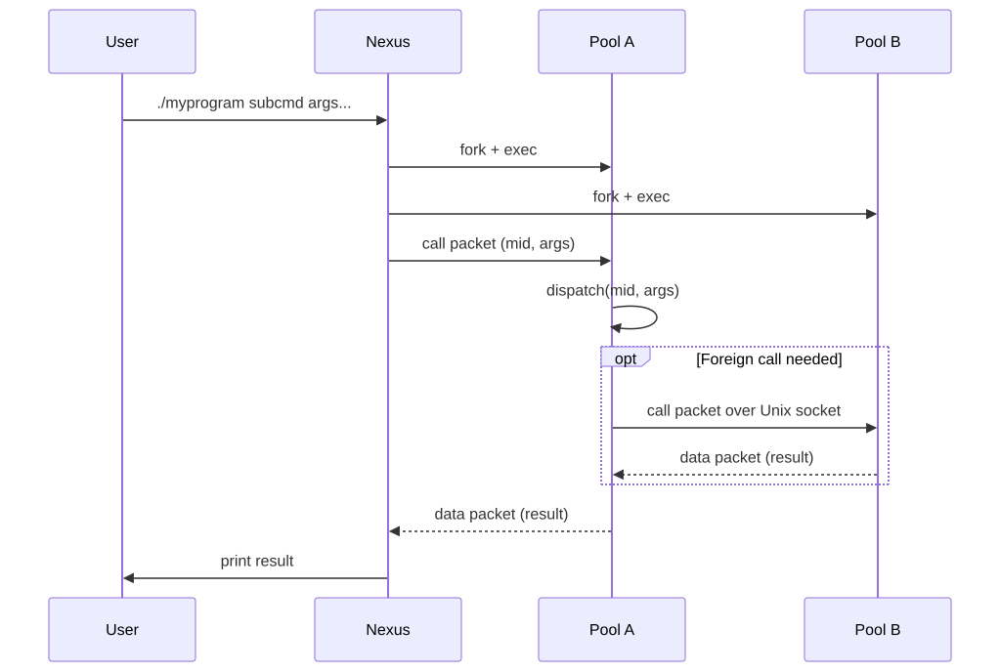
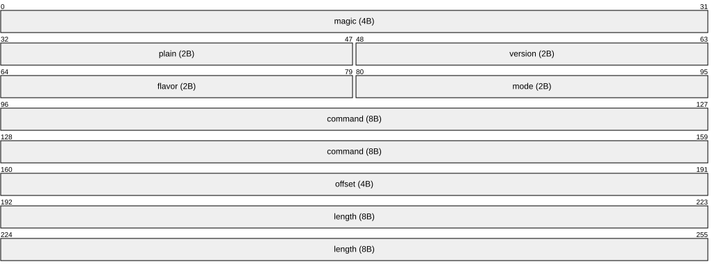

1. Intro
Morloc replaces the application with the function as the unit you build, publish, and compose.
You write ordinary code in an ordinary language and give it a type in Morloc. From that one type the compiler derives the command line interface, the network API, the MCP tool description a model reads, the wire format, and the argument parser, and it checks every boundary those cross before anything runs. The interface is not a convention an author remembered to follow. It is a consequence of a declaration.
Morloc types are language-neutral, so the implementation behind a type may come from any supported language, or from a composition of functions written in several. The compiler generates the code that carries data between them. That is why Morloc is polyglot: a library of functions cannot be universal if it is partitioned by language.
1.1. Morloc in one program
Two functions, in two languages, neither aware of the other. A C++ sum:
#pragma once
#include <vector>
double sum(const std::vector<double>& vec) {
double sum = 0.0;
for (double value : vec) {
sum += value;
}
return sum;
}and a parallel map in Python:
import multiprocessing as mp
def pmap(f, xs):
with mp.Pool() as pool:
results = pool.map(f, xs)
return resultsNeither file imports anything from Morloc. The Morloc module gives each a type and composes them:
module m (sum, sumOfSums)
import root-py
import root-cpp
source Py from "foo.py" ("pmap")
source Cpp from "foo.hpp" ("sum")
pmap :: (a -> b) -> [a] -> [b]
--' Add up a list of numbers
sum :: [Real] -> Real
--' Add up a list of lists, summing each in parallel
sumOfSums :: [[Real]] -> Real
sumOfSums = sum . pmap sum. is function composition, so sumOfSums reads right to left: pmap sum sums
each inner list in parallel, and the outer sum adds the results. The --'
lines are docstrings, which the compiler carries into every generated interface.
$ morloc make sums.loc
$ ./sums sumOfSums '[[1,2],[3,4,5]]'
15A Python function called a C++ function across a process boundary, and you wrote no binding, no serializer, and no argument parser. Getting Started builds this program up one step at a time.
1.2. What Morloc is not
Morloc is not a foreign function interface generator. You write no bindings and the languages never import one another. They run as separate processes and the compiler generates the traffic between them, which is why adding a language to a program costs a line rather than a binding layer.
It is not a language you rewrite into. The C++, Python, R, and Rust in a Morloc program is ordinary code in those languages, with no Morloc imports, no annotations, and no base class. You keep your editor, your debugger, your libraries, and your existing code. What Morloc adds is a type and a name.
2. Why Morloc?
Every command line tool solves the same problems a second time. Argument parsing, input and output formatting, compression, streaming, exit codes, introspection: none of it is the tool’s actual work, all of it admits many reasonable answers, and every tool picks its own. Consistency across an ecosystem is then reachable only if every author agrees on a wide range of conventions and writes their code accordingly.
The costs of that are structural rather than accidental. A tool’s --help is
prose written at its author’s whim, so no machine can build a reliable inventory
of an environment. Two tools exchange structured data only if they already agree
on a format, so anything richer than a byte stream needs a shared framework or a
lossy encoding. A user who wants one more feature, or one fewer, has no move
short of asking the maintainer. And because the command line is the only face a
tool has, every other caller — a library, a network client, a model — gets a
fresh layer of boilerplate laid over it, generating system calls and parsing
text back out. That face also forces a shape on the work: a tool takes its input
from the filesystem and delivers its output there, and calling it means spawning
a process, whether or not the computation needed any of that.
Morloc’s answer to each of these is the same answer: derive the interface from the type instead of writing it. The sections below are that answer applied in different directions.
2.1. The interface is derived, not written
The program above declared two functions. It also, without further instruction, became a command line tool:
$ ./sums -h
Usage: ./sums <nexus_options> <command> <command_options>
Commands:
sum Add up a list of numbers
sumOfSums Add up a list of lists, summing each in parallel
General Options:
-h, --help Print help (see more with '--help')and a set of tool definitions a model client can consume:
$ ./sums --mcp-tools
{
"tools": [
{
"name": "sum",
"description": "Add up a list of numbers",
"inputSchema": {
"type": "object",
"properties": {
"_1": {
"type": "array",
"items": {
"type": "number"
}
}
},
"required": [
"_1"
],
"additionalProperties": false
}
},
...The same program serves over HTTP, TCP, and Unix sockets, and answers
--json-help with a machine-readable description of every command. None of
these is a separate build or a separate description. They are renderings of the
types the compiler already checked, so they cannot drift from the functions:
rename an argument or change a return type and every one of them moves on the
next build.
Building CLIs covers the command line view, Building APIs the network and MCP views, and The interface as data the introspection formats.
2.2. Values cross boundaries, not file formats
A Morloc command writes its return type, serialized. A command that accepts that type reads it. Neither end invents a file format and neither end writes a parser.
Here is a second program. A C++ function counts every k-length subsequence of
a string and hands back a std::map<std::string, int>. A Python function takes
the Shannon entropy of a count table and expects a dict. Morloc knows both as
Map Str Int, so composing them is an application and nothing else:
module kmers (countKmers, entropy, complexity)
import map-cpp
import map-py
source Cpp from "kmer.cpp" ("count_kmers" as countKmers)
source Py from "entropy.py" ("entropy" as entropy)
--' Count every k-length subsequence
countKmers :: Int -> Str -> Map Str Int
--' Shannon entropy of a count table, in bits
entropy :: Map Str Int -> Real
--' Sequence complexity: the entropy of its k-mer profile
complexity :: Int -> Str -> Real
complexity k seq = entropy (countKmers k seq)Composed inside one program, nothing is ever written to a file or a pipe:
$ ./kmers complexity 3 GATTACAGATTACA
2.75162916738782The same declaration reaches past the edge of a program. Each of those functions is a command too, so the two halves can run as separate processes and pass the count table between them:
$ ./kmers countKmers 3 GATTACAGATTACA
[["ACA",2],["AGA",1],["ATT",2],["CAG",1],["GAT",2],["TAC",2],["TTA",2]]
$ ./kmers countKmers 3 GATTACAGATTACA | ./kmers entropy -
2.75162916738782Same answer, and nobody wrote a format. Composing is the faster of the two and the one to reach for; the piped form pays for a pipe. What makes the piped form work at all is that the wire form falls out of the same declaration that generated each command’s interface, so two programs built by different people, in different languages, at different times meet at the seam having agreed on nothing but a type.
The wire form is the compiler’s business, not yours. A compiled Morloc program
runs one pool per language — a process holding all of that language’s
functions — and the compiler decides how a value moves between them: small
values ride inside the packet, large ones go through shared memory with only a
pointer on the socket, and the reader can ask for JSON or MessagePack instead.
Data too large for memory need not be a value at all: IFile, IStream, and
OStream describe data that lives in a file, indexed or walked in order, and a
handle to one crosses a pool boundary like any other argument. See
Controlling data transfer and Random access and streaming.
2.3. A signature and its implementations are separate things
A Morloc module may declare types and signatures and supply no code at all. Such a module typechecks and will not compile, because there is nothing to generate. It is complete as a specification and empty as a program.
Implementations arrive by import. Writing code that is not tied to a language writes two unit
conversions in no language at all, then compiles them to C++ by importing
root-cpp — or to Python, by changing that one line to root-py. Import both
and the compiler chooses per function; how it chooses is One term may have many definitions.
The standard library is built this way. root declares the typeclasses and
signatures; root-cpp, root-py, root-r, and root-rust supply the code.
The same split runs through vector, map, set, text, and the rest.
A signature is a surface, not a size. Nothing here says an implementation must be small: the functional core of a large application — tens of thousands of lines, once the format parsing and the incidental IO are stripped off — takes a type in a few lines. Morloc modules are small in their typed interface, which is the surface you compose against, and can be whatever size they need to be underneath.
2.4. Tests and benchmarks follow the type, not the language
Because the signature is separate from the implementations, so is everything written against the signature.
The vector module holds its own test suite, written once, in terms of the
abstract module. Each implementation module binds that suite to itself in three
lines:
module test-vector-py (test)
import vector.test (test)
import vector-pymodule test-vector-cpp (test)
import vector.test (test)
import vector-cppSame tests, same assertions, different code underneath:
$ cd vector-py && morloc make -o test test.loc && ./test test
...
All 81 tests pass
$ cd vector-cpp && morloc make -o test test.loc && ./test test
...
All 81 tests passBenchmarking works the same way, and for the same reason. Write the composition once against the abstract module, bind it to two implementations, and call both from one program. The runtime reports per-call timings through a log template you configure rather than code you write, so the measurement is not something each implementation reports for itself. See Logging.
2.5. Toolboxes add and subtract
A module that compiles to a command line tool is still a module, so another
module can import it. Given two installed modules — sift, which searches
files, and stats, which draws charts — a toolbox that takes some commands
from each is an import list and an export list:
--' A little toolbox for reading notes
module tools (scan, summarize, histogram)
import sift
import statsTwo imports, one export line, no glue. The result is a tool in its own right, with its own help, completions, and MCP surface, built from commands their authors never coordinated on.
Addition is another import. Subtraction is leaving a name out of the export
list: sift may export five commands and this toolbox publishes two, and the
three left out are gone from the help, from the completions, and from the MCP
surface, with the code behind them never built. Neither move requires a plugin
system, and neither requires the consent of whoever wrote sift.
2.6. Caching, logging, and placement are annotations
Memoizing an expensive step, recording what ran and how long it took, or moving heavy work onto another machine are not properties of a function. They are properties of where a function sits in a composition, and Morloc lets you say so without touching the function.
Label a call site, and configure the label in the program’s YAML:
foo xs = expensive_step@slowfn xslabeled-groups:
expensive_step: { cache: true }Every call into expensive_step@slowfn is now memoized to disk. The freshness
check is content-based rather than mtime-based: editing an unrelated comment
does not invalidate the cache, copying the program to a new path does not
either, and two machines that build byte-identical pool sources share it. The
same group config carries log: true, and a label may cover a complex term
rather than a single call, so an entire branch of the execution tree can be
cached, logged, or — this is the part still in development — dispatched to a
remote worker.
Failure is handled in the same spirit. A build flag wraps every foreign call so that anything which throws dumps its arguments to disk and records the chain of calls that reached it, which makes a failure inspectable without reproducing it. Builds without the flag pay nothing. See Caching, Logging, Debugging, and Execution contexts.
2.7. One environment, solved once
The usual objection to a polyglot program is that it multiplies package managers. Morloc’s answer is to solve the dependency problem rather than route around it.
A program declares what it needs — its languages, and its packages from conda,
PyPI, crates, and the system — and mim, the Morloc installation manager,
resolves the whole set together into one environment. That environment is built
natively on Linux and Apple Silicon macOS, or in a container where native will
not work, and the compiler provisions it as part of morloc make. Imported
Morloc modules are fetched automatically at versions compatible with your
compiler.
Conventional workflow managers reach the opposite conclusion and give each task its own container. That does make the conflict go away, and the price is that every value between every pair of steps must be serialized, written, and parsed again, with a process launch on top. There is no other way for two containers to exchange anything.
Morloc pays a boundary cost only where a value actually crosses between pools. Within a pool there is none: the functions are compiled into one unit and call each other natively, with no serialization, no socket, and no IPC. Across pools the floor is a Unix domain socket round trip — a few microseconds, and dependent on the machine — plus whatever marshalling the two representations need. Some of that marshalling can be avoided today and most of it cannot yet, but the floor is a socket rather than a process.
What that buys is granularity. When every boundary costs a container, functions have to be big enough to amortize it, and a tool becomes a monolith: one program that parses a bespoke format, hard-codes a parallelism strategy, and writes another bespoke format governed by its own flags. When a call inside a language is free and a call across one is microseconds, you can decompose to the level the problem actually has — one function for the base case, an existing library for the parallelism — and the formats move out to the edges, where one parser module reads an archival format once instead of every tool reimplementing it.
Does Morloc allow function-specific containerized environments? in the Q&A takes up the comparison directly.
2.8. What this makes possible
Everything above is already in the compiler. What it is for is not built yet, and I want to be plain about which is which.
If interfaces are derived rather than written, the only artifact worth publishing is the function itself. That makes a few things possible that are not possible today:
-
A library indexed by type. The compiler already knows every exported signature. Searching a library by the shape of the function you need, across languages, becomes a question of building the index rather than inventing the data.
-
Implementations that compete. One signature, many implementations, with shared tests and shared benchmarks deciding between them — across languages, on your data.
-
Composition that is checked rather than trusted. If two modules typecheck against a common environment, they compose, and the compiler proves it where they meet. No pairwise integration testing is required, so the guarantee does not get more expensive as the library grows.
-
Communities organized by values instead of by language. Morloc calls these planes: namespaces that differ not by subject area but by what their members demand of code — review, verification, performance, or nothing at all. See Planes of libraries.
None of that infrastructure exists yet. There is no registry, no type-directed search, and no plane but the default one.
2.9. Where the project stands
Morloc has been in development for about ten years and the first paper is published in PeerJ Computer Science. It is in beta. I use it for my own work and it is not yet used widely by anyone else.
What is solid: the compiler and its type system; Python, C++, and R as fully
supported languages; the generated CLI, HTTP, socket, and MCP interfaces;
environment and dependency management through mim; and a standard library
covering the usual data structures, text, math, tables, and tensors.
What is thin or unfinished: Rust has a working backend but only part of the standard library. Futhark support is experimental. Remote execution — the SLURM dispatch that makes Morloc usable as a cluster workflow language — is in development. Editor support is current for vim and Pygments and out of date for Tree-sitter, VS Code, and Zed. The type system cannot yet express bounded values, which I consider its most-missed feature. The registry and planes are unbuilt.
You will hit sharp edges. When you do, Troubleshooting is the first stop, and the issue tracker is the second.
2.10. What I need
The hard part is finished. The library is nearly empty.
Everything above is machinery for publishing functions. The standard library
uses it, and almost nothing else does — outside morloclib there is barely an
ecosystem at all. A compiler cannot generate one, and that is where I need
people:
-
Write a module. Take something you already maintain, give it types, and publish it. Modules and Libraries covers how.
-
Report what breaks. A bug report is worth more to me than a patch right now. Unexpected behavior, a bad error message, a gap in this manual, and anything that was harder than it should have been all count.
-
Bring a language. Adding a backend is a bounded, well-defined piece of work, and each one makes every existing module reachable from a new community.
-
Fix the editor tooling. The Tree-sitter grammar has fallen behind the compiler, and the Zed and VS Code extensions depend on it. Pull requests welcome.
There is a Morloc meetup twice a week, Tuesdays at 5pm ET and Saturdays at 1pm ET, on Discord. I demo what is new, walk through code, and answer questions. Come and be helpfully critical.
3. Getting Started
3.1. Installing Morloc
Morloc is installed and managed by mim, the Morloc installation manager. It
fetches the compiler and runtime, resolves each program’s cross-language
package dependencies into one coherent world, and runs, serves, and inspects
Morloc programs. There is no separate Morloc install step: mim is the whole
of it.
Morloc runs on Linux and on Apple Silicon macOS. On Windows, install through the Windows Subsystem for Linux and follow the Linux instructions inside it.
3.1.1. Installing mim
One command, on Linux (x86-64 or ARM) or Apple Silicon macOS:
$ curl -fsSL https://raw.githubusercontent.com/morloc-project/morloc-manager/main/scripts/install.sh | shThis downloads the prebuilt mim binary for your platform, checks it against
the published SHA-256 when that checksum is reachable, and installs it into
~/.local/bin (or $XDG_BIN_HOME, if you set it). No sudo is needed. Two
environment variables adjust it:
| Variable | Effect |
|---|---|
|
Directory to install into. Default: |
|
Git tag to install (e.g. |
The installer never edits your shell startup files. If the destination is
already on your PATH — as ~/.local/bin is on most Linux distributions — you are done:
$ mim --versionOtherwise the installer prints the exact command to add it, which on macOS it
usually will: macOS builds its default PATH from /etc/paths, which does not
include ~/.local/bin. For zsh, the macOS default shell, that command is:
$ echo 'export PATH="$HOME/.local/bin:$PATH"' >> ~/.zshrcOpen a new shell afterwards, or run the same export in the current one.
mim is the only executable you need on your PATH; everything else lives
inside the environments mim manages.
What mim needs from your host
mim is a single static binary with no libraries to install, but it does shell
out to a few standard tools:
-
curl— required. Every artifactmimfetches goes through it, andwgetis not a substitute. -
tar— required, to unpack the runtime source and other archives. -
nix— required only on NixOS. -
a container engine — required only if your host cannot run the native backend.
Those last two are explained next.
3.1.2. Choosing a backend
You do not normally have to choose. mim new probes the host, picks a viable
backend, and remembers the choice for later environments.
Native is the default wherever it works. Morloc runs directly on your host
against a toolchain mim provisions with conda/pixi into a private directory.
Nothing is installed system-wide and no container engine is needed. Container
is the fallback, taken automatically when the native backend cannot work;
Docker and Podman are supported.
To force one:
$ mim new --engine none # native
$ mim new --engine podman # or: --engine dockerIf more than one container engine is installed and no default has been recorded
yet, mim asks you to name one rather than guessing.
Which hosts get which backend
The native backend works on:
-
Linux with glibc and a standard filesystem layout (Debian, Ubuntu, Fedora, RHEL, Arch, and so on), on x86-64 and ARM
-
macOS on Apple Silicon
-
NixOS, provided the
nixtoolchain is available and unprivileged user namespaces are enabled. Conda binaries expect the dynamic loader at a path NixOS does not have, somimbuilds abuildFHSEnvsandbox to supply one.
Everything else falls back to a container: musl distributions such as Alpine,
hosts with a non-standard filesystem layout, NixOS without nix or without user
namespaces, and Intel macOS, for which no prebuilt Morloc compiler is
published.
Podman notes
Unlike Docker, podman runs rootless by default, so no sudo is required, and on
Linux it runs with no daemon.
On macOS and Windows (even through WSL) a virtual machine is required, so you
will need to initialize podman first:
$ podman machine init
$ podman machine startApptainer / Singularity notes
Apptainer (formerly Singularity) is the usual container engine on HPC clusters.
It runs rootless, has no daemon, and uses a single-file image format (.sif)
that lives on the shared filesystem, which makes it a natural fit for
SLURM-style job dispatch. The historical fork SingularityCE is treated as
equivalent; either binary is detected automatically.
|
|
Experimental Feature
Apptainer support is in development and is the least tested of the backends.
Creating an environment with |
3.1.3. Creating an environment
An environment is a named, self-contained Morloc installation: a solved toolchain of compilers and language runtimes, the Morloc compiler and runtime built against it, and a data directory holding installed modules and binaries. On the container backend that toolchain lives in an image; on the native backend it lives in a private directory on your host. Either way, everything Morloc does happens inside an environment, and environments do not interfere with each other or with anything else on your machine.
Create one and name it base:
$ mim new base
...
Solving native toolchain with pixi (this may take a few minutes)...
...
Native environment 'base' is ready.
Set 'base' as the default environment.Every setting has a default, so that is the whole command. Pass --wizard to
be prompted for each one instead; mim new -h lists them all.
The first run is the slow one. mim downloads the Morloc compiler for your
platform, solves a conda toolchain, and builds the Morloc runtime from source
against it. Budget several minutes. Later environments reuse the downloaded
compiler, and re-running new or update with unchanged requirements skips the
solve entirely.
It is also the run that fails if your network inspects TLS. If a download stops
with a certificate error, pass your organization’s CA with --cert-bundle; see
Troubleshooting.
Without a name, an environment is named after the Morloc version it tracks:
latest, or v0.98.0 for a pinned --morloc-version. The first environment
you create becomes the default — the one every command targets when you do
not pass --env — so base is ready to use immediately.
No language toolchain is installed up front. Python, R, C++, and Rust are
provisioned on demand the first time you build a program that uses them, so your
first morloc make will also pause to solve and install. Use --lang to pin a
language into the environment whether or not a program asks for it:
$ mim new polyglot --lang py,cppYou can keep as many environments as you like and act on any of them with
--env:
$ mim ls # list them; the default is marked
$ mim info base # detail on one
$ mim modify --env edge --set-default # change the default
$ mim rm base # remove onemim info <name> reports the environment’s backend, its Morloc version, the
languages in its solved world, and the directories it owns. Add --packages to
list every package in the solved world at its locked version.
3.1.4. Working inside an environment
Two ways in. mim run executes a single command:
$ mim run -- morloc --version
0.101.0 # you may have a later versionmim shell drops you into an interactive session:
$ mim shellInside that shell morloc is on your PATH, so you can drop the mim run --
prefix. The rest of this manual writes commands as if you are in a mim shell;
outside one, prefix them with mim run --.
The shell starts in your current working directory, and changes you make there persist. On the container backend that directory is bind-mounted in. The environment’s module directory persists too, so anything installed into it stays installed.
If you want syntax highlighting before you start typing, skip ahead to Editor support and come back.
3.2. Your first program
The inevitable "Hello World" case is implemented in Morloc like so:
module hw (hello)
--' A Morlock's hello world
hello = "Hello up there"Three things are happening. module hw (hello) names the module and lists what
it exports. hello = "Hello up there" binds a term to a string literal. The
--' line is a docstring: an ordinary -- comment is ignored, but --'
attaches documentation to the term below it, and that documentation ends up in
the generated command line interface.
Compile it:
$ morloc make hello.locThis produces two things next to your source:
hello-
a launcher script, named after the source file. Override the name with
-o. (Installing a program is different — it takes the module’s name instead. See Search and install.) hello-build/-
the build directory.
manifest.jsondescribes the program andenvspec.jsonrecords the packages it needs. A program that sources a foreign language also gets a compiled pool per language underpools/<language>/; this one sources nothing, so it has none.
The launcher is a thin shell script. It execs the shared morloc-nexus runtime
against manifest.json; the nexus parses your arguments, starts whichever
language pools the call needs, routes data between them, and prints the result.
Run it:
$ ./hello hello
"Hello up there"
$ ./hello
"Hello up there"Because hw exports exactly one term, naming the command is optional — the
second form means the same thing.
The -h flag prints help generated from your types and docstrings:
$ ./hello -h
A Morlock's hello world
Usage: ./hello <nexus_options> @ <command_options>
General Options:
-h, --help Print help (see more with '--help')
Return: StrYou wrote no argument parser, no usage text, and no type annotation. The
docstring became the summary and Str was inferred. This is the first thing
worth noticing about Morloc: the command line interface is not something you
build, it is a view of the library you wrote. The same library also has API
and MCP views, covered in Building APIs.
The @ in the usage line sits where a subcommand name would go. It is the
separator between the options the runtime provides and the ones your function
declares, and it shows up here because hw has a single export and there is no
name to mark that boundary. The two argument zones covers it; you can ignore it
until then.
3.3. Sourcing a foreign function
A Morloc module on its own has no implementations. Real work comes from functions imported out of other languages. Let’s write two unit conversions in C++:
#pragma once
double cels2fahr(double cels){
return 1.8 * cels + 32.0;
}
double meters2feet(double meters){
return meters * 3.28084;
}This is ordinary C++. It includes no Morloc headers and knows nothing about Morloc — that is the point. Now source it:
module units (cels2fahr, meters2feet)
source Cpp from "units.hpp" ("cels2fahr", "meters2feet")
type Cpp => Real = "double"
--' Convert from Celsius to Fahrenheit
cels2fahr :: Real -> Real
--' Convert from meters to feet
meters2feet :: Real -> RealReading it line by line:
-
source Cpp from "units.hpp" (…)pulls two names out of a C++ header. The language tagCpptells the compiler which toolchain and which pool the functions belong to. -
type Cpp ⇒ Real = "double"maps the general Morloc typeRealonto the concrete C++ typedouble. Morloc types are language-neutral; this is how you say what one becomes in a particular language. -
cels2fahr :: Real → Realis the general type signature. Morloc checks calls against this, not against the C++ declaration.
Compile and run it:
$ morloc make units.loc
$ ./units cels2fahr 100
212The generated interface lists both exported commands, with the docstrings you wrote:
$ ./units -h
Usage: ./units <nexus_options> <command> <command_options>
Commands:
cels2fahr Convert from Celsius to Fahrenheit
meters2feet Convert from meters to feet
General Options:
-h, --help Print help (see more with '--help')and each command has its own help, showing the types it derived:
$ ./units cels2fahr -h
Convert from Celsius to Fahrenheit
Usage: ./units <nexus_options> cels2fahr <command_options>
General Options:
-h, --help Print help (see more with '--help')
Positional arguments:
1: type: Real
Return: Real3.4. Writing code that is not tied to a language
Sourcing C++ works, but it pins these conversions to C++. Anyone who wants them from Python has to make a foreign call for arithmetic. Morloc lets you write the definition once, in no language at all:
module unitsAbstract (cels2fahr, meters2feet)
import root
--' Convert from Celsius to Fahrenheit
cels2fahr cels = 1.8 * cels + 32.0
--' Convert from meters to feet
meters2feet meters = meters * 3.28084root is a language-independent module from the standard library. It declares
the typeclasses for arithmetic and much else, but supplies no
implementations. So + and * here are general operations with no code
behind them yet.
This is the first module the manual imports, and you do not have to install it.
morloc make fetches any missing import, and that module’s own imports, before
it builds:
$ morloc make units-abstract.loc
Auto-installing missing dependency: root
Fetching module 'root'...
Fetching module 'internal'...
Installed module 'internal'
Installed module 'root'
units-abstract.loc:6:29: error:
No implementation found for '+'
|
6 | cels2fahr cels = 1.8 * cels + 32.0
| ^The install worked. The build did not, and that error is worth sitting with, because it is the shape of Morloc’s central idea.
Nothing is wrong with the module. Now that root is on disk you can ask the
compiler directly, and it types both terms without complaint:
$ morloc typecheck units-abstract.loc
cels2fahr :: Real -> Real
meters2feet :: Real -> Real|
|
Only the build commands fetch, which is why this section built before it
typechecked. |
So the module is complete as a specification and empty as a program: there is nothing wrong to fix, there is only code missing. To get a program, import a module that carries implementations:
module convert (cels2fahr, meters2feet)
import .units-abstract
import root-cppThe leading . in .units-abstract marks a local file rather than an installed
module. root-cpp holds the C++ implementations of `root’s terms — here,
just the arithmetic operators.
$ morloc make convert.loc
$ ./convert cels2fahr 100
212Same answer as the sourced-C++ version, from a definition that never mentioned C++. The build directory says which language it ended up in:
$ ls convert-build/pools/
cppAnd that is the one line you change. Edit convert.loc to import root-py,
rebuild, and the same abstract module compiles to Python:
$ ls convert-build/pools/
py
$ ./convert cels2fahr 100
212You can import both and let the compiler decide which implementations to use. How it chooses is One term may have many definitions.
3.5. Mixing languages in one program
Morloc composes across languages freely, and that includes passing functions across the boundary. Here is a Python function that takes a temperature and a conversion function:
def report(ctemp, c2f):
return f"The current temperature is {ctemp}C ({c2f(ctemp)}F)"We can hand it the C++ cels2fahr from earlier:
module report (report)
import root-py
import root-cpp
source Py from "format.py" ("report" as report_wrapper)
report_wrapper :: Real -> (Real -> Real) -> Str
source Cpp from "units.hpp" ("cels2fahr")
cels2fahr :: Real -> Real
--' Write a cute string about the temperature
report t = report_wrapper t cels2fahrThe as keyword renames an imported term, which lets the sourced Python
function and the exported Morloc term share a concept without colliding.
$ morloc make report.loc
$ ./report report 21
"The current temperature is 21.0C (69.80000000000001F)"A Python function called a C++ function, and you wrote no binding code. All of the interop — serializing the argument, starting both pools, passing a callable reference across the process boundary — is generated. Build Architecture covers how.
3.6. Parallelism across languages
Because implementations are interchangeable, so are execution strategies. Here
is a parallel map written in Python, driving a summation written in C++:
#pragma once
#include <vector>
double sum(const std::vector<double>& vec) {
double sum = 0.0;
for (double value : vec) {
sum += value;
}
return sum;
}import multiprocessing as mp
def pmap(f, xs):
with mp.Pool() as pool:
results = pool.map(f, xs)
return resultsmodule sums (sumOfSums)
import root-py
import root-cpp
source Py from "foo.py" ("pmap")
source Cpp from "foo.hpp" ("sum")
pmap :: (a -> b) -> [a] -> [b]
sum :: [Real] -> Real
sumOfSums = sum . pmap sumsumOfSums sums a list of lists. The . operator is function composition, so
this reads right to left: pmap sum sums each inner list in parallel, and the
outer sum adds the results.
The lowercase a and b in pmap’s signature are type variables, meaning
`pmap works for any element types. That signature is the ordinary map’s,
fixed to lists, so the two are interchangeable here: writing `map sum instead
of pmap sum compiles and gives the same answer. Parallelism is a choice of
implementation, not a change to the program.
$ morloc make sums.loc
$ ./sums sumOfSums '[[1,2],[3,4,5]]'
153.7. Where to go next
You now have the whole shape of Morloc: modules export terms, terms get general types, implementations come from foreign languages or from other Morloc modules, and the compiler generates every interface and every boundary crossing.
From here:
-
Syntax and Features is the language proper — records, pattern matching, effects, optionals, and the rest.
-
Advanced Types covers typeclasses, polymorphism, and how one term takes many implementations.
-
Building CLIs goes deeper on the command line interface you saw above, including how to control argument shapes and output formats.
-
Building APIs is the same library served over HTTP and MCP.
-
Modules and Libraries explains the standard library and how to publish your own modules.
mim demos fetches example programs published for your Morloc version. Every
demo in a bundle is known to build and pass on that version, so nothing there
fails for reasons unrelated to what you are learning:
$ mim demos --list # see what is available, download nothing
$ mim demos # fetch them all
$ mim demos --tag rust-examples # fetch one groupThey land in examples-<tag>-<version>/ in the current directory.
|
|
The demo collection is still being assembled, so |
3.8. Editor support
Morloc is a young language and editor support reflects that. Here is the honest state of each, so you know what you are getting into.
vim — current
This is what I use, so it stays current. Install the syntax file and a filetype detection rule:
$ mkdir -p ~/.vim/syntax/
$ mkdir -p ~/.vim/ftdetect/
$ curl -o ~/.vim/syntax/loc.vim https://raw.githubusercontent.com/morloc-project/vimmorloc/main/loc.vim
$ echo 'au BufRead,BufNewFile *.loc set filetype=loc' > ~/.vim/ftdetect/loc.vim
Pygments — current
morloclexer is a
Pygments lexer for Morloc. It is what highlights every
code block in this manual, so it tracks the language closely.
$ pip install morloclexer
$ pygmentize -l morloc example.locIt is also usable from Python, which is how the Weena Discord bot renders snippets.
Tree-sitter — out of date
tree-sitter-morloc is a full grammar for Morloc: a complete lexer and parser specification, which gives editors real structural understanding rather than regex highlighting, and parses a concrete syntax tree you can query.
The grammar has fallen behind the compiler and does not cover current syntax. Treat it as a starting point rather than a working tool. Bringing it back into step is on the list, and pull requests are very welcome.

VS Code / VSCodium / Cursor — out of date
There is a published morloc extension with highlighting and snippet expansion.
It has not been updated in a while and does not know about recent syntax, so
expect gaps.

Zed — out of date, unfinished
zed-morloc is mostly written and depends on the Tree-sitter grammar above, which means it inherits that grammar’s staleness on top of its own unresolved bugs. I am happy to accept pull requests!
3.9. Troubleshooting
The problems new users actually hit, and what to do about each.
A command is not found
mim: command not found means the install directory is not on your PATH. The
installer never edits your shell startup files; it prints the exact command for
your shell when the destination is missing, and you have to open a new shell
afterwards. On macOS this is the normal case rather than the exception, because
the default PATH is built from /etc/paths, which does not include
~/.local/bin.
morloc: command not found is different and usually means the install worked.
morloc lives inside an environment, not on your host PATH. Reach it with
mim run — morloc …, or open a mim shell and drop the prefix. mim is
the only executable that lands on your PATH.
Behind a corporate firewall
A TLS-inspecting proxy re-signs every HTTPS connection with a private CA, so
downloads fail certificate verification and mim new stops partway through.
Point mim at your organization’s CA:
$ mim new base --cert-bundle /path/to/corp-ca.pem
$ mim modify --env base --cert-bundle /path/to/corp-ca.pem # after it rotatesThe file is PEM or DER and holds your CA certificates only — mim supplies
the public roots itself. Everything it runs that fetches — curl, pixi,
conda, git, cargo, the language runtimes — is then pointed at the result
through SSL_CERT_FILE, REQUESTS_CA_BUNDLE, CURL_CA_BUNDLE,
CONDA_SSL_VERIFY, NODE_EXTRA_CA_CERTS, GIT_SSL_CAINFO and
CARGO_HTTP_CAINFO.
Obtaining the certificate is your IT department’s business, not Morloc’s, and
--cert-bundle is the whole of Morloc’s interface to it. It is usually already
on the machine. On macOS, admin-installed certificates are in the system
keychain, separate from Apple’s public roots:
$ security find-certificates -a -p /Library/Keychains/System.keychain > corp-ca.pemOn Linux, if the host already trusts the CA it is in the system store. Prefer the drop-in directory: it holds the certificates your organization added, where the trusted bundle mixes them in with several hundred public roots.
| Distribution | Trusted bundle | Drop-in directory |
|---|---|---|
Debian, Ubuntu |
|
|
RHEL, Fedora |
|
|
Arch |
|
|
SUSE |
|
|
Those directories hold loose .crt files and --cert-bundle takes one file,
so concatenate them when there is more than one:
$ cat /usr/local/share/ca-certificates/*.crt > corp-ca.pemmim validates the file before it builds anything and prints what it found:
per certificate, the subject, whether it is a CA, whether it is self-signed,
the validity dates and a SHA-256 fingerprint. It refuses the file when:
-
it is empty, or over 1 MiB — a CA bundle is a handful of certificates, so this is almost always the wrong file
-
it contains private key material — export the certificate, not the key
-
it is DER but not an X.509 certificate, such as a key or a PKCS#12 archive
-
it is text — most often a proxy error page saved with a
.pemextension -
nothing in it decodes as a certificate
An expired or not-yet-valid certificate is reported as a warning rather than a refusal, because a skewed system clock looks identical from here. PEM blocks that fail to parse are skipped and named, not treated as fatal.
Afterwards mim doctor compares the source file against the fingerprints the
environment was built with, which is how you find out the CA rotated under you.
The first build takes several minutes
Expected. mim new downloads the Morloc compiler, solves a conda toolchain and
builds the Morloc runtime from source against it. Your first morloc make in a
language you have not used yet pauses again to provision that language. Both
results are cached: later environments reuse the downloaded compiler, and a
solve with unchanged requirements is skipped entirely.
An import fails on a fresh environment
morloc make fetches a missing module; morloc typecheck, dump and eval
do not. Build the program once, or run morloc install <module> by hand, and
the import resolves for every command afterwards. Writing code that is not tied to a language covers
this.
If the fetch itself fails rather than being skipped, it is a network problem — see the firewall entry above.
Something else
$ mim doctor # check the default environment
$ mim doctor --env base # or a named one
$ mim doctor --deep # also run checks inside the container; slower--strict makes it exit non-zero on warnings, which is what you want in CI.
4. Syntax and Features
4.1. Functions
Everything in Morloc is built out of functions, so this is where to start. This section covers how they are defined, composed, and partially applied.
Most examples in this chapter are fragments — a definition or two, without the surrounding module. To run one, wrap it in a module and import implementations:
module demo (myTerm)
import root-py -- or root-cpp, root-r
myTerm = ...Comments start with --. A --' comment is a docstring and attaches to the
term below it.
4.1.1. Definition and application
Functions are defined with their arguments separated by whitespace, and applied the same way:
foo x y z = g x (f y z)foo takes the arguments x, y, and z. Application binds tighter than
anything else, so g x (f y z) calls g with two arguments: x, and the
result of f y z. If you have a background in the Algol family — C, Python,
Java — the missing parentheses and commas take a little getting used to. The
payoff shows up in the next two sections.
4.1.2. Composition and application operators
The internal module, re-exported from root, defines the composition
operator . and the application operator $.
. glues two functions into one. These two definitions mean the same thing:
foo1 x = g (f x)
foo2 = g . fThe first passes the output of f x into g explicitly. The second says the
same thing without naming the argument at all — foo2 is g after f.
Composition chains read right to left and build pipelines cleanly:
process = format . transform . validate . parse$ is application with the lowest possible precedence, which makes it a way to
delete parentheses:
foo1 x = h (g (f x))
foo2 x = h $ g $ f x4.1.3. Partial application
Give a function of N arguments fewer than N, and you get back a function of the rest. This is not a special feature; it falls out of how application works.
Take fold, which reduces a container with a binary function, an initial value,
and the container itself:
fold :: Foldable f => (b -> a -> b) -> b -> f a -> bSupplying one or two of those three arguments leaves a function behind:
-- concatenate a list of strings onto an initial value
concatTo :: Str -> [Str] -> Str
concatTo = fold (<>)
-- extend an initial list
extend :: [[Int]] -> [Int]
extend = fold (<>) [1,2,3]
-- append a list of values to an initial value
append :: [[[Int]]] -> [Int] -> [[Int]]
append xss ys = map (fold (<>) ys) xssEach of these carries a type signature, and that is not decoration. fold is a
typeclass method: it works over any Foldable container, so a partial
application like fold (<>) leaves the container type undetermined. Without a
signature the compiler has nothing to pin it to and reports:
$ morloc typecheck partial.loc
partial.loc:6:12: error:
General type error: No instance found for Foldable::fold
Are you missing a top-level type signature?
|
6 | concatTo = fold (<>)
| ^The rule is worth internalizing early, because it is the most common thing to
trip over: a point-free definition built from typeclass methods usually needs a
signature. Adding arguments back is the other fix — concatTo x xs = fold (<>)
x xs typechecks without help, because the arguments constrain the types.
4.1.4. Operator sections
Binary operators partially apply too, on either side. Leaving the right operand off gives a function of the right operand:
divideByTwo :: [Real] -> [Real]
divideByTwo = map (/ 2.0)and leaving the left operand off gives a function of the left:
divideTwoBy :: [Real] -> [Real]
divideTwoBy = map (2.0 /)The difference shows up immediately:
$ ./sections divideByTwo '[1,2,3]'
[0.5,1,1.5]
$ ./sections divideTwoBy '[1,2,4]'
[2,1,0.5]Numeric literals are not polymorphic across Int and Real, so 2.0 keeps
these on Real. For integer division use //, which is defined on Int:
halvedInts :: [Int] -> [Int]
halvedInts = map (// 2)$ ./sections halvedInts '[1,5,9]'
[0,2,4]4.1.5. Lambdas
An anonymous function is a backslash, one or more parameters, →, and a body.
Lambdas capture free variables from the enclosing scope:
addBias :: Real -> [Real] -> [Real]
addBias bias = map (\x -> x + bias)bias comes from the outer parameter list and is captured by the lambda.
$ ./sections addBias 10 '[1,2]'
[11,12]A lambda must take at least one argument. The zero-argument form is a parse error:
$ morloc typecheck five.loc
five.loc:6:10: unexpected '->'
|
6 | five = \ -> 5
| ^To wrap a value as a computation to be run later, use the effect system rather than a lambda — see Effects and delayed evaluation.
4.2. Foreign functions
A Morloc module by itself declares types and compositions but contains no
implementations. Those come from other languages, pulled in with source. This
is the mechanism the rest of the language is built on.
4.2.1. The source statement
source names a language, a file, and the terms to take from it:
source Cpp from "foo.hpp" ("map", "sum", "snd")
source Py from "foo.py" ("morloc_map" as map, "morloc_sum" as sum, "snd")The language tag (Cpp, Py, R, Rust) decides which toolchain compiles the
code and which pool the function runs in. as renames a foreign term for use in
Morloc, which matters when the foreign name is taken or awkward.
Block form
There is a second spelling. source … where opens an indented block with one
term per line, which leaves room for a docstring above each:
source Py from "foo.py" where
--' Sum a list of reals.
sum
--' name: morloc_map
mapThe two forms are otherwise equivalent — pick whichever reads better.
--' name: <foreign name> says what the term is called on the other side, so
the Morloc name and the foreign name can differ. It is the block-form
equivalent of as, and these two declare the same thing:
source Py from "foo.py" ("morloc_map" as map)
source Py from "foo.py" where
--' name: morloc_map
mapProse docstring lines are allowed too and are carried as documentation.
Curried foreign functions: the rsize directive
Skip this unless a foreign function returns a closure rather than taking all its arguments at once. It assumes nothing beyond the section above.
In a pure functional language, a → (b → c) and a → b → c are the same
type. A function of two arguments is a function of one argument returning a
function of one argument; currying makes the distinction vanish. Morloc’s type
system takes that view — the two spellings are interchangeable, and the
compiler reports both the same way.
Real languages usually do not. In Python the two are different objects with different call syntax:
# one argument, returns a closure: scale(2.0)([1, 2])
def scale(factor):
return lambda xs: [factor * x for x in xs]
# two arguments, called at once: shift(10.0, [1, 2])
def shift(offset, xs):
return [offset + x for x in xs]Both have the Morloc type Real → [Real] → [Real], and nothing in that type
says which shape the Python side has. By default Morloc assumes the flat one and
emits a single call with every argument. Hand it scale and the pool dies:
TypeError: scale() takes 1 positional argument but 2 were given--' rsize: N declares how many arguments go in each call. The values are the
sizes of the leading call groups; the final group is whatever is left over, so
you never write it.
source Py from "curry.py" where
--' rsize: 1
scale
shift
scale :: Real -> [Real] -> [Real]
shift :: Real -> [Real] -> [Real]A docstring attaches to the term directly below it, so scale is curried here
and shift is not. The generated pool shows the difference:
n2 = curry.scale(n0) (n1)
n4 = curry.shift(n2, n3)Both work, and partial application works through a curried source too:
$ ./curry scaled 3 '[1,2]'
[3,6]
$ ./curry shifted 10 '[1,2]'
[11,12]
$ ./curry doubler '[1,2]'
[2,4]where doubler = scale 2.0 compiles to curry.scale(2.0) (n4).
For deeper nesting, give one value per leading group:
| Declaration | Foreign shape | Emitted call |
|---|---|---|
(none) |
|
|
|
|
|
|
|
|
|
|
|
Each value must be at least 1 and must leave at least one argument for the
group after it, since the final group is implicit. So rsize: 2 on a
two-argument function is rejected — it would consume both arguments and leave
an empty call behind.
rsize is the only place the curried-versus-flat distinction is recorded.
Writing the type as Real → ([Real] → [Real]) does not imply it and does not
change the emitted call.
The C++ side is an ordinary header:
#pragma once
#include <vector>
#include <tuple>
// map :: (a -> b) -> [a] -> [b]
template <typename F, typename A>
auto map(F f, const std::vector<A>& xs) {
std::vector<decltype(f(xs.front()))> result;
result.reserve(xs.size());
for (const auto& x : xs) {
result.push_back(f(x));
}
return result;
}
// snd :: (a, b) -> b
template <typename A, typename B>
B snd(const std::tuple<A, B>& p) {
return std::get<1>(p);
}
// sum :: [a] -> a
template <typename A>
A sum(const std::vector<A>& xs) {
A total = A{0};
for (const auto& x : xs) {
total += x;
}
return total;
}These implementations are completely independent of Morloc. They have no special constraints, they operate on ordinary native data structures, and nothing stops them being used outside Morloc entirely. That independence is the point: Morloc consumes libraries as they already exist.
4.2.2. General types
Morloc moves data between languages, and to do that it needs to know the shape of each function. You supply that as a general type signature:
map :: (a -> b) -> [a] -> [b]
snd :: (a, b) -> b
sum :: [Real] -> RealThe syntax is borrowed from Haskell. Square brackets are homogeneous lists,
parenthesized comma-separated values are tuples, and arrows are functions. In
map, (a → b) is a function from a generic a to a generic b, [a] is
the input list, and [b] is the output. snd pulls the second element out of a
two-tuple. sum reduces a list of reals to one real.
The brackets are sugar. Written out, the same signatures are:
map :: (a -> b) -> List a -> List b
snd :: Tuple2 a b -> b
sum :: List Real -> Real4.2.3. Native type mappings
A general type may correspond to a different concrete type in every language, so you also give the mapping:
type Cpp => List a = "std::vector<$1>" a
type Cpp => Tuple2 a b = "std::tuple<$1,$2>" a b
type Cpp => Real = "double"
type Py => List a = "list" a
type Py => Tuple2 a b = "tuple" a b
type Py => Real = "float"These are type functions. Take the C++ mapping for List a. Once the
typechecker has solved for the parameter a and recursively converted it to
C++, that result is substituted for $1. If a turns out to be Real, it
maps to double, which substitutes into the list type to give
std::vector<double> — and that is the type in the generated C++.
In practice you rarely write these. They come from foundational modules such as
root-cpp and root-py, which is why the examples in
Getting Started could import a language and start working.
With the signatures and mappings in place, the module compiles and runs:
$ ./foreign mySum '[1,2,3.5]'
6.5
$ ./foreign mySnd '[1,2]'
2Note that a tuple is written as a JSON array on the command line.
Higher-order functions cross the boundary too. A Morloc function passed into the
sourced C++ map works exactly as you would hope:
doubleAll :: [Real] -> [Real]
doubleAll = map twice$ ./foreign doubleAll '[1,2,3]'
[2,4,6]4.2.4. Sourcing builtins and other non-exports
Morloc calls a sourced Python term as an attribute of its module: a term taken
from foo.py is invoked as foo.<name>. Builtins are not attributes of foo,
so sourcing one directly compiles fine and then fails when it runs:
source Py from "foo.py" ("map", "sum", "snd")$ ./foreign mySum '[1,2,3.5]'
Error: run failed
module 'foo' has no attribute 'sum'
at mySum [py] (mid=1, foreign.loc:1:17)The failure is deferred to run time, which makes it worth knowing about in advance. There are two fixes.
Re-export the builtins so they become module attributes:
from builtins import map, sum # make builtins module-level attributes
def snd(pair):
return pair[1]Or wrap them under names of your own and rename on the way in, which is where
the morloc_sum in the first example came from:
def morloc_sum(xs):
return sum(xs)
def snd(pair):
return pair[1]source Py from "foo.py" ("morloc_sum" as sum, "snd")Both work. The same rule applies to anything that is not a module-level name:
a term from a third-party package must be locally defined (def bar(…)) or
explicitly imported (from somemodule import bar) in the sourced file.
4.2.5. Keyword-shaped foreign operators
Some foreign symbols are neither callable identifiers nor symbolic operators.
Python’s and and or are language keywords: they exist only as infix syntax,
so and(x, y) is a parse error and there is no function object to import.
A backtick-quoted name sources such a symbol as an infix operator whose emitted text is the quoted string:
source Py from "core.py" (`and` as (&&), `or` as (||))
(&&) :: Bool -> Bool -> Bool
(||) :: Bool -> Bool -> BoolAt each call site the generated pool writes the quoted text between the two
arguments. No wrapper is needed on the Python side — core.py can be empty.
The generated pool.py for x && y and x || y contains:
n2 = (n0 and n1)
...
n4 = (n2 or n3)The backtick contents are emitted verbatim, so any two-argument infix operator
the target language recognises works the same way: Python is, in, not in,
R %in%, and so on.
4.3. Booleans
Booleans are written True and False and have the type Bool. The
comparison and logical operators come from root, so a module that uses them
imports one of the root implementations.
yes :: Bool
yes = True
no :: Bool
no = FalseThe literals are capitalized, but a Bool prints as lowercase JSON:
$ ./bools yes
true4.3.1. Comparison operators
The Eq and Ord typeclasses in root provide the standard comparisons. They
work over any type with the appropriate instance: integers, reals, strings, and
tuples and lists of comparable values.
| Operator | Meaning |
|---|---|
|
equal |
|
not equal |
|
less than |
|
less than or equal |
|
greater than |
|
greater than or equal |
isPositive :: Int -> Bool
isPositive x = x > 0
sameLength :: [a] -> [b] -> Bool
sameLength xs ys = length xs == length yssameLength is generic in both list types, which is fine inside a program but
means it cannot be given a command line interface — the compiler cannot decide
how to read an argument whose type is still a variable. Exporting it produces:
$ morloc make bools.loc
Warning: skipping generic export 'sameLength'The program still builds; only that one command is absent.
4.3.2. Logical operators
| Operator | Meaning |
|---|---|
|
logical AND |
|
logical OR |
|
logical negation (a prefix function, not an operator) |
|
exclusive OR |
|
NOT AND |
Both && and || are right-associative, and && binds tighter than ||
(infixr 3 && against infixr 2 ||), which matches the convention in most
languages. So a || b && c groups as a || (b && c).
inRange :: Int -> Int -> Int -> Bool
inRange lo hi x = lo <= x && x <= hi
isWeekend :: Int -> Bool
isWeekend day = day == 0 || day == 6
isWeekday :: Int -> Bool
isWeekday day = not (isWeekend day)$ ./bools inRange 1 10 5
true
$ ./bools isWeekday 6
falseShort-circuiting
&& and || short-circuit at run time: if the left operand settles the answer,
the right one is never evaluated. This is worth demonstrating rather than
asserting, because it is not obvious in a language where the two operands may
run in different processes.
divZero :: Int -> Int
divZero x = x // 0
-- b comes from the caller, so the compiler cannot fold this away
test :: Bool -> Int -> Bool
test b x = b && (divZero x == 0)With b false, the division never happens:
$ ./shortcircuit test false 5
falseWith b true, it does, and the error surfaces with the call chain that produced
it:
$ ./shortcircuit test true 5
Error: run failed
integer division or modulo by zero
at _ [py] (mid=1364, shortcircuit.loc:10:28)
at test [py] (mid=1, shortcircuit.loc:1:22)4.3.3. Boolean-valued list functions
root provides three Foldable functions that answer questions about a
container:
| Function | Signature |
|---|---|
|
|
|
|
|
|
any is True when the predicate holds for at least one element, all when it
holds for every element, and elem tests membership using ==.
hasNegative :: [Int] -> Bool
hasNegative = any (< 0)
allPositive :: [Int] -> Bool
allPositive = all (> 0)
containsZero :: [Int] -> Bool
containsZero = elem 0$ ./bools hasNegative '[1,-2,3]'
true
$ ./bools containsZero '[1,0,3]'
true4.3.4. Guards
Booleans drive Morloc’s guard syntax. A guard alternative starts with ? and
selects the first branch whose condition is True; the : line is the
fallthrough:
classify :: Int -> Str
classify x
? x < 0 = "negative"
? x == 0 = "zero"
: "positive"$ ./bools classify -4
"negative"
$ ./bools classify 0
"zero"
$ ./bools classify 7
"positive"See Conditionals for the full description of guard syntax.
4.4. Integer types
Morloc has one integer type for ordinary use and a family of fixed-width types for when the width matters. This section covers how integers are written, how the default type behaves across languages, and what happens at the boundaries.
4.4.1. Writing integer literals
Integers may be written in decimal, hexadecimal, octal, or binary:
-- standard decimal notation
42
-- hexadecimal notation (case insensitive)
0xf00d
0xDEADBEEF
-- octal notation (upper or lowercase 'o')
0o755
-- binary notation (upper or lowercase 'b')
0b0101A prefixed literal must contain only digits valid for its base and must end on a non-identifier character. A trailing character that is not a valid digit for the base is a compile-time error, not a silently truncated literal followed by an unrelated identifier:
$ morloc eval -e "0xF00D"
61453
$ morloc eval -e "0xF0OD"
<expr>:1:1: malformed hexadecimal literal: 0xF0OD
$ morloc eval -e "0b1001"
9
$ morloc eval -e "0o755"
493morloc eval evaluates a single expression, which makes it a good way to check
one of these rules. It has no implicit prelude, so anything beyond a bare
literal needs an import:
$ morloc eval -e '5 - 1'
<expr>:1:3: error:
Undefined term: -
hint: an eval expression has no implicit prelude; prefix the expression with 'import root-py;' (or the module that defines -) to bring it into scope
$ morloc eval -e 'import root-py; 5 - 1'
44.4.2. Integer types at a glance
| Type | Width | Use case |
|---|---|---|
|
Variable (arbitrary precision) |
Default integer for most code. Works across all languages. |
|
8, 16, 32, 64 bits (signed) |
Performance-critical code with known bounds. |
|
8, 16, 32, 64 bits (unsigned) |
Bit manipulation, byte data, indices. |
4.4.3. The default Int type
Int is Morloc’s universal integer, and integer literals are Int unless
something says otherwise:
x = 42 -- Int
y = 0xDEADBEEF -- Int (hex literal)
z = -9999 -- IntOn the wire Int is variable-width: values up to 64 bits fit in 16 bytes
inline, and larger values spill to a pointer to an array of 64-bit limbs. But
the range you actually get inside a language is whatever that language’s
native binding provides:
| Language | Native binding for Int |
Representable range |
|---|---|---|
Python |
|
Arbitrary precision |
C++ |
|
32-bit signed ( |
R |
|
32-bit signed |
This asymmetry is the thing to remember about Int. A value that a Python pool
holds happily may not fit in the C++ or R pool it is handed to. If a field
needs more than 32 bits on those backends, declare it I64 or U64, which map
to int64_t in C++ and to R’s numeric (53-bit integer precision via
double).
4.4.4. Big integers from Python
Python’s integers are arbitrary precision and Morloc’s Int takes full
advantage of that. Factorials make the point quickly:
module main (fact)
import root-py
fact :: Int -> Int
fact n
? n == 0 = 1
: n * fact (n - 1)$ morloc make -o calc main.loc
$ ./calc fact 100
93326215443944152681699238856266700490715968264381621468592963895217599993229915608941463976156518286253697920827223758251185210916864000000000000000000000000That is a 525-bit integer, far past any fixed-width type. It is stored as a multi-limb big integer and printed exactly.
4.4.5. Overflow at a language boundary
When a value too large for the target language’s type crosses into it, Morloc raises an error at the boundary rather than truncating silently.
To show this we need to force the computation to happen in Python and then move
the result. root-py exports idpy and root-cpp exports idcpp: identity
functions pinned to one language. Wrapping a term in idpy forces it into the
Python pool, and idcpp then drags the result across into C++. Without them
the compiler would collapse fact to pure C++ — faster, but it would not
demonstrate anything.
module main (factCpp, factR)
import root-py
import root-cpp
import root-r
fact :: Int -> Int
fact n
? n == 0 = 1
: n * fact (n - 1)
factPy :: Int -> Int
factPy n = idpy (fact n)
factCpp :: Int -> Int
factCpp x = idcpp (factPy x)
factR :: Int -> Int
factR x = idr (factPy x)Small values cross without trouble:
$ ./calc factCpp 5
120Large ones report where and why they failed:
$ ./calc factCpp 100
Error: run failed
Integer overflow: 9-limb integer (576 bits) does not fit in 32-bit type (range -2147483648 to 2147483647)
at _ [cpp] (mid=2787, main.loc:16:20)
at factCpp [cpp] (mid=1, main.loc:1:14)R is limited to 32-bit integers, and to 53-bit integer precision through doubles, so it refuses the same value:
$ ./calc factR 100
Error: run failed
Integer overflow: 9-limb integer (576 bits) does not fit in R's numeric type (max 2^53 for integer precision).
at _ [r] (mid=2815, main.loc:19:16)
at factR [r] (mid=2, main.loc:1:23)Both report the same shape: what overflowed, what it would not fit in, and the call chain that got there.
4.4.6. Compile-time literal bounds
A literal written into a fixed-width type is bounds-checked against that type:
tooLarge :: U8
tooLarge = 1000The check happens during code generation, so morloc typecheck passes and
morloc make is what rejects it:
$ morloc typecheck intbounds.loc
tooLarge :: U8
$ morloc make intbounds.loc
intbounds.loc:6:12: error:
Integer literal 1000 overflows U8 (range 0 to 255)
|
6 | tooLarge = 1000
| ^The caret points at the literal, not at the binding name, so when the same literal is referenced from several sites the diagnostic stays on the offending source.
4.4.7. Fixed-width integer types
When values are known to be bounded, fixed-width types map directly onto the target language’s native types:
| Morloc type | C++ | Python | R |
|---|---|---|---|
|
|
|
|
|
|
|
|
|
|
|
|
|
|
|
|
|
|
|
|
|
|
|
|
|
|
|
|
|
|
|
|
These serialize directly: the wire format is identical to the in-memory representation, with no conversion step. That makes them the right choice for numerical code and for interop with C libraries that require specific widths.
|
|
The Python column is int throughout rather than a genuinely fixed-size
type such as a numpy scalar. Types can be specialized that way; see
Native type mappings, and Tensors and Tables for the
higher-performance shared-memory types.
|
4.4.8. Converting between integer types
Two typeclasses in root cover numeric conversion. into is for conversions
that can never fail and never lose information. tryInto is for everything
else, and its result carries the Err effect:
class TotalInto a b where
into :: a -> b
class PartialInto a b where
tryInto :: a -> <Err> bWidening is total — signed to wider signed, unsigned to wider unsigned, and
unsigned into a strictly wider signed target. A reflexive TotalInto a a
instance covers the identity case.
wide :: I8 -> I64
wide x = into xAnything that can fail goes through tryInto: narrowing, negative into
unsigned, or unsigned into a same-or-narrower signed target. Because it returns
<Err> b rather than a plain value, the failure is visible in the type. Either
propagate the effect:
byte :: I32 -> <Err> U8
byte x = tryInto xor handle it with @catch and a fallback:
byteOrZero :: I32 -> U8
byteOrZero x = @catch (tryInto x) 0The fallback is checked against the type the failing expression would have
produced, so the bare 0 is a U8 here and not a defaulted Int:
$ ./bytes byteOrZero 65
65
$ ./bytes byteOrZero 9999
0Int gets the most restrictive treatment, because its width varies by backend:
32-bit in R and C++, unbounded in Python. Every Int to fixed-width
conversion goes through tryInto — even Int → I64 — and converting U32
or wider into Int does too. That keeps behaviour the same everywhere.
4.4.9. Negation and unary minus
The - glyph plays two roles: binary subtraction and unary negation. Which one
you get depends on whitespace.
-- prefix `-` on a value: the additive inverse
neg :: Int -> Int
neg x = -x
-- prefix `-` on an expression: parenthesize the expression
shifted :: Int -> Int
shifted x = -(x + 1)
-- works on any numeric primitive (Int, I8..I64, U8..U64,
-- Real, F32, F64) via the `Negatable` typeclass
flipReal :: Real -> Real
flipReal x = -xNegative literals
A - directly against a digit, with no space between, is part of the literal.
So -1 is an atomic integer rather than a function call, and works in places
where calls are not allowed, such as pure-data files:
xs :: [Int]
xs = [-1, -2, -3, -100]
ys :: [Real]
ys = [-1.5, -2.0e-3, -0xff]
point :: (Int, Int)
point = (-3, -4)$ ./neg xs
[-1,-2,-3,-100]
$ ./neg ys
[-1.5,-0.002,-255]
$ ./neg point
[-3,-4]The same atomic-lexing rule extends to the non-finite Real literals -Inf and
-NaN; see Floating-point types.
When - is unary and when it is binary
The lexer uses an asymmetric-whitespace rule. A - immediately followed by a
digit is part of a negative literal whenever the dash sits where an expression
cannot have just ended:
-
at the start of input;
-
after an opening delimiter (
(,[,,,=, and so on); -
after another operator;
-
after whitespace, when the digit is not separated from the dash.
Anywhere else — where the dash directly follows a token that finishes an operand, with no whitespace between — it is binary subtraction.
| Expression | Interpretation |
|---|---|
|
atomic literal |
|
|
|
binary subtraction |
|
binary subtraction |
|
list of two negative literals |
|
|
|
desugars to |
|
desugars to |
The first row of that table is easy to verify. Applying a number to something is
a type error, and that is exactly the error 5 -1 produces — proving the -1
was read as an argument rather than as subtraction:
$ morloc eval -e "5 -1"
<expr>:1:1: error:
General type error: Application of non-functional expression of type: Int- With `f
-
Int → Int` defined as
f x = x * 10, the three spellings behave as the table says:
$ ./dashtest t1 -- t1 = f -1
-10
$ ./dashtest t2 -- t2 = 100 - 1
99
$ ./dashtest t3 -- t3 = 100-1
99Position restrictions
Prefix - on a non-literal expression is allowed wherever an expression can
begin, including on the right of an infix operator. The one restriction is that
its operand must start with an atom — an identifier, a literal, an open paren
or bracket — and not with another prefix -.
-- ok: -x at the start of an expression
neg1 :: Int -> Int
neg1 x = -x
-- ok: -x on the right of a binary operator
neg2 :: Int -> Int
neg2 x = 1 + -x
-- ok: subtracting a negated value
neg3 :: Int -> Int -> Int
neg3 x y = x - -y
-- ok: -x parenthesized; equivalent to neg2
neg4 :: Int -> Int
neg4 x = 1 + (-x)
-- ok: parenthesize the inner negation to stack two
double :: Int -> Int
double x = -(-x)Two adjacent prefix dashes are a parse error:
$ morloc typecheck negbad.loc
negbad.loc:6:11: unexpected '-'
|
6 | bad x = - -x
| ^The Negatable typeclass
Negation comes from a typeclass in the internal module:
class Negatable a where
negate :: a -> aEvery numeric primitive has an instance in root-py, root-cpp, and root-r
that dispatches to the host language’s native unary minus. The parser desugars
-x to negate x, so writing negate x yourself is equivalent. The compiler
picks the language for a negation the same way it picks the language for any
other polymorphic call: from the imported language modules and the surrounding
cross-language boundaries.
4.5. Floating-point types
Morloc’s floating-point types are IEEE 754 binary formats. Real is the
default; F32 and F64 exist when you need to control precision explicitly.
| Type | Width | Use case |
|---|---|---|
|
Language-dependent (typically 64-bit IEEE 754) |
Default floating point. |
|
32 bits (IEEE 754 binary32) |
Tensors, GPU code, memory-constrained numerics. |
|
64 bits (IEEE 754 binary64) |
Default-precision scientific computation. |
Each maps to its host-language equivalent:
| Morloc type | C++ | Python | R |
|---|---|---|---|
|
|
|
|
|
|
|
|
|
|
|
|
4.5.1. Literal forms
Real literals need a decimal point or an exponent:
pi :: Real
pi = 3.14159265358979
-- scientific notation (upper or lowercase 'e')
avogadro :: F64
avogadro = 6.022e23
-- negative exponent
boltzmann :: Real
boltzmann = 1.380649e-23$ ./floats pi
3.14159265358979
$ ./floats avogadro
6.022e+23
$ ./floats boltzmann
1.380649e-23Note the explicit + on the printed exponent.
A literal with neither a decimal point nor an exponent is an Int, not a
Real. Write 1.0 or 1e0 when you want a floating-point one.
4.5.2. IEEE 754 and non-finite values
Real follows IEEE 754 in full, which means its value space is the finite
reals representable at the target precision plus three classes of non-finite
value:
-
+Infinity -
-Infinity -
NaN(Not-a-Number)
Ordinary arithmetic produces these: dividing by zero, overflowing the finite
range, or evaluating an indeterminate form such as Inf - Inf or 0 * Inf.
They are not error states. They are values, and they propagate through later
computation by rules the standard fixes.
Source-level literals
Each has a dedicated literal, capitalized to match Morloc’s other keyword-like
values (True, False, Null):
posInf :: Real
posInf = Inf
negInf :: Real
negInf = -Inf
notANumber :: Real
notANumber = NaN-Inf lexes as a single atomic token, the same way -1.5 is one token rather
than negate 1.5, so it works in pure-Morloc contexts where negate is not in
scope. The same holds for -NaN, though the sign of a NaN collapses at the
wire boundary: both NaN and -NaN come back as the canonical nan.
Arithmetic on non-finite values
All three target languages follow IEEE 754 here, so these results do not depend on which pool the computation lands in. Every row below was run:
| Expression | Result | Why |
|---|---|---|
|
|
Same-sign infinity addition |
|
|
Invalid op: opposite-sign cancellation |
|
|
Invalid op: same-sign cancellation |
|
|
Invalid op: zero times infinity |
|
|
Magnitude preservation |
|
|
Sign rule on multiplication |
|
|
Like-sign product |
|
|
Mixed-sign product |
|
|
NaN absorption (additive) |
|
|
NaN beats zero |
|
|
NaN beats infinity |
|
|
Sign-bit flip |
|
|
Sign flip stays NaN |
4.5.3. Compile-time literal overflow
A real literal is bounds-checked against the precision it is written into. As
with integer literals, the check runs during code generation, so typecheck
passes and make rejects it.
For Real and F64, the maximum magnitude is about 1.8e308:
tooBig :: Real
tooBig = 1e500$ morloc make fbig.loc
fbig.loc:6:10: error:
Float literal 1.0e500 overflows F64 (|x| > 1.8e308)
|
6 | tooBig = 1e500
| ^The check is per-precision, so a literal that fits F64 can still overflow
F32 (maximum magnitude about 3.4e38):
tooBigF32 :: F32
tooBigF32 = 1e100$ morloc make fbig32.loc
fbig32.loc:6:13: error:
Float literal 1.0e100 overflows F32 (|x| > 3.4e38)
|
6 | tooBigF32 = 1e100
| ^Negative literals are checked symmetrically:
$ morloc make fneg.loc
fneg.loc:6:10: error:
Float literal -1.0e500 overflows F64 (|x| > 1.8e308)
|
6 | tooNeg = -1e500
| ^Inf, -Inf, and NaN bypass the bounds check by construction. They are
explicit non-finite values, not finite literals that happened to overflow.
4.5.4. Wire format and JSON interop
The JSON wire format is RFC 8259 compliant, and standard JSON has no syntax for non-finite numbers. The specification’s recommended workaround is strings, so Morloc emits them as quoted lowercase strings:
| Value | JSON form |
|---|---|
|
|
|
|
|
|
Finite |
The numeric form ( |
You can see this in the output of the literals above:
$ ./floats posInf
"inf"
$ ./floats negInf
"-inf"
$ ./floats notANumber
"nan"So a Real-typed field can arrive as either a JSON number or a JSON string.
Consumers need to accept both.
Internal cross-language boundaries do not use JSON. Morloc-to-pool calls use a binary format that preserves IEEE 754 bytes verbatim, so non-finite values round-trip with no loss. Only the JSON boundary — usually the program’s final output — uses the string form.
|
|
Cross-language gotcha: division by zero in Python
The three languages agree on IEEE 754 arithmetic, but they disagree on one
point of language design: Python raises That difference is visible from inside Morloc. If a program depends on |
4.5.5. F32 precision considerations
F32 halves memory against F64, which matters for large numerical arrays — tensors, image buffers, GPU input — where the extra precision is not needed.
The tradeoffs:
-
The significand carries about 7 decimal digits of precision, against about
- 15 to 17 for
F64. A literal such as `0.1 -
F32` rounds to the nearest representable binary32 value; it is not exact.
- 15 to 17 for
-
Maximum magnitude is about 3.4e38, against 1.8e308 for
F64. The compile-time bounds check enforces this for literals. -
All
F32arithmetic runs at single precision, including the overflow-to-infinity threshold.
For most application code Real is the right default. Reach for F32
deliberately, when memory or single-precision hardware demands it.
4.5.6. Converting to and from floating point
The TotalInto and PartialInto classes from Integer types extend to
floats. into covers the conversions that cannot fail: widening an integer
whose full range fits the target mantissa (24 bits for F32, 53 for F64),
F32 to F64, and Real to and from F64 in both directions — they are
representationally identical in every current backend.
Integer-to-float conversions that may lose precision get their own class:
class RealLike a where
toReal :: a -> RealtoReal never fails but can lose precision above 2^53. Every numeric type has
an instance. The canonical use is a mean:
mean :: [Real] -> Real
mean xs = sum xs / toReal (size xs)$ ./floats mean '[1,2,3,4]'
2.5size returns U64 and toReal bridges it into the Real denominator. The
precision loss is theoretical at any realistic container size, but naming it
keeps the lossy step visible.
Float-to-integer conversion goes through tryInto, so its result carries the
Err effect. It fails on NaN, on Inf, on non-integer values, and on
values outside the target integer’s range:
approx :: Real -> <Err> I32
approx x = tryInto x$ ./floats approx 3.0
3
$ ./floats approx 3.5
Error: run failed
cannot convert non-integer float 3.5 to integer
at approx [py] (mid=8, floats.loc:1:75)
$ ./floats approx 1e20
Error: run failed
value 100000000000000000000 out of range [-2147483648, 2147483647]
at approx [py] (mid=8, floats.loc:1:75)To round to a nearby integer instead of failing, apply round, floor, ceil,
or trunc from the math module first, then tryInto the result.
Narrowing F64 to F32, and Real to F32, are deliberately not provided
as TotalInto instances — they lose precision on every input. If you need one,
source an explicit foreign function, so the lossy step is visible at the call
site.
4.5.7. Negation of Real values
Negation works on Real, F32, and F64 exactly as it does on integers, via
the Negatable typeclass; see Integer types for the full unary-minus
rules. Three IEEE 754 specifics:
-
-Infand-NaNare atomic source literals. Nonegatelookup happens, so they work in pure-Morloc contexts. -
negate Infis-Inf, andnegate NaNisNaN— the sign bit flips, but the value is still NaN. -
negate 0.0is-0.0. The two compare equal under==but have different bit patterns. The binary cross-language format preserves the distinction; the JSON output does not.
4.6. Strings
A Morloc string is double-quoted and holds Unicode text:
cn :: Str
cn = "你知道得太多了🤫"$ ./strs cn
"你知道得太多了🤫"4.6.1. Interpolation
#{…} splices an expression into a string. The expression must already have
type Str — nothing is converted for you. To embed an Int, Real, Bool,
or anything else, call show (or another explicit stringifier) inside the
braces:
helloYou :: Str -> Str
helloYou you = "hello #{you}"
sayCount :: Int -> Str
sayCount n = "count: #{show n}"$ ./strs helloYou world
"hello world"
$ ./strs sayCount 42
"count: 42"4.6.2. Escapes
Inside a string, a backslash introduces an escape sequence:
| Escape | Meaning |
|---|---|
|
newline |
|
tab |
|
carriage return |
|
NUL byte (U+0000) |
|
a single backslash |
|
a literal double quote |
Any other backslashed character is a compile-time error:
$ morloc typecheck escbad.loc
escbad.loc:6:10: invalid escape sequence \qA literal backslash must therefore always be written \\, which matters most
for Windows paths:
winPath :: Str
winPath = "C:\\Users\\weena\\file.txt"Writing "C:\Users" instead does not compile, because \U is not a recognized
escape:
$ morloc typecheck escwin.loc
escwin.loc:6:8: invalid escape sequence \U4.6.3. Triple-quoted strings
Triple quotes come in double and single flavours. On one line they save you from escaping the other kind of quote:
dblStr :: Str
dblStr = """That's weird, I also spelled it "ear quotes", like "bunny ears"."""
sinStr :: Str
sinStr = '''"Why do the pigeons here have so few toes?"'''The result is identical to the single-quoted form with the quotes escaped:
$ ./strs dblStr
"That's weird, I also spelled it \"ear quotes\", like \"bunny ears\"."
$ ./strs sinStr
"\"Why do the pigeons here have so few toes?\""Their real value is multi-line text. The indentation is trimmed by three rules, applied in order:
-
Initial spaces up to and including the first newline are removed.
-
Terminal spaces up to and including the final newline are removed.
-
Every line loses as many leading spaces as the least-indented line has.
So a block can sit at whatever indentation the surrounding code wants:
longString :: Str
longString =
"""
this is a long
string
"""$ ./strs longString
"this is a long\nstring"The leading and trailing newlines and the two-space indent are all gone, which is what lets you write natural paragraphs without breaking your code’s indentation.
4.6.4. NUL bytes in strings
This is the thorniest corner of multi-language string support, and it is worth understanding before it bites you.
In C, a NUL byte terminates a string, so strlen and strdup cannot see past
one. R is built on C and makes within-string NULs strictly illegal. Python and
C++ (through std::string) both allow them — but even there, problems appear
whenever the string is converted to a C string, through .c_str() in C++ or
across the C ABI in Python.
NULs are not common in text. Their main use is binary data, and Str is not
the right type for that — prefer [U8], or better a Vector n U8
(Tensors). But Morloc’s philosophy is to support what is idiomatic in each
language, and Str is meant to be the ordinary string type everywhere. So
Morloc’s Str does support NULs: they can be written with \0, the evaluator
preserves them end to end, and JSON represents them with the standard \u0000
escape.
In a Python-only program that works exactly as you would expect:
nulStr :: Str
nulStr = "ab\0cd"
pyNul :: Str
pyNul = idpy nulStr
len :: U64
len = size nulStr$ ./nul len
5
$ ./nul pyNul
"ab\u0000cd"Five bytes, and the NUL survives the round trip.
Each language declares allow_string_null in its lang.yaml. When a Str
carrying a NUL is sent to a language that does not allow one, the call is
rejected.
A literal is caught while compiling, because the generated source would not parse. The error names the pool and points at the place the literal enters it:
$ morloc make nul.loc
nul.loc:13:12: error:
This string literal contains a NUL byte, which the r pool cannot represent in its native string type. Move the literal to a language that can (Python, C++, Julia, or the nexus itself), or remove the NUL byte. See the allow_string_null field in the language's lang.yaml.
|
13 | rNul = idr nulStr
| ^It points at the use rather than the declaration, because the same literal is perfectly legal in a pool that can hold it.
A value computed at run time is caught at the boundary it tries to cross. Arriving as a command-line argument:
r does not support embedded NUL bytes in strings (at args[0])or produced inside one pool and handed to another:
$ ./nexus listR ab
Error: run failed
R cannot represent an embedded NUL byte in a string; one arrived at [1] (byte 2 of 5)
at _ [r] (mid=2053, main.loc:11:14)The path locates the offending slot, which matters when the NUL is buried: [1]
is the second element of a list, .b a record field, and a bare value reports
just the byte offset.
Whether that scan happens is decided when your program is compiled. A value whose type contains no string cannot carry a NUL, so no check is generated for it, and a pool in a language that tolerates NULs is compiled exactly as it would have been. You pay only where a string actually crosses into a language that cannot hold one.
Scanning every string for NULs costs time. You can opt out two ways when you know it is safe:
-
morloc make --unsafe-skip-null-checkbakes a per-program skip flag into the manifest. -
MORLOC_SKIP_NULL_CHECK=1skips the scan for one run.
Both are unsafe in the same way: a NUL that reaches R still crashes inside the R runtime, just with R’s error instead of Morloc’s. There is nothing useful user-written R code can do with a NUL-bearing string.
4.7. Tuples and Lists
Tuples and lists are the two containers you will reach for first. A tuple has a fixed size and may hold elements of different types; a list has variable size and holds elements that all share one type.
Both become JSON arrays on the wire, so from JSON alone you cannot tell whether
[1,2,3] is a three-element list of integers or a three-integer tuple. The type
is what distinguishes them, and the type is not in the JSON.
4.7.1. Tuples
A tuple stores a fixed number of terms of differing type:
x :: (Int, Bool, Real)
x = (1, True, 6.45)$ ./tuples x
[1,true,6.45]Tuple types and tuple values look the same: comma-separated inside parentheses.
The parenthesized type is sugar for a fixed-arity constructor, Tuple3 here.
The parser builds the right TupleN from the number of fields, so there is no
fixed upper bound on arity — a twelve-element tuple reports its type as:
$ morloc typecheck tuples.loc
big :: Tuple12 Int Int Int Int Int Int Int Int Int Int Int IntThat said, past a few members a record with named fields is easier to read and harder to get wrong. See Records.
4.7.2. Lists
Lists are homogeneous and variable length. The base type is List a, and [a]
is sugar for it:
x :: [Int]
x = [1, 2, 3]
ys :: List Real
ys = [1.0, 2.0, 3.0]The two spellings name the same type, and the compiler reports both in the sugared form:
$ morloc typecheck tuples.loc
x :: [Int]
ys :: [Real]List maps to each language’s natural ordered container: list in Python,
std::vector in C++, and list or vector in R.
Every list-like type shares one wire representation — zero or more elements in
contiguous memory — but different in-language structures make different
performance tradeoffs. Deque, for example, is declared in root as a distinct
type over the same representation:
newtype Deque a = List aso it costs nothing to send but can add to either end cheaply in the languages
that back it with a real deque. For how to define such specializations yourself,
see Naming a type: type and newtype.
For numeric work there is a more rigorous and faster alternative to List: the
Vector type, which is the one-dimensional tensor. See Tensors.
4.8. Records
A record is a named, fixed set of named fields. It is the right shape when a tuple would leave you counting positions.
record Person = Person
{ name :: Str
, age :: Int
}Records map to whatever each language uses for the job: a dict in Python, a
list in R, a struct in C++. Internally the layout is positional, but the
surface language always binds by name.
4.8.1. Native representations
The concrete forms must share the general record’s field names and types, so those are not repeated. You only name the container:
record Py => Person = "dict"
record R => Person = "list"
record Cpp => Person = "person_t"Python and R need nothing further — dict and list hold arbitrary fields
already. C++ needs the struct to exist:
#pragma once
#include <string>
struct person_t {
std::string name;
int age;
};
person_t incAge(person_t person){
person.age++;
return person;
}The R and Python sides operate on their native containers directly:
incAge <- function(person){
person$age <- person$age + 1
person
}def incAge(person):
person["age"] += 1
return person4.8.2. Record literals match by field name
Field values bind to declared fields by name. The order in a literal is irrelevant, so these two are the same value:
alice :: Person
alice = { name = "Alice", age = 30 }
alice2 :: Person
alice2 = { age = 30, name = "Alice" }$ ./recs alice
{"name":"Alice","age":30}
$ ./recs alice2
{"name":"Alice","age":30}A literal must mention every declared field exactly once. All three ways to get
that wrong are compile-time errors. The examples below all come from a
recbad.loc whose record is declared on one line:
record Person = Person { name :: Str, age :: Int }Missing a field:
recbad.loc:8:8-25: error:
Record literal does not match declared type Person:
missing field(s): age
|
8 | bad1 = { name = "Alice" }
| ^~~~~~~~~~~~~~~~^Naming a field the record does not have:
recbad.loc:8:8-48: error:
Record literal does not match declared type Person:
unknown field(s): weight
|
8 | bad1 = { name = "Alice", age = 30, weight = 65 }
| ^~~~~~~~~~~~~~~~~~~~~~~~~~~~~~~~~~~~~~~^Repeating a field:
recbad.loc:8:33: duplicate field in record literal: name
|
8 | bad1 = { name = "Alice", name = "Bob", age = 30 }
| ^4.8.3. One record across three languages
Because the record has a native form in each language, a function that operates on it can be sourced from any of them, and they compose:
module recs (foo)
import root-r
import root-py
import root-cpp
record Person = Person
{ name :: Str
, age :: Int
}
record Py => Person = "dict"
record R => Person = "list"
record Cpp => Person = "person_t"
source R from "foo.R" ("incAge" as rinc)
source Py from "foo.py" ("incAge" as pinc)
source Cpp from "foo.hpp" ("incAge" as cinc)
rinc :: Person -> Person
pinc :: Person -> Person
cinc :: Person -> Person
foo :: Str -> Int -> Person
foo name age
= (rinc . pinc . cinc)
{ name = name, age = age }foo builds a Person and then increments its age three times, once in each
language, passing the record across two process boundaries on the way:
$ ./recs foo Bob 40
{"name":"Bob","age":43}Nothing in foo.R, foo.py, or foo.hpp knows the others exist. Each sees
only its own language’s ordinary data structure.
4.9. Patterns
Morloc’s pattern functions are first-class getters, setters, and bracket
operators for reaching into and rearranging data structures. They are ordinary
values, so you can pass them around, map them over a list, and compose them
like any other function.
This section is about extracting and rebuilding data. To bind a value’s parts to names, or to dispatch a function on the shape of its arguments, see Pattern Matching instead.
The examples below use anonymous record types, which are written with = rather
than :::
pts :: [{x = Int, y = Int}]
pts = [{x=0, y=100}, {x=1, y=101}, {x=2, y=102}, {x=3, y=103}]Using :: inside a record type is a common slip, and the compiler says so:
pat.loc:8:9: type-level record literals use `=` to bind fields, not `::`
try: {x = <type>, ...}
`::` is for declarations (e.g. `x :: Int`, `record R where { x :: Int }`)4.9.1. Getter patterns
A getter describes an optionally branching path into a structure. Each segment is a tuple index, a record key, or a group of them. Terminal positions come back as a tuple.
-- the 1st element of a tuple of any size
.0 (1,2) -- 1
.0 ((1,3),2,5) -- (1,3)
-- the 2nd element of the first element
.0.1 ((1,3),2,5) -- 3
-- the 2nd and 1st elements, in that order
.(.1,.0) (1,2,3) -- (2,1)
.(.1,.0) (1,2) -- (2,1)
-- indices and keys mix freely
.0.(.x, .y.1) ({x=1, y=(1,2), z=3}, 6) -- (1,2)A pattern is a function, so it goes wherever a function goes:
map .1 [(1,2),(2,3)] -- [2,3]4.9.2. Setter patterns
A setter is the same path with an assignment at each terminus:
.(.0 = 99) (1,2)
.0.(.x=99, .y.1=33) ({x=1, y=(1,2), z=3}, 6)$ ./patterns s1
[99,2]
$ ./patterns s2
[{"x":99,"y":[1,33],"z":3},6]Setters do not mutate. The spine of the structure is copied, and unmodified
fields still point at the original data. So .(.0 = 42) x builds a new tuple
whose first field is 42 and whose remaining fields are the original elements.
Records behave the same way.
4.9.3. Bracket patterns
Lists get a dedicated bracket form with Python’s index and slice syntax, written
after a dot: .[i] picks an element, .[i:j] takes a sub-range, and .[i:j:k]
adds a stride. The semantics track Python — negative indices count from the
end, out-of-range bounds are clamped, and .[::-1] reverses.
ten :: [Int]
ten = [0,1,2,3,4,5,6,7,8,9]$ ./patterns b1 -- .[0] ten
0
$ ./patterns b2 -- .[-1] ten negative index counts from the end
9
$ ./patterns b3 -- .[1+1] ten any expression of an IndexLike type
2
$ ./patterns b4 -- .[2:5] ten
[2,3,4]
$ ./patterns b5 -- .[:3] ten omitted start defaults to 0
[0,1,2]
$ ./patterns b6 -- .[7:] ten omitted stop defaults to length
[7,8,9]
$ ./patterns b7 -- .[:] ten no-op copy
[0,1,2,3,4,5,6,7,8,9]
$ ./patterns b8 -- .[8:99] ten bounds are clamped
[8,9]
$ ./patterns b9 -- .[0:-1] ten Python-style negative stop
[0,1,2,3,4,5,6,7,8]
$ ./patterns b10 -- .[::2] ten every other element
[0,2,4,6,8]
$ ./patterns b11 -- .[::-1] ten full reverse
[9,8,7,6,5,4,3,2,1,0]
$ ./patterns b12 -- .[7:2:-2] ten strided reverse slice
[7,5,3]Any integral type can be an index or a bound. The conversion to the underlying
64-bit width dispatches through the IndexLike typeclass, so mixed widths are
fine:
ix :: I8 -> U32 -> [Int]
ix i j = .[(i :: I8) : (j :: U32)] tenComposing brackets with other patterns
Brackets chain with the other pattern forms. The rule depends on whether the bracket selects one element or a list:
-
.[i].tail xs— an index yields a scalar, so the tail composes directly..[0].x ptsis(.x . .[0]) pts. -
.[i:j].tail xs— a slice yields a list, so the tail is lifted withmap..[0:3].x ptsismap .x (.[0:3] pts).
The tail can be any pattern body: a record key, a tuple index, a grouped selector, or another bracket. Nested brackets follow the same rule, with the outer map running the inner bracket on each row.
rows :: [{a = [(Int,Int)], b = [{x = Int, y = Int}]}]
rows = [ {a = [(10,20)], b = [{x=100, y=200}]}
, {a = [(30,40)], b = [{x=300, y=400}]} ]
xss :: [[Int]]
xss = [[1,2,3,4,5], [6,7,8,9,10]]$ ./patterns c1 -- .[0].x pts scalar tail composes directly
0
$ ./patterns c2 -- .[2].y pts
102
$ ./patterns c3 -- .[-1].x pts
3
$ ./patterns c4 -- .[:3].x pts slice + field, map-lifted
[0,1,2]
$ ./patterns c5 -- .[::-1].x pts
[3,2,1,0]
$ ./patterns c6 -- .[0:3].(.x, .y) pts slice + group tail
[[0,100],[1,101],[2,102]]
$ ./patterns c7 -- .[0:2].[0:3] xss slice + nested slice
[[1,2,3],[6,7,8]]
$ ./patterns c8 -- .[0:2].(.a.[0].0, .b.[0].y) rows deep mixed chain
[[10,200],[30,400]]Remember that these are JSON outputs, so a tuple prints as an array: c6
returns three two-tuples, which JSON shows as [[0,100],…].
Brackets are getters only. There is no setter form (.[i] = v $ xs) in this
release, and multi-axis brackets (.[i,j] for matrices and tensors) are not
available yet either. Both are planned.
4.9.4. Patterns next to Python
| Pattern | Python | Note |
|---|---|---|
|
|
patterns are functions |
|
|
|
|
|
|
|
|
|
|
|
higher order |
|
|
but non-mutating |
|
|
scalar result |
|
|
slice result (list) |
|
|
full reverse |
|
|
tail map-lifted over slice |
4.9.5. Adding bracket support to your own types
Bracket syntax is not hardcoded. It dispatches through ordinary typeclasses
declared in the standard library’s internal module, so a new container type
can opt in:
-- Indexing: .[i] xs
class Indexable f where
__access_index__ :: ?I64 -> f a -> a
-- Slicing for shape-preserving containers (List, Str, ...)
class Sliceable f where
__get_slice__ :: ?I64 -> ?I64 -> ?I64 -> f a -> f a
-- Slicing for Nat-parameterized containers (Vector, Tensor, ...) where the
-- output length differs from the input length
class SliceableDim f where
__get_slice_dim__ :: ?I64 -> ?I64 -> ?I64 -> f n a -> f m a
-- Casting any user expression in a bound position to ?I64
class IndexLike i where
__to_index__ :: i -> ?I64For a plain container, source an Indexable and a Sliceable instance per
target language. For a container parameterized by a dimensional Nat such as
Vector n a, source Indexable and SliceableDim instead; the compiler picks
SliceableDim automatically when Sliceable is absent.
If someone passes an expression of a custom integer-like type at a bound
position, the compiler casts it through that type’s IndexLike instance. So you
can extend bracket syntax to accept new bound types — a Char index, a
fixed-point coordinate — by adding an IndexLike instance whose to_index
returns ?I64. Pass Null through as Nothing so it composes with the omitted
positions in .[i:], .[:j], and .[::].
Because the dispatch lives in libraries rather than in the compiler, a module that does not import the standard library is free to substitute a different typeclass hierarchy. Bracket syntax simply errors at codegen if no matching instance is in scope.
4.10. Pattern Matching
A pattern describes the shape of a value using the same notation you would use to build it. Morloc matches values against patterns in two ways.
Irrefutable patterns destructure a value into named parts at binding
positions: lambda parameters, function-definition arguments, let left-hand
sides, and do-block ← binds. Every well-typed receiver matches, so these
patterns contain only variable names, wildcards, and structural constructors — no literals, no alternatives. That is what makes them irrefutable.
Refutable patterns dispatch a function on the shape of its arguments through a
list of |-clauses. A clause can fail to match, because a literal matches only
itself, so clauses are tried in order and the first that matches wins.
Patterns covers the related but distinct topic of pattern functions — .0, .[i:j], and friends — which extract and rebuild data rather than bind
names.
4.10.1. Irrefutable patterns
The supported shapes:
-
variable —
xbinds the whole value -
wildcard —
_matches without binding -
tuple —
(x, y)binds each component. Full arity is required; use wildcards for positions you want to ignore, as in(x, _, _) -
record —
{a = x, b = y}binds fields by name. Extra fields are ignored, order does not matter, and the receiver only has to have the keys the pattern mentions. This is structural, or row-polymorphic, matching — the same rule as the.(.a, .b)group getter -
as-pattern —
label@atombindslabelto the whole receiver and destructures further throughatom -
nesting is free:
(x, {a = y, b = _}, q@(l, r))
All four binding sites take them:
-- lambda parameter
first = \ (a, b) -> a
-- function-definition argument
snd (_, y) = y
-- let-binding
demo pair = let (a, b) = pair in a
-- do-block bind
useIt = do
(a, b) <- readPair
aRecords mix in cleanly:
record Pair = Pair { a :: Int, b :: Int }
-- field-polymorphic: any record with keys 'a' and 'b'
pickA {a = x, b = _} = x
-- nested
combine :: (Int, Pair) -> Int
combine (n, {a = p, b = q}) = n + p + q$ ./match pickA '{"a":5,"b":6}'
5
$ ./match combine '[1,{"a":2,"b":3}]'
6Wildcards
_ matches without binding. In a let left-hand side or a do bind, the
right-hand side is still evaluated, so effects still fire; in a lambda or
function-argument position the slot is accepted and discarded.
-- discard the first tuple element
snd (_, y) = y
-- do-bind: the effect fires, the value is discarded
main = do
_ <- setup
workAs-patterns
label@atom binds label to the whole receiver and destructures through
atom, so both are in scope:
tag p@(x, y) = (p, x + y)$ ./match tag '[3,4]'
[[3,4],7]There must be no whitespace around @. Write p@(x, y), never p @ (x, y):
pmx.loc:6:7: unexpected operator '@'
|
6 | tag p @ (x, y) = (p, x + y)
| ^This matches the tight-binding style of Morloc’s other qualifier operators — . for namespaces, : for group labels. An @name in a fresh position (start
of line, after whitespace, after a delimiter) still means an intrinsic such as
@stdout.
Record patterns on let and do need parentheses
let and do both accept an explicit { right after the keyword as an
alternative to layout-based blocks:
let { a = 1; b = 2 } in a -- explicit-brace form of a two-binding let
do { readValue; useIt } -- explicit-brace form of a do-blockSo a record pattern in those positions has to be parenthesized, or its { is
read as the start of a bindings block:
-- required
let ({a = p, b = q}) = mkPair in p
do
({a = p, b = q}) <- fetch
pWithout the parentheses you get a parse error that does not obviously point at the real problem — the parser is inside a bindings block by then and is complaining about the comma:
pmx.loc:9:18: unexpected ','
|
9 | demo = let {a = p, b = q} = mkPair in p
| ^
expected one of: '}', ';'Function-definition and lambda positions are unaffected: neither \ nor a
function name is a layout keyword, so foo {a = x, b = y} = x and
\ {a = x, b = y} → x parse without parentheses. Tuple and as-patterns on
let and do are also fine unparenthesized, because they do not start with
{.
4.10.2. Refutable patterns
A function can dispatch on the shape of its arguments by giving several
|-clauses instead of one body. Each clause lists one pattern per argument,
then = and a result. Clauses are tried top to bottom, and the first whose
patterns all match wins:
fibonacci :: Int -> Int
fibonacci | 0 = 1
| 1 = 1
| n = fibonacci (n - 1) + fibonacci (n - 2)A multi-argument function carries one pattern per argument per clause:
ackermann :: Int -> Int -> Int
ackermann | 0 n = n + 1
| m 0 = ackermann (m - 1) 1
| m n = ackermann (m - 1) (ackermann m (n - 1))$ ./match fibonacci 10
89
$ ./match ackermann 2 3
9A clause pattern may take any irrefutable shape — variable, wildcard, tuple,
record, as-pattern — plus one more: a literal. An Int, Real, Str, or
Bool value matches only itself, and that is what makes a clause refutable.
greet :: Str -> Str
greet | "en" = "hello"
| "fr" = "bonjour"
| _ = "hi"$ ./match greet fr
"bonjour"
$ ./match greet de
"hi"Literals nest inside structural patterns, so you can pin part of a compound value and bind the rest:
-- match a pair whose first element is 0, bind the second
firstZero :: (Int, Int) -> Int
firstZero | (0, n) = n
| (m, n) = m + n|
|
A literal pattern compiles to an equality test, so the argument’s type
needs an Eq instance in scope — the same requirement as writing x == 0
yourself. The standard library provides Eq for the primitive types.
|
4.10.3. Exhaustiveness
Every clause of a term belongs to one definition and the last clause is the
fall-through, so a |-match must be exhaustive. That holds when the final
clause is irrefutable — a variable or a _ catch-all:
classify :: Int -> Str
classify | 0 = "zero"
| _ = "nonzero"or when the clauses of a single Bool argument already cover both cases:
invert :: Bool -> Bool
invert | True = False
| False = TrueAnything else is rejected at compile time, with the fix named:
pmx.loc:6:1: `|` patterns for 'stuck' are not exhaustive; add a final catch-all clause (a variable or '_')
|
6 | stuck | 0 = "a"
| ^4.10.4. Guards inside a clause
A clause body may itself be a ?/: guard (see Conditionals), so one
definition can match on an argument’s shape and then branch on a condition.
Variables bound by the clause pattern are in scope in the guard:
foo :: Int -> Int
foo | 0 = 0 -- literal-pattern clause
| x ? x < 10 = 1 -- variable pattern, guard as the body
: 2$ ./match foo 0
0
$ ./match foo 5
1
$ ./match foo 50
24.10.5. Not yet supported
-
List and vector patterns (
[x, y, z]). These are only sound when the receiver’s length is statically known, so they are deferred until Morloc’s fixed-width versus variable-length list story settles. -
Constructor patterns — matching a specific data constructor, as in
| (Just x) = …. These arrive with sum types.
4.11. where and let clauses
Both introduce local bindings, and they differ in exactly one way that matters:
where is order-invariant, let is sequential. Pick whichever fits how you
want to read the definition.
4.11.1. where
A where clause hangs local bindings off the end of a definition:
f1 :: Int -> Int
f1 x = y + b where
y = x + 1
b = 41$ ./locals f1 1
43Bindings in a where block are order-independent and may refer to each other
freely, though not mutually recursively. They can see the function’s arguments,
and the main expression can see them.
Clauses inherit their parent’s scope and nest:
f2 :: Int
f2 = x where
x = y where
y = a + b
a = 1
b = 41$ ./locals f2
42Note that the inner clause sees b from the outer one.
4.11.2. let
let is the more orderly cousin. Several bindings may precede the terminal
in, they run in order, and each may only refer to names bound above it:
f3 :: Int -> Int
f3 n =
let m = n + 1
y = m + 2
in (m + y)$ ./locals f3 1
64.11.3. The scope rule that separates them
let is non-recursive sequential: each binding is in scope for everything
after it, and a later binding may shadow an earlier one of the same name. So a
chain of single-binding `let`s is legal, and the last one wins:
foo :: Int
foo = let x = 1
let x = 2
in x$ ./locals foo
2where is order-invariant: every binding sees every other one. That makes
shadowing meaningless, so a name may be bound only once in a clause, and it may
not collide with a function parameter. Both violations are compile-time errors.
Binding the same name twice:
whx.loc:8:3: duplicate binding in where-clause: y
|
8 | y = n + 2
| ^Binding a name that is already a parameter:
whx.loc:7:3: where-clause binding shadows function parameter: x
|
7 | x = 100
| ^If you want shadowing, that is what let is for.
4.12. Conditionals
Guards are Morloc’s conditional branching. A guard clause starts with ?,
followed by a condition and a result. A : default closes the chain and is
always required:
abs :: Int -> Int
abs x
? x >= 0 = x
: neg x -- `neg` is negation, from root$ ./guards abs -5
5Conditions are evaluated lazily from top to bottom. The first one that is true
decides the result, and the rest are never evaluated. Because the : default
always terminates the chain, a guard is exhaustive by construction — there is
no way to write one that falls off the end.
Guards work with any number of parameters:
clamp :: Int -> Int -> Int -> Int
clamp lo hi x
? x < lo = lo
? x > hi = hi
: x$ ./guards clamp 0 10 42
104.12.1. Guards with where
A where clause can supply bindings used in both the conditions and the
results:
classify :: Int -> Str
classify x
? x > big = "big"
? x > small = "medium"
: "small"
where
big = 100
small = 10$ ./guards classify 150
"big"
$ ./guards classify 50
"medium"
$ ./guards classify 5
"small"4.12.2. Guards in other positions
A guard may be the body of a let binding:
absLet :: Int -> Int
absLet x =
let result ? x >= 0 = x
: neg x
in resultand it may appear inline anywhere a value is expected. Parentheses are optional but usually clearer:
labelOf :: Int -> Str
labelOf x = "label: " <> (? x > 0 = "pos" : "non-pos")$ ./guards labelOf 4
"label: pos"
$ ./guards labelOf -4
"label: non-pos"4.12.3. Guards inside a pattern clause
Guards compose with refutable pattern matching (Pattern Matching). A
|-clause may use a guard as its body, so one definition can match on an
argument’s shape and then branch on a condition. Variables bound by the clause
pattern are in scope in the guard:
sign :: Int -> Str
sign | 0 = "zero" -- literal pattern matches only 0
| x ? x < 0 = "neg" -- otherwise bind x, then guard on it
? x < 10 = "small"
: "large"$ ./guards sign 0
"zero"
$ ./guards sign -2
"neg"
$ ./guards sign 5
"small"
$ ./guards sign 500
"large"4.13. Recursion
4.13.1. Recursive functions
A function may refer to itself, and the compiler generates the corresponding recursion in the target language. Factorial, with guards:
fact :: Int -> Int
fact n
? n == 0 = 1
: n * fact (n - 1)$ ./recur fact 10
3628800Functions may also be mutually recursive. This pair decides, inefficiently, whether a number is even:
isEven :: Int -> Bool
isEven n
? n == 0 = True
: isOdd (n - 1)
isOdd :: Int -> Bool
isOdd n
? n == 0 = False
: isEven (n - 1)$ ./recur isEven 10
true|
|
Recursion is not equally well supported across target languages. Some impose a recursion depth limit or lack tail-call optimization, so deep recursion can overflow the stack or crash the pool. |
4.13.2. Recursive types
A type is recursive when its definition refers to itself. To terminate, that
recursion has to be guarded: every cycle through the definition must pass under
an ?T (optional, with Null as the base case) or a [T] (list, with [] as
the base case).
A bare self-reference is rejected at compile time:
recx.loc:5:1: Type alias 'X' has a vacuous body: it reduces to a self-reference with no payload
|
5 | type X = X
| ^The examples below need one stdlib import for working with optional values:
import maybe-py (require, isNull)isNull tests whether an optional is absent; require asserts it is present
and strips the ?.
Linked lists
The canonical case: a payload paired with an optional tail of the same type.
When the tail slot reaches Null, the chain ends.
type LL a = (a, ?(LL a))
llExample :: LL Int
llExample = (42, (7, (99, Null)))$ ./recur llExample
[42,[7,[99,null]]]A builder producing a descending range:
llRange :: Int -> LL Int
llRange n ? n > 0 = (n, llRange (n - 1))
: (0, Null)$ ./recur llRange 3
[3,[2,[1,[0,null]]]]The recursive call returns LL Int, but the second slot wants ?(LL Int). The
typechecker’s element-wise coercion from a to ?a bridges that with no
annotation. The base case writes Null straight into the optional slot.
Consumers use the tuple selectors .0 and .1:
llLen :: LL Int -> Int
llLen x ? isNull (.1 x) = 1
: 1 + llLen (require (.1 x))
llSum :: LL Int -> Int
llSum x ? isNull (.1 x) = .0 x
: (.0 x) + llSum (require (.1 x))$ ./recur llLen '[1,[2,[3,null]]]'
3
$ ./recur llSum '[1,[2,[3,null]]]'
6Branching: binary trees
A node can carry more than one optional child, giving a branching structure. A binary tree node has a payload and two independently optional subtrees, so it may have zero, one, or two children:
type BTree a = (a, ?(BTree a), ?(BTree a))
btreeExample :: BTree Int
btreeExample = (10, (5, Null, Null), (15, Null, Null))$ ./recur btreeExample
[10,[5,null,null],[15,null,null]]A balanced builder, sharing its subtree through let:
btreeBuild :: Int -> BTree Int
btreeBuild d ? d <= 0 = (1, Null, Null)
: let sub = btreeBuild (d - 1)
in (0, sub, sub)$ ./recur btreeBuild 2
[0,[0,[1,null,null],[1,null,null]],[0,[1,null,null],[1,null,null]]]Summing every payload reads best when the optional handling is factored into a helper, leaving the main function as the structural recursion it is:
btreeSum :: BTree Int -> Int
btreeSum x = .0 x + maybeSum (.1 x) + maybeSum (.2 x)
maybeSum :: ?(BTree Int) -> Int
maybeSum m ? isNull m = 0
: btreeSum (require m)$ ./recur btreeSum '[10,[5,null,null],[15,null,null]]'
30List-guarded recursion: rose trees
The other permitted guard is [T]. An empty list is the natural base case, and
arbitrary branching falls out as a list of children rather than a fixed number
of optional slots:
type Rose a = (a, [Rose a])
roseExample :: Rose Int
roseExample = (1, [(2, []), (3, [])])$ ./recur roseExample
[1,[[2,[]],[3,[]]]]A builder for a complete binary rose tree, and a sum that folds the children:
roseBuild :: Int -> Rose Int
roseBuild d ? d <= 0 = (1, [])
: let sub = roseBuild (d - 1)
in (0, [sub, sub])
roseSum :: Rose Int -> Int
roseSum x = .0 x + fold (\acc child -> acc + roseSum child) 0 (.1 x)$ ./recur roseBuild 2
[0,[[0,[[1,[]],[1,[]]]],[0,[[1,[]],[1,[]]]]]]
$ ./recur roseSum '[1,[[2,[]],[3,[]]]]'
6Record form
The same rules apply to record declarations. The only surface difference is
that fields are addressed by name instead of position; the wire format and the
typecheck rules are identical to the tuple-alias form. This is an alternative
encoding of the same linked list, so it lives in its own program below — two
declarations of LL cannot share a module.
record LL where
head :: Int
tail :: ?LL
llRecordExample :: LL
llRecordExample = {head = 42, tail = {head = 7, tail = Null}}
llLen :: LL -> Int
llLen x ? isNull (.tail x) = 1
: 1 + llLen (require (.tail x))$ ./recrec llRecordExample
{"head":42,"tail":{"head":7,"tail":null}}
$ ./recrec llLen '{"head":1,"tail":{"head":2,"tail":null}}'
2Parameterised recursion
Recursive types can carry type parameters, which thread through every recursive position:
record Container a where
val :: a
sub :: ?(Container a)
containerExample :: Container Int
containerExample = {val = 1, sub = {val = 2, sub = Null}}
containerLength :: Container a -> Int
containerLength x ? isNull (.sub x) = 1
: 1 + containerLength (require (.sub x))$ ./recrec containerExample
{"val":1,"sub":{"val":2,"sub":null}}containerLength stays polymorphic in the payload, which is what you want
inside a program. It cannot be given a command line interface, though, so
exporting it draws a warning and the program builds without that one command:
$ morloc make recrec.loc
Warning: skipping generic export 'containerLength'|
|
Mutually recursive type aliases — two or more type definitions that reference each other in a cycle — are not supported. The frontend detects them and names the cycle: The rule holds across general and language-specific scopes, and whether the cycle lives in one module or spans several. |
4.14. Effects and delayed evaluation
4.14.1. Why effects need a name
Morloc is a functional language. A function maps a value in one domain to a value in another, and the mapping is the function’s whole meaning. That works neatly for arithmetic, for string manipulation, for transforming records. It runs into trouble the moment we try to talk about anything that touches the world.
Consider readFile:
readFile :: Str -> StrThis looks like a function from a filename to a string. Indeed it is a function at any given instant on a given machine: the filename names a particular file, and the file has particular contents. But files change. If we read the same file twice in the same program, we may get two different answers. So it matters when we call the function and we may want to call it a several different points in time.
The same problem shows up for "values" that are not really values. What is the type of the current time? What is the type of a coin toss?
time :: ???
coinToss :: ???We could try to make them into honest functions by handing them an explicit
world or an explicit random seed — time :: TemporalState → Time and
coinToss :: RNG → (Bool, RNG) — and thread that state through every call
that needs it. This can work, but it pulls extra plumbing into every signature.
Morloc takes a different route: it gives the effect a name at the type
level. <Rand> Bool is not a Bool; it is a suspended computation that, when
run, performs the Rand effect and yields a Bool. Where the original
problem was "this looks like a value but doesn’t act like one", the solution
is to give it a type that says so.
|
|
<E> T is a suspended computation that performs effects E and yields
a T. It is not a T. You obtain a T by running it.
|
4.14.2. The mental model
-
<E> Tis a suspension. Holding one in a variable does nothing. -
The bind arrow
<-runs a suspension once and gives you a result. -
A bare statement inside a
do-block runs a suspension and throws the result away. This is how you sequence side effects whose return values you do not need. -
letbinds without running. If the right-hand side is a plain effectful expression, the suspension is what gets bound; it only fires when a later<-reaches for it. -
!eis inline shorthand for<-. Instead of writingx <- eand usingxdownstream, write!ewhere you want the value; the compiler inserts the bind at the nearest enclosing scope. -
When you export an
<E> T, the compiled program runs it for you at the boundary. The caller receives aT.
Effect labels are names that the compiler propagates and checks for
coverage. What an effect means — what Err represents, what IO permits
at runtime, what Rand looks like operationally — is the business of the
library that defines the effect, not the compiler. The compiler’s job is to keep
the labels honest; libraries build behaviour on top.
4.14.3. Syntax
Declaring an effect
Every effect label a program uses must be declared:
effect IO
escapable effect ErrThe default form is inescapable; the escapable form is discussed in
Escapable and inescapable effects. Declarations are global to the program; two modules cannot
declare the same label with conflicting escapability.
A <L> that has not been declared is a compile error — the compiler does
not know any effect names of its own.
Two effects come pre-declared in the internal stdlib module (which most
user code imports transitively via root): effect IO and escapable
effect Err. Err is the label carried by @throw and discharged by
@catch; see Raising and catching errors.
Annotating signatures
An effect annotation goes immediately before the type it wraps:
readFile :: Path -> <IO> Str
rollDie :: Int -> <Rand> Int
riskyRead :: Path -> <IO, Err> StrMultiple labels are comma-separated inside a single pair of angle brackets.
Order does not matter; <IO, Err> and <Err, IO> are the same row.
The empty row <> is the identity: <> T is definitionally equal to T.
You do not write it; the point is that a pure value satisfies any effect
slot whose row contains it (see The rules).
do-blocks
A do-block strings statements together. It is the only construct in which
effects are actually run. Inside a block there are exactly three forms of
statement:
| Form | Meaning |
|---|---|
|
Run |
|
(bare) Run |
|
Bind |
The final statement of a do-block is its return value. The block’s overall
type is <U> T, where U is the union of all the statements' effects and
T is the type of the final statement.
A worked example covering every form:
sideEffect :: Int -> <IO> Int
add :: Int -> Int -> Int
example :: <IO> Int
example = do
let t = sideEffect 3 -- t :: <IO> Int, NOT run
sideEffect 1 -- runs, result discarded
x <- sideEffect 5 -- runs, x = 10
let y = add x 1 -- y = 11, no run
z <- t -- NOW t runs; z = 6
add y z -- returns 17$ ./effects example
17Trace it once and the model sticks: let t = sideEffect 3 binds a suspension
and runs nothing; the bare sideEffect 1 runs and its result is thrown away;
x ← sideEffect 5 runs and binds 10; let y = add x 1 is pure arithmetic
giving 11; z ← t finally runs the suspension bound at the top, giving 6; and
add y z returns 17.
Both layout-indented form (as above) and brace form
(do { x ← e; y ← f; … }) are accepted.
When do is needed and when it isn’t
A do-block is not always required. A single effectful expression stands on
its own:
forceOnce :: <IO> Int
forceOnce = sideEffect 5Use a do-block when you need to sequence multiple statements, bind
intermediate results, or run a suspension for its effects only. A do-block is
itself an expression, so it can appear as an argument.
The ! eval prefix
Inside an expression, !e runs e in place. It is surface syntax only: the
compiler rewrites it to a ← bind at the nearest enclosing scope and threads
the bound name through. Effects propagate outward exactly as they would if you
had written the bind by hand.
readValue :: <IO> Int
pair :: <IO> (Int, Int)
pair = (!readValue, !readValue)
-- equivalent to `do { a <- readValue ; b <- readValue ; (a, b) }`$ ./effects pair
[7,7]The rewrite lands at the nearest enclosing scope. Inside a lambda body the
inserted do-block goes in the body, so the effect fires when the lambda is
applied, not when it is created:
addOne :: Int -> <IO> Int
readOnce :: () -> <IO> Int
readOnce = \_ -> !(addOne 1)
-- equivalent to `\_ -> do { v <- addOne 1 ; v }`Inside an if (or guard) branch each branch gets its own scope, so only the
taken branch’s effect fires. Inside an existing do-block, !e becomes a
bind inserted immediately before the current statement, preserving left-to-right
effect order.
The prefix binds tightly: f !x parses as f (!x), not as !(f x). Use
parentheses for the latter.
! is rejected at positions where it would be redundant or would put an effect
where the surface reads as pure:
-
x <- !e— the bind already runse; writex <- e. -
!eas a bare non-finaldo-statement — bare statements already run. -
let x = !e(or any!whose scope would land above thelet) —letbinds pure values; hoisting an effect above the binding would make the line read misleadingly. Usex <- einside ado-block. A!sealed by an inner boundary (a lambda body, a nesteddo, a guard branch under the let) is unaffected.
4.14.4. The reading: capabilities, not commitments
Two schools of thought exist for what <E> T means, and Morloc picks
one of them explicitly:
-
Commitment:
<E> Tmeans "this value does perform the effects inE`". A pure value is structurally different from an effectful one and must be lifted with `pure/return. Haskell (IO), IdrisEff, Frank, and Effekt all read effects this way. -
Capability:
<E> Tmeans "this value may perform the effects in `E`" — the row is an upper bound on what the value is permitted to do, not a claim that it does. A pure value trivially satisfies any effect-typed slot because it uses none of the granted capabilities. Morloc reads effects this way, matching Koka.
The practical difference: under the capability reading, a pure value fits into any effect-annotated slot with no lift:
foo :: <IO> Int
foo = 42 -- OK: uses none of its <IO> capabilityUnder commitment, this line would be a type error and you would have to
write foo = pure 42.
A common objection is that the capability reading is dishonest: after
all, 4 :: <Rand> Int claims randomness where none exists. But the
annotation is an upper bound on permitted effects, not a claim about
performed effects. 4 is a value in the set of random-Int outcomes
where the probability of 4 is exactly 1 — there is no lie. The
same intuition already applies to classical subtyping: 5 :: Number is
not dishonest just because 5 is specifically an integer.
Two reasons Morloc chose capabilities over commitments:
-
Ergonomics:
pureat every boundary is noise. Ado-block’s trailing pure expression, a@catchfallback like `@catch (foo x)- 0`, an export like `foo
-
<IO> Int; foo = 42` — all of these would need a
pureunder commitment. That ceremony has no correctness payoff.
-
No correctness disadvantage: the capability reading is internally consistent. Subsumption (
E1a subset ofE2) is monotone in the "more effects" direction, and a pure value is the trivial case that uses none.
This choice motivates Rule 1 below and shapes how @catch’s
fallback, `do-block trailing expressions, and pure-into-effect
subtyping all behave.
4.14.5. The rules
The whole type-checking story for effects is four rules.
-
Empty rows vanish.
<> T == T. A pureTsatisfies any<E> Tslot; the empty row is the subset of every row. -
More effects are a supertype of fewer.
<E1> T <: <E2> Texactly when the concrete labels ofE1are a subset ofE2. A<IO> Intis usable where<IO, Err> Intis expected; the reverse is not. -
Effects don’t leak silently. A value of type
<E> Twith non-emptyEcannot be assigned to a slot of typeT, nor to a bare type variable with no effect annotation. If you intend the effect to escape, you say so in the type. -
A
do-block collects. Its row is the union of its statements' rows; its type is<that-union> T, whereTis the type of its final statement.
A few illustrations:
-- Rule 1: pure is a subtype of <IO>
pureFortyTwo :: <IO> Int
pureFortyTwo = 42 -- OK
-- Rule 2: widening is fine
ioFunc :: <IO> Int
testSubtype :: <IO, Err> Int
testSubtype = do
x <- ioFunc
x -- OK: <IO> <: <IO, Err>
-- Rule 2: narrowing is rejected
rint :: <IO, Err> Int
a :: <IO> Int
a = rint -- ERROR: Err not in <IO>
-- Rule 3: effects can't be dropped into a pure slot
rint :: <IO> Int
b :: Int
b = rint -- ERROR: <IO> Int is not Int
-- Rule 4: the union of statements' effects
readValue :: <IO> Int
riskyDouble :: Int -> <Err> Int
combined :: <IO, Err> Int
combined = do
x <- readValue -- contributes <IO>
y <- riskyDouble x -- contributes <Err>
yThe two rejections above are real, and the compiler names the fix in both cases. Narrowing:
effects.loc:9:5: error:
Type mismatch:
expected: <IO> Int
inferred: <Err,IO> Int
Subtype error: body performs effect(s) <Err> not in the declared type. Fix by declaring the missing effect(s) in the signature.
Escapable effects may alternatively be handled locally with a handler function; @catch specifically discharges Err.and dropping an effect into a pure slot:
effects.loc:9:5: error:
Type mismatch:
expected: Int
inferred: <IO> Int
Subtype error: an effectful value cannot be used where a non-effectful type is expected; bind it in a do-block first (x <- e) and pass the bound value, e.g. `do { x <- e ; f x }` instead of `f e`There is one more guarantee the user sees but does not write down: an
exported <E> T is run automatically at the boundary. The compiled
program’s user receives a T. Effects do not escape the binary.
4.14.6. Effect row variables
Combinators that thread effects need to be able to talk about sets of unknown effects. For that, an effect row may include a single lowercase variable that represents a set of zero or more unknown effects:
The function mapE, below, carries the all the effects of the mapping function
to the final value:
mapE :: (a -> <e> b) -> [a] -> <e> [b]Effect variables and constants may be mixed, but at most one effect variable
can appear in a given effect row. So <A,B,e> is OK, but <A,e,f> is not.
In the following code, the signature requires that f may produce a Rand
effect, and allows it to produce others as well:
foo :: (Int -> <Rand,e> Int) -> Int -> <Rand,e> Int
foo f x = do
y <- f x
y * 2$ morloc typecheck rowvar.loc
foo :: (Int -> <Rand,e@e0> Int) -> Int -> <Rand,e@e0> IntHad the signature said just <Rand>, only that effect would be permitted and
any additional one would be a type error. The signature takes two arguments
because foo f x does; getting that count wrong is an ordinary type error,
reported at the definition.
4.14.7. Escapable and inescapable effects
The default form effect E is inescapable. An inescapable effect that
appears in a function’s arguments must also appear in its result. The
compiler enforces this on every signature, sourced or defined.
effect Cap -- inescapable
passt :: <Cap> Int -> <Cap> Int -- OK: Cap propagates
bad :: <Cap, e> a -> <e> a -- ERROR: Cap dropped from resulteffects.loc:8:1: error:
Inescapable effect 'Cap' appear(s) in an argument but not in the result row. An inescapable effect performed via an argument must propagate to the result (only a sourced handler may discharge an escapable effect).
|
8 | bad :: <Cap, e> a -> <e> a
| ^Effects may alternatively be defined as escapable, which means a
function may discharge the effect and drop it from the result row. The
built-in Err effect is the canonical example: sourced functions typed
with <Err> may raise a language-native exception (Python raise, C++
throw, R stop), and the built-in @catch intrinsic intercepts that
unwinding.
escapable effect Err -- (pre-declared in `internal`)
source Py from "ops.py" ("foo")
foo :: Int -> <Err> Int -- may raise a Python exception
-- @catch intercepts the raise and substitutes the fallback value.
-- The pure fallback strips Err from the whole @catch expression.
safeCall :: Int -> Int
safeCall x = @catch (foo x) 0$ ./effects safeCall 5
6
$ ./effects safeCall -5
0The @catch intrinsic is the built-in handler for <Err>. Its shape is
row-polymorphic in the fallback:
@catch :: <Err, e> a → <e'> a → <(e \ Err) | e'> a. The whole
expression’s row is the union of the primary’s non-Err effects and
whatever the fallback declares — a pure fallback strips Err, a
fallible fallback keeps it so chained attempts work. See
Raising and catching errors for the
full treatment.
Users can also declare their own escapable effects and write their own
sourced handlers for them; the mechanism is not tied to Err. But
<Err> + @catch is the intended path for anything shaped like "may
raise an exception", because the runtime catch uses the target language’s
own try/catch machinery.
Both @catch arguments are eval-sugar boundaries: a ! inside either arg
seals at that arg’s scope rather than hoisting above the intrinsic. So
@catch !(foo x) 0 rewrites to @catch (do { v ← foo x; v }) 0, and
the raise fires inside @catch’s try/catch where it can be caught.
This preserves both the intended runtime semantics (fallible’s exception
is caught, fallback substitutes) and the intended lazy evaluation of the
fallback (a `! in the fallback arg does not fire until the fallback
branch runs).
4.15. Optional types
Every language needs a way to say "no value here". Query a database for a row
that does not exist, or read a parameter that was never set, and something has
to come back. Python has None, R has NULL, JSON has null, and C++ solves
it in the library with std::optional<T>.
Morloc’s principle is that sourced functions stay idiomatic, so it needs a mechanism that lowers to each language’s own answer while staying consistent across the boundary. That is what the optional type is for.
4.15.1. Syntax
The ? prefix marks a type as optional, and Null is the absent value. ?Int
is an integer that might be absent, ?Str a string that might be. The prefix
applies to any type, including lists (?[Int]) and records (?Person).
--' Get the first element of a list, or nothing
safeHead :: [Int] -> ?Int
testNull :: ?Int
testNull = Null|
|
Morloc writes Null capitalized in source, following the convention that
constructors start with an uppercase letter — the same as True and False.
In JSON output it serializes as lowercase null, per the JSON standard.
|
4.15.2. Working with optional values
Functions that produce or consume optionals are sourced like any others:
module main (testSafeHead, testSafeHeadEmpty, testFromNull)
import root-py
safeHead :: [Int] -> ?Int
safeHead xs
? length xs == 0 = Null
: .[0] xs
source Py from "main.py" ("default")
default :: a -> ?a -> a
testSafeHead :: ?Int
testSafeHead = safeHead [10, 20, 30]
testSafeHeadEmpty :: ?Int
testSafeHeadEmpty = safeHead []
testFromNull :: Int
testFromNull = default 0 NullThe Python side handles None the way Python always does:
def default(default_val, x):
if x is None:
return default_val
return x$ ./main testSafeHead
10
$ ./main testSafeHeadEmpty
$ ./main --keep-null testSafeHeadEmpty
null
$ ./main testFromNull
0|
|
When an exported function’s top-level result is Null (or ()), the
nexus prints an empty line rather than the literal null. Printing null would
be noisy in a CLI tool, and a downstream consumer that ingested a stray null
line could choke on it or, worse, treat it as a valid record. Pass --keep-null
when you want the literal emitted, as above.
|
The same shape works in the other languages. In C++, using std::optional:
#include <optional>
template <class T>
T orDefault(T default_val, const std::optional<T>& x) {
if(x.has_value()){
return x.value();
} else {
return default_val;
}
}|
|
The helper is orDefault, not default. default is a C++ keyword,
and a function so named will not compile.
|
And in R, using NULL:
orDefault <- function(default_val, x){
if(is.null(x)){
return(default_val)
} else {
return(x)
}
}4.15.3. Optional record fields
Record fields may be optional, which is what you want for data with missing or
unknown values. The where form below is an alternative syntax for record
declarations, equivalent to the brace syntax in Records:
record Person where
name :: Str
age :: ?Int
record Py => Person = "dict"
source Py from "foo.py" ("makePerson")
makePerson :: Str -> ?Int -> Person
alice :: Person
alice = makePerson "Alice" 30
bob :: Person
bob = makePerson "Bob" Null$ ./person alice
{"name":"Alice","age":30}
$ ./person bob
{"name":"Bob","age":null}4.15.4. Optionals across languages
An optional produced in one language can be consumed in another with no interop code from you:
-- C++ produces an optional value
source Cpp from "foo.hpp" ("cSafeDiv")
cSafeDiv :: Int -> Int -> ?Int
-- Python consumes it
source Py from "foo.py" ("pFromNull")
pFromNull :: Int -> ?Int -> Int
testCppToPy :: Int
testCppToPy = pFromNull (-1) (cSafeDiv 10 3)
testCppToPyNull :: Int
testCppToPyNull = pFromNull (-1) (cSafeDiv 10 0)$ ./optional testCppToPy
3
$ ./optional testCppToPyNull
-1The compiler generates the serialization at each boundary. A std::nullopt in
C++ becomes JSON null, which Python reads as None.
4.15.5. Implicit coercion
Morloc coerces a plain value to an optional wherever the context wants one, so you never write a wrapper at the call site:
source Py from "foo.py" ("addOpt")
addOpt :: ?Int -> ?Int -> ?Int
-- both arguments are plain Int, coerced to ?Int
testCoerceAddOpt :: ?Int
testCoerceAddOpt = addOpt 3 4
-- the second argument (42) is Int, coerced to ?Int
testCoerceArg :: Int
testCoerceArg = pFromNull 0 42$ ./optional testCoerceAddOpt
7
$ ./optional testCoerceArg
42Coercion crosses language boundaries too. A C++ function returning a plain
Int can feed a Python parameter typed ?Int:
source Cpp from "foo.hpp" ("cAddOne")
cAddOne :: Int -> Int
testCppIntToPyOpt :: Int
testCppIntToPyOpt = pFromNull 0 (cAddOne 41)$ ./optional testCppIntToPyOpt
424.15.6. Nested optionals are idempotent
?(?T) parses and typechecks, but at run time it collapses to a single ?T.
There is one Null, and no way to tell an "outer Null" from an "inner Null".
This is deliberate.
The reason goes back to why ? is a language primitive rather than a library
type like C++'s std::optional. ? must lower to each target language’s own
missing value: None in Python, NULL in R, std::optional<T> in C++. In
Python and R — and in most dynamic languages — that value is structureless.
There is no mechanism for telling an outer None from an inner one; both are
the same singleton. If Morloc allowed two distinguishable null levels, the
semantics would diverge across backends, since C++ could fake it with nested
std::optional and Python could not. That would break the portability ?
exists to provide.
So ?T, ?(?T), and ?(?(?T)) all serialize to the same wire format and the
same runtime representation in every backend:
collapsed1 :: ?(?Int)
collapsed1 = Null
collapsed2 :: ?(?Int)
collapsed2 = 7 -- treated identically to (7 :: ?Int)$ ./optional collapsed1
$ ./optional collapsed2
7If you genuinely need layered nullability — telling "the lookup failed" apart from "the lookup succeeded but the field was unset" — encode the distinction in a type of your own:
record LookupResult = LookupResult
{ tableMissing :: Bool -- step 1 failure
, fieldMissing :: Bool -- step 2 failure
, value :: ?Int -- present when both succeeded
}|
|
Sum types — tagged unions such as data Result = Found Int | Missing — are planned but not yet supported. Their cross-language design is the open
problem, since not every backend has a first-class sum representation.
|
4.16. Intrinsics
Intrinsics are compiler-generated special functions. They are prefixed with @
and provide access to the Morloc runtime.
4.16.1. Reference table
| Intrinsic | Signature | Description |
|---|---|---|
|
|
Save a value as a morloc voidstar packet with a zstd compression level in |
|
|
Save a value to file in MessagePack format (portable, compact). Path-first for partial application ( |
|
|
Save a value to file as plain JSON text (human-readable). Path-first for partial application. I/O failure raises |
|
|
Load a value from file, auto-detecting the format (MessagePack, JSON, or morloc packet). Missing file, decode failure, and schema mismatch all raise |
|
|
Serialize any value to a JSON string. Pure — no effect row. |
|
|
Parse a JSON string into a value of the expected type. Parse failure raises |
|
|
Open a stream file; |
|
|
Given a stream file handle, close it — for an |
|
|
Create a fresh empty temporary file and return its path. Used by the whole-list |
|
|
Read a stream file’s element schema without binding a typed handle. Useful for runtime schema discovery. Missing or malformed files raise |
|
|
Total element count of an |
|
|
Append a list of elements to an |
|
|
Force buffered elements to disk as a sub-packet boundary. |
|
|
Reopen an existing stream file for further writes. Schema mismatch raises |
|
|
Byte-level concatenate compatible stream files into a destination via |
|
|
Pull the next sub-packet’s elements from an |
|
|
Derive a forward-walking |
|
|
Open process stdin as a typed |
|
|
Open process stdout as a typed |
|
|
Open process stderr as a typed |
|
|
Drive a streaming-output command. Takes a producer that is handed a sink ( |
|
|
The number of elements written so far to the current output stream. Lets an offset-form formatter handler ( |
|
a -> Str |
Hash a value via MessagePack serialization (xxhash), returns a 16-character hex string |
|
|
The compiler version string (resolved at compile time) |
|
|
The compilation timestamp (resolved at compile time) |
|
|
The canonical language identifier of the pool where the expression is evaluated — the |
|
|
Resolve a relative path to the installed data file location (resolved at compile time) |
|
|
The serialization schema string for the given type |
|
|
The morloc abstract type name for the given type, e.g. |
|
|
Raise a |
|
|
Evaluate the fallible expression under a language-native try/catch; on any exception, evaluate the fallback and return its value. The result’s effect row is the union of the primary’s non- |
Several intrinsics are polymorphic in their data argument: @save, @savem,
@savej, @write, @hash, @show, @schema, and @typeof accept a value
of any type. @load, @read, and @next return a value of any type,
inferred from context. @stdin, @stdout, @stderr, @open, and @append
are polymorphic in their handle’s element type, which is resolved by inline
ascription at the open site. @collect is polymorphic in the stream element
type a, read off the sink its producer is handed. @throw is polymorphic in
its return type because it never returns — the return slot unifies with
whatever the surrounding context expects. @catch is row-polymorphic in the
fallback’s declared row: the whole expression inherits it, together with any
non-Err effects declared on the fallible.
Most I/O-performing intrinsics carry the combined <IO, Err> effect row,
because any file/stream operation can fail (missing file, disk full, broken
pipe, decode mismatch); @tmpfile is one of these. The exceptions are
@close, @tell, @stream, @stdout, and @stderr, which do setup,
teardown, or bookkeeping that has no failure mode addressable from morloc
code, and so carry only <IO>. @throw and @read carry only <Err>
because they perform no I/O. To recover from a failure, wrap the fallible
expression in @catch. The remaining intrinsics (@version, @compiled,
@lang, @datafile) are compile-time constants, and @hash, @show,
@schema, @typeof are pure functions of their argument’s type or
serialized bytes.
4.16.2. Hashing
@hash computes a fast, non-cryptographic hash (xxhash) of any value. The
value is first serialized to MessagePack internally, then hashed. The result is
a 16-character hexadecimal string.
module main (hashInt, hashStr)
import root-py (id)
hashInt :: Int -> Str
hashInt x = @hash (id x)
hashStr :: Str -> Str
hashStr x = @hash (id x)$ ./intrinsics hashInt 1
"6fffcb30bbcc5a72"
$ ./intrinsics hashStr 1
"06e0f1375b38be15"The two differ because the integer 1 and the string "1" have different
MessagePack encodings, which is the point of the paragraph below.
Hashing is deterministic: the same value always produces the same hash. Two
values of different types may hash differently even if they look similar (e.g.,
the integer 1 and the string "1"), because their MessagePack serializations
differ.
4.16.3. Compile-time constants
The @version, @compiled, and @lang intrinsics are resolved at compile
time. They can be used anywhere a Str value is expected.
module main (info)
import root-py (id)
info :: [Str]
info = id [@version, @compiled, @lang]$ ./intrinsics info
["0.100.2","2026-09-02T12:58:04Z","morloc"]The @lang value depends on where the expression is evaluated. When the list
literal above is assembled at the nexus level (not inside a sourced function),
@lang resolves to "morloc". To observe the language-pool identifier, pass
@lang into a sourced function and let it be evaluated inside that pool: the
value will be that pool’s canonical language identifier — the name field
from its lang.yaml ("py", "cpp", "r", …).
@lang deliberately returns this short canonical identifier, not a
human-facing display name like "Python3" or "C++". Intrinsics are low-level
primitives where stability outweighs presentation: the lang.yaml name is
the guaranteed-unique, stable identifier for a language backend, so it is the
correct value for conditional logic and tooling. Map it to a prettier label
yourself if you need one.
4.16.4. Saving and loading data
The @savem and @savej intrinsics write a single value to a file path, and
@load reads it back. Together they provide a type-safe file persistence mechanism for
one-shot writes. For multi-element accumulation use an OStream and @write
instead (see Random access and streaming).
@savem uses MessagePack, which is compact and portable across different
machines and architectures. @savej writes plain JSON, which is human-readable
and can be edited by hand or consumed by other tools.
@load auto-detects the file format. Files written by @savem carry a small
header that identifies them as MessagePack. If no header is present, @load
tries to parse the file as JSON. @load also recognises morloc stream and
voidstar packets, so any file produced by the morloc runtime round-trips through
it.
@load has effect <IO, Err>. A missing file, decode failure, or schema
mismatch against the caller’s expected type all raise Err. Wrap the call
in @catch to recover — see Raising and catching errors.
Here is a basic round-trip example:
module main (roundTrip)
import root-py (id)
roundTrip :: Int -> Str -> <IO, Err> Int
roundTrip x path = do
@savem path (id x)
@load pathThe @savem call writes the integer to the given path. Then @load reads it
back. Because @load is the final expression in the do block, its result
is the return value of roundTrip. The signature carries <IO, Err> because
both @savem and @load can raise on I/O failure or schema mismatch.
You can also use @savej when you want the output to be readable:
module main (saveReadable)
import root-py (id)
saveReadable :: [Str] -> <IO, Err> ()
saveReadable xs = @savej "output.json" (id xs)The resulting output.json file is plain JSON that can be inspected in any text
editor.
4.16.5. Caching with @savem and @load
A common pattern is to check whether a cached result exists before recomputing
it. Since @load raises Err when the file is missing (or on any decode
failure), wrap the attempt in @catch and fall through to the computation
if the load fails:
module main (cachedResult)
import root-py (id)
source Py from "compute.py" ("expensiveComputation")
expensiveComputation :: Int -> Int
cachedResult :: Int -> Str -> <IO, Err> Int
cachedResult x cachePath = do
result <- @catch (@load cachePath) (do
let fresh = expensiveComputation x
@savem cachePath (id fresh)
fresh)
resultOn the first call, @load raises because the cache file does not exist; the
fallback runs expensiveComputation, saves the result, and returns it. On
subsequent calls, @load succeeds and the fallback is not evaluated. The
outer signature keeps <IO, Err> because @savem in the fallback may still
raise on I/O failure; a callsite that wants a total function can wrap the
whole thing in another @catch with a pure default.
You can also use @hash to build content-addressed caches where the cache path
depends on the input:
module main (hashedCache)
import root-py
source Py from "compute.py" ("expensiveComputation")
expensiveComputation :: Int -> Int
hashedCache :: Int -> <IO, Err> Int
hashedCache x = do
let key = @hash (id x)
let cachePath = "/tmp/cache_" <> key <> ".bin"
result <- @catch (@load cachePath) (do
let fresh = expensiveComputation x
@savem cachePath (id fresh)
fresh)
resultEach distinct input gets its own cache file, keyed by the xxhash of its serialized form.
4.16.6. Accessing installed data files
The @datafile intrinsic resolves a relative file path to its location in
the installed program directory. When you compile with morloc make --install,
source files and data files listed in package.yaml are copied into the
install directory. At runtime, these files are no longer at their original
paths. @datafile bridges this gap by resolving the path at compile time.
module main (readConfig)
import root-py
source Py from "config.py" ("loadConfig")
loadConfig :: Str -> Str
readConfig :: Str
readConfig = loadConfig (@datafile "defaults.json")Here @datafile "defaults.json" evaluates to the absolute path where
defaults.json is installed (for example,
~/.local/share/morloc/exe/main/defaults.json).
The Python function receives this path as a plain string and can open the file
normally.
When running without --install (plain morloc make), @datafile returns the
relative path unchanged, so the program works from the project directory as
expected.
|
|
Source functions that need data files should accept the path as a parameter rather than hardcoding relative paths. This keeps data dependencies explicit in the type signature and ensures files are found correctly whether the program is run from the project directory or installed. |
4.16.7. Type introspection
The @schema and @typeof intrinsics return information about how the compiler
represents a type. The value argument is not evaluated at runtime — only its
type matters.
module main (showSchema, showType)
import root-py (id)
showSchema :: Int -> Str
showSchema x = @schema (id x)
showType :: Int -> Str
showType x = @typeof (id x)$ ./intrinsics typeofInt
"Int"
$ ./intrinsics typeofList
"[Str]"
$ ./intrinsics typeofOpt
"?Real"
$ ./intrinsics typeofTup
"(Int, Str)"@typeof returns the morloc abstract type name (the same way the type would
be written in a signature): "Int", "Str", "Real", "Bool", "[Int]",
"?Int", "(Int, Str)", and so on. It does not return the language-native
type name in the current pool.
@schema returns the internal serialization schema string used by the compiler
for MessagePack and binary serialization. The encoding is short, byte-oriented,
and stable for a given compiler version. The alphabet:
| Schema fragment | Type |
|---|---|
|
|
|
|
|
|
|
|
|
|
|
|
|
|
|
|
|
|
|
Tuple of |
|
Named record of |
|
Arrow table primitive; bare |
|
Unknown (unresolved) type |
|
Optional concrete-type hint prefix (e.g., |
There are no separators anywhere in the encoding. Reading a few real ones is the quickest way to internalize it:
$ ./schemas schemaOf
["t2js","<dict>m24names3agej","aaj","i4","u1","f4"]@schema is primarily useful for debugging and for cross-language tools that
inspect morloc wire formats.
4.16.8. Raising and catching errors
Two intrinsics work together to model failure in morloc: @throw introduces
an error, @catch intercepts one. Both are tied to the <Err> effect, which
is declared in the internal stdlib module (imported transitively through
root).
@throw: raise an error
The @throw intrinsic raises an exception from morloc code. It generates a
native raise/throw/stop statement in the language of the pool where the
expression is evaluated, halting execution and unwinding the call stack.
The signature is Str → <Err> a. The message is any Str expression, so
string interpolation with #{expr} works naturally. The return type is
polymorphic: since @throw never returns a value, its return type can unify
with whatever the surrounding context expects, letting @throw inhabit any
branch of a conditional. The <Err> effect propagates outward to the
enclosing function’s signature; the coverage checker will demand it there.
module main (tryRead)
import root
import root-py
source Py from "reader.py" ("openReader", "readerOk")
openReader :: Str -> <IO> Int
readerOk :: Int -> Bool
tryRead :: Str -> <IO, Err> Int
tryRead path = do
handle <- openReader path
? readerOk handle = handle
: @throw "failed to open reader for #{path}"$ ./intrinsics tryRead a.ok
1
$ ./intrinsics tryRead a.bad
Error: run failed
failed to open reader for a.bad
at tryRead [py] (mid=8, intrinsics.loc:1:89)Here @throw occupies one arm of the ?/: conditional and the other arm
returns an Int. The polymorphic return type of @throw unifies with Int,
and the enclosing signature declares <IO, Err> since the body both opens a
file (IO) and may fail (Err).
The generated code depends on the target language: in Python @throw msg
becomes raise MorlocException(msg), in C++ it becomes throw
MorlocException(msg), in R it becomes stop(structure(class=c("MorlocException",
"error", "condition"), list(message=msg, call=NULL))). Each pool defines
MorlocException as a subclass of the language’s native runtime error type,
so existing try/catch/tryCatch scaffolding at the pool boundary catches
it without any user-side setup.
When @throw is invoked from the nexus itself (not inside a pool-bound
function), it raises a nexus-side MorlocError with the same message and
exits the program non-zero.
@catch: intercept an error
The @catch intrinsic is the sole way to intercept a <Err>-effect
expression. Its signature is:
@catch :: <Err, e> a -> <e'> a -> <(e \ Err) | e'> a
Fallible-first: @catch fallibleExpr fallback. If the fallible raises any
language-native exception, the fallback is evaluated and its value returned
in its place. The result’s effect row is the union of the primary’s non-Err
effects and the fallback’s declared row: a pure fallback (<>) fully strips
Err, and a fallible fallback (<Err>- or <Err, …>-typed) keeps Err so
another attempt can raise. Any non-Err effects the fallible declares still
propagate because they may fire on the success path.
module main (safeRead)
import root
import root-py
source Py from "reader.py" ("openReader", "readerOk")
openReader :: Str -> <IO> Int
readerOk :: Int -> Bool
tryRead :: Str -> <IO, Err> Int
tryRead path = do
handle <- openReader path
? readerOk handle = handle
: @throw "failed to open reader for #{path}"
safeRead :: Str -> <IO> Int
safeRead path = @catch (tryRead path) 0$ ./intrinsics safeRead a.ok
1
$ ./intrinsics safeRead a.bad
0tryRead’s `<IO, Err> effect row becomes <IO> in safeRead — the
fallback 0 is pure, so its row is <>; the union of <IO> and <> is
<IO>, which strips Err and keeps IO. When the file cannot be opened, safeRead
returns 0 instead of failing.
To chain fallible attempts and let the final failure escape, use a
fallible fallback. Each layer of @catch sees an <Err>-typed fallback,
inherits Err into its result, and passes the effect up the chain:
robustRead :: Str -> <IO, Err> Int
robustRead path =
@catch (@load "cache/#{path}")
(@catch (@load "disk/#{path}")
(@load "net/#{path}"))With none of the three files present, every attempt fails and the last error is the one that escapes:
$ ./intrinsics robustRead x
Error: evaluation failed: @load: failed to load 'net/x'Each @catch typechecks with an <IO, Err>-typed fallback (because @load
itself carries both effects); Err is inherited from the fallback and IO
propagates because each attempt may run on the success path. Callers can
either handle the outer Err with another @catch or propagate it.
Terminating the chain with a pure default (0, [], etc.) strips Err
at that point and leaves only the propagated IO.
At runtime, @catch uses the language’s native try/catch machinery. In
Python it becomes a try/except Exception, in C++ try { } catch (const
std::exception&), in R tryCatch(…, error = …). Any exception is
caught: MorlocException raised by @throw, foreign-library errors (a
Python KeyError, a C++ std::out_of_range), and cross-pool fail packets
(which the caller pool’s foreign_call re-throws as a native exception).
The <Err> effect on the fallible is what makes the catch legal at compile
time — it is an opt-in API contract that a sourced function "may fail". A
sourced function signed as Str → <IO> Int cannot be @catch`ed directly
even if it might raise at runtime; to make it catchable, annotate the
sourced signature as `Str → <IO, Err> Int (or <Err> Int if it does no
I/O).
Caveats
@catch intercepts exceptions raised within the calling process. A pool
that is killed by the recovery path (an out-of-memory panic, an external
kill -9) is not catchable via @catch — the crash reaches the nexus as
a socket error, not a language-native exception.
When migrating from the pre-<Err> shape of @throw, existing user code
that declared <IO> on functions that @throw needs to be updated to
<Err> (or <IO, Err> if the body also does I/O). The compiler reports
missing <Err> declarations with the standard "Body produces uncovered
effect(s) Err" diagnostic.
5. Advanced Types
5.1. One term may have many definitions
A Morloc term may have more than one definition, and the compiler picks whichever one produces the best program. This is term polymorphism. It is what lets you write a composition once and have it collapse onto a single language, or onto whatever mix of languages the imports make available.
The = operator is the thing to understand first. It does not bind a name to
a value the way assignment does in most languages. It states that the two
sides are substitutable: anywhere the term appears, the compiler may put the
right-hand side instead. Writing = twice for the same term does not shadow
the first definition, it adds a second option.
Here mean is given three definitions — one sourced from C++, two written
in Morloc:
module main (mean)
import root-cpp
source Cpp from "mean.hpp" ("mean")
mean :: [Int] -> Int
mean xs = sum xs // length xs
mean xs = fold (+) 0 xs // length xs#pragma once
#include <vector>
inline int mean(std::vector<int> xs){
if (xs.empty()) return 0;
int s = 0;
for (int x : xs) s += x;
return s / (int)xs.size();
}All three compute the same thing. sum and fold come from root, and //
is integer division:
$ morloc make -o mean mean.loc
$ ./mean mean '[1,2,3,4]'
25.1.1. How the choice collapses a program
The compiler does not pick a definition per call site in isolation. It scores whole realizations: every call carries a cost, and a call that crosses a language boundary carries a far larger one than a call that stays put — the built-in defaults are 10 for a same-language call and 10000 for a crossing. It takes the cheapest realization, breaking ties by the number of boundaries crossed.
The consequence is that a composition tends to collapse onto one language — whichever one the surrounding code is already in. Drop the C++ source from
the module above, keep both Morloc definitions, and import root-py instead:
module main (mean)
import root-py
mean :: [Int] -> Int
mean xs = sum xs // length xs
mean xs = fold (+) 0 xs // length xsNothing about mean changed, but the generated program is now pure Python.
The build directory shows which pools were generated:
$ morloc make -o mean mean.loc
$ ./mean mean '[1,2,3,4]'
2
$ ls mean-build/pools/
pyWith the C++ version, the same listing shows cpp. Without term
polymorphism, changing the language of one component would mean rewriting and
rewiring everything downstream of it by hand.
5.1.2. Contradictory definitions
Because = means "substitutable", nothing stops you from claiming two things
are the same when they are not:
module main (x)
import root-py
x :: Int
x = 1
x = 2x is now 1 or 2, and which one you get is up to the compiler. Morloc has a
value checker that catches the blatant cases — literals that disagree, and
containers whose sizes disagree:
$ morloc make -o contradiction contradiction.loc
Unification error: Error in value checker: Cannot equate non-equal primitives (the two operands disagree):
a: 2
b: 1
Found while unifying contradiction.loc:1:14
With values
|
7 | x = 2
| ^
and
|
6 | x = 1
| ^The value checker is shallow. It compares literals; it does not evaluate foreign code. So this contradiction gets through:
x :: Real
x = 2.0 / (1.0 + 1.0)
x = 2.0 / 1.0$ morloc make -o deep deep.loc
$ ./deep x
2The compiler cannot see inside (+) to know that the first definition is 1.
It compiled, it ran, and it silently picked the second definition. Multiple
definitions are a promise you are making to the compiler, and it can only
check part of it.
5.1.3. A test suite that runs against every implementation
The Morloc standard library uses term polymorphism to test every language backend with one test suite. The pattern is worth copying.
Split the module into a language-agnostic parent that declares the interface, one child per language that supplies implementations, and a test module that depends only on the parent.
The parent declares signatures and nothing else:
module clock (incSec)
import root
--' Advance an (hour, minute, second) triple by one second
incSec :: (Int, Int, Int) -> (Int, Int, Int)Each language child imports the parent and sources implementations for it:
module clock-py (*)
import .clock
import root-py
source Py from "clock.py" ("inc_sec" as incSec)module clock-cpp (*)
import .clock
import root-cpp
source Cpp from "clock.hpp" ("inc_sec" as incSec)The test module imports the parent — never a language child — so it has no opinion about which implementation runs:
module clock.test (runTests)
import .clock
import root
-- The harness itself is Python, so it needs Python forms for the types
-- it touches, whatever language the implementation under test uses.
type Py => Int = "int"
type Py => Str = "str"
type Py => List a = "list" a
type Py => Tuple3 a b c = "tuple" a b c
source Py from "check.py" ("check")
check :: (Str, a, a) -> Str
runTests :: [Str]
runTests = map check
[ ("rolls seconds", incSec (1, 2, 3), (1, 2, 4))
, ("rolls minutes", incSec (1, 2, 59), (1, 3, 0))
, ("rolls hours", incSec (1, 59, 59), (2, 0, 0))
, ("wraps midnight", incSec (23, 59, 59), (0, 0, 0))
]def check(case):
msg, observed, expected = case
return ("ok " if observed == expected else "FAIL ") + msgA top-level module then chooses the implementation by choosing an import:
module main (runTests)
import .clocktest (runTests)
import .clock-py$ morloc make -o runtests main.loc
$ ./runtests runTests
["ok rolls seconds","ok rolls minutes","ok rolls hours","ok wraps midnight"]
$ ls runtests-build/pools/
pySwap import .clock-py for import .clock-cpp and the identical test suite
now exercises the C++ implementation. The test cases, the expected values,
and the comparison logic are unchanged:
$ morloc make -o runtests-cpp cppmain.loc
$ ./runtests-cpp runTests
["ok rolls seconds","ok rolls minutes","ok rolls hours","ok wraps midnight"]
$ ls runtests-cpp-build/pools/
cpp
pyTwo pools this time: the implementation under test is C++, the harness is Python, and the tuples cross between them. That crossing is the point — the test suite is checking the real cross-language path, not a mock of it.
5.2. Overload terms with typeclasses
A typeclass lets one name have a different implementation for each type it is applied to. Where term polymorphism gives the compiler a free choice between interchangeable definitions, a typeclass instance is selected by the type at the call site. The idea is the same as typeclasses in Haskell, traits in Rust, interfaces in Java, and concepts in C++.
A class declares method signatures. An instance supplies the implementations for one type:
module main (describeInts, describeReals)
import root-py
class Pretty a where
pretty :: a -> Str
instance Pretty Int
, Pretty Real where
source Py from "ops.py" ("to_str" as pretty)
title :: Pretty a => a -> Str
title x = "value: " <> pretty x
describeInts :: [Int] -> [Str]
describeInts = map title
describeReals :: [Real] -> [Str]
describeReals = map titledef to_str(x):
return str(x)$ morloc make -o pretty pretty.loc
$ ./pretty describeInts '[1,2]'
["value: 1","value: 2"]
$ ./pretty describeReals '[1.5]'
["value: 1.5"]Three things in that module are worth naming.
One instance may cover several types. instance Pretty Int , Pretty Real
where declares two instances that share a body. Python’s str handles both,
so writing the source line twice would be noise. The standard library uses
this form heavily — root-py declares a dozen RealLike instances in one
block.
- A signature may carry a class constraint. `title
-
Pretty a ⇒ a → Str` says
titleworks for any type that has aPrettyinstance. Everything to the left of⇒is a constraint; multiple constraints are comma-separated and - parenthesized, as in `root’s `sum
-
(Foldable f, Integral a) ⇒ f a → a`.
A class body holds signatures only. Morloc has no default method
implementations. Writing a body inside a class block is a parse error:
$ morloc typecheck dm.loc
dm.loc:6:16: unexpected identifier 'xs'
|
6 | prettyList xs = "list"
| ^
expected '::'Put the shared logic in an ordinary constrained function instead, the way
title does above.
|
|
A generic function cannot be an entry point
An exported term whose type still has a class constraint is dropped from the
generated program, because the compiler cannot pick an instance without a
concrete type. Export Export a monomorphic wrapper instead — |
5.2.1. One class, many languages
An instance may source implementations from several languages at once. The compiler then has a choice of instance bodies for the same method, and the usual collapse applies: it takes whichever one keeps the program in one language.
class Addable a where
zero :: a
(+) :: a -> a -> a
instance Addable Int where
source Py from "arithmetic.py" ("add" as (+))
source Cpp from "arithmetic.hpp" ("add" as (+))
zero = 0
instance Addable Real where
source Py from "arithmetic.py" ("add" as (+))
source Cpp from "arithmetic.hpp" ("add" as (+))
zero = 0.0The native functions may be polymorphic in their own language, in which case
the same implementation is named by several instances. The Python add above
is one function:
def add(x, y):
return x + yAnd so is the C++ one:
template <class A>
A add(A x, A y){
return x + y;
}A method does not have to come from a foreign language. zero = 0 is an
ordinary Morloc definition, and it is polymorphic in the same way any other
term is: zero in the Int instance is the integer literal, zero in the
Real instance is the floating-point one.
|
|
This example collides with
root
|
5.2.2. Superclasses
A class may require another class. Write the requirement to the left of ⇒
in the class head:
class Pretty a => Boxed a where
box :: a -> StrAny type with a Boxed instance must also have a Pretty instance, and a
function constrained on Boxed a may use pretty as well as box. This is
how root layers its numeric hierarchy: class Integral a ⇒ Numeric a
means every Numeric type is also Integral.
5.2.3. Importing a class from another module
A class is exported and imported by its name. Its methods are not separately importable and may not appear in an export list:
module numops (Pretty, exclaim)
import root
class Pretty a where
pretty :: a -> Str
exclaim :: Pretty a => a -> Str
exclaim x = pretty x <> "!"Listing pretty in that export list gives
Module '.numops' does not export the following terms or types: [pretty],
which is confusing but means what it says: a method has no standalone
identity to export.
Importing the class name is enough to declare instances for it elsewhere:
module main (shout)
import root-py
import .numops (Pretty, exclaim)
instance Pretty Int where
source Py from "ops.py" ("to_str" as pretty)
shout :: Int -> Str
shout = exclaim$ morloc make -o prog main.loc
$ ./prog shout 7
"7!"This is the shape every language-specific standard library module takes. root
declares Eq, Ord, Functor, Foldable and the rest; root-py, root-cpp
and root-r import those names and fill in instances. Nothing in root knows
which languages exist.
5.3. Infix operators
An operator in Morloc is an ordinary function whose name happens to be
punctuation. Nothing about it is built in: +, <>, . and $ are all
declared in root and internal the same way you would declare your own.
An operator name is any run of these characters:
: ! $ % & * + . / < = > ? @ \ ^ | - ~ #
Give it a type by wrapping the name in parentheses, and it can then be used infix. An operator with no fixity declaration is left-associative with precedence 9:
module main (test)
import root-py
(<->) :: Int -> Int -> Int
(<->) x y = x - y
test :: Int
test = 10 <-> 3 <-> 2$ morloc make -o minus minus.loc
$ ./minus test
5(10 - 3) - 2, not 10 - (3 - 2).
5.3.1. Declaring associativity and precedence
infixl is left-associative, infixr right-associative, and infix
non-associative. Each takes a precedence level from 0 through 9 inclusive,
with higher binding tighter — the Haskell convention:
infixl 6 +
infixl 7 *
infixr 8 **The parentheses around the operator name are optional here; root writes
infixl 6 (+) and both forms parse.
A level outside 0-9 is rejected at parse time:
$ morloc typecheck prec10.loc
prec10.loc:3:8: infix precedence must be in [0,9], got 10
|
3 | infixl 10 <+>
| ^Chaining a non-associative operator is an error, and so is mixing two operators of equal precedence with different associativity:
$ morloc typecheck nonassoc.loc
nonassoc.loc:6:7: error:
Ambiguous use of <+> and <+>: parenthesize or declare compatible fixities
|
6 | f = 1 <+> 2 <+> 3
| ^Two modules may not declare different fixities for the same operator. If one
module says infixl 1 |> and an importer says infixl 2 |>:
$ morloc typecheck conflict.loc
Conflicting fixity definitions for |>5.3.2. Operators from foreign languages and typeclasses
Operators are sourced like any other function:
source Py from "ops.py" ("add" as (+), "mul" as (*))And they can be typeclass methods, which is how root gives one + to every
numeric type:
module main (test_expr)
import internal
type Py => Int = "int"
class Num a where
zero :: a
invert :: a -> a
(+) :: a -> a -> a
(*) :: a -> a -> a
infixl 6 +
infixl 7 *
instance Num Int where
source Py from "foo.py" ("add" as (+), "mul" as (*), "neg" as invert)
zero = 0
test_expr :: Int
test_expr = 4 * 7 + 3def add(x, y): return x + y
def mul(x, y): return x * y
def neg(x): return -x$ morloc make -o arith arith.loc
$ ./arith test_expr
314 * 7 binds first because * was given the higher precedence, then + 3.
This module imports internal rather than root, because root already
declares +, * and zero in its Integral class and two classes cannot
own the same term. invert is spelled that way for the same reason: negate
belongs to internal’s `Negatable class.
5.3.3. Importing operators
Operators are imported by their parenthesized names. Their fixity travels with them, so the importing module does not redeclare it:
module ops ((|>))
import root
infixl 1 |>
(|>) :: a -> (a -> b) -> b
(|>) x f = f xmodule main (test)
import root-py
import .ops ((|>))
test :: Int
test = 3 |> (\x -> x + 1)$ morloc make -o prog main.loc
$ ./prog test
4|
|
| alone is not availableThe bare pipe is a reserved token, so |
5.3.4. Names that cannot start with --
An operator name may not begin with --. The sequence always opens a comment,
whatever follows it:
-- an ordinary comment
--' a docstring
--* a doc-group annotationSo a declaration like infixl 6 --+ is read as infixl 6 followed by a
comment running to end of line. The infixl is left incomplete and the parser
fails on the next line with an error that looks unrelated:
$ morloc typecheck dashop.loc
dashop.loc:4:1: unexpected new declaration
|
4 | (--+) :: Int -> Int -> Int
| ^
expected one of: '(', '<', '>', '.', '*', '-', identifier, '+', '/', operatorThe prefix is reserved so that further comment variants can be added later
without colliding with user operators. --^ is already rejected outright.
5.4. Naming a type: type and newtype
Morloc gives you two keywords for putting a name on a type, and the choice between them decides whether the new name is the same type as the old one or a different one.
type X = Y is a transparent alias. X and Y are one type with two
spellings, interchangeable everywhere.
newtype X = Y is a nominal type. X is a genuinely new type that happens
to travel across language boundaries in the same format as Y. It owns its
own typeclass instances and its own per-language representations, and a value
cannot flow between X and Y without an explicit conversion.
A third form, a declaration with no right-hand side at all, declares an opaque primitive. That is covered at the end.
5.4.1. type: transparent aliases
An alias is fully substitutable with its right-hand side anywhere a type can
appear — in signatures, annotations, container parameters, Packable
instances, everywhere.
type Filename = Str
type UserID = IntA Filename goes wherever a Str is expected and a Str goes wherever a
Filename is expected. Two aliases on the same chain are interchangeable with
each other too: with type A = Str and type B = Str, an A flows into a B
slot without conversion.
Aliases are useful for three things: naming (a signature reads better when a
Filename is called a Filename), shortening long type expressions
(type Coord = (Real, Real)), and attaching per-argument CLI documentation,
which is described below.
5.4.2. Alias chains resolve on their own
Native type mappings showed how a general type is mapped to each language:
type Py => Str = "str"You do not repeat that mapping for every alias. The compiler follows the chain until it finds a language-specific form, however many hops it takes:
module main (shout)
import root-py
type LastName = Str
type Surname = LastName
source Py from "ops.py" ("to_upper" as shout)
shout :: Surname -> LastNamedef to_upper(s):
return s.upper()$ morloc make -o prog alias.loc
$ ./prog shout 'smith'
"SMITH"Surname resolves to LastName, which resolves to Str, which resolves to
"str" in Python. Writing type Py ⇒ Surname = "str" would be redundant — and, as the next section shows, is rejected.
5.4.3. Docstring inheritance
An alias inherits docstring directives from its parent and may override
individual fields. This is what makes per-argument CLI documentation work:
both aliases below are Str for typechecking and codegen, but each carries
its own description.
module main (encrypt)
import root-py
--' A secret key
--' metavar: KEY
type Key = Str
--' The message to encrypt
type PlainText = Str
--' An encrypted message
type CipherText = Str
--' Encrypt a message with a key
encrypt :: Key -> PlainText -> CipherText
encrypt k m = m <> k$ morloc make -o crypt crypt.loc
$ ./crypt encrypt --help
Encrypt a message with a key
Usage: ./crypt <nexus_options> @ <command_options>
General Options:
-h, --help
Print help (see a summary with '-h')
Positional arguments:
1: A secret key
type: Str (literal string)
2: The message to encrypt
type: Str (literal string)
Return: CipherText
An encrypted message
...The metavar: KEY directive is recorded and reaches --json-help and
--mcp-tools, but the positional-argument block of --help does not print
metavars today. See the Building CLIs chapter for the full set of
docstring directives.
newtype does not inherit docstrings. A newtype is its own identity and its
own documentation.
5.4.4. What an alias cannot do
An alias has no identity of its own, so it cannot own anything.
It cannot have its own typeclass instances. The instance belongs to the root of the chain, and every alias on the chain shares it:
$ morloc typecheck aliasinst.loc
aliasinst.loc:4:1: error:
Cannot declare instance on transparent alias 'Filename'.
All members of an alias tree share a single instance. Either declare the instance for the root type, or change the declaration of 'Filename' from 'type' to 'newtype' so it becomes a nominally distinct type that owns its own instances.
|
4 | instance Eq Filename where
| ^It cannot have its own per-language form. The chain has to resolve to one native type per language:
$ morloc typecheck aliaslang.loc
aliaslang.loc:4:1: error:
'Filename' is declared as a 'type' alias but has a per-language form for py.
Change 'type' to 'newtype' so 'Filename' becomes a nominally distinct type that owns its native language forms.
|
4 | type Py => Filename = "pathlib.Path"
| ^Both errors tell you the fix: use newtype.
5.4.5. newtype: nominal types
A newtype is a new type that shares a wire format with the type on its
right-hand side. Its instances, its native forms, and its identity are its
own.
newtype Path = Str
type Py => Path = "pathlib.Path"
type Cpp => Path = "std::filesystem::path"Path and Str are now different types, and mixing them is an error:
module main (bad)
import root-py
newtype Path = Str
type Py => Path = "pathlib.Path"
f :: Path -> Path
bad :: Str -> Path
bad s = f s$ morloc typecheck nomix.loc
nomix.loc:10:11: error:
Type mismatch:
expected: Path
inferred: Str
Cannot compare types Str and Path
|
10 | bad s = f s
| ^The wire format is still Str — a Path crosses a language boundary as a
string — but inside each pool the value is a real pathlib.Path or
std::filesystem::path.
5.4.6. When a newtype needs a Packable instance
A newtype crosses a language boundary as its wire parent. Whether anything
has to convert that wire value into the newtype’s native form — and so
whether you need a Packable instance — depends on one question: is the
native form something the pool already has?
Declare no per-language form and the answer is yes. The newtype inherits its
parent’s native form, so the value that arrives already is the right thing. No
instance is needed, whatever the parent’s shape — a primitive, a list, a
tuple, or another newtype. This is how the standard library’s Vector works
in C++: vector-cpp declares no Packable instance for it at all, because
newtype Vector (n :: Nat) a = List a and a List is already a
std::vector.
Declare a form and it travels with the value as a schema hint. If the
language binding knows how to build that form, you still need no instance.
Python’s binding recognises bytes, bytearray, list, and
numpy.ndarray (data/lang/py/pymorloc.c); numpy.ndarray is what puts
tensor data on the zero-copy path.
Anything else needs a Packable. The instance is the general answer: it
says how to build the native form from the wire form and back.
Three newtypes over Str, one of each kind:
module main (nameKind, blobKind, pathKind)
import root-py
newtype Name = Str
newtype Blob = Str
type Py => Blob = "bytes"
newtype Path = Str
type Py => Path = "pathlib.Path"
source Py from "native.py"
("kind" as nameKind, "kind" as blobKind, "kind" as pathKind)
nameKind :: Name -> Str
blobKind :: Blob -> Str
pathKind :: Path -> Strimport pathlib
def kind(x):
return type(x).__name__
def str_to_path(s):
return pathlib.Path(s)
def path_to_str(p):
return str(p)kind reports what the pool actually received:
$ morloc make -o forms forms.loc
$ ./forms nameKind notes/report.txt
"str"
$ ./forms blobKind notes/report.txt
"bytes"
$ ./forms pathKind notes/report.txt
"str"Name inherits Str’s form and gets a `str, as declared. Blob asked for
bytes and got one, with no instance, because the Python binding builds that
hint. Path asked for pathlib.Path and got a str — the binding does not
know that hint, and nothing said so.
|
|
An unsupported form is dropped silently
That third line is a trap. The module declares Add the Until this is caught at compile time, write the instance whenever you declare a per-language form outside the four the binding recognises. |
A worked example with the instance in place, and a typeclass scoped to the new type:
module main (ext, joined, absolute)
import root-py
newtype Path = Str
type Py => Path = "pathlib.Path"
instance Packable Str Path where
source Py from "pathlib_ops.py" ("str_to_path" as pack,
"path_to_str" as unpack)
class Filelike a where
extension :: a -> Str
joinPath :: a -> a -> a
isAbsolute :: a -> Bool
instance Filelike Path where
source Py from "pathlib_ops.py"
( "path_extension" as extension
, "path_join" as joinPath
, "path_is_absolute" as isAbsolute
)
ext :: Path -> Str
ext = extension
joined :: Path -> Path -> Path
joined = joinPath
absolute :: Path -> Bool
absolute = isAbsoluteimport pathlib
def str_to_path(s):
return pathlib.Path(s)
def path_to_str(p):
return str(p)
def path_extension(p):
return p.suffix
def path_join(a, b):
return a / b
def path_is_absolute(p):
return p.is_absolute()$ morloc make -o prog path.loc
$ ./prog ext 'notes/report.txt'
".txt"
$ ./prog joined '/home/z' 'notes.txt'
"\/home\/z\/notes.txt"
$ ./prog absolute 'notes.txt'
falseFilelike methods are available on Path and not on bare Str, which is
exactly the constraint that makes the newtype worth declaring: a function
over filesystem paths cannot be handed an arbitrary string.
5.4.7. Sharing a wire format across newtypes
newtype is how a family of related types share one serialized
representation while keeping distinct behaviour. root declares Deque this
way:
newtype Deque a = List a
instance Packable (List a) (Deque a)Deque is a separate type from List — it has its own Stack and Queue
instances, tuned to a deque’s performance profile — but it travels as a flat
list, so on the command line it looks like one:
module main (pushFront, asList)
import root-py
pushFront :: Int -> Deque Int -> Deque Int
pushFront = cons
asList :: Deque Int -> [Int]
asList = unpack$ morloc make -o prog deque.loc
$ ./prog pushFront 0 '[1,2,3]'
[0,1,2,3]
$ ./prog asList '[1,2,3]'
[1,2,3]unpack is the Packable method that converts the native form back to the
wire form; it is the explicit conversion the nominal distinction demands.
5.4.8. Declarations with no body
A declaration with no right-hand side introduces a primitive: nominal, opaque, owning its own per-language forms and instances, with no underlying Morloc representation.
newtype Int
newtype Str
newtype List atype and newtype mean the same thing in this position — there is no alias
to be transparent about — and the compiler treats them identically. Prefer
newtype, which is what these declarations behave like. The standard library
uses this form for every built-in type; internal/main.loc is a long list of
them.
This is also how you declare a type that exists only in the foreign languages:
newtype Map key val
type Py => Map key val = "dict" key val
type Cpp => Map key val = "std::map<$1,$2>" key valSuch a type needs a Packable instance to say what it looks like on the wire.
That is the next section.
5.4.9. The rules
-
An instance belongs to the root of an alias chain.
instance Foo MyAliaswheretype MyAlias = Baris rejected. Declare it onBar, or makeMyAliasanewtype. -
Every member of a
typechain shares the root’s instances. Withtype A = Strandtype B = Str, the singleinstance Eq Stris found at every site that mentionsA,B, orStr. -
A
typealias may not carry a per-language form.type Py ⇒ MyAlias = "…"is rejected. Usenewtype. -
A
newtypeis nominal. It owns its instances and its per-language forms. It needs aPackableinstance only when it declares a native form that the language binding cannot build from the wire form on its own. -
newtypewire-parent chains may not cycle.newtype A = Bwithnewtype B = AgivesMutual recursion between type definitions is not supported. Cycle: A, B.
5.5. Serializing custom types with Packable
Morloc can move a value between languages when it knows how to write that
value down. Primitives, lists, tuples and records all have a canonical written
form, so they cross a boundary with no help from you. A type that does not
decompose into those forms needs you to say what it looks like on the wire. You
say it by declaring a Packable instance.
Consider Map k v. In Python it is a dict, in C++ a std::map, in R a
named list; it could equally be a list of pairs, a pair of columns, or a
balanced tree. None of those is more canonical than the others. What they
share is that any of them can be written as a list of key/value pairs, and
that is what Packable records.
The class lives in internal and has two methods:
class Packable a b where
pack :: a -> b
unpack :: b -> aa is the wire form and b is the type being described. pack builds the
type from its wire form, unpack takes it apart.
5.5.1. A worked example: Map
Map is declared with no right-hand side — it is a primitive, opaque to
Morloc, with a form in each language (see Naming a type: type and newtype). The Packable
instance says it travels as a list of pairs:
module main (tally, topCount)
import root-py
import root-cpp
newtype Map key val
type Py => Map key val = "dict" key val
type Cpp => Map key val = "std::map<$1,$2>" key val
instance Packable [(a, b)] (Map a b) where
source Py from "map-packing.py" ("pack", "unpack")
source Cpp from "map-packing.hpp" ("pack", "unpack")
source Py from "counts.py" ("tally")
tally :: [Str] -> Map Str Int
source Cpp from "counts.hpp" ("biggest")
biggest :: Map Str Int -> Int
topCount :: [Str] -> Int
topCount = biggest . tallyThe packers are ordinary functions in their own languages. Python:
def pack(xs):
return dict(xs)
def unpack(d):
return list(d.items())C++:
#pragma once
#include <map>
#include <tuple>
#include <vector>
template <class K, class V>
std::map<K,V> pack(std::vector<std::tuple<K,V>> xs){
std::map<K,V> m;
for (auto& kv : xs) m[std::get<0>(kv)] = std::get<1>(kv);
return m;
}
template <class K, class V>
std::vector<std::tuple<K,V>> unpack(std::map<K,V> m){
std::vector<std::tuple<K,V>> xs;
for (auto& kv : m) xs.push_back({kv.first, kv.second});
return xs;
}And the two functions that actually do the work:
def tally(words):
d = {}
for w in words:
d[w] = d.get(w, 0) + 1
return d#pragma once
#include <map>
#include <string>
inline int biggest(std::map<std::string,int> m){
int best = 0;
for (auto& kv : m) if (kv.second > best) best = kv.second;
return best;
}topCount composes a Python function that returns a dict with a C++
function that takes a std::map. Neither language knows about the other:
$ morloc make -o counts counts.loc
$ ./counts topCount '["a","b","a"]'
2
$ ls counts-build/pools/
cpp
pyThe standard library ships a fuller Map in its map module, declared exactly
this way — newtype Map a b, then instance Packable [(a, b)] (Map a b),
with the per-language forms and packers in map-py, map-cpp and map-r.
The version above is standalone so it can be read on its own.
You never call pack or unpack yourself here. The compiler builds a
serialization tree from the general type and generates the native code to
decompose the value recursively until only primitives remain. Those are what
travel. The wire form is also what the command line accepts and prints, which
is why Map Str Int appears as a list of pairs:
$ ./counts tally '["a","b","a"]'
[["a",2],["b",1]]5.5.2. Specialized instances
A native type is sometimes less general than the Morloc type. R’s named list, for example, can only have string keys. Declare a narrower instance and the compiler will use it where it fits and prune the language elsewhere:
type R => Map key val = "list" key val
instance Packable [(Str, b)] (Map Str b) where
source R from "map-packing.R" ("pack", "unpack")If R is the only language available and a signature demands a non-string key, the program does not build:
module main (countStr, countInt)
import root-r
newtype Map key val
type R => Map key val = "list" key val
instance Packable [(Str, b)] (Map Str b) where
source R from "map-packing.R" ("pack", "unpack")
source R from "ops.R" ("count_keys" as countKeys)
countKeys :: Map a b -> Int
countStr :: Map Str Int -> Int
countStr = countKeys
countInt :: Map Int Str -> Int
countInt = countKeys$ morloc make -o ronly ronly.loc
ronly.loc:1:24: error:
There was an error raised in subtyping while resolving serialization
The packer involved maps the type:
forall b . Map Str b
To the serialized form:
forall b . [(Str, b)]
...
However, the b <: a step failed:
Cannot compare types character and integer
The packer function may not be generic enough to pack the type you specify, if this is the case, you may need to simplify the datatype
|
1 | module main (countStr, countInt)
| ^That is the message telling you the R backend cannot serve
Map Int Str. With a Python implementation also in scope, the same program
compiles and the R implementations are not selected.
One line of that message, elided above, currently prints raw compiler
internals rather than a Morloc type. Read past it to the
Cannot compare types line, which is the real content.
5.5.3. pack in your own code
pack and unpack are ordinary methods, so you can call them. unpack is
how you convert a nominal type back to its wire form, as the Deque example
in Naming a type: type and newtype does.
Calling pack has one sharp edge. If the wire form itself contains a packable
type, the compiler will not chain the two conversions and reports a missing
instance. Here the target is Matrix, the standard library’s two-dimensional
tensor (see Tensors), whose wire form is a dimension tuple paired with a
Vector:
$ morloc typecheck m.loc
m.loc:7:5: error:
General type error: No instance found for Packable::pack
Are you missing a top-level type signature?
|
7 | m = pack ((2, 3), [1.0, 2.0, 3.0, 4.0, 5.0, 6.0])
| ^Annotate the inner expression with the type it should have and it goes through:
m :: Matrix 2 3 Real
m = pack ((2, 3), ([1.0, 2.0, 3.0, 4.0, 5.0, 6.0] :: Vector 6 Real))5.6. The kind system
|
|
Experimental Feature
The kind system works, and the standard library’s tensor and table types are built on it, but it is young. The syntax will change, some of the rules described here are enforced late (at code generation rather than at typechecking), and you cannot yet write your own functions over the record operators. The limits are collected at the end of this section. |
A kind says what sort of thing a type variable stands for. Most of the time the answer is "an ordinary type" and you never think about it. Kinds become visible when you want the compiler to track something that would otherwise be runtime data only — the length of a vector, the name of a column, the shape of a record — alongside the types it appears in.
Take a fixed-length buffer. Written the ordinary way, its length is invisible to the type system:
newtype Buffer a = List aAdd a Nat-kinded parameter and the length becomes part of the type:
newtype Buffer (n :: Nat) a = List an is not a type. It is a number that lives in the type system and is erased
before anything runs. That is the whole idea: a kind other than Type lets a
value be carried at compile time so the compiler can check claims about it.
|
|
Kinds are descriptions of types, not types themselves. A kind classifies what
fits in a slot of a type constructor; it has no runtime presence and cannot be
inhabited. The |
A kind annotation is written between a type parameter’s name and its enclosing
parentheses, in the declaration of the type. A bare lowercase parameter is
Type-kinded, as always.
The vocabulary is fixed and checked at parse time:
| Kind | Holds |
|---|---|
|
The default. Any concrete type: |
|
A natural number. Lengths, dimensions, row counts. |
|
A string literal lifted to the type level. Column names and other labels. |
|
A record schema — a mapping from field names to types. |
|
An ordered list of |
|
An unordered, duplicate-free collection of |
List and Set currently default their element kind to Str; there is no
surface syntax for a list of anything else. A misspelled kind is rejected
where you wrote it:
$ morloc typecheck badkind.loc
badkind.loc:3:16: unknown kind "Nut"; expected one of Type, Nat, Str, Rec, List, Set
|
3 | type Foo (n :: Nut) a
| ^5.6.1. Nat: numbers in the type
Here is the buffer, complete and runnable. concat is a Python function that
joins two lists; its Morloc signature says the result length is the sum of the
input lengths.
module main (join)
import root-py
newtype Buffer (n :: Nat) a = List a
type Py => (Buffer (n :: Nat) a) = "list" a
instance Packable (List a) (Buffer n a) where
source Py from "buf.py" ("list" as pack, "list" as unpack)
source Py from "buf.py" ("concat")
concat :: Buffer m a -> Buffer n a -> Buffer (m + n) a
join :: Buffer 2 Int -> Buffer 3 Int -> Buffer 5 Int
join = concatdef concat(a, b):
return list(a) + list(b)$ morloc make -o buffer buffer.loc
$ ./buffer join '[1,2]' '[3,4,5]'
[1,2,3,4,5]The kind annotation appears twice: once in the newtype declaration and once
in the Python form. Buffer 2 Int and Buffer 3 Int are concrete lengths, so
the compiler evaluates m + n and checks it against the declared result.
Change the 5 on line 14 to a 6 and it says so:
$ morloc typecheck buffer6.loc
buffer6.loc:15:8: error:
Type mismatch:
expected: (Buffer 2 Int) -> (Buffer 3 Int) -> (Buffer 6 Int)
inferred: (Buffer b a) -> (Buffer c a) -> (Buffer (b + c) a)
Subtype error: Nat constraint mismatch
5 <: 6
|
15 | join = concat
| ^The four arithmetic operators +, -, * and / are available on Nats, and
/ is integer division. They are evaluated whenever both operands are ground;
when a variable is still free, the check is deferred until it is solved.
|
|
Subtraction is not clamped
Nat arithmetic is ordinary integer arithmetic, so |
5.6.2. Str: labels in the type
A Str-kinded expression is a string that exists in the type system. Written
as a literal it is a quoted string in type position:
Singleton "age" IntTo get one from a runtime argument, use a label: f@Str declares an
argument that is a Str at runtime and binds the type-level variable f to
its value at the same time. Here it names a column in a Frame, a
schema-carrying type declared for these examples and used through the rest of
the section:
newtype Frame (r :: Rec)
column :: f@Str -> [a] -> Frame (Singleton f a)Call column "age" xs and the runtime sees the string "age" while the
compiler sees the result type Frame (Singleton "age" Int). The same syntax
carries a number (n@Int binds a Nat) or a list of names (l@[Str] binds a
List).
The label form is always name@Type. If you meet name:Type in older code,
it is the same idea under the spelling the parser used to accept; it is a
syntax error now.
5.6.3. Rec: schemas in the type
A Rec-kinded expression is a mapping from field names to types. The literal
form is {name = Str, age = Int} — note =, not ::, because the
right-hand side of each entry is a type.
Here is Frame in full, with signatures for three operations over it. There
is no implementation; morloc typecheck is enough to watch the schemas
propagate.
module main (headers, twoCols)
import root-py
newtype Frame (r :: Rec)
column :: f@Str -> [a] -> Frame (Singleton f a)
combine :: Frame r1 -> Frame r2 -> Frame (r1 + r2)
headers :: Frame r -> [Str]
twoCols :: Frame {name = Str, age = Int}
twoCols = combine (column "name" ["ann"]) (column "age" [31])$ morloc typecheck frame.loc
headers :: (Frame a) -> [Str]
twoCols :: Frame {name=Str, age=Int}Each column call produces a one-field schema; combine merges them; the
result matches the annotation. Merging schemas that share a key is an error,
because there is no sensible answer:
clash :: Frame {name = Str}
clash = combine (column "name" ["ann"]) (column "name" ["bob"])$ morloc typecheck clash.loc
clash.loc:11:9: error:
Type mismatch:
expected: Frame {name=Str}
inferred: Frame ({name=Str} + {name=Str})
Subtype error: Rec constraint mismatch: Rec union has overlapping keys: name
({name=Str} + {name=Str}) <: {name=Str}
|
11 | clash = combine (column "name" ["ann"]) (column "name" ["bob"])
| ^ProjectField looks a field up by name and reduces to its type:
module main (getAge)
import root-py
newtype Frame (r :: Rec)
getCol :: f@Str -> Frame r -> [ProjectField r f]
getAge :: Frame {name = Str, age = Int} -> [Int]
getAge = getCol "age"Misspell the field and the lookup does not reduce, which shows up as a mismatch against whatever type you expected:
$ morloc typecheck project-bad.loc
project-bad.loc:10:10: error:
Type mismatch:
expected: (Frame {name=Str, age=Int}) -> [Int]
inferred: (Frame a) -> [a."aeg"]
Cannot compare types {age=Int, name=Str}."aeg" and Int
|
10 | getAge = getCol "aeg"
| ^a."aeg" in that message is how an unreduced ProjectField prints.
5.6.4. List and Set: collections of labels
Restrict projects a schema down to a list of field names, and l@[Str]
supplies that list from a runtime argument:
module main (narrow)
import root-py
newtype Frame (r :: Rec)
select :: l@[Str] -> Frame r -> Frame (Restrict r l)
narrow :: Frame {name = Str, age = Int, city = Str}
-> Frame {name = Str, city = Str}
narrow = select ["name", "city"]Ask for a field that is not there and the compiler refuses, without your having written the constraint that catches it:
narrow changednarrow :: Frame {name = Str, age = Int, city = Str}
-> Frame {name = Str}
narrow = select ["name", "zip"]$ morloc typecheck restrict-bad.loc
Constraint violation: Subset: literal set missing 'zip'A constraint violation carries no source location today, so on a large module you have to find the offending call yourself.
Set-kinded expressions come up mostly through Keys, which turns a schema
into the set of its field names. They are what the disjointness checks are
stated over.
|
|
Type-level lists are written with ticks
Inside a type, a list of labels is written The tick is needed because |
5.6.5. Gradual arguments
Non-Type kind arguments are opt-in. A type constructor applied with fewer
kind arguments than it declares gets the missing positions filled with
compile-time placeholders. This is what lets a casual user ignore the
machinery. The examples below use the standard library’s Vector (a
length-indexed one-dimensional array) and Tensor3 (its rank-3 counterpart);
both are covered in Tensors.
Vector 3 U8 -- concrete: exactly 3 elements
Vector n U8 -- polymorphic: the caller determines n
Vector U8 -- gradual: no length claimAll three coexist in the same program, and morloc typecheck prints a
placeholder as _:
f :: Vector U8 -> Int
g :: Vector 3 U8 -> Int$ morloc typecheck grad.loc
f :: (Vector _ U8) -> Int
g :: (Vector 3 U8) -> IntA concrete Vector 3 U8 flows into a Vector U8 slot. Containers of
differently-sized vectors follow, because each element’s Nat is independent:
module main (frames, sizes)
import root-py
import vector-py
frames :: [Vector U8]
frames = [[1,2,3], [1,2,3,4], [1,2,3,4,5,6]]
sizes :: [U64]
sizes = map size frames$ morloc make -o frames frames.loc
$ ./frames sizes
[3,4,6]Filling is left-to-right within each kind, so a partially-applied constructor fixes the leading positions:
a :: Tensor3 Real -> Str
b :: Tensor3 h Real -> Str
c :: Tensor3 h w Real -> Str$ morloc typecheck grad2.loc
a :: (Tensor3 _ _ _ Real) -> Str
b :: (Tensor3 a _ _ Real) -> Str
c :: (Tensor3 a b _ Real) -> StrType positions are never filled this way — the element type is always
required. Omitting it entirely gets past morloc typecheck but fails at code
generation:
module main (a)
import root-py
import vector-py
a :: Vector -> Str
a t = "x"$ morloc typecheck bare.loc
a :: Vector -> Str
$ morloc make -o bare bare.loc
bare.loc:1:14: error:
cannot serialize parameterised pure morloc type: Vector
|
1 | module main (a)
| ^- Use `size v
-
U64` from the
Sizeableclass to read a length at runtime, whichever annotation form the signature uses.
5.6.6. Reference: type-level functions
The compiler recognises a small set of named operators on kinded types. They look like ordinary type applications and reduce whenever their arguments are ground.
| Function | Kind signature | Reads as | Example reduction |
|---|---|---|---|
|
|
one-field record |
|
|
|
project to the fields in |
|
|
|
look up one field’s type |
|
|
|
the set of field names |
|
|
|
drop order and duplicates |
|
|
|
number of elements |
|
Some of the same operations have a symbolic form. The parser sees +, -,
* and / in type position and the solver picks the meaning from the kinds
of the arguments:
| Operator | Kinds | Meaning |
|---|---|---|
|
|
addition |
|
|
subtraction (may go negative) |
|
|
multiplication |
|
|
integer division |
|
|
merge two schemas |
|
|
drop one field by name |
|
|
drop the fields named in |
"Reduction" means the compiler walks the expression and simplifies it where it
can. Singleton "x" Int becomes {x = Int} — still a Rec expression, now
in canonical form. The result is never a Type. The reductions exist so that
constraints can be discharged when their arguments happen to be ground, not so
that you can build inhabitable types out of kind-level fragments.
5.6.7. Reference: constraints
A constraint restricts what a polymorphic variable may be. It goes to the left
of ⇒:
foo :: (Constraint1 args, Constraint2 args) => a -> bTypeclass constraints (Eq a, Functor f) are the familiar kind, discharged
by finding an instance. Alongside them is a small set of built-in primitive
constraints over the kinded operators:
| Constraint | Argument kinds | Holds when |
|---|---|---|
|
|
|
|
both |
every element of |
|
both |
|
Each reports itself by name when it fails:
Constraint violation: Member: 'q' not in literal set
Constraint violation: Subset: literal set missing 'q'
Constraint violation: Disjoint: shared element(s) 'x'You rarely write these. The compiler emits them from the shape of a signature:
a Restrict r l anywhere in a signature emits
Subset (ListToSet l) (Keys r), and extending a schema with a new key emits a
Disjoint against the keys already there. That is why the select example
above rejected "zip" without a single ⇒ in sight.
Write the explicit form only for a constraint the compiler could not derive
from your signature’s shape — for instance, disjointness between two schema
variables that never meet in a +:
merge :: (Disjoint (Keys r1) (Keys r2))
=> Frame r1 -> Frame r2 -> Frame (r1 + r2)The constraint set is deliberately tiny. Member, Subset and Disjoint
over finite sets of strings are decidable and cheap; richer constraint
languages stop being either.
5.6.8. What does not work yet
You cannot implement a function over the Rec operators. A signature that
mentions r1 + r2, Restrict r l or ProjectField r f can be declared, and
it can be called, but it cannot be given a body — not even a body that
delegates to a function with the identical signature. An unreduced Rec
expression fails to unify with itself:
Frame declaration as aboveselect :: l@[Str] -> Frame r -> Frame (Restrict r l)
mySelect :: l@[Str] -> Frame r -> Frame (Restrict r l)
mySelect l t = select l t$ morloc typecheck wrap.loc
wrap.loc:10:16: error:
Type mismatch:
expected: Frame (a # l)
inferred: Frame (a # l)
Subtype error: Cannot compare Rec expressions
(a # l) <: (a # l)
|
10 | mySelect l t = select l t
| ^# is how Restrict prints.
Nat expressions do not have this problem, so Buffer (m + n) a can be wrapped
freely. In practice it means the schema-changing operations have to be
primitives sourced from a foreign language; you cannot build new ones out of
old ones in Morloc.
A kind-level expression cannot be given a name. type R = Singleton "x" Int
is a category error — the typedef machinery wants a Type-kinded body. It is
not caught at typechecking; it fails at code generation:
$ morloc make -o recdef recdef.loc
recdef.loc:1:14: error:
cannot serialize type Singleton "x" Int -- no per-language alias resolution for Singleton. If Singleton is a newtype handle, add `newtype Singleton <params> = <wire-type>` in stdlib/internal.
|
1 | module main (f)
| ^Record types that values can actually have come from a record declaration,
which is a different feature.
The Member constraint takes only a quoted literal. Member "x" (Keys r)
works; Member 'x (Keys r) is a parse error, even though the tick form is
what a List literal requires.
5.7. Tensors
The standard library’s tensor types carry their dimensions in the type, so the compiler can catch a shape mismatch — a 3x4 matrix where a 4x3 was wanted — even when the two functions live in different languages. This is the kind system (The kind system) doing its most useful job.
The types live in vector and tensor, with a language module for each
backend. Vector is the flat one-dimensional form; the higher ranks pair a
runtime dimension tuple with a flat Vector of the row-major data:
newtype Vector (n :: Nat) a = List a
newtype Matrix (m :: Nat) (n :: Nat) a
= ((Int, Int), Vector (m * n) a)
newtype Tensor3 (d1 :: Nat) (d2 :: Nat) (d3 :: Nat) a
= ((Int, Int, Int), Vector (d1 * d2 * d3) a)
-- Tensor4 and Tensor5 follow the same patternThe Nat parameters exist only while the program is being compiled; at
runtime a Vector 5 Int is a list of five integers and the 5 is gone. a
is the element type.
Each backend maps these onto the natural array type for its language:
| Language | Native form |
|---|---|
Python |
|
C++ |
|
R |
an atomic vector ( |
5.7.1. Shapes that have to agree
matmul in tensor has the signature you would write on a whiteboard:
matmul :: Matrix m k a -> Matrix k n a -> Matrix m n aThe k appears in both arguments, so the inner dimensions must match, and the
result’s shape follows from the outer ones.
module main (project)
import root-py
import tensor-py
-- Multiply a 2x3 matrix by a 3x2 matrix
project :: Matrix 2 3 Real -> Matrix 3 2 Real -> Matrix 2 2 Real
project = matmul$ morloc make -o matmul matmul.loc
$ ./matmul project '[[2,3],[1,2,3,4,5,6]]' '[[3,2],[1,0,0,1,1,1]]'
[[2,2],[4,5,10,11]]Claim a shape that does not hold and the compiler names the offending dimension pair:
$ morloc typecheck matmul-bad.loc
matmul-bad.loc:8:11: error:
Type mismatch:
expected: (Matrix 2 3 Real) -> (Matrix 2 3 Real) -> (Matrix 2 3 Real)
inferred: (Matrix b d a) -> (Matrix d c a) -> (Matrix b c a)
Subtype error: Nat constraint mismatch
2 <: 3
|
8 | project = matmul
| ^|
|
Tensors on the command line
A tensor argument is written in its wire form: the dimension tuple first,
then the flat row-major data. So a 2x3 matrix of reals is
|
5.7.2. Dimensions computed from other dimensions
A signature can state an arithmetic relationship between shapes, and the
compiler will evaluate it. Convolution is the standard case: a valid-mode
convolution of an n-element signal with a k-element kernel gives
n - k + 1 elements.
module main (smooth)
import root-py
import tensor-py
source Py from "conv.py" ("conv1d")
conv1d :: Vector n Real -> Vector k Real -> Vector (n - k + 1) Real
smooth :: Vector 8 Real -> Vector 3 Real -> Vector 6 Real
smooth = conv1dimport numpy as np
def conv1d(signal, kernel):
return np.convolve(signal, kernel, mode="valid")$ morloc make -o conv conv.loc
$ ./conv smooth '[1,2,3,4,5,6,7,8]' '[0.25,0.5,0.25]'
[2,3,4,5,6,7]8 - 3 + 1 is 6, so the annotation holds. Write 5 instead and the compiler
does the arithmetic for you:
$ morloc typecheck conv-bad.loc
conv-bad.loc:10:10: error:
Type mismatch:
expected: (Vector 8 Real) -> (Vector 3 Real) -> (Vector 5 Real)
inferred: (Vector a Real) -> (Vector b Real) -> (Vector ((1 + a) + (-1 * b)) Real)
Subtype error: Nat constraint mismatch
6 <: 5
|
10 | smooth = conv1d
| ^The inferred line shows the un-substituted shape formula in the solver’s
normal form — (1 + a) + (-1 * b) is a - b + 1.
Any relationship you can write as arithmetic works the same way. These are signatures you might give your own foreign functions; the standard library does not supply them:
flatten :: Matrix m n Real -> Vector (m * n) Real
vstack :: Matrix m n Real -> Matrix p n Real -> Matrix (m + p) n Real
kron :: Matrix m n Real -> Matrix p q Real -> Matrix (m * p) (n * q) RealWhen a dimension is still a free variable the check is deferred until it is solved. If it never is, it is never checked.
5.7.3. Dimensions that come from arguments
The constructors in vector and tensor take their sizes as ordinary
integer arguments, and the label syntax (see The kind system) lifts those arguments
into the result type:
zeros1 :: d@Int -> Vector d a
zeros2 :: d1@Int -> d2@Int -> Matrix d1 d2 a
ones2 :: d1@Int -> d2@Int -> Matrix d1 d2 a
fill2 :: a -> d1@Int -> d2@Int -> Matrix d1 d2 a
identity :: n@Int -> Matrix n n aCalling one with a literal fixes the shape, and the fixed shape flows onward:
module main (eye, scaled)
import root-py
import tensor-py
eye :: Matrix 3 3 Real
eye = identity 3
scaled :: Matrix 2 3 Real
scaled = matmul (fill2 2.0 2 2) (ones2 2 3)$ morloc make -o labels labels.loc
$ ./labels eye
[[3,3],[1,0,0,0,1,0,0,0,1]]
$ ./labels scaled
[[2,3],[4,4,4,4,4,4]]identity 3 really is a Matrix 3 3 Real as far as the typechecker is
concerned:
$ morloc typecheck labels-bad.loc
labels-bad.loc:7:7: error:
Type mismatch:
expected: Matrix 4 4 Real
inferred: Matrix 3 3 a
Subtype error: Nat constraint mismatch
3 <: 4
|
7 | eye = identity 3
| ^Let-bound variables and tuple accessors work too, so
let dims = (3, 4) in zeros2 (.0 dims) (.1 dims) is a Matrix 3 4 Real.
5.7.4. Building a tensor by hand
Higher-rank tensors reach a language boundary through Packable
(Serializing custom types with Packable). The standard library declares one instance per rank:
instance Packable ((Int, Int), Vector (d1 * d2) a)
(Matrix d1 d2 a)
instance Packable ((Int, Int, Int), Vector (d1 * d2 * d3) a)
(Tensor3 d1 d2 d3 a)The split is deliberate. The runtime dimension tuple is what crosses the
wire and tells the receiver how much buffer to allocate. The type-level
dimensions on the Vector let the compiler check that the flat data has as
many elements as the shape claims. Device residency — whether a tensor lives
on CPU or GPU — is left out on purpose: it is local to a node and meaningless
across a wire, which is the same choice NumPy’s .npy, Arrow IPC, ONNX, HDF5
and TensorProto make. The pack and unpack functions handle host-device
transfers where a backend needs them.
Vector needs no instance to reach a pool. Its wire parent is List, so a
list literal becomes a Vector on shape alone, and each backend’s declared
form does the rest: vector-py maps it to numpy.ndarray, which the Python
binding builds directly, and vector-cpp declares no form at all because a
List is already a std::vector. That is what keeps numpy buffers on the
zero-copy path and lets a std::vector round-trip without an intermediate
Python list.
Vector does declare Packable (List a) (Vector n a), and vector-py
implements it, but the serializer never routes through it. It is there so you
can call pack and unpack on a Vector yourself.
Normally the compiler calls pack for you. When you write a tensor literal in
Morloc you call it yourself, and the inner list needs an annotation, because
the compiler will not chain two Packable conversions:
m :: Matrix 2 3 Real
m = pack ((2, 3), ([1.0, 2.0, 3.0, 4.0, 5.0, 6.0] :: Vector 6 Real))- Without the `
-
Vector 6 Real`, the compiler reports a missing
Packableinstance forpack.
5.7.5. Omitting dimensions
Dimension arguments are opt-in, as The kind system describes. Vector 3 U8,
Vector n U8 and Vector U8 all coexist, and a concrete vector flows into a
gradual slot:
prettyPrint :: Tensor3 Real -> Str -- three unknown dims
normalize :: Tensor3 h Real -> Tensor3 h w d RealPositions fill left to right, so Tensor3 h Real fixes the first dimension
and leaves the other two open.
- The element type is never optional. Use `size v
-
U64` from
Sizeableto read a length at runtime whatever the signature says.
5.7.6. What is checked, and what is not
Morloc checks that the dimensions in your compositions agree. It does not
check that a foreign function honours the signature you gave it. A C++
function declared Matrix m n Real → Matrix n m Real that actually returns
its input unchanged will not be caught. This is the same bargain as a C header
file: the types are a contract and the implementation is trusted to keep it.
Arithmetic constraints are checked when every variable involved is known. When some stay free the check is deferred, and if they are never resolved it does not happen at all.
5.8. Tables
|
|
Experimental Feature
Typed tables work for the operations shown here, but the type-level side has
holes, and two of them will bite you. |
A Table is columnar data whose row count and column schema are part of its
type:
type Table (n :: Nat) (r :: Rec)n is the row count and r is the schema — a mapping from column names to
column types, such as {state = Str, pop = Int}. Both are erased at runtime;
they exist so the compiler can tell you that a column you asked for is not
there, or that two tables you are stacking disagree.
The declaration has no right-hand side, which makes Table an opaque
primitive (see Naming a type: type and newtype): Morloc knows nothing about its structure
and each language supplies its own form. In Python a Table is a
pyarrow.RecordBatch, in C++ an mlc::ArrowTable, and in R an
arrow::RecordBatch. All three are views over the same Apache Arrow C Data
Interface buffers, which live in a memory region the pools share rather than
in any one pool’s heap. That is why a table can cross a language boundary
without being copied.
Pick the language module for the backend you want: table-py, table-cpp,
or table-r.
5.8.1. Building a table
asCol lifts a Vector into a one-column table, and setCol adds or
replaces a column. Multi-column tables are built by composing them.
-- The label f@Str makes the column name a type-level value, so the
-- result schema names the column exactly.
asCol :: f@Str -> Vector n a -> Table n (Singleton f a)
setCol :: f@Str -> Vector n a -> Table n r
-> Table n ((r - f) + Singleton f a)(r - f) + Singleton f a reads "drop any field named f from r, then add
f back at the vector’s element type" — which is why setCol works whether
or not the column is already there.
Everything in this section builds one program. Its header and first export:
module main
( census
, shape
, columns
, pops
, justNames
, withDensity
, bigOnly
, byPop
, reversed
, summarize
)
import root-py
import table-py
import vector-py
census :: Table 4 {state = Str, pop = Int}
census =
let states = (["WA", "OR", "CA", "NV"] :: Vector 4 Str)
pops = ([7705281, 4237256, 39538223, 3104614] :: Vector 4 Int)
in setCol "pop" pops (asCol "state" states)$ morloc make -o census census.loc
$ ./census census
[{"state":"WA","pop":7705281},{"state":"OR","pop":4237256},{"state":"CA","pop":39538223},{"state":"NV","pop":3104614}]table-py supplies the table operations. vector-py is there for the
Functor and Foldable instances on Vector, which the later examples use;
without it, map over a column has no implementation.
5.8.2. Introspection
Three functions read a table’s shape at runtime, and none of them cares what is in it:
nrow :: Table n r -> Int
ncol :: Table n r -> Int
names :: Table n r -> [Str]The r in those signatures is a Rec variable — it stands for any schema at
all, so one compiled function serves every table:
shape :: Table n r -> (Int, Int)
shape t = (nrow t, ncol t)
columns :: Table n r -> [Str]
columns = names$ ./census shape '[{"state":"WA","pop":1}]'
[1,2]
$ ./census columns '[{"state":"WA","pop":1}]'
["state","pop"]5.8.3. Column operations
Column operations change the schema, and the type follows along.
-- Extract a column. ProjectField looks its type up in the schema.
getCol :: f@Str -> Table n r -> Vector n (ProjectField r f)
-- Drop columns named in a literal list.
dropCols :: l@[Str] -> Table n r -> Table n (r - l)
-- Keep columns named in a literal list, in the order given.
selectCols :: l@[Str] -> Table n r -> Table n (Restrict r l)
-- Rename one column, keeping its type.
renameCol :: f@Str -> g@Str -> Table n r
-> Table n ((r - f) + Singleton g (ProjectField r f))
-- Project by a list computed at runtime. The result schema cannot be
-- tracked, so the caller binds it. Prefer selectCols when the names
-- are known statically.
selectColsDyn :: [Str] -> Table n r1 -> Table n r2getCol gives back a Vector whose element type came out of the schema, so
ordinary vector functions apply to it:
pops :: Vector 4 Int
pops = getCol "pop" census
justNames :: Table 4 {state = Str}
justNames = selectCols ["state"] census
withDensity :: Table 4 {state = Str, pop = Int, density = Real}
withDensity =
setCol "density" (map (\p -> toReal p / 1000.0) (getCol "pop" census)) census$ ./census pops
[7705281,4237256,39538223,3104614]
$ ./census justNames
[{"state":"WA"},{"state":"OR"},{"state":"CA"},{"state":"NV"}]
$ ./census withDensity
[{"state":"WA","pop":7705281,"density":7705.281},{"state":"OR","pop":4237256,"density":4237.256},{"state":"CA","pop":39538223,"density":39538.223},{"state":"NV","pop":3104614,"density":3104.614}]Ask for a column that is not in the schema and selectCols refuses at compile
time:
$ morloc typecheck badcol.loc
Constraint violation: Subset: literal set missing 'county'That check comes from the Restrict r l in `selectCols’s own signature; you
did not have to write a constraint (see The kind system).
|
|
A
getCol typo is not caught by the typechecker
The build then fails with an internal message located at the module’s export list: The |
selectColsDyn gives up on static checking entirely, which is the point of
having it: the column list is not known until the program runs. What it does
not do is make up for that at runtime.
|
|
selectColsDyn does not check the schema you claim
The mismatch surfaces later, as a runtime error in whatever consumes the table: Use |
5.8.4. Row operations
Row operations leave the schema alone and may change the row count. Where the
output count cannot be known statically it is left as a fresh variable m
that the caller pins down.
-- Rows in the half-open range [start, end). Bounds are clamped: if
-- start >= end the result is empty, and end > nrow clamps to nrow.
-- sliceRows 0 (nrow t) t -- everything
-- sliceRows 1 (nrow t) t -- drop the first row
-- sliceRows 0 5 t -- head 5
-- sliceRows (nrow t - 5) (nrow t) t -- tail 5
sliceRows :: start@Int -> end@Int -> Table n r -> Table m r
-- Keep the rows where the mask is True. The mask must be as long as
-- the table.
filterRows :: Vector n Bool -> Table n r -> Table m r
-- Gather rows by index. Indices may repeat or be out of order;
-- out-of-range indices are a runtime error.
pickRows :: Vector m Int -> Table n r -> Table m r
-- Drop duplicate rows, comparing whole rows.
distinctRows :: Table n r -> Table m r
-- Stable multi-key sort. True is ascending, False descending; later
-- entries break ties in earlier ones.
sortRows :: [(Str, Bool)] -> Table n r -> Table n rbigOnly :: Table m {state = Str, pop = Int}
bigOnly = filterRows (map (\p -> p > 5000000) (getCol "pop" census)) census
byPop :: Table 4 {state = Str, pop = Int}
byPop = sortRows [("pop", False)] census
reversed :: Table 4 {state = Str, pop = Int}
reversed = pickRows ([3, 2, 1, 0] :: Vector 4 Int) census$ ./census bigOnly
[{"state":"WA","pop":7705281},{"state":"CA","pop":39538223}]
$ ./census byPop
[{"state":"CA","pop":39538223},{"state":"WA","pop":7705281},{"state":"OR","pop":4237256},{"state":"NV","pop":3104614}]
$ ./census reversed
[{"state":"NV","pop":3104614},{"state":"CA","pop":39538223},{"state":"OR","pop":4237256},{"state":"WA","pop":7705281}]sortRows takes its column names as ordinary runtime strings, not labels, so
a name that is not in the schema is a runtime error rather than a compile-time
one.
5.8.5. Stacking tables
-- Row-wise: the schemas must match and the row counts add.
rbind :: Table n1 r -> Table n2 r -> Table (n1 + n2) r
-- Column-wise: the row counts must match and the schemas merge.
cbind :: Table n r1 -> Table n r2 -> Table n (r1 + r2)rbind adds the row counts in the type, and the compiler does the arithmetic:
module main (stacked)
import root-py
import table-py
west :: Table 2 {state = Str, pop = Int}
west =
let states = (["WA", "OR"] :: Vector 2 Str)
pops = ([7705281, 4237256] :: Vector 2 Int)
in setCol "pop" pops (asCol "state" states)
south :: Table 3 {state = Str, pop = Int}
south =
let states = (["TX", "NM", "AZ"] :: Vector 3 Str)
pops = ([29145505, 2117522, 7151502] :: Vector 3 Int)
in setCol "pop" pops (asCol "state" states)
stacked :: Table 5 {state = Str, pop = Int}
stacked = rbind west south$ morloc make -o stacked stacked.loc
$ ./stacked stacked
[{"state":"WA","pop":7705281},{"state":"OR","pop":4237256},{"state":"TX","pop":29145505},{"state":"NM","pop":2117522},{"state":"AZ","pop":7151502}]Claim 6 rows instead of 5:
$ morloc typecheck stacked-bad.loc
stacked-bad.loc:19:11: error:
Type mismatch:
expected: Table 6 {state=Str, pop=Int}
inferred: Table 5 {pop=Int, state=Str}
Subtype error: Nat constraint mismatch
5 <: 6
|
19 | stacked = rbind west south
| ^cbind merges schemas with +. Merging two schemas that share a column name
has no sensible answer, so it is meant to be rejected:
module main (widened, oops)
import root-py
import table-py
names :: Table 2 {state = Str}
names = asCol "state" (["WA", "OR"] :: Vector 2 Str)
pops :: Table 2 {pop = Int}
pops = asCol "pop" ([7705281, 4237256] :: Vector 2 Int)
again :: Table 2 {state = Str}
again = asCol "state" (["CA", "NV"] :: Vector 2 Str)
widened :: Table 2 {state = Str, pop = Int}
widened = cbind names pops
oops :: Table 2 ({state = Str} + {state = Str})
oops = cbind names again$ morloc typecheck widen.loc
widen.loc:19:8: error:
Type mismatch:
expected: Table 2 ({state=Str} + {state=Str})
inferred: Table 2 ({state=Str} + {state=Str})
Subtype error: Rec constraint mismatch: Rec union has overlapping keys: state
({state=Str} + {state=Str}) <: ({state=Str} + {state=Str})
|
19 | oops = cbind names again
| ^The message prints the same type twice, which is unhelpful, but the middle line names the clash.
|
|
Always annotate the result of
cbindDelete the Writing the expected schema on the binding turns it back into a compile-time
error. Do that on every |
5.8.6. Crossing a language boundary
A table handoff between pools passes a shared-memory offset and a schema descriptor, not the data. The receiving pool imports the same column buffers.
Here Python loads the table with pyarrow and C++ slices it:
module main (top2)
import root-py
import table-cpp
-- table-cpp gives the C++ operations; this line gives the Python side
-- the form it needs to hand a table across.
type Py => (Table (n :: Nat) (r :: Rec)) = "arrow" n r
source Py from "loader.py" ("load_census" as loadCensus)
loadCensus :: Int -> Table n {state = Str, pop = Int}
top2 :: Int -> Table m {state = Str, pop = Int}
top2 year = sliceRows 0 2 (loadCensus year)import pyarrow as pa
def load_census(_year):
return pa.record_batch(
{"state": pa.array(["WA", "OR", "CA", "NV"]),
"pop": pa.array([7705281, 4237256, 39538223, 3104614])}
)$ morloc make -o crosslang crosslang.loc
$ ./crosslang top2 2024
[{"state":"WA","pop":7705281},{"state":"OR","pop":4237256}]
$ ls crosslang-build/pools/
cpp
pyTwo pools, and the table itself never leaves shared memory. Import both
table-py and table-cpp and the compiler would collapse the program onto
one language instead; the explicit type Py ⇒ Table … line above supplies
the Python form without the Python operations, which is what forces the
split.
5.8.7. Reading and writing table files
A Table argument can be a literal JSON string or a path, and the runtime
detects the format:
| Form | How it is recognised |
|---|---|
JSON |
Row-oriented |
Arrow IPC |
the |
Parquet |
the |
CSV / TSV |
the |
The schema in your signature drives validation, and a file that does not match it is rejected before the data reaches a pool:
$ ./census summarize bad.csv
Error: failed to parse argument #0: file 'bad.csv': Declared column 'pop' missing from CSV header
$ ./census summarize wrong.csv
Error: failed to parse argument #0: file 'wrong.csv': Failed to read CSV: Parser error: Error while parsing value 'abc' as type 'Int64' for column 1 at line 1. Row data: '[WA,abc]'A nullable Arrow or Parquet column is accepted into a non-optional Morloc column as long as it holds no nulls at runtime. One actual null and it is refused:
$ ./census summarize plainnull.parquet
Error: failed to parse argument #0: file 'plainnull.parquet': Failed to project record batch: Invalid argument error: Column 'pop' is declared as non-nullable but contains null values|
|
Compressed Parquet cannot be read
The Parquet reader is compiled without its compression codecs, so a file written with snappy — the default for pyarrow, pandas and Spark — fails: Re-write the file with |
Results are written in whatever --output-form (short form -f) asks for. It
is a nexus option, so it goes to the left of the subcommand; putting it after
gives error: unexpected argument '-f' found.
$ ./census -f csv census > census.csv
$ cat census.csv
state,pop
WA,7705281
OR,4237256
CA,39538223
NV,3104614
$ ./census -f arrow census > census.arrow
$ ./census -f parquet census > census.parquetAnd read back, whatever the format, they are the same table:
$ ./census summarize census.csv
54585374
$ ./census summarize census.arrow
54585374
$ ./census summarize census.parquet
54585374
$ ./census summarize '[{"state":"WA","pop":7705281},{"state":"OR","pop":4237256}]'
11942537
$ ./census summarize '{"state":["WA","OR"],"pop":[7705281,4237256]}'
11942537where summarize is the last export of census.loc:
summarize :: Table n {state = Str, pop = Int} -> Int
summarize t = fold (+) 0 (getCol "pop" t)The Arrow, Parquet and CSV libraries are compiled into the nexus binary, so none of this depends on PyArrow, arrow-cpp or arrow-r being installed for a pool. Pools only ever see the Arrow C Data Interface.
5.8.8. Limits
Column types must be primitive. Bool, Int, Real, the sized integer and
float types, and Str. A list-, struct-, or dictionary-typed column is
accepted by the typechecker and fails when the data is built:
$ ./nested t
Error: run failed
Unsupported Arrow column type for column 1
at t [py] (mid=1, nested.loc:1:14)Date, Timestamp and Duration round-trip as the underlying integer or
string but have no Morloc types of their own yet.
A table cannot be piped in. A file path works and inline JSON works, but
- for standard input fails:
$ cat census.csv | ./census summarize -
Error: failed to parse argument #0: stdin: serialization error: Cannot compute msgpack size for a Table; Tables use the Arrow IPC SHM wire pathYou cannot write your own column operations. A function whose signature
mentions r1 + r2, Restrict r l or ProjectField r f can be declared and
called but cannot be given a body, even one that delegates to a stdlib
function with the same signature. See the end of The kind system. In practice every
schema-changing operation has to be a primitive sourced from a foreign
language.
Tables are immutable. Every column-modifying operation produces a new table. The Arrow shared-memory layer is reference-counted across pools, so building a "new" table is usually only a descriptor update, but there is no in-place mutation API.
Joins, group-by, aggregation and column casting belong to follow-on modules
and are not part of table.
6. Building CLIs
A Morloc module compiles to a command line tool. Every exported term becomes a
subcommand, its type becomes the subcommand’s arguments and return value, and
its docstring becomes the help text. You saw the smallest version of this in
Your first program: a two-line module, and ./hello -h printed a usage
statement nobody wrote.
This chapter is about the rest of it. Not about writing an interface — there is still no parser to write — but about the controls you have over the one the compiler derives: what the commands are called, which arguments are positional and which are flags, where an argument’s bytes come from, and what the result looks like on the way out.
Two properties are worth naming up front, because they are what the rest of the chapter builds on.
The interface cannot drift from the functions. It is generated from the same types the compiler checks calls against. Rename an argument, add a field to a record, change a return type, and the help, the JSON Schema, and the MCP tool definition all move with it on the next build. There is no second description of the tool to keep in sync.
What passes between two Morloc tools is a value, not text. A command writes its return type, serialized; a command that accepts that type reads it, in any of the formats both sides already understand. Neither end invents a file format, and neither end parses one.
6.1. The example program
The chapter uses one tool throughout: sift, which searches a directory tree
for lines matching a pattern and reports what it finds. It is small enough to
read in one sitting and has every shape the chapter needs — positional
arguments, flags, a record of options, file inputs, structured output, and a
streaming mode.
The work is done in Python:
sift.py
import os
def walk_files(root):
out = []
for dirpath, dirnames, filenames in os.walk(root):
dirnames.sort()
for name in sorted(filenames):
out.append(os.path.join(dirpath, name))
return out
def hits_in(path, needles, fold):
out = []
with open(path) as fh:
for i, line in enumerate(fh, start=1):
hay = line.lower() if fold else line
if any(n in hay for n in needles):
out.append({"path": path, "line": i,
"text": line.rstrip("\n")})
return out
def scan_many(patterns, root, opts):
fold = opts["ignoreCase"]
limit = opts["maxCount"]
needles = [p.lower() if fold else p for p in patterns]
hits = []
for path in walk_files(root):
hits.extend(hits_in(path, needles, fold))
if limit and len(hits) >= limit:
return hits[:limit]
return hits
def scan(pattern, root, opts):
return scan_many([pattern], root, opts)
def produce(pattern, root, opts, sink):
fold = opts["ignoreCase"]
needles = [pattern.lower() if fold else pattern]
for path in walk_files(root):
sink(hits_in(path, needles, fold))
def as_lines(hits):
return "".join("%s:%d:%s\n" % (h["path"], h["line"], h["text"])
for h in hits)
def per_file(hits):
counts = {}
for h in hits:
counts[h["path"]] = counts.get(h["path"], 0) + 1
return [[p, n] for p, n in counts.items()]
def total(counts):
return sum(n for _, n in counts)
def numbered(offset, hits):
return ["%d %s:%d" % (offset + i + 1, h["path"], h["line"])
for i, h in enumerate(hits)]None of it knows about Morloc. It takes and returns dictionaries, lists, and strings.
The Morloc side gives those functions types, names them, and exports five of them. Read past the docstring directives for now — each one is introduced in its own section below.
--' Search notes and count what turns up
module sift (scan, scanAll, summarize, total, stream)
import root-py
--' One matching line
record Hit where
path :: Str
line :: Int
text :: Str
record Py => Hit = "dict"
--' How to search
--' @unroll
--' @arg --options
record Options where
--' Match without regard to case
--' @true -i/--ignore-case
ignoreCase :: Bool
--' Stop after this many hits; 0 means no limit
--' @arg -m/--max-count
--' @default 0
maxCount :: Int
record Py => Options = "dict"
source Py from "sift.py"
( "scan" as scanPy
, "scan_many" as scanManyPy
, "produce" as producePy
, "as_lines" as asLines
, "per_file" as perFile
, "total" as totalPy
, "numbered" as numberHits
)
scanPy :: Str -> Str -> Options -> <IO> [Hit]
scanManyPy :: [Str] -> Str -> Options -> <IO> [Hit]
producePy :: Str -> Str -> Options -> ([Hit] -> <IO, Err> ()) -> <IO, Err> ()
perFile :: [Hit] -> [(Str, Int)]
totalPy :: [(Str, Int)] -> Int
--' Print one `path:line:text` record per line
asLines :: [Hit] -> Str
--' Report the number of matches instead of the matches
countHits :: [Hit] -> U64
countHits = size
--' Number the hits as they stream past
numberHits :: U64 -> [Hit] -> [Str]
--' Count the hits without loading them into memory
countStaged :: IFile [Hit] -> <IO, Err> Int
countStaged f = @flen f
--' Search a directory tree for lines containing a pattern
--' @with -c/--count=countHits
--' @render -p/--plain=asLines
scan ::
--' The text to search for
--' @metavar PATTERN
Str ->
--' The directory to search
--' @check.path r
Str ->
Options ->
<IO> [Hit]
scan = scanPy
--' Search for any of several patterns, one per line of a file
--' @with -c/--count=countHits
--' @render -p/--plain=asLines
scanAll ::
--' A file of patterns, one per line
--' @form list
[Str] ->
--' The directory to search
--' @check.path r
Str ->
Options ->
<IO> [Hit]
scanAll = scanManyPy
--' Count the hits in each file
summarize ::
--' Hits produced by an earlier search
[Hit] ->
[(Str, Int)]
summarize = perFile
--' Add up a stream of per-file counts
total ::
--' A file of counts; standard input when omitted
--' @stdin
Str ->
<IO, Err> Int
total f = do
s <- @open f :: <IO, Err> (IStream (Str, Int))
counts <- @next s
totalPy counts
--' Stream hits to standard output, one file at a time
--' @render -p/--plain=asLines @stream
--' @with -c/--count=countHits
--' @with -n/--staged=countStaged
--' @with -N/--numbered=numberHits(@offset) @stream
stream ::
--' The text to search for
Str ->
--' The directory to search
--' @check.path r
Str ->
Options ->
<IO, Err> ()
stream pat root opts = @collect (producePy pat root opts)There is something to search. Make it now; every search in this chapter runs against these two files:
$ mkdir -p notes/2026
$ printf 'buy milk\nfix the parser\nwrite the manual\nuse -p for plain output\n' > notes/todo.txt
$ printf 'fix the build\nship the manual\nrest\n' > notes/2026/plan.txtBuild it:
$ morloc make -o sift sift.locThe five exports are the five subcommands, each with the first line of its docstring:
$ ./sift -h
Search notes and count what turns up
Usage: ./sift <nexus_options> <command> <command_options>
Commands:
scan Search a directory tree for lines containing a pattern
scanAll Search for any of several patterns, one per line of a file
summarize Count the hits in each file
total Add up a stream of per-file counts
stream Stream hits to standard output, one file at a time
General Options:
-h, --help Print help (see more with '--help')and scan runs:
$ ./sift scan the notes -p
notes/todo.txt:2:fix the parser
notes/todo.txt:3:write the manual
notes/2026/plan.txt:1:fix the build
notes/2026/plan.txt:2:ship the manualThe docstring above module becomes the program’s description. -h shows its
first line and --help shows all of it, which is the same short/long split
every other piece of help follows.
A module docstring can also carry an @epilogue block. Everything after that
directive is printed verbatim below the options, in both registers:
--' Search notes and count what turns up
--'
--' @epilogue
--' Examples:
--' sift scan needle ./notes
--' sift total needle ./notes
module sift (scan, scanAll, summarize, total, stream)$ ./sift -h
Search notes and count what turns up
Usage: ./sift <nexus_options> <command> <command_options>
...
General Options:
-h, --help Print help (see more with '--help')
Examples:
sift scan needle ./notes
sift total needle ./notes6.2. The two argument zones
Every Morloc program’s argv is split into two zones. The nexus zone holds the options that every Morloc CLI has — output format, output file, logging. The command zone holds the arguments and flags of the subcommand you are calling.
The two zones have separate namespaces, which is the point of the split: the
options the runtime provides can never collide with the options your function
declares. sift has a -p in each zone — -p/--print is the nexus’s
pretty-printer, -p/--plain is the formatter declared on scan — and they do
not interfere:
$ ./sift -p scan the notes
[
{
"path": "notes\/todo.txt",
"line": 2,
"text": "fix the parser"
},
...
$ ./sift scan the notes -p
notes/todo.txt:2:fix the parser
notes/todo.txt:3:write the manual
notes/2026/plan.txt:1:fix the build
notes/2026/plan.txt:2:ship the manualThe boundary is the subcommand name. Everything left of it is the nexus zone,
everything right of it is the command zone. The nexus zone has no positionals,
so every token in it is an -x or --option taking a fixed number of values.
-f picks the output format and is the nexus option you will reach for most
often; Output formats covers it and the rest:
$ ./sift -f jsonl scan the notes -c
4
$ ./sift scan -f jsonl the notes -c
error: unexpected argument '-f' found
...Help follows the same rule. -h in the command zone documents the command;
-h in the nexus zone documents the runtime:
$ ./sift scan -h # help for the `scan` command
$ ./sift -h # help for the program: its commands
$ ./sift -h @ # help for the nexus: -f, -o, -p, and the restThat last one introduces @, the explicit zone separator. You rarely need it,
because a subcommand name already marks the boundary. It matters when there is
no subcommand name to mark it.
6.2.1. Programs with a single export
When a module exports exactly one term, naming it is optional — there is nothing to choose between. Take a one-command program:
--' Say hello
module greet (hello)
import root-py
--' Greet someone by name
hello :: Str -> Str
hello name = "Hello, " <> name$ morloc make -o greet greet.loc
$ ./greet Weena
"Hello, Weena"
$ ./greet hello Weena
"Hello, Weena"Both forms work, and the help says so by putting @ where the subcommand name
would go:
$ ./greet -h
Greet someone by name
Usage: ./greet <nexus_options> @ <command_options>
General Options:
-h, --help Print help (see more with '--help')
Positional arguments:
1: type: Str
format: literal string
Return: StrWith the name omitted there is no token marking the zone boundary, so a nexus option has nothing to end it and the parser reads it as a command argument:
$ ./greet -f jsonl Weena
error: unexpected argument '-f' found
...Write @ to close the nexus zone by hand:
$ ./greet -f jsonl @ Weena
"Hello, Weena"
$ ./greet -p @ Weena
Hello, WeenaThe command name will not do it here. It is optional, so the parser cannot treat it as a boundary marker, and spelling it out changes nothing:
$ ./greet -f jsonl hello Weena
error: unexpected argument '-f' found
...@ is accepted in multi-command programs too, where it is redundant with the
subcommand name:
$ ./sift -f jsonl @ scan the notes -c
46.3. Docstrings
A docstring is a comment that the compiler keeps. An ordinary -- comment is
discarded after parsing; a --' comment is attached to whatever follows it and
travels through to the generated interface. That is the whole authoring surface
for the CLI: you never configure the parser, you annotate the code.
Docstrings attach in five places, and each one lands somewhere different in the help:
| Above | Becomes |
|---|---|
|
The program’s description, shown at the top of |
a term’s signature |
The command’s description, shown at the top of |
a type inside a signature |
That argument’s description; on the last type, the return description. |
a |
The description of every argument and return that uses that type. A record
must use the |
a |
That field’s description, when the record is split into one flag per field (see Record arguments). |
The third and fourth interact usefully. sift’s `scan documents its arguments
inline:
--' Search a directory tree for lines containing a pattern
scan ::
--' The text to search for
Str ->
--' The directory to search
Str ->
Options ->
<IO> [Hit]which is fine for two arguments used once. When the same type appears across several signatures, describing it at the type is less to write and impossible to get out of step:
def xor(key, msg):
return "".join(chr(ord(c) ^ ord(key[i % len(key)]))
for i, c in enumerate(msg))module cipher (encode, decode)
import root-py
source Py from "cipher.py" ("xor")
xor :: Str -> Str -> Str
--' A secret key
--' @metavar KEY
type Key = Str
--' An encrypted message
--' @metavar CIPHERTEXT
type CipherText = Str
--' A decrypted message
--' @metavar PLAINTEXT
type PlainText = Str
--' Encode a plaintext with a key
encode :: Key -> PlainText -> CipherText
encode = xor
--' Decode a ciphertext with a key
decode :: Key -> CipherText -> PlainText
decode = xorBoth commands inherit the descriptions and the metavars, in the right positions, with nothing repeated:
$ ./cipher encode -h
Encode a plaintext with a key
Usage: ./cipher <nexus_options> encode <command_options>
General Options:
-h, --help Print help (see more with '--help')
Positional arguments:
1: KEY A secret key
type: Str
format: literal string
2: PLAINTEXT A decrypted message
type: Str
format: literal string
Return: Str
An encrypted messageAn inline docstring on an argument wins over the one inherited from its type, so a signature can specialize a description where it matters and inherit it everywhere else.
6.3.1. Directives
A docstring line is either prose or a directive. A directive begins with
@:
@keyword [arguments...]
The keyword is the first whitespace-delimited token; the rest of the line is
its value. Some directives are bare switches (@unroll, @many, @stdin) and
take no value at all.
Two other sigils appear inside directive values. $1, $2, … refer to the
command’s own arguments by position, and @value and @offset name values the
runtime supplies. Both are used by output actions and are introduced there.
To start a prose line with a literal @, escape it: \@.
The first line of `scan’s preamble is prose; the two below it are directives:
--' Search a directory tree for lines containing a pattern
--' @with -c/--count=countHits
--' @render -p/--plain=asLinesOrder does not matter. Prose lines are concatenated in the order written and become the description; directive lines are collected wherever they sit in the block.
Every directive is listed in Directive reference. The rest of this chapter introduces them in the order you are likely to need them.
|
|
A misspelled directive is treated as prose, but the build says so. Writing
The warning prints whether or not the build succeeds. If a directive appears to have no effect, check the build output first, then its spelling against Directive reference. A related trap: for compatibility with an older syntax, a prose line whose
first word ends in a colon is also read as a directive. |
6.4. Arguments
By default every argument in a signature is a positional, in the order it
appears. summarize :: [Hit] → [(Str, Int)] takes one argument, so the
command takes one token. Save a search first, since the rest of the chapter
reuses it:
$ ./sift scan the notes > hits.json
$ ./sift summarize hits.json
[["notes\/todo.txt",2],["notes\/2026\/plan.txt",2]]What that token may be depends on the argument’s type.
Scalars and strings are read verbatim. An Int, Real, Bool, sized
integer or float, or a Str is taken from argv as written — no JSON quoting,
no escaping:
$ ./sift scan the notes -c
4the is the Str pattern and notes is the Str directory.
Numbers need no quoting either, negative ones included: a leading - starts an
option only when the next character is a letter. A second small program to show
it with, used again later in this section:
def add(x, y):
return x + y
def join(sep, words):
return sep.join(words)module calc (add, join)
import root-py
source Py from "calc.py" ("add", "join")
--' Add two numbers
add :: Real -> Real -> Real
--' Join words with a separator
--' @name cat
join ::
--' the separator
Str ->
--' the words to join
--' @many
[Str] ->
Str$ morloc make -o calc calc.loc
$ ./calc add -4.0 -7
-11Everything else is a value in a recognized format. Lists, tuples, records, and maps accept either a JSON value inline or a path to a file holding one:
$ ./sift summarize '[{"path":"a.txt","line":1,"text":"x"}]'
[["a.txt",1]]
$ ./sift summarize hits.json
[["notes\/todo.txt",2],["notes\/2026\/plan.txt",2]]The file’s format is detected from its contents, not its name. JSON, MessagePack, and Morloc’s own binary form (voidstar) are all recognized, so a file produced by an earlier command is read back without saying how it was written:
$ ./sift -f mpk scan the notes > hits.mpk
$ ./sift summarize hits.mpk
[["notes\/todo.txt",2],["notes\/2026\/plan.txt",2]]Arrow IPC and Parquet are recognized as well when the target type is a Table.
Standard input is a value source too. The token - (or /dev/stdin) reads
the argument from standard input, which is what makes two Morloc commands
compose in a pipeline:
$ ./sift scan the notes | ./sift summarize -
[["notes\/todo.txt",2],["notes\/2026\/plan.txt",2]]Only one argument per command may claim stdin; a second - is an error rather
than a silent read of zero bytes.
6.4.1. When an argument is wrong
An argument that looks like a path — it contains a /, or ends in a
recognized data extension — but does not exist is reported as a missing file
rather than parsed as inline data:
$ ./sift summarize nosuch.json
Error: failed to parse argument #0: file 'nosuch.json' not foundA file that exists but does not hold what the type wants is reported against the file:
$ echo 'not json' > bad.json
$ ./sift summarize bad.json
Error: failed to parse argument #0: file 'bad.json': serialization error: JSON parse error: expected ident at line 1 column 2Failures exit non-zero, so a Morloc command is safe to put in a set -e
script or a && chain.
|
|
Errors number arguments from zero ( |
6.4.2. Options, flags, and repeats
An argument becomes an option instead of a positional when you give it a flag
name with @arg. An option can be omitted, so it also needs a @default:
--' Stop after this many hits; 0 means no limit
--' @arg -m/--max-count
--' @default 0
maxCount :: IntThe default is written in JSON, and the compiler insists on it. Drop the
@default line from sift.loc and the build stops:
$ morloc make -o sift sift.loc
In sift:scan, argument #3, field maxCount: optional argument -m/--max-count must be given a default valueA Bool is a flag, not an option with a value, so it uses a different pair of
directives. @true names the spelling that turns it on, and the default is
false:
--' Match without regard to case
--' @true -i/--ignore-case
ignoreCase :: Bool$ ./sift scan MANUAL notes -i -p
notes/todo.txt:3:write the manual
notes/2026/plan.txt:2:ship the manual@false is the mirror image: it names the spelling that turns the flag off,
and the default becomes true. Giving both declares an on switch and an off
switch for the same field. Using @arg on a Bool is rejected, with the
alternative spelled out — change ignoreCase’s `@true to @arg and:
$ morloc make -o sift sift.loc
In sift:scan, argument #3, field ignoreCase: a Bool argument cannot use `@arg`. Use `@true <opt>` (default false, the flag turns it on) or `@false <opt>` (default true, the flag turns it off) instead.Both spellings are delivered, and help shows the flag with the true default it
turns off. Adding @false -s/--skip-empty to a reportEmpty field gives:
-s, --skip-empty Report each file even when it has no hits
type: Bool
default: true@many makes an argument variadic: it consumes the remaining argv tokens and
assembles them into a list. It applies to a [a]-typed argument, and as a
positional it must be the last one. calc’s `join above declares one:
$ ./calc cat + a b c
"a+b+c"6.4.3. Naming
@name gives a command a name of its own, independent of the Morloc term.
calc exports join and calls the subcommand cat:
$ ./calc -h
Usage: ./calc <nexus_options> <command> <command_options>
Commands:
add Add two numbers
cat Join words with a separator
General Options:
-h, --help Print help (see more with '--help')Use it when the shell-facing name and the library-facing name want to differ — a name that reads well in a pipeline is not always the name you want to import.
@metavar names an argument. On an option it becomes the placeholder in the
help text, replacing the type name:
--' how many things
--' @arg -n/--num
--' @metavar COUNT
--' @default 0
Int ->Optional arguments:
-n, --num <COUNT> how many things
type: Int [default: 0]
On a positional it labels the slot, beside the index:
$ ./sift scan -h
...
Positional arguments:
1: PATTERN The text to search for
type: Str
format: literal string
2: The directory to search
type: Str
format: path to a readable file
...scan names only its first positional, so the second keeps a bare index and
the two labels pad to a common width.
The same name is what the interface is keyed on wherever it is consumed by a
program — the property name in the JSON Schema and in the MCP tool definition
(key and ciphertext below, from the @metavar KEY and @metavar
CIPHERTEXT on the cipher type definitions of Docstrings):
$ ./cipher --json-help | python3 -c "
import json,sys
d=json.load(sys.stdin)
for c in d['commands']:
print(c['name'], [(a['name'], a['metavar']) for a in c['arguments']])
"
encode [('key', 'KEY'), ('plaintext', 'PLAINTEXT')]
decode [('key', 'KEY'), ('ciphertext', 'CIPHERTEXT')]An unnamed positional is identified by index alone in both places, which is worth avoiding on anything a model or a script will call.
6.4.4. Ending option parsing
A bare -- ends option parsing: every token after it is a positional, even one
that looks like a flag. This is rarely needed, since -4.0 and -7 are
already treated as positionals, but it is the way to pass a string that looks
like a short option:
$ ./sift scan -- -p notes
[{"path":"notes\/todo.txt","line":4,"text":"use -p for plain output"}]Note what that costs: after --, the command’s own -p formatter is a
positional too, so a search for the literal text -p cannot also ask for plain
output.
6.5. Record arguments
A record argument is a natural fit for a group of related settings, but a
caller does not want to write a JSON object to set one field. @unroll splits
the record open: each field becomes its own flag, and the record is
reassembled before the call.
sift’s `Options is declared once and used by three commands:
--' How to search
--' @unroll
--' @arg --options
record Options where
--' Match without regard to case
--' @true -i/--ignore-case
ignoreCase :: Bool
--' Stop after this many hits; 0 means no limit
--' @arg -m/--max-count
--' @default 0
maxCount :: IntEach field carries the same directives an ordinary argument would — @true
for the Bool, @arg plus @default for the Int — and each becomes a flag
on every command that takes an Options:
$ ./sift scan -h
Search a directory tree for lines containing a pattern
Usage: ./sift <nexus_options> scan <command_options>
General Options:
-h, --help Print help (see more with '--help')
-c, --count Report the number of matches instead of the matches
-p, --plain Print one `path:line:text` record per line
Optional arguments:
--options <Options_JSON> How to search
type: Options
-i, --ignore-case Match without regard to case
type: Bool
default: false
-m, --max-count <Int> Stop after this many hits; 0 means no limit
type: Int [default: 0]
Positional arguments:
1: PATTERN The text to search for
type: Str
format: literal string
2: The directory to search
type: Str
format: path to a readable file
Return:
default: [Hit]
-c/--count: U64
-p/--plain: Str (raw bytes)
Record Schemas:
Options
ignoreCase :: Bool
maxCount :: Int
Hit
path :: Str
line :: Int
text :: StrAn unrolled record never becomes a positional. It appears in the argument list
by name only because @arg --options also gives it a flag of its own; without
that directive the fields are the only trace of it.
Every named type the help prints is defined once at the bottom, under
Record Schemas:. That is why Hit is laid out here too, though it is the
return type rather than an argument — the help names it, so the help defines
it. A name the help never prints is never defined, which is why a record that
is unrolled without @arg does not appear.
(The -c and -p flags and the Return: table in that help belong to
`scan’s output actions, which are Output actions.)
Without @unroll, the record stays whole: it becomes an ordinary positional
and the caller supplies a JSON object, a file, or - for the entire thing.
@unroll false on one argument opts that command out while the others stay
unrolled:
scanAll ::
--' A file of patterns, one per line
--' @form list
[Str] ->
--' The directory to search
--' @check.path r
Str ->
--' @unroll false
Options ->
<IO> [Hit]$ ./sift scanAll -h
...
Positional arguments:
1: A file of patterns, one per line
type: [Str]
format: path to text file with one string per line
2: The directory to search
type: Str
format: path to a readable file
3: How to search
type: Options
...6.5.1. Three ways to fill it
The @arg --options on the record declares a group flag, which accepts the
whole record at once. It coexists with the per-field flags, so a caller can use
either or both.
The whole record. The group flag takes a JSON object, a file path, or -:
$ echo '{"ignoreCase":true,"maxCount":1}' > opts.json
$ ./sift scan --options opts.json MANUAL notes -p
notes/todo.txt:3:write the manual
$ ./sift scan --options '{"ignoreCase":true}' MANUAL notes -p
notes/todo.txt:3:write the manual
notes/2026/plan.txt:2:ship the manual
$ cat opts.json | ./sift scan --options - MANUAL notes -p
notes/todo.txt:3:write the manualMissing keys fall back to the field’s default, so a partial object is legal and
{} means "all defaults".
Field by field. Each unrolled field has its own flag:
$ ./sift scan MANUAL notes -i -m 1 -p
notes/todo.txt:3:write the manualA mix. A partial object fills some fields and individual flags fill or override the rest. The per-field flag always wins:
$ ./sift scan --options '{"ignoreCase":true,"maxCount":9}' -m 1 MANUAL notes -p
notes/todo.txt:3:write the manualThe full precedence for each field, highest first:
-
the per-field flag,
-
the value in the group bundle, if the key was present,
-
the field’s declared default,
-
null, for an optional field with neither, -
otherwise an error naming the field.
An explicit null in the bundle counts as present, so it overrides a default
rather than falling through to it.
6.5.2. What is rejected
Object form rejects unknown keys, which turns a typo into an error instead of a silently ignored setting:
$ ./sift scan --options '{"ignorecase":true}' MANUAL notes -p
Error: failed to parse argument #2: serialization error: unknown field 'ignorecase' in record bundleA record may also be given positionally, as a JSON array of field values in declaration order. That form has no notion of a missing field, so the length must match exactly:
$ ./sift scan --options '[true,1]' MANUAL notes -p
notes/todo.txt:3:write the manual
$ ./sift scan --options '[true]' MANUAL notes -p
Error: failed to parse argument #2: serialization error: record array form must have exactly 2 fields (one per schema field, in declaration order), got 1A failure while loading one field names the field:
$ ./sift scan -m notanumber manual notes
Error: failed to parse argument #2: field 'maxCount': serialization error: JSON parse error: expected ident at line 1 column 26.6. Input shape
The defaults from Arguments cover most arguments: a scalar is read from argv, a compound value is inline JSON or a file. Three directives override that when an argument needs a particular shape.
-
@sourcesays where the bytes come from:inline(the argv token is the value) orfile(the argv token is a path and the file’s contents are the value). -
@formsays how the bytes are read:list,bytes,bytes-only, orpacket. -
@check.<kind>states an invariant the argument must satisfy before the command runs. The only kind today ispath.
For a list, the same three exist per element as @list.source, @list.form,
and @list.check.<kind>, describing what each line of the outer file means.
Which combinations are legal depends on the argument’s wire type. The tables below are the complete set; anything outside them is a compile error, reported against the docstring line that caused it.
| Modifier | Effect |
|---|---|
(none — the only valid case) |
argv is the literal value ( |
| Modifier | Effect |
|---|---|
(default) |
argv is the string itself, verbatim. |
|
argv must be a path satisfying the requested mode. |
|
argv is a path; the file’s contents become the string. One trailing newline
is stripped, so it behaves like |
|
Makes the positional optional and reads standard input when it is omitted.
Implies |
| Modifier | Effect |
|---|---|
(default) |
argv is a JSON array ( |
|
argv is a path; the file is checked for a Morloc packet header and otherwise read as packed raw bytes. |
|
argv is a path; the file is packed raw bytes, with no packet check. |
|
argv is a path; the file must be a Morloc packet. |
|
Only on |
| Modifier | Effect |
|---|---|
|
argv is a file (or |
|
Each line of the outer file is a path to a per-element file, each classified on its own (JSON / MessagePack / packet). |
|
Each line is a path, and each per-element file must be a Morloc packet. |
|
Each line is a path, and each file is read as packed raw bytes. The element type must be an array of fixed-width scalars. |
|
Each line of the outer file must be a path satisfying the requested mode. The
element type must be |
| Modifier | Effect |
|---|---|
(default, the only valid case) |
argv is JSON, or a path to a file holding JSON / MessagePack / a packet. No outer modifiers are allowed. |
6.6.1. A worked example
sift’s `scanAll uses two of these. The pattern list is a file with one
pattern per line, and the search root must be a directory that exists:
--' Search for any of several patterns, one per line of a file
scanAll ::
--' A file of patterns, one per line
--' @form list
[Str] ->
--' The directory to search
--' @check.path r
Str ->
Options ->
<IO> [Hit]A shaped argument gets a format: line in the help saying what it will accept.
So does every Str argument, shaped or not: Str is the one type where argv
is genuinely ambiguous, and stating the default reading is cheaper than making
a reader infer it from the absence of a line.
$ ./sift scanAll -h
...
Positional arguments:
1: A file of patterns, one per line
type: [Str]
format: path to text file with one string per line
2: The directory to search
type: Str
format: path to a readable file
...$ printf 'milk\nrest\n' > patterns.txt
$ ./sift scanAll patterns.txt notes -p
notes/todo.txt:1:buy milk
notes/2026/plan.txt:3:rest@form list still accepts inline JSON, so the same command works without a
file:
$ ./sift scanAll '["milk","rest"]' notes -c
2A failing @check is reported before the command runs, naming the check that
failed:
$ ./sift scan the nosuchdir
Error: argument #1: check.path: r requires path 'nosuchdir' to exist and be readable6.6.2. Shape follows the wire form
Shape is classified against an argument’s wire form, not its source-level
type name. A type declared with Packable [(a, b)] T crosses the language
boundary as a list of pairs, so the CLI treats it as [(a, b)] and every list
modifier is available.
Map a b from the standard library is the case you are most likely to meet.
Its wire form is [(a, b)], so a Map Str Int argument reads a two-column TSV
or CSV exactly as [(Str, Int)] would:
module tally (tally)
import root-py
import map-py
--' Count the entries of a two-column table read as a Map
tally ::
--' A file with one `key<TAB>value` pair per line
--' @form list
Map Str Int -> U64
tally m = size m$ printf 'apple\t3\nbanana\t7\ncherry\t1\n' > counts.tsv
$ ./tally counts.tsv
3Commas work as well as tabs, and a JSON array per line is the fallback:
$ printf 'apple,3\nbanana,7\n' > counts.csv
$ ./tally counts.csv
2
$ printf '["apple",3]\n["banana",7]\n' > counts.jsonl
$ ./tally counts.jsonl
2|
|
If you need column names, declare the argument as a |
6.7. Reading a stream from standard input
A tool that reads standard input when you do not give it a file is the shape
that makes pipelines work. @stdin declares that shape.
Marking a Str positional @stdin makes it optional. When the caller supplies
a path, the argument is that path; when the caller omits it, or writes -, the
argument becomes standard input. The command opens it with @open and reads
from the handle, so nothing in the body cares which of the two happened.
sift’s `total adds up a stream of per-file counts:
--' Add up a stream of per-file counts
total ::
--' A file of counts; standard input when omitted
--' @stdin
Str ->
<IO, Err> Int
total f = do
s <- @open f :: <IO, Err> (IStream (Str, Int))
counts <- @next s
totalPy counts@open needs to know what it is opening; the :: annotation says the handle is
an IStream of (Str, Int) pairs, which is what summarize produces.
@next pulls the next batch off the stream.
All three call shapes give the same answer:
$ ./sift -f packet summarize hits.json > counts.pkt
$ ./sift total counts.pkt
4
$ ./sift -f packet summarize hits.json | ./sift total
4
$ ./sift -f packet summarize hits.json | ./sift total -
4-f packet is what makes the middle form work. It is Morloc’s own framing:
the bytes carry the value’s schema, so the reader checks that what arrived is
what it asked for instead of trusting the pipeline.
6.7.1. What standard input may carry
Morloc packets, and nothing else. A foreign format is refused rather than guessed at:
$ printf 'this is definitely not a morloc packet, just plain text bytes\n' | ./sift total
Error: run failed
...
@next: stdin is not a morloc packet; expected a morloc data or stream packet. Foreign formats (JSON, MessagePack, CSV, ...) are not yet supported on stdin -- pipe morloc packet output (the default streamed format) instead.Empty input is not an error — it is an empty batch, which is the right answer for a search that found nothing:
$ printf '' | ./sift total
0This is narrower than the - of Arguments, which accepts JSON and
MessagePack too. The difference is that - reads one value off stdin, while
@stdin opens stdin as a stream that the command drains itself.
6.7.2. Rules for @stdin
At most one positional per command may read stdin, and it must be the last one. Both are compile errors. Given
module two (f)
import root-py
--' Two stdin arguments
f ::
--' @stdin
Str ->
--' @stdin
Str ->
<IO, Err> ()
f _ _ = @throw "unused"module nl (f)
import root-py
--' A stdin argument that is not last
f ::
--' @stdin
Str ->
Int ->
<IO, Err> ()
f _ _ = @throw "unused"$ morloc make -o two two.loc
In two:f, more than one positional declares `@stdin`; at most one argument may read from stdin.
$ morloc make -o nl nl.loc
In nl:f, a positional follows the `@stdin` positional; the stdin argument must be the last positional.@stdin implies @check.path r and cannot be combined with @arg,
@default, or @many.
A handler may also open the argument as an IFile, which gives random access
and a footer count instead of a sequential read. That works on a real file and
fails on a pipe, catchably, so the usual idiom is to try IFile first inside a
@catch and fall back to IStream. See Random access and streaming.
|
|
Two limits are worth knowing before you design around It applies only to A stream whose element type has a name — a type alias, or a record — is
accepted from a file and rejected from stdin, because only the stdin path
compares the concrete schema name ( Neither shows up in |
6.8. Output formats
A command’s return value is serialized and written to standard output. The default form is JSON:
$ ./sift summarize hits.json
[["notes\/todo.txt",2],["notes\/2026\/plan.txt",2]]/ is escaped as \/, which JSON permits and which some encoders do. It is
the same string either way.
The nexus option -f picks a different form. Which forms are available does not
depend on the program — serialization is the runtime’s job, not the tool’s, so
every Morloc command can emit every form its type supports:
| Form | Notes |
|---|---|
|
The default. Human-readable, lossy on integer width. |
|
One element per line. Meaningful for list-shaped results; a scalar is one line. |
|
MessagePack. Compact, exact. |
|
Morloc’s in-memory binary form, written out. Carries the value’s schema. |
|
A Morloc wire packet: the value plus its schema and framing. This is what
|
|
Apache Arrow IPC and Parquet. Requires a |
|
Requires a |
Because the reader detects the format from the bytes, a value written in one form is read back without being told which:
$ ./sift -f mpk scan the notes > hits.mpk
$ ./sift summarize hits.mpk
[["notes\/todo.txt",2],["notes\/2026\/plan.txt",2]]-f jsonl is the form to reach for when the next thing in the pipeline is a
line-oriented Unix tool:
$ ./sift -f jsonl scan the notes
{"path":"notes\/todo.txt","line":2,"text":"fix the parser"}
{"path":"notes\/todo.txt","line":3,"text":"write the manual"}
{"path":"notes\/2026\/plan.txt","line":1,"text":"fix the build"}
{"path":"notes\/2026\/plan.txt","line":2,"text":"ship the manual"}Asking for a form the type cannot produce is an error, not a silent approximation:
$ ./sift -f csv summarize hits.json
Error: --format=arrow|parquet|csv requires a Table return typeTwo more nexus options shape the output. -o writes to a file instead of
stdout. -p pretty-prints: JSON gets indentation, and a top-level Str is
printed as text rather than as a quoted JSON string.
$ ./sift -p summarize hits.json
[
[
"notes\/todo.txt",
2
],
[
"notes\/2026\/plan.txt",
2
]
]-z compresses -f packet output; it is covered with the rest of the
compression settings in Compression.
6.8.1. Nothing to report
A command that returns () or a top-level Null prints nothing at all. That
matches the Unix convention that a tool with no result says nothing, and it is
what you want when a Morloc command feeds grep, xargs, or a status check — a () carries no information, and a top-level None usually means "it ran and
there was nothing to say".
A small program with an optional result, to show it with:
def lookup(key, table):
return dict(table).get(key)
def pair():
return [5, None]module nulls (lookupKey, pair)
import root-py
import map-py
source Py from "nulls.py" ("lookup" as lookupKey, "pair")
--' Look up a key, or nothing
lookupKey :: Str -> Map Str Str -> ?Str
--' A pair whose second element is Unit
pair :: (Int, ())$ ./nulls lookupKey zz '[["a","1"],["b","2"]]'
$ echo $?
0When the distinction matters — a downstream consumer that needs null to mean
"a null result" as against an empty file meaning "the process died" — pass
--keep-null:
$ ./nulls --keep-null lookupKey zz '[["a","1"],["b","2"]]'
nullSuppression is a JSON-only convenience. The binary forms always write a well-formed nil, so a reader sees the bytes it expects:
$ ./nulls -f mpk lookupKey zz '[["a","1"]]' | od -An -tx1
c0A null inside a value is never suppressed — the shape carries information
the consumer needs:
$ ./nulls pair
[5,null]6.8.2. Failure
Errors go to standard error and the process exits non-zero, so a Morloc command
behaves in a set -e script or a && chain the way any other tool does:
$ ./sift summarize nosuch.json
Error: failed to parse argument #0: file 'nosuch.json' not found
$ echo $?
1Errors raised inside a pool name the function and the source position that raised them:
$ ./sift total < /dev/urandom
Error: run failed
...
@next: stdin is not a morloc packet; expected a morloc data or stream packet. Foreign formats (JSON, MessagePack, CSV, ...) are not yet supported on stdin -- pipe morloc packet output (the default streamed format) instead.
at total [py] (mid=4, sift.loc:2:40)6.9. Output actions
One typed function usually wants more than one presentation. sift scan
returns [Hit], which is what a downstream program should get, and not at all
what a person at a terminal wants to read. The obvious fix — export a second
command that formats the first one’s output — doubles the module’s surface and
puts presentation into the library.
An output action attaches a formatter to a command as a flag. The command keeps its type; the flag routes the result through a named term on the way out.
--' Print one `path:line:text` record per line
asLines :: [Hit] -> Str
--' Report the number of matches instead of the matches
countHits :: [Hit] -> U64
countHits = size
--' Search a directory tree for lines containing a pattern
--' @with -c/--count=countHits
--' @render -p/--plain=asLines
scan :: ...The directive names the flag and the term: @with -c/--count=countHits means
"the flag -c or --count routes the result through `countHits`". The term’s
own docstring becomes the flag’s help text, which is why it is worth giving
formatters docstrings even when they are one-liners:
$ ./sift scan -h
...
General Options:
-h, --help Print help (see more with '--help')
-c, --count Report the number of matches instead of the matches
-p, --plain Print one `path:line:text` record per line
...$ ./sift scan the notes -c
4A formatter is an ordinary typechecked function A → B where A unifies with
the command’s return payload. countHits is [Hit] → U64, so the composed
command returns a U64. size from the standard library would have done as
well; countHits exists only to carry the docstring.
Because each flag produces a different type, --help reports the return as a
table instead of a single line:
Return:
default: [Hit]
-c/--count: U64
-p/--plain: Str
...The command’s declared return type is unchanged. Morloc code that composes
scan still sees <IO> [Hit]; the actions exist only at the interface.
6.9.1. @with keeps a value; @render produces bytes
The two directives differ in what they do with the formatter’s result.
@render treats the result as the final bytes. They are written verbatim,
without quoting or escaping, and -f no longer applies. That is how sift
declares -p, and it is why the output is readable:
$ ./sift scan the notes -p
notes/todo.txt:2:fix the parser
notes/todo.txt:3:write the manual
notes/2026/plan.txt:1:fix the build
notes/2026/plan.txt:2:ship the manual@with keeps the result typed. It flows through -f like any other return
value, so the same Str comes out as a JSON string. Change the one word in
sift.loc —
--' @with -p/--plain=asLines— rebuild, and the same command gives you this instead:
$ ./sift scan the notes -p
"notes\/todo.txt:2:fix the parser\nnotes\/todo.txt:3:write the manual\nnotes\/2026\/plan.txt:1:fix the build\nnotes\/2026\/plan.txt:2:ship the manual\n"A @render handler must return Str or [U8]. Use @with when the
result is data for something else to read, and @render when it is text or
bytes for a human or a file.
A third case falls out of the same rule: a formatter that returns () is a
sink. It has already done the writing itself — printed, saved a file, sent a
request — and nothing goes on the wire. Unit in the Return: table marks
one.
The table marks the framing too: (raw bytes) after a type means the row is a
@render action, so those bytes go out as they are and -f does not apply to
them.
6.9.2. Giving a formatter arguments
A formatter may take arguments besides the value it formats. $1, $2, …
refer to the command’s own arguments by position, and @value refers to the
value being formatted. Write them as a call:
rep.py
def query(q):
return [[q + "-" + str(i), i] for i in range(3)]
def tabulate(width, rows):
for name, n in rows:
print("%-*s%d" % (width, name, n))
def as_json(rows):
import json
return json.dumps(rows)module rep (report)
import root-py
source Py from "rep.py" ("query", "tabulate", "as_json" as asJson)
query :: Str -> <IO> [(Str, Int)]
--' Print the rows as a table, `width` columns wide
tabulate :: Int -> [(Str, Int)] -> <IO> ()
--' Render the rows as JSON text
asJson :: [(Str, Int)] -> Str
--' Run a query
--' @render -t/--table=tabulate($2) @default
--' @with -j/--json=asJson
report ::
--' the query to run
Str ->
--' output width
Int ->
<IO> [(Str, Int)]
report q _ = query qThe @default on -t is the subject of the next subsection; ignore it for the
moment and pass the flag explicitly.
$2 passes report’s second argument — the width — into `tabulate:
$ ./rep fruit 12 -t
fruit-0 0
fruit-1 1
fruit-2 2
$ ./rep fruit 20 -t
fruit-0 0
fruit-1 1
fruit-2 2The value being formatted is appended last unless you place it yourself, so
tabulate($2) applies tabulate width rows, while tabulate(@value, $2)
would apply tabulate rows width.
6.9.3. Choosing a default
Mark one action @default and it fires when no action flag and no -f are
given. That is how a command gets human-readable output by default while
keeping its typed output one flag away:
--' Run a query
--' @render -t/--table=tabulate($2) @default
--' @with -j/--json=asJson
report :: ...$ ./rep fruit 12
fruit-0 0
fruit-1 1
fruit-2 2
$ ./rep fruit 12 -j
"[[\"fruit-0\", 0], [\"fruit-1\", 1], [\"fruit-2\", 2]]"
$ ./rep -f json @ fruit 12
[["fruit-0",0],["fruit-1",1],["fruit-2",2]]An explicit -f suppresses the default, which is what makes the typed output
reachable again. At most one action per command may be @default.
6.9.4. Media types
Bytes carry no label. A PNG and a CSV are both [U8] as far as the type system
is concerned, and a caller that receives one has no way to tell which. @mime
attaches a media type (RFC 6838 type/subtype) to a type, once:
ramp.py
import struct
import zlib
def make_png(n):
def chunk(typ, data):
c = typ + data
return (struct.pack(">I", len(data)) + c
+ struct.pack(">I", zlib.crc32(c) & 0xffffffff))
raw = b""
for _ in range(n):
raw += b"\x00" + bytes([(x * 255) // max(n - 1, 1) for x in range(n)])
png = b"\x89PNG\r\n\x1a\n"
png += chunk(b"IHDR", struct.pack(">IIBBBBB", n, n, 8, 0, 0, 0, 0))
png += chunk(b"IDAT", zlib.compress(raw))
png += chunk(b"IEND", b"")
return list(png)
def ident(bs):
return bsmodule ramp (ramp)
import root-py
--' A PNG image
--' @mime image/png
type PNG = [U8]
source Py from "ramp.py" ("make_png", "ident")
make_png :: Int -> PNG
--' Write the image bytes to standard output
ident :: PNG -> PNG
--' Draw an n-by-n grayscale ramp
--' @render -w/--write=ident
ramp :: Int -> PNG
ramp = make_pngDeclaring it on the type rather than on each use means it cannot disagree
between uses; a conflicting @mime along an alias chain is a compile error.
The label replaces the type name wherever the type surfaces:
$ ./ramp -h
Draw an n-by-n grayscale ramp
...
Return:
default: image/png
-w/--write: image/png (raw bytes)
A PNG imageIt does more than label. The HTTP daemon returns the raw bytes with a matching
Content-Type instead of a JSON envelope, and the MCP server delivers them as
an inline image block rather than an array of numbers — see
Building API interfaces and Model Context Protocol (MCP). A media-typed
return must reduce to Str or a byte array ([U8]), or a list of either;
anything else is rejected at compile time.
|
|
The |
6.9.5. Rules and rejections
-
One action flag per invocation. Siblings are mutually exclusive and a second one is rejected at parse time.
-
Action directives belong in the signature preamble — the
--'lines directly abovename ::— not on argument docstrings, record fields, or type aliases. -
The command needs an explicit signature.
-
Flag names must not collide with the command’s own
@arg/@true/@falsenames, with each other, or with-h/--help. -
Two directives whose long flags collapse to the same internal name (say
--bar-bazand--bar_baz) are rejected, as is a synthesized entry name that collides with a top-level identifier in the module.
6.10. Streaming output with @collect
Everything so far has treated a command’s output as one value: compute it, serialize it, write it. That breaks down when the result is larger than memory, or when the caller wants to see the first rows before the last ones exist.
A streaming command returns () and hands its data out in batches. The
@collect intrinsic drives it:
@collect :: (([a] -> <IO, e> ()) -> <IO, e> ()) -> <IO, e> ()@collect takes a producer: a function that is given a sink and calls it once
per batch. @collect supplies the sink, manages the stream, and writes each
batch out in whatever form -f selects. The element type rides on the sink, so
the compiler knows the stream’s type with no extra annotation.
sift’s `stream searches the same tree as scan but emits one batch per file:
producePy :: Str -> Str -> Options -> ([Hit] -> <IO, Err> ()) -> <IO, Err> ()
--' Stream hits to standard output, one file at a time
stream ::
Str ->
--' @check.path r
Str ->
Options ->
<IO, Err> ()
stream pat root opts = @collect (producePy pat root opts)The producer here is Python, and its last parameter is the sink:
def produce(pattern, root, opts, sink):
fold = opts["ignoreCase"]
needles = [pattern.lower() if fold else pattern]
for path in walk_files(root):
sink(hits_in(path, needles, fold))A morloc callback crossing into a Python function is an ordinary foreign call; nothing about the streaming machinery is visible from either side.
With no action flag, every batch goes to standard output in the -f form:
$ ./sift -f jsonl stream the notes
{"path":"notes\/todo.txt","line":2,"text":"fix the parser"}
{"path":"notes\/todo.txt","line":3,"text":"write the manual"}
{"path":"notes\/2026\/plan.txt","line":1,"text":"fix the build"}
{"path":"notes\/2026\/plan.txt","line":2,"text":"ship the manual"}6.10.1. Actions on a stream
The output actions of Output actions work here too, with one extra
dimension. On an ordinary command a formatter sees the return value; on a
streaming command it can see either the whole gathered stream or each batch as
it arrives. The @stream modifier chooses:
| Directive | Handler type | Behavior |
|---|---|---|
|
|
Gather the whole stream, apply once; |
|
|
Apply to each batch as it arrives, at constant memory; the |
|
|
Gather the whole stream, apply once, write the bytes verbatim. |
|
|
Apply to each batch, write each result’s bytes verbatim. |
sift’s `stream declares one action from three of those cells:
--' Stream hits to standard output, one file at a time
--' @render -p/--plain=asLines @stream
--' @with -c/--count=countHits
--' @with -n/--staged=countStaged
--' @with -N/--numbered=numberHits(@offset) @stream
stream :: ...-p renders each batch to text as it goes, which is the constant-memory
version of what scan -p does:
$ ./sift stream the notes -p
notes/todo.txt:2:fix the parser
notes/todo.txt:3:write the manual
notes/2026/plan.txt:1:fix the build
notes/2026/plan.txt:2:ship the manual-c is the other extreme: gather everything and apply countHits once.
$ ./sift stream the notes -c
46.10.2. @offset: where a batch sits in the stream
A @stream handler is called once per batch and has no memory between calls,
so anything that depends on position has to be told. @offset supplies the
number of elements already written:
--' Number the hits as they stream past
numberHits :: U64 -> [Hit] -> [Str]--' @with -N/--numbered=numberHits(@offset) @streamnumberHits(@offset) passes the offset as the handler’s first argument. Each
file is a separate batch, and the numbering runs across them:
$ ./sift -f jsonl stream the notes -N
"1 notes\/todo.txt:2"
"2 notes\/todo.txt:3"
"3 notes\/2026\/plan.txt:1"
"4 notes\/2026\/plan.txt:2"@offset is only meaningful under @stream; using it elsewhere is an error.
6.10.3. IFile: the gathered stream as a file
A whole-stream handler may take its receiver as IFile [a] instead of [a].
The stream is staged to a temporary file and the handler gets a random-access
handle rather than a materialized list — the way to write a whole-stream
handler that does not need the whole stream in memory. The temporary file is
removed when the handler returns.
countStaged reads the element count out of the staged file’s footer without
touching the data:
--' Count the hits without loading them into memory
countStaged :: IFile [Hit] -> <IO, Err> Int
countStaged f = @flen f$ ./sift stream the notes -n
4IFile and the rest of the random-access handles are covered in
Random access and streaming.
6.10.4. Streaming rules
The rules in Rules and rejections all apply. Two more are specific to streaming:
-
A
@streamhandler must return a list; its elements are what reach the wire. -
@renderunder@streamwrites each batch’s bytes as they are produced, with nothing added between batches — no separator, no trailing newline beyond what the handler itself emits.
6.10.5. What the help says a stream produces
A streaming command’s Return: block describes standard output, not the
() the function returns. The two coincide for every other command and come
apart here, so the block is worth reading closely:
$ ./sift stream -h
...
Return:
default: [Hit]
-p/--plain: Str (raw bytes)
-c/--count: U64
-n/--staged: Int
-N/--numbered: [Str]
...Five rows, five different things on stdout. default is the batch element the
sink writes; -c and -n gather and return a single value; -N transforms
each batch and streams the result; and (raw bytes) marks the one row where
-f no longer applies, because a @render action writes its handler’s bytes
verbatim.
The compiler works the element type out from the producer’s signature: a
@collect argument takes exactly one parameter, the sink, so the sink is the
last parameter of the producer’s declared type and the sink’s own parameter is
what reaches standard output. A producer with no reachable signature — an
inline lambda — leaves the row falling back to the return type; the help never
claims () for a command that streams.
6.11. Composing tools
A module that compiles to a CLI is still a module. Nothing about being a command line tool stops another module from importing it, so a toolbox is a module that imports and re-exports.
Here is a second module, unrelated to sift and written in R, that turns
label-count pairs into a bar chart:
histogram <- function(counts){
paste0(
sapply(counts, function(row){
sprintf("%-24s %s", row[[1]], strrep("#", as.integer(row[[2]])))
}),
collapse = "\n"
)
}module stats (histogram)
import root-r
source R from "stats.R" ("histogram" as histogramR)
histogramR :: [(Str, Int)] -> Str
--' Draw a bar for each label
histogram :: [(Str, Int)] -> Str
histogram = histogramRA toolbox picks what it wants from each:
--' A little toolbox for reading notes
module tools (scan, summarize, histogram)
import .sift
import .statsThe leading . marks a local file rather than an installed module. Both
modules here are files you built a moment ago, so both take it. A toolbox
assembled from modules you installed names them without the dot — import
sift — and is otherwise identical; that is the more common shape, and the
only reason this chapter uses local files is so you can run it without
installing anything first.
That is the whole toolbox: two imports and an export list, no glue code:
$ morloc make -o tools tools.loc
$ ./tools -h
A little toolbox for reading notes
Usage: ./tools <nexus_options> <command> <command_options>
Commands:
scan Search a directory tree for lines containing a pattern
summarize Count the hits in each file
histogram Draw a bar for each label
General Options:
-h, --help Print help (see more with '--help')Two of those commands run in Python and one in R. The pools start on demand, so
a run that only touches scan never starts the R interpreter, and a pipeline
that touches all three starts each once:
$ ./tools scan the notes | ./tools summarize - | ./tools -p histogram -
notes/todo.txt ##
notes/2026/plan.txt ##That pipeline is worth a second look. Three processes, two language runtimes,
and no agreement between the stages about a file format: scan writes a
[Hit], summarize reads a [Hit] and writes a [(Str, Int)], histogram
reads a [(Str, Int)]. Each side knows the type, so each side knows how to
read what arrived. Adding a stage means writing a function with the right type,
not a parser.
Subtraction works the same way. A toolbox that lists three of `sift’s five exports is a tool with three commands; nothing of the other two is compiled in. There is no plugin mechanism here because none is needed — the export list is the mechanism.
6.11.1. Grouping commands
A toolbox grows, and a flat list of twenty commands is a bad interface. Group
them with --* annotations in the export list:
--' A little toolbox for reading notes
module tools
--* group: find
--* Search the filesystem
( scan
, scanAll
--* group: report
--* Turn hits into something readable
, summarize
, histogram
)
import .sift
import .statsA --* group: <name> line opens a group, and the --* lines after it are its
description. Every export listed below it belongs to that group, until the next
group line. Each group becomes a subcommand of its own:
$ ./tools -h
A little toolbox for reading notes
Usage: ./tools <nexus_options> <command> <command_options>
Commands:
find Search the filesystem
report Turn hits into something readable
General Options:
-h, --help Print help (see more with '--help')
$ ./tools find -h
Search the filesystem
Usage: ./tools <nexus_options> find <command> <command_options>
Commands:
scan Search a directory tree for lines containing a pattern
scanAll Search for any of several patterns, one per line of a file
General Options:
-h, --help Print help (see more with '--help')and the group name joins the invocation:
$ ./tools find scan the notes | ./tools report summarize -
[["notes\/todo.txt",2],["notes\/2026\/plan.txt",2]]Grouping is optional per export. Write --* group: with no name to close the
current group; exports after it are ungrouped and appear at the top level
alongside the groups.
6.11.2. Installing
morloc make --install puts the built program on your PATH instead of
leaving it in the current directory:
$ morloc make --install -o sift sift.loc
Installed 'sift' to /opt/morloc/bin/sift # your MORLOC_HOME will differmorloc list shows what is installed — modules first, then programs:
$ morloc list
Modules:
root 0.7.0 Define type signatures for common functions
...
Programs:
sift 5 commands
...Add -v to list each program’s commands with their return types.
Installing also regenerates shell completion for every installed program, into
$MORLOC_HOME/completions/. The completions are derived from the same
manifest the help is — command names, group names, and each command’s flags — so they cover the groups of the previous section without any extra
declaration:
$ sed -n '/Installed program: sift/,+9p' $MORLOC_HOME/completions/morloc-completions.bash | tail -2
COMPREPLY=($(compgen -W "scan scanAll summarize total stream" -- "$cur"))
returnSource the one for your shell from your shell’s startup file:
$ source $MORLOC_HOME/completions/morloc-completions.bash # bash
$ source $MORLOC_HOME/completions/_morloc_completions # zshThe entry points the compiler synthesizes for each output action are marked internal in the manifest, so they are absent from the count and from the completions — the surface you see is the surface the program accepts.
6.12. The interface as data
--help is written for a person. --json-help is the same information written
for a program: a complete, machine-readable description of every command, its
arguments, their types, and what it returns.
$ ./sift --json-helpThe top of the document records the compiler version, names the program, and lists its command groups:
{
...
"program": {
"name": "sift",
"description": [
"Search notes and count what turns up"
]
},
"groups": []
}Each command follows. summarize is the simplest one in sift:
{
"name": "summarize",
"kind": "remote",
"group": null,
"description": [
"Count the hits in each file"
],
"arguments": [
{
"name": "arg0",
"role": "positional",
"position": 0,
"metavar": null,
"required": true,
"variadic": false,
"stdin": false,
"quoted": false,
"default": null,
"description": [
"Hits produced by an earlier search"
],
"type": {
"morloc": "[Hit]",
"wire": "am34paths4linej4texts",
"structure": {
"type": "array",
"items": {
"type": "object",
"properties": {
"path": { "type": "string" },
"line": { "type": "integer" },
"text": { "type": "string" }
},
"required": ["path", "line", "text"],
"additionalProperties": false
}
}
},
"named_type_kind": null,
"input": {
"source": "auto",
"form": "auto",
"checks": [],
"list_source": "inline",
"list_form": "auto",
"list_checks": [],
"format": null
}
}
],
"return": {
"description": [],
"streaming": false,
"type": {
"morloc": "[(Str, Int)]",
"wire": "at2sj",
"structure": {
"type": "array",
"items": {
"type": "array",
"prefixItems": [
{ "type": "string" },
{ "type": "integer" }
],
"minItems": 2,
"maxItems": 2
}
}
}
},
"terminals": []
}Every type appears three ways, because three different readers want it:
morloc is the type as written, wire is the serialization schema, and
structure is JSON Schema, which a validator or a form generator can consume
directly. The wire schema is the general one: the concrete schema the
runtime dispatches on names the container the pool’s language builds, which
would make the published contract move whenever the implementation language
did. The input block carries the shape directives of Input shape,
so a caller can tell that an argument wants a path rather than a value without
parsing prose.
return.streaming says whether the command writes a stream to standard output
rather than returning a value; when it does, return.type describes the batch
that reaches stdout rather than the () the function returns.
terminals lists a command’s output actions, each with the type its flag puts
on the wire. scan has two:
[
{
"short": "c",
"long": "count",
"description": "Report the number of matches instead of the matches",
"render": false,
"default": false,
"type": {
"morloc": "U64",
"wire": "u8",
"structure": {
"type": "integer"
}
}
},
{
"short": "p",
"long": "plain",
"description": "Print one `path:line:text` record per line",
"render": true,
"default": false,
"type": {
"morloc": "Str",
"wire": "s",
"structure": {
"type": "string"
}
}
}
]None of this is written by hand or kept in a sidecar file. It is derived from the same types and docstrings as the help text, on the same build, which is what makes it worth trusting: a description that can go stale is a description you have to verify, and this one cannot. Point a script at a directory of Morloc programs and you can build an accurate inventory of every command in it, with argument types, without knowing anything about any of them.
6.12.1. Other views of the same commands
Two more flags render the same information for model clients:
| Flag | Output |
|---|---|
|
An MCP |
|
A client MCP server config — an |
Commands whose types cannot cross the MCP boundary are excluded, and the reason is printed on standard error rather than left for you to discover:
$ ./sift --mcp-tools > tools.json
morloc mcp: excluding command 'total' from the tool surface (reads from @stdin)The MCP surface is covered in Model Context Protocol (MCP), and the same module served over HTTP, TCP, and Unix sockets in Building API interfaces. They are worth reading together with this section, because they are the same point from three directions: the command line is one view of a typed library, not the thing the library is built on. A CLI, an HTTP endpoint, and an MCP tool are three renderings of one set of functions, and none of them is written by hand.
6.13. Directive reference
Every docstring directive that affects the generated interface, grouped by where it may be written. A directive written in the wrong place is not an error; it is kept as prose and the build warns, so check this table when one appears to do nothing.
| Directive | Effect |
|---|---|
|
Open a block. Every following docstring line, until the docstring ends,
is printed verbatim below the options in |
| Directive | Effect |
|---|---|
|
Name the subcommand something other than the Morloc term. |
|
Attach an output action whose result stays typed. See Output actions. |
|
Attach an output action whose result is written as final bytes. |
|
Describe the return value. The same as a docstring on the signature’s last type. |
| Directive | Effect |
|---|---|
|
Make this argument an option rather than a positional. Requires |
|
The value used when an option is omitted, written as JSON. |
|
On a |
|
On a |
|
Name the argument. Becomes the placeholder in help for an option, and the property name in the machine-readable views. |
|
Accept several argv tokens and assemble them into a list. The argument type must be a list; as a positional it must be the last one. |
|
Make a |
|
Where the bytes come from. See Input shape. |
|
How the bytes are read. |
|
Require the argument to be a path satisfying the mode. |
|
The same three, applied to each element of a |
|
On a record argument: split it into one flag per field. |
| Directive | Effect |
|---|---|
|
On a |
|
Attach a media type to a type. See Output actions. |
|
On a record field: the same meaning as on an argument, applied when the record is unrolled. |
|
On a |
| Token | Meaning |
|---|---|
|
On a |
|
On a |
|
As a handler argument under |
|
As a handler argument: the value being formatted. Appended last if not written explicitly. |
|
As a handler argument: the command’s own Nth argument. |
One more directive is a deprecated spelling rather than a feature:
literal: true means @source inline. It still works, and the build warns
when you use it.
7. Building APIs
7.1. Search and install
The docstrings are used for discoverability as well. In this section I’ll cover how modules are installed as executables or standard modules and how they can be searched.
I’ll demonstrate this with a simple two module Morloc program describing a set of DnD operations. The first module defines general random operations:
module fate (roll, coinToss, choose)
import root-py
import random
source Py from "fate.py"
( "roll" as roll
, "coin_toss" as coinToss
, "choose" as choose
)
--' Roll n d-sided dice
roll ::
--' Number of dice
Int ->
--' Number of pips per die
Int ->
--' Roll values
<Random> [Int]
--' Randomly return True or False
coinToss :: <Random> Bool
--' Randomly choose one element from a non-empty list
choose :: [a] -> <Random> aThe sourced fate.py script contains the following code:
import random
def choose(xs):
return random.choice(xs)
def roll(n, d):
return [random.randint(1, d) for _ in range(n)]
def coin_toss():
return bool(random.randint(0,1))We can install fate with morloc install --build ./fate. This installs the
module so it can be imported by other Morloc programs, and the --build flag
additionally builds an executable we can test.
|
|
morloc install (with or without --build) installs modules for import — from remote sources by name (e.g., morloc install root) or from local
directories with ./. In contrast, morloc make --install compiles a local
program and installs the resulting executable.
|
Either way, an installed program is named after its module — the
module <name> declaration — and not after the file it was compiled from.
That is why the executable below is fate. Plain morloc make does the
opposite and names its launcher after the source file
(Your first program), and the difference is deliberate: make leaves a
local artifact in your working directory, where the source name is the
natural handle, the same way a C++ compiler hands you a.out. --install
writes into a global namespace, where a program’s identity is the name other
code imports it by. The entry file is conventionally main.loc and carries no
identity at all.
We can test this, for example by rolling 3d8:
$ fate roll 3 8
[8,2,5]Next let’s build on this foundation. First let’s make a simple tavern script that helps generate new characters.
module tavern (randomClass, randomRace)
import root-py
import fate (choose)
--' Select a random class
randomClass :: <Random> Str
randomClass = choose ["Fighter", "Wizard", "Rogue", "Cleric", "Ranger", "Bard"]
--' Select a random race
randomRace :: <Random> Str
randomRace = choose ["Human", "Elf", "Dwarf", "Halfling"]Next let’s add a module for combat:
module combat (rollAdv, fighterDamage, intro)
import root-py
import root-r
import fate (roll, coinToss)
--' Roll a pair of d20 dice and keep the larger result
rollAdv :: <Random> Int
rollAdv = do fold max 0 !(roll 2 20)
--' Damage done on hit, modifier + sum of dice rolls
damage ::
--' Enemy Armor Class
Int ->
--' Attack modifier
Int ->
--' Attack dice
<Random> [Int] ->
--' Damage modifier
Int ->
--' Damage dice
<Random> [Int] ->
--' Total damage
<Random> Int
damage ac atkMod atkDice dmgMod dmgDice = do
atkD <- atkDice
dmgD <- dmgDice
let atkRoll = fold max 0 atkD
let atk = atkMod + atkRoll
let dmg = dmgMod + sum dmgD
? atkRoll == 20 = 2 * dmg -- critical
? atk >= ac = dmg -- hit
: 0 -- miss
--' Damage calculation for a fighter
fighterDamage ::
--' Enemy Armor Class
Int ->
--' Fighter's damage
<Random> Int
fighterDamage ac = damage ac 4 (roll 1 20) 2 (roll 2 8)
source R from "combat.R" ("intro")
--' Introduce a new battle!
intro ::
--' Monster name
Str ->
--' DM's monster intro
StrWe can build and install the program with:
$ morloc make --install combat.locThis command does several things.
First it installs the combat executable to a standard path. The build
artifacts (the manifest.json and compiled pools) and the source files in the
current working directory need to be moved to a standard location. There are
two ways you can specify the required build files.
You can specify required files with --include arguments
$ morloc make --install combat.loc --include fate.loc --include combat.ROr you can create a package.yaml file and add an include field. The default
file can be generaed for you with morloc new. You can then modify the
include field list with the required files:
name: combat
version: 0.1.0
homepage: null
synopsis: null
description: null
category: null
license: MIT
author: null
maintainer: null
github: null
bug-reports: null
dependencies: []
# Files to include when installing with `morloc make --install`
include: ["combat.R"]Then run morloc make --install combat.loc.
In both install paths, the combat source code is copied to the
~/.local/share/morloc/exe/<modname>/ folder (with the build artifacts,
manifest.json and the compiled pools, nested under <modname>-build/ inside
it) and the launcher script itself is written to ~/.local/share/morloc/bin/.
We can view the installed executable:
$ morloc list -v combat
Programs:
combat 3 commands
rollAdv :: Int
fighterDamage :: Int -> Int
intro :: Str -> StrIf we add the Morloc bin folder above to PATH, then we can now use this program naturally:
$ combat -h
... (auto-generated help: the three exported commands under a General Options section;
`combat --help` additionally lists the nexus options, and `combat -h @` renders them too)
$ combat fighterDamage 15
12
$ combat fighterDamage 15
8We can also uninstall with morloc uninstall combat. This will cleanly remove the
installed source and the installed executable script.
7.2. Exposing native resources
The dependencies field links against shared libraries. The expose
field handles a different need: a module that defines a C++ struct, a
Python class, or an R helper whose definition downstream foreign code
needs to #include (or import, or source) by name. On install,
listed files are copied to per-language well-known paths under
$MORLOC_HOME, namespaced by module name. Downstream code then refers
to them through a stable path that is the same for every consumer.
expose:
cpp: [person.hpp]
py: [__init__.py, helpers/]
r: [util.R]Each key is optional. Paths are relative to the module root; glob
patterns ( within a segment, * across segments, trailing / for
a directory) follow the same syntax as include. Subtree structure is
preserved on copy — essential for Python packages with init.py
markers and for C++ headers that #include siblings by relative path.
| Language | Destination | Consumer code |
|---|---|---|
C++ |
|
|
Python |
|
|
R |
|
|
For Python, hyphens in the module name are converted to underscores so
the destination is a legal Python identifier (a module tensor-cpp
becomes tensor_cpp). The C subtree `$MORLOC_HOME/include` is
already on every C pool’s -I path, so no compile flags need
tweaking; consumers just write the namespaced #include. morloc
uninstall symmetrically removes the exposed copies alongside the
install dir.
A worked example. The people module declares a Morloc type backed by
a C++ struct and exposes the header that defines it:
module people (Person, makePerson)
import root-cpp
type Cpp => Person = "person_t"
source Cpp from "person.hpp" ("make_person" as makePerson)
makePerson :: Str -> Int -> Personname: people
version: 0.1.0
expose:
cpp: [person.hpp]#ifndef PEOPLE_PERSON_HPP
#define PEOPLE_PERSON_HPP
#include <string>
struct person_t {
std::string name;
int age;
};
inline person_t make_person(const std::string& name, int age) {
return person_t{name, age};
}
#endifInstall with morloc install ./people. The exposed header now lives at
$MORLOC_HOME/include/people/person.hpp. A downstream program imports
the Morloc type and uses the underlying C++ struct directly in its own
foreign code:
module main (greeting)
import people (Person, makePerson)
import root-cpp
source Cpp from "src.hpp" ("greet")
greet :: Person -> Str
greeting :: Str
greeting = greet (makePerson "Alice" 30)#include "people/person.hpp"
#include <string>
inline std::string greet(const person_t& p) {
return "Hello, " + p.name + "! Age " + std::to_string(p.age);
}The same exposed header is discoverable from non-Morloc C programs
too: compile with `g -I$MORLOC_HOME/include` and #include
"people/person.hpp" works identically.
7.3. Controlling data transfer
When a Morloc value crosses a pool boundary, the runtime picks one of three routes for data transfer:
-
Inline — for serialized payloads that are less than 64 KiB (by default), the bytes ride inside the packet over the Unix socket.
-
Shared memory — for larger payloads, the data sits in
/dev/shmand the packet carries only an 8-byte pointer. This allows zero-copy data transfer between pools on the same host. -
Temp file — only used when shared memory has been disabled (see
--no-shmbelow). The data is written to a.mpkfile and the packet carries the path.
Three morloc make flags let you override the default policy when it
is wrong for your workload — restricted containers, tight /dev/shm
quotas, debugging the wire-level traffic, or simply tuning the
threshold to a value that matches your data shape:
| Flag | Effect |
|---|---|
|
Move the inline/large threshold. Accepts a bare number or
|
|
Disable shared memory. Payloads above the inline threshold are written to a temp file and passed by path. |
|
Directory for the temp files produced under |
7.3.1. Combinations
| Build flags | Behavior |
|---|---|
(none) |
Inline |
|
Never inline; all cross-pool transfers go through shared memory. |
|
Inline |
|
Every cross-pool transfer is a temp file. Slowest mode, but works on systems with no shared memory at all. |
7.3.2. Examples
Build for a container with no usable /dev/shm:
$ morloc make --no-shm -o nexus main.locRun a workload where 64 KiB is too small (large records, every call exceeds the default):
$ morloc make --inline-size 1m -o nexus main.locInspect the wire-level packets for debugging or testing:
$ morloc make --no-shm --inline-size 0 --tmpdir ./wire-dump -o nexus main.loc
$ ./nexus pipeline arg1 arg2
$ ls wire-dump/
morloc-pkt-12345-0.mpk morloc-pkt-12345-1.mpk ...Each file is a self-contained MessagePack payload — one per pool
return. Because --tmpdir was supplied, they persist after the
program exits and can be inspected with any MessagePack reader.
7.4. Building API interfaces
In addition to being CLI tools, compiled Morloc programs can run as long-lived
daemons, accepting function calls over HTTP, TCP, or Unix sockets. A serving
front-end (the router mode) aggregates several programs behind one HTTP port,
serving both a JSON API (for HTTP clients) and MCP (for AI assistants) with
optional bearer-token auth.
The daemon, HTTP, TCP, and socket machinery is already part of the
morloc-nexus runtime that every compiled program wraps. To get a dedicated
daemon executable, build the program with --daemon-out:
$ morloc make --daemon-out combatd combat.locThis writes a ./combatd launcher next to the ordinary ./combat CLI (you can
produce both at once with morloc make -o combat --daemon-out combatd
combat.loc). Running ./combatd starts the program as a long-lived daemon and
accepts the listener options shown below.
|
|
./combatd is a thin wrapper around the shared runtime — it is
equivalent to morloc-nexus daemon ./combat. Either form works; the dedicated
executable is just the more convenient one to hand out and script against.
|
7.4.1. HTTP protocol
To start combat as a daemon on HTTP port 8080:
$ ./combatd --http-port 8080 &
morloc-daemon: listening on http://0.0.0.0:8080
$ DAEMON_PID=$!The trailing & creates the process in the background and $! captures
its PID for later shutdown (see the Shutdown section below). This command launches
all language pool processes (Python and R in this case) as child processes in
separate process groups. A thread pool handles concurrent requests. If a pool
crashes, the daemon detects it restarts it automatically.
We can check the daemon’s health:
$ curl -s localhost:8080/health
{"status":"ok","result":[true]}The /health endpoint returns the liveness status of each pool.
The running daemons are discoverable:
$ curl -s localhost:8080/discover | jq .
{
"status": "ok",
"result": {
"name": "combat",
"morloc_version": "0.94.0",
"commands": [
{
"name": "rollAdv",
"type": "remote",
"return": { "type": "Int", "schema": "j" },
"args": [],
"desc": "Roll a pair of d20 dice and keep the larger result"
},
{
"name": "fighterDamage",
"type": "remote",
"return": { "type": "Int", "schema": "j" },
"args": [
{ "kind": "pos", "type": "Int", "schema": "j" }
],
"desc": "Damage calculation for a fighter"
},
{
"name": "intro",
"type": "remote",
"return": { "type": "Str", "schema": "s" },
"args": [
{ "kind": "pos", "type": "Str", "schema": "s" }
],
"desc": "Introduce a new battle!"
}
]
}
}The morloc_version string identifies the compiler that produced the
program. Each command has one of two type tags: "remote" (dispatched
to a language pool) or "pure" (evaluated by the nexus itself — e.g. a
plain composition that never crosses a language boundary). The return
object bundles the general type and its wire schema; each entry in
args uses the same shape (plus a kind field, "pos" for positional
or "opt" for optional).
|
|
The front-end’s GET /discover/<program> (see below) returns this same
per-program shape; its top-level GET /discover is a flatter index across all
served programs.
|
Functions can be called over the port:
$ curl -s -X POST localhost:8080/call/rollAdv -d '[]'
{"status":"ok","result":18}
$ curl -s -X POST localhost:8080/call/fighterDamage -d '[15]'
{"status":"ok","result":12}Bad commands will return sensible errors:
$ curl -s -X POST localhost:8080/call/fireball -d '[]'
{"status":"error","error":"Unknown command: fireball"}Beyond the pre-compiled commands, POST /eval and POST /typecheck
take a JSON body {"expr": "…"} and evaluate (or type-check) a
single Morloc expression on the fly:
$ curl -s -X POST localhost:8080/eval -d '{"expr":"import root-py; 1 + 2"}'
{"status":"ok","result":3}POST /eval runs the expression in the eval sandbox. Beyond the base
eval rules — it may use let/where/do but may not declare types,
typeclasses, instances, source foreign code, or import local-filesystem
modules — served eval is always sandboxed by two gates the operator
configures when starting the server:
-
Module allow-list. The expression’s top-level imports are limited to the modules passed in
--eval-allowed-modules(comma-separated). The default is empty, so an out-of-the-box daemon runs only pure, module-free expressions (literals and pure intrinsics like@show/@hash); grant access by curating the list. Matching is on the resolved module, soimport M as Nis checked againstM. -
IO-intrinsic ban. The expression may not write an IO intrinsic (
@open,@save,@write,@stdin, …) directly. IO reached through a function exported by an allow-listed module is fine, so a server exposes exactly the IO surface it chooses — wrapped in named functions — and never a raw filesystem primitive.
$ ./progd --eval-allowed-modules root-py &
$ curl -s -X POST localhost:8080/eval -d '{"expr":"import root-py; @write \"x\" 1"}'
{"status":"error","error":"IO intrinsics may not be used directly ..."}
$ curl -s -X POST localhost:8080/eval -d '{"expr":"import shell-py (run); run \"id\""}'
{"status":"error","error":"module '\''shell-py'\'' is not in the eval allow-list"}This is the intended interface for exposing a curated set of server-side
functions to untrusted callers — they can only compose what the operator
allow-lists; arbitrary code upload is not possible. There is no
unsandboxed served mode: for trusted, unrestricted evaluation use the
local morloc eval CLI, and use morloc make server-side to build
programs that need local modules. POST /typecheck only reports the
inferred type and never executes anything, so it is not sandboxed the
same way.
Every response also carries an HTTP status code that reflects the class of
outcome, so HTTP clients with built-in retry / branching logic (curl
--fail, axios, fetch) work as expected without parsing the JSON envelope.
The JSON body is still always present for clients that prefer it.
| Code | Meaning | When |
|---|---|---|
|
OK |
Success. The body’s |
|
No Content |
The response to a CORS preflight |
|
Bad Request |
The request was malformed: missing required field, unparseable args JSON, wrong number of arguments, a value that didn’t match its declared schema, or a string containing an embedded NUL byte the target language can’t represent. |
|
Not Found |
The path or named resource doesn’t exist: an unknown HTTP endpoint
( |
|
Request Timeout |
A |
|
Internal Server Error |
A genuinely server-side failure: a pool socket error, a fork/pipe failure, the eval engine returning an unexpected error, or any other state that wasn’t the client’s fault. |
|
Service Unavailable |
The service is temporarily unable to handle the request but the
caller should retry. The daemon emits 503 during the brief window
where it is tearing down and respawning a crashed pool; the router
emits 503 when forwarding a request to a daemon in that state, or
when its cluster |
The same status-code mapping applies whether you call a single daemon
directly or hit the router; the router forwards classification through
unchanged. Client errors (4xx) describe something the caller can fix;
server errors (5xx) describe something the caller should retry or
report. Unix-socket and TCP clients see the same classification via
the JSON envelope’s status and error fields, though they don’t
get the HTTP-level Retry-After hint on 503.
7.4.2. TCP protocol
HTTP adds overhead per request: headers, text parsing, and the full HTTP framing
around each message. When your client is a program rather than a browser or
curl, you can skip all of that. The TCP protocol uses a compact binary framing — just a 4-byte big-endian length prefix followed by the JSON payload. This
makes it well suited for service-to-service communication, high-throughput
automated pipelines, or any context where you control both ends of the
connection and want minimal overhead.
Start a daemon on TCP port 9001:
$ ./combatd --port 9001 &
morloc-daemon: listening on tcp://127.0.0.1:9001Unlike the HTTP protocol, you can’t use curl to talk to a TCP daemon. You need
a client that speaks the length-prefixed binary framing. Here is a minimal
Python client:
import socket, struct, json
def recvall(s, n):
data = b''
while len(data) < n:
chunk = s.recv(n - len(data))
if not chunk:
raise RuntimeError("Connection closed")
data += chunk
return data
def call(host, port, method, command=None, args=None):
msg = {"method": method}
if command: msg["command"] = command
if args is not None: msg["args"] = args
payload = json.dumps(msg).encode()
s = socket.socket(socket.AF_INET, socket.SOCK_STREAM)
s.connect((host, port))
# send 4-byte big-endian length, then the JSON payload
s.sendall(struct.pack('>I', len(payload)) + payload)
# read the 4-byte response length, then the response
resp_len = struct.unpack('>I', recvall(s, 4))[0]
resp = recvall(s, resp_len)
s.close()
return json.loads(resp)
print(call("localhost", 9001, "call", "rollAdv"))
# {"status": "ok", "result": 18}
print(call("localhost", 9001, "call", "fighterDamage", [15]))
# {"status": "ok", "result": 12}
print(call("localhost", 9001, "health"))
# {"status": "ok", "result": [true]}
print(call("localhost", 9001, "discover"))
# {"status": "ok", "result": {"name": "combat", "commands": [...]}}The request is a JSON object with a method field ("call", "discover", or
"health"), an optional command field naming the function, and an optional
args array.
7.4.3. Unix socket protocol
For processes running on the same machine, Unix domain sockets are the fastest option. They bypass the entire network stack — no TCP handshake, no port allocation, no loopback routing. This is how Morloc pools communicate with the nexus internally.
To start a daemon on a Unix socket:
$ ./combatd --socket /tmp/combat.sock &
morloc-daemon: listening on unix:///tmp/combat.sockThe wire protocol is identical to TCP: a 4-byte big-endian length prefix followed by the JSON payload. The only difference is the socket type.
import socket, struct, json
def recvall(s, n):
data = b''
while len(data) < n:
chunk = s.recv(n - len(data))
if not chunk:
raise RuntimeError("Connection closed")
data += chunk
return data
def call(sock_path, method, command=None, args=None):
msg = {"method": method}
if command: msg["command"] = command
if args is not None: msg["args"] = args
payload = json.dumps(msg).encode()
s = socket.socket(socket.AF_UNIX, socket.SOCK_STREAM)
s.connect(sock_path)
s.sendall(struct.pack('>I', len(payload)) + payload)
resp_len = struct.unpack('>I', recvall(s, 4))[0]
resp = recvall(s, resp_len)
s.close()
return json.loads(resp)
print(call("/tmp/combat.sock", "call", "rollAdv"))
# {"status": "ok", "result": 18}
print(call("/tmp/combat.sock", "call", "fighterDamage", [15]))
# {"status": "ok", "result": 12}
print(call("/tmp/combat.sock", "discover"))
# {"status": "ok", "result": {"name": "combat", "commands": [...]}}7.4.4. Running all protocols at once
You don’t have to choose. One daemon can listen through all three protocols at the same time:
$ ./combatd \
--http-port 8080 \
--port 9001 \
--socket /tmp/combat.sock
morloc-daemon: listening on unix:///tmp/combat.sock
morloc-daemon: listening on tcp://127.0.0.1:9001
morloc-daemon: listening on http://0.0.0.0:8080All three protocols hit the same daemon process and share the same pool processes. A request arriving over HTTP, TCP, or the Unix socket is dispatched identically — only the framing differs.
Ephemeral ports
If you don’t care which port the daemon binds to — which is the common case for
tests, CI jobs, or any orchestrator running many daemons in parallel — pass
0 and the OS picks a free one for you. The actual port appears in the stderr
ready line, and can also be written to a file in a fixed JSON shape:
$ ./combatd --http-port 0 --port 0 --port-file ports.json &
morloc-daemon: listening on tcp://127.0.0.1:46217
morloc-daemon: listening on http://0.0.0.0:39381
$ cat ports.json
{"http":39381,"tcp":46217,"unix":null}The file is written atomically (via rename) only after every listener is
bound, so a stat-waiting client never sees a half-written file. Missing
listeners are null, never absent — the schema is fixed.
7.4.5. From single daemons to a router
Everything above shows a single program running as a daemon. This is enough when
you have one service, but Morloc programs are designed to be composed. You might
have a tavern program that picks character classes and races, and a
combat program that resolves attacks and damage. Each is its own compiled
Morloc program with its own pools.
You could start each one as an independent daemon on its own port and have
your client keep track of which port maps to which program. But that gets
tedious. The router solves this: it presents a single HTTP endpoint — a serving
front-end — that serves the programs you select behind one port, forwarding
each call to that program’s own daemon. The front-end runs no user code itself,
so a crashing call takes down only its program’s worker (restarted
automatically), never the front-end. Router mode is the router subcommand of
morloc-nexus; in practice you launch it through mim start (see
mim (Morloc Installation Manager)), which adds the container, loopback/token handling, and the
install → expose → start lifecycle.
The front-end exposes both adapters on the one port: MCP at POST /mcp (for AI
assistants) and a JSON API at POST /call/<program>/<command> (for HTTP
clients), plus GET /discover and GET /health.
The following diagram illustrates how a client request flows through the router to a program daemon and its language pools:
Client
|
| HTTP: POST /call/tavern/randomClass -d '[]'
v
+--------------+
| Router | morloc-nexus router --http-port 9090
| (HTTP:9090) | Reads manifests from fdb/ at startup
+--------------+
/ \
Unix socket Unix socket
/ \
+-----------+ +-----------+
| tavern | | combat |
| daemon | | daemon |
+-----------+ +-----------+
| / \
v v v
Python Python R
pool pool pool
Each daemon is a child process of the router, started lazily on first request. The router and its daemons communicate over Unix sockets using the same length-prefixed JSON protocol described above.
7.4.6. Router mode
Setup
To make a program available to the router, install it with --install. This
installs the program under the exe/ directory (identified by its module
name), where the front-end finds each named program’s
exe/<name>/<name>-build/manifest.json at startup.
$ morloc make --install -o tavern tavern.loc
Installed 'tavern' to ~/.local/share/morloc/bin/tavern
$ morloc make --install -o combat combat.loc
Installed 'combat' to ~/.local/share/morloc/bin/combat
$ ls ~/.local/share/morloc/exe/
combat tavernStarting the router
Name the programs to serve (there is no serve-everything scan); --program
serves a program over both adapters, --mcp/--api restrict it to one:
$ morloc-nexus router --http-port 9090 --program combat --program tavern
morloc serve: MCP at http://0.0.0.0:9090/mcp (5 tools) | API at http://0.0.0.0:9090/call/<module>/<command> | discovery at http://0.0.0.0:9090/discoverIf an auth token is configured (--auth-token, or MORLOC_MCP_TOKEN), every
/mcp and /call request must carry Authorization: Bearer <token>; /health
and CORS preflight (OPTIONS) stay open. A non-loopback bind with no token is
refused unless --allow-no-auth is passed.
Discovery
GET /discover is the API index — the served modules, the /call URL shape,
and a pointer to the MCP tools/list catalog. GET /discover/<program> returns
one program’s commands and their positional argument order:
$ curl -s localhost:9090/discover | python3 -m json.tool
{
"api": { "modules": [ {"module": "combat", "call": "/call/combat/<command>", "help": "/discover/combat"}, ... ],
"call": "/call/<module>/<command>", "note": "POST positional args as a JSON array." },
"mcp": { "endpoint": "/mcp", "tools": 5, "note": "Use tools/list for the MCP catalog." },
"eval": { "enabled": false, "endpoints": ["/eval", "mcp tool 'eval'"] }
}
$ curl -s localhost:9090/discover/tavern | python3 -m json.tool
{ "program": {"name": "tavern", ...}, "commands": [...] }Calling functions
Calls are routed by program name in the URL: /call/<program>/<command>.
$ curl -s -X POST localhost:9090/call/tavern/randomClass -d '[]'
{"status":"ok","result":"Rogue"}
$ curl -s -X POST localhost:9090/call/tavern/randomRace -d '[]'
{"status":"ok","result":"Elf"}
$ curl -s -X POST localhost:9090/call/combat/rollAdv -d '[]'
{"status":"ok","result":17}
$ curl -s -X POST localhost:9090/call/combat/fighterDamage -d '[15]'
{"status":"ok","result":12}
$ curl -s -X POST localhost:9090/call/combat/intro -d '["Goblin"]'
{"status":"ok","result":"A wild Goblin appears!"}The first call to a program starts its daemon automatically. Subsequent calls
reuse the running daemon with no startup cost. If a daemon crashes between
calls, the front-end detects the failure and restarts it transparently. The
same commands are available to MCP clients at POST /mcp as tools named
<program><command> (e.g. combatrollAdv), called with named arguments.
Error handling
A program that is not served on the API adapter is 404:
$ curl -s -X POST localhost:9090/call/dungeon/explore -d '[]'
{"error":"module not exposed on the API"}Independent daemons vs router-managed daemons
A daemon started manually (e.g., ./combatd --http-port 8080) is completely
independent of the front-end. The front-end only knows about the programs you
named (--program/--mcp/--api), whose manifests live under the exe/
directory, and it starts its own daemon instances as child processes. If you
start a daemon on your own and also serve the same program through the
front-end, you will have two separate daemon processes — each with its own pool
processes and its own state.
7.4.7. Shutdown
Send SIGTERM (or SIGINT) to stop a daemon or router gracefully. The daemon
sends SIGTERM to each pool process group, waits briefly for clean exit, then
sends SIGKILL to any stragglers. Unix socket files are removed.
$ kill $DAEMON_PID
morloc-daemon: shutting down
$ kill $ROUTER_PID
morloc-router: shutting downWhen a router shuts down, it terminates all the daemons it started. There is currently no way to stop an individual program’s daemon through the router API — the router manages their lifecycles internally. If you need to restart a specific program, restart the router.
7.4.8. Summary
| Role | Invocation | Description |
|---|---|---|
Daemon |
|
Run one program as a persistent service |
Front-end (router) |
|
Serve the named programs behind one HTTP port (MCP + JSON API); usually
launched by |
HTTP (daemon) |
|
RESTful JSON API (curl-friendly); |
Auth (front-end) |
|
Require a bearer token on |
exe |
|
Override the installed-program directory (default: |
7.5. Model Context Protocol (MCP)
The same compiled program that runs as a CLI tool or a daemon can also serve as
an MCP server, exposing its exported functions
as tools that an AI agent (Claude Desktop, an IDE assistant, or any MCP client)
can call. The MCP machinery is already part of the shared runtime; there is no
separate build. Any compiled program is served over MCP by running the runtime
in mcp mode against its manifest:
$ morloc-nexus mcp ./combat # or: morloc-nexus mcp combat-build/manifest.jsonMCP is a JSON-RPC 2.0 protocol spoken over a program’s standard input and output: the server reads requests on stdin and writes responses on stdout; every other byte — pool output, log lines, diagnostics — is routed to stderr so the protocol stream stays clean.
This stdio server is the local transport: the client and morloc run on the
same machine, and the client launches the server as a child process. For a
networked deployment — morloc in a container, or the agent on another host — serve MCP over HTTP with mim start (see
Building APIs); the same program then also answers a plain JSON
API on the same port.
The command launches the language pools (Python and R for combat) and then
blocks, waiting for JSON-RPC messages on stdin. It is normally started by an
MCP client rather than typed at a shell, but because the transport is just
line-delimited JSON you can drive it by hand to see how it works.
|
|
Each message is one complete JSON object on a single line; the server reads
one line at a time, so a pretty-printed object split across several lines is
parsed as separate broken fragments (each answered with a -32700 invalid JSON
error). The transcripts below are indented only for readability — on the wire
every object is a single line.
|
7.5.1. The handshake
An MCP session opens with a three-message handshake: the client sends
initialize, the server replies with its capabilities, and the client confirms
with an initialized notification. Only then may tools be listed or called.
--> {"jsonrpc":"2.0","id":1,"method":"initialize",
"params":{"protocolVersion":"2025-06-18","capabilities":{},
"clientInfo":{"name":"demo","version":"0"}}}
<-- {"jsonrpc":"2.0","id":1,"result":{
"protocolVersion":"2025-06-18",
"capabilities":{"tools":{"listChanged":false}},
"serverInfo":{"name":"combat","version":"0.94.0"}}}
--> {"jsonrpc":"2.0","method":"notifications/initialized"}
The notifications/initialized message carries no id and receives no reply — that is what a JSON-RPC notification is. ping is answered at any point in the
lifecycle; tools/list and tools/call are rejected until the handshake
completes.
7.5.2. Inspecting the tool surface
Every exported function becomes one tool. You can dump the full tool list — the same payload tools/list returns — without starting a session, using the
--mcp-tools flag. This is the MCP analogue of the daemon’s /discover
endpoint:
$ ./combat --mcp-tools | jq '.tools[] | {name, inputSchema}'
{
"name": "rollAdv",
"inputSchema": {
"type": "object",
"properties": {},
"required": [],
"additionalProperties": false
}
}
{
"name": "fighterDamage",
"inputSchema": {
"type": "object",
"properties": {
"_1": { "type": "integer", "description": "Enemy Armor Class" }
},
"required": [ "_1" ],
"additionalProperties": false
}
}
{
"name": "intro",
"inputSchema": {
"type": "object",
"properties": {
"_1": { "type": "string", "description": "Monster name" }
},
"required": [ "_1" ],
"additionalProperties": false
}
}Each tool’s description comes from the function’s docstring, and each
argument’s morloc type is rendered as a JSON Schema type (Int → integer,
Str → string, [a] → array, a record → object, ?a → a nullable
union). An argument’s own --' docstring becomes the property description — so fighterDamage’s `1 is documented as _Enemy Armor Class even though the
key itself is a positional index.
7.5.3. How arguments map to properties
MCP delivers arguments as a named object, so every morloc argument needs a name. How that name is chosen depends on the kind of argument:
| Morloc argument | MCP property name |
|---|---|
A positional argument |
A reserved index: |
An option ( |
The long name ( |
A flag ( |
The flag’s name, typed as a |
An unrolled record ( |
One property per field, keyed by the field name. |
A record passed whole ( |
A single |
Because option and flag names can never begin with an underscore (the compiler
reserves that), a _N positional key can never collide with one. Two
positionals that happen to share a metavar are still distinct tools arguments,
where an earlier design would have had to drop the command.
7.5.4. Calling a tool
tools/call names the tool and supplies its arguments by key. The server
inverts the named arguments back into a positional call, dispatches it through
the same machinery the CLI and daemon use, and returns the result.
--> {"jsonrpc":"2.0","id":2,"method":"tools/call",
"params":{"name":"fighterDamage","arguments":{"_1":15}}}
<-- {"jsonrpc":"2.0","id":2,"result":{
"content":[{"type":"text","text":"12"}],
"isError":false}}
--> {"jsonrpc":"2.0","id":3,"method":"tools/call",
"params":{"name":"intro","arguments":{"_1":"Goblin"}}}
<-- {"jsonrpc":"2.0","id":3,"result":{
"content":[{"type":"text","text":"\"A wild Goblin appears!\""}],
"isError":false}}
A scalar or list return is placed in a single text content block. A record
(Map) return additionally populates structuredContent and the tool’s
outputSchema, so a client that understands structured tool output gets the
typed object directly while still having the text mirror.
Omitted optional arguments fall back to their declared defaults, and an omitted record field is filled from its default — the client only has to supply what it wants to override.
7.5.5. What is not exposed
Some functions cannot be served correctly over a stdio JSON-RPC channel, so they are dropped from the tool surface (a note is written to stderr explaining why). The remaining tools are unaffected.
| Excluded when the function… | …because |
|---|---|
reads from |
stdin is the JSON-RPC input stream; the two cannot share it. |
streams to |
stdout is the JSON-RPC output stream. |
has an Arrow |
a |
has a stream-handle argument or return ( |
a live handle cannot be marshalled as a JSON value. |
|
|
Ordinary output from a function — a print in a Python pool, a
std::cout in C++ — is not a problem. The server re-homes its own standard
output before any pool starts, so stray writes land on stderr and can never
corrupt the protocol stream.
|
7.5.6. Errors
The server distinguishes a malformed request from a failed execution. A bad
request is a JSON-RPC error; a function that runs and fails is a normal result
flagged with isError, so the agent can read the message and react rather than
seeing the whole call rejected.
| Condition | Response |
|---|---|
Unknown method |
JSON-RPC error |
Unknown tool, or missing / unexpected / wrong-typed arguments |
JSON-RPC error |
The function raises ( |
A result with |
--> {"jsonrpc":"2.0","id":4,"method":"tools/call",
"params":{"name":"fireball","arguments":{}}}
<-- {"jsonrpc":"2.0","id":4,
"error":{"code":-32602,"message":"unknown tool 'fireball'"}}
7.5.7. Connecting an MCP client
Point an MCP client at the compiled program. Most clients take a command and its
arguments; give them the runtime in mcp mode against the program’s absolute
manifest path. For a Claude Desktop-style configuration:
{
"mcpServers": {
"combat": {
"command": "/absolute/path/to/morloc-nexus",
"args": ["mcp", "/absolute/path/to/combat-build/manifest.json"]
}
}
}
You do not have to write this by hand: the launcher emits exactly this entry as pure JSON on stdout, ready to redirect into a client config file.
$ ./combat --mcp-config > combat.mcp.jsonMCP clients launch servers with a minimal PATH, so the command is an
absolute path to morloc-nexus. For Claude Code, claude mcp add combat — /absolute/path/to/morloc-nexus mcp /absolute/path/to/combat-build/manifest.json
registers the same entry.
The client launches the server, runs the handshake, calls tools/list, and
surfaces rollAdv, fighterDamage, and intro to the model as callable tools.
When the client disconnects (stdin closes) the server shuts its pools down and
exits.
7.5.8. Inside versus outside the container
The configuration above assumes the client can launch the program — it runs wherever morloc is installed. For a containerized deployment that means the agent runs inside the same container as morloc: it points at the program’s absolute path and speaks stdio directly, with nothing to bridge. This is the simplest and most direct way to expose a module, and it is the baseline the networked cases build on.
When the agent runs outside the container it cannot launch the in-container
program directly. Reach it over HTTP instead: mim start runs a
serving front-end that answers MCP over HTTP at POST /mcp (the same handshake
and tools/list / tools/call messages, carried in HTTP request bodies with a
session header), and the client is registered with a URL rather than a command:
$ mim start --mcp combat
$ claude mcp add --transport http combat http://127.0.0.1:9000/mcpThe same front-end also serves a plain JSON API (POST /call/<module>/<command>
with positional arguments, discovered at GET /discover) for non-MCP HTTP
clients on the same port. The HTTP transport, authentication, sessions, and the
serving lifecycle (install → expose → start) are covered in the
Building APIs and mim (Morloc Installation Manager) chapters.
7.5.9. Summary
| Aspect | Detail |
|---|---|
Invocation (local) |
|
Invocation (networked) |
|
Transport |
JSON-RPC 2.0 over stdio, or over HTTP (protocol version |
Tools |
One per exported function; |
Positional keys |
|
Option / flag keys |
the |
Return |
|
Static preview |
|
8. Managing Runs
A morloc program is an executable that can dispatch work across multiple language pools and, optionally, remote compute nodes. "Managing runs" covers the observability and persistence surface around one invocation of that executable: emitting per-step log lines, finding where those logs are stored on disk, and inspecting after the fact what ran.
8.1. Logging
Morloc programs can emit per-call log lines around any labeled term in source. Logging is opt-in — a term emits start, pass, and fail messages only after the user wires it up in the program’s YAML config.
The log lines go to stderr, so the program’s stdout (the computed result and any user-printed data) is unaffected. Templates are user-controlled and may include ANSI color codes; colors are automatically stripped when stderr is not a terminal so log files and pipes never contain control bytes.
8.1.1. Enabling logging
Two things turn logging on for a term:
-
The term must be labeled in source code. A labeled term is written
label@term. For example,a@mapis the termmapwith labela. Labels are per-call-site, so(a@foo x, b@foo y)labels two distinct invocations of the samefoo. -
The label must appear in the program’s
.yamlconfig underlabeled-groupswithlog: true. The config lives next to the.locsource: formain.loc, the config ismain.yaml.
A minimal config:
labeled-groups:
big: { log: true }A label group can be applied to many terms (big@read, big@parse,
big@save); all of them log under the same group.
8.1.2. Template placeholders
The compiler emits up to three lines per labeled call — start (entry),
pass (success), and fail (exception). Each line’s text is a user
template with {placeholder} substitutions. The default template is:
log-template:
start: "[{date}] {module}:{line}:{name}:{lang} start"
pass: "[{date}] {module}:{line}:{name}:{lang} pass (time={runtime})"
fail: "[{date}] {module}:{line}:{name}:{lang} fail (time={runtime})"Templates resolve in this order, per subfield: per-label override >
program-wide log-template (top of the config) > built-in default. A
null subfield silences that event. A common case is to silence the
verbose start and pass messages and keep only the failure trace:
log-template:
start: null
pass: null
fail: "{date} {module}:{line}:{name} FAILED (time={runtime})"Setting all three subfields to null while keeping log: true is
rejected at compile time as contradictory (use log: false instead).
Available placeholders:
| Placeholder | Value |
|---|---|
|
The labeled term’s identifier in source (e.g. |
|
The label group name (e.g. |
|
The pool language: |
|
The source file path of the labeled reference. |
|
Line number of the labeled reference. |
|
Column number of the labeled reference. |
|
The manifold ID assigned by the compiler. Useful for cross-referencing with |
|
UTC ISO 8601 timestamp at the moment of emission, second resolution (e.g. |
|
Elapsed time in seconds since the call’s start, with microsecond precision. Pass |
|
Call id pairing a start with its pass/fail. Format |
Unknown placeholder names are a compile-time error citing the file and line of the offending YAML entry.
8.1.3. Color codes
A {c:NAME} placeholder expands to the corresponding ANSI SGR escape
sequence at compile time. Apply a color, render the text, then reset
with {c:reset}:
start: "{c:blue}{name}{c:reset} start"Attributes and clears:
| Placeholder | Effect |
|---|---|
|
Reset every attribute to terminal default. |
|
Bold / increased intensity. |
|
Faint. |
|
Italic. |
|
Underline. |
|
Slow blink. |
|
Rapid blink. Spotty terminal support; prefer |
|
Swap foreground and background. |
|
Conceal text (still occupies space). |
|
Strikethrough. |
|
Cancel bold (ANSI conflates with dim; see |
|
Cancel dim (same SGR code as |
|
Cancel italic. |
|
Cancel underline. |
|
Cancel blink. |
|
Cancel reverse. |
|
Cancel conceal. |
|
Cancel strikethrough. |
Foreground colors:
| Standard | Bright |
|---|---|
|
|
|
|
|
|
|
|
|
|
|
|
|
|
|
|
|
— |
Background colors:
| Standard | Bright |
|---|---|
|
|
|
|
|
|
|
|
|
|
|
|
|
|
|
|
|
— |
8.1.4. Terminal detection and NO_COLOR
Color codes from {c:…} placeholders (or raw ANSI escapes a user
writes directly into a template) are emitted unchanged when stderr is
a terminal and the environment variable NO_COLOR is unset. In every
other case — stderr redirected to a pipe or file, or NO_COLOR set to
any value — the runtime strips all CSI sequences before writing, so
the output is plain text.
This means the same program produces colored output when run interactively:
./main '[[1,2],[3,4,5]]' # colors emitted to terminaland plain text when piped or redirected:
./main '[[1,2],[3,4,5]]' 2> run.log # run.log is plain text
./main '[[1,2],[3,4,5]]' 2>&1 | grep pass # grep sees plain textTo suppress color even in an interactive terminal (e.g. for screen
captures, color-blind users, or terminals with non-standard palettes),
set NO_COLOR:
NO_COLOR=1 ./main '[[1,2],[3,4,5]]'NO_COLOR follows the convention at no-color.org:
any non-empty value disables color; the variable being unset means color
is allowed.
8.1.5. Worked example
The source labels two terms — a@map and b@sum — in a small
two-stage pipeline that sums each inner list:
module main (foo)
import root-py
sum :: [Real] -> Real
sum = fold (+) 0.0
foo :: [[Real]] -> [Real]
foo = a@map b@sumThe config enables both labels and uses a maximalist template that exercises every color category and every placeholder:
log-template:
start: "{date} {c:gray}{module}:{line}:{column}:{lang}{c:reset} {name}:{id}: {c:blue}start{c:reset}"
pass: "{date} {c:gray}{module}:{line}:{column}:{lang}{c:reset} {name}:{id}: {c:green}pass{c:reset} {c:grey}(time: {runtime}){c:reset}"
fail: "{date} {c:gray}{module}:{line}:{column}:{lang}{c:reset} {name}:{id}: {c:red}fail{c:reset} {c:grey}(time: {runtime}){c:reset}"
labeled-groups:
a: { log: true }
b: { log: true }Build and run on a two-row input:
morloc make -o main main.loc
./main '[[1,2],[3,4,5]]'Output to stderr, rendered with the colors a terminal would show (one
start/pass pair per call; a@map brackets two inner b@sum calls; the
nested call ids 0, 1, 2 pair start lines with their corresponding
pass lines):
2026-06-08T16:59:59Z main.loc:9:7:py map:33804:0: start
2026-06-08T16:59:59Z main.loc:9:13:py sum:33804:1: start
2026-06-08T16:59:59Z main.loc:9:13:py sum:33804:1: pass (time: 0.000023)
2026-06-08T16:59:59Z main.loc:9:13:py sum:33804:2: start
2026-06-08T16:59:59Z main.loc:9:13:py sum:33804:2: pass (time: 0.000009)
2026-06-08T16:59:59Z main.loc:9:7:py map:33804:0: pass (time: 0.000520)
Output to stdout (the actual program result):
[3,12]Run the same command with NO_COLOR=1 for plain output even when stderr
is a terminal:
NO_COLOR=1 ./main '[[1,2],[3,4,5]]'8.2. Run directory
|
|
Experimental Feature
The run directory’s contents are not settled. What a run writes today is
narrower than what this section describes: a run matching the layout below
produces the per-label directories and Treat the directory as a place to find logs, not as a stable on-disk format to parse. The file names and the layout may change. |
Every persistent-logging invocation of a morloc-built executable is
one run. The run gets a unique id and a directory on disk holding
the run’s artifacts: a top-level log file teed from stderr, per-label
log files for log: true labels, and a summary.json sentinel.
The directory is opt-in. A bare ./my_program … invocation never
creates one; pass --log-dir <path> (or set MORLOC_LOG_DIR) to
activate. Interactive use stays clutter-free; cron jobs and servers
opt in and get the structured artifacts.
The directory layout, after a run with --log-dir runs/ and at least
one labeled term with log: true, looks like:
. runs/20260608T172304Z-a3f9c41b/
|
|-- a
| `-- log
|-- b
| `-- log
|-- log
`-- summary.jsonThe run id is {utc-iso8601-second}-{8-hex-random} — lexically
sortable, so ls orders runs chronologically. The top-level log is
the prologue / epilogue / per-label-line tee; per-label log files
hold only the per-label start / pass / fail emissions for that label.
8.2.1. Activation knobs
| Knob | Effect |
|---|---|
|
Creates a per-run subdir under |
|
Writes the structured |
|
Suppress all morloc-emitted log lines — prologue, epilogue, per
-label start / pass / fail — at the source. Lines are never
generated, so they neither hit stderr nor tee into the rundir’s
|
8.2.2. summary.json
Presence of summary.json means the run reached a clean exit (good
or bad). The fields are minimal and stable:
{
"status": "ok",
"exit_code": 0,
"command": "align_reads",
"run_id": "20260608T172304Z-a3f9c41b",
"started_at": "2026-06-08T17:23:04Z",
"finished_at": "2026-06-08T17:25:18.231Z",
"wall_ms": 134231,
"morloc_version": "0.88.0",
"error": null
}On a failing run, status is "fail", exit_code is nonzero, and
error carries the error packet’s message (often a foreign-language
traceback). The write is atomic (tmp + rename) so a watcher polling
for the file never sees a partial JSON.
A wrapper that runs morloc as a workflow step can poll for --summary
existence to detect completion and read status to branch:
./align --summary $WORK/align.summary.json --log-dir $WORK/logs @ \
reads.fastq.gz reference.fa
case "$(jq -r .status $WORK/align.summary.json)" in
ok) ./next_step ;;
fail) echo "align failed: $(jq -r .error $WORK/align.summary.json)" ;;
esacSIGKILL / OOM / kernel panic bypass the writer; the wrapper should have a timeout fallback for those.
8.2.3. Where the directory lives
Resolution order, highest precedence first:
| Source | Notes |
|---|---|
|
Activation knob and base directory. The run lands at
|
Inheritance from a parent morloc process |
If a morloc-built program launches another morloc-built program,
the child reuses the parent’s run dir so logs interleave naturally.
The check requires the parent’s owning PID to match |
There is no fallback default base directory: persistent logging is
strictly opt-in. A MORLOC_RUN_DIR set without the matching
MORLOC_RUN_PARENT_PID is treated as stale and ignored.
8.2.4. Cleanup
Morloc never deletes a past run directory. Old runs accumulate under
the base until you remove them. A simple housekeeping cron (or a
one-off find <log-base> -mtime +30 -delete) is sufficient.
8.2.5. Prologue and epilogue
Two top-level YAML keys add run-scope log entries. They behave like
the per-label log-template: always emitted to stderr when defined,
tee’d to the rundir’s log when --log-dir is active, suppressed
entirely under --quiet.
prologue: "[{c:bold}morloc{c:reset}] {name} v{version} start {started_at}"
epilogue:
ok: "[morloc] {name} ok in {runtime}s"
fail: "[morloc] {name} FAILED ({exit_code}) in {runtime}s: {error}"Two epilogue branches so the success line doesn’t have to render an
empty {error} and the failure line can include fields the success
line lacks. The compiler picks the matching branch based on the
run’s exit status.
Available placeholders:
| Placeholder | Where it comes from |
|---|---|
|
Entry-point morloc module name. Substituted at compile time. |
|
Program version from |
|
Compiler version. Compile time. |
|
Subcommand the user invoked. Runtime. |
|
Per-run unique id. Empty when no rundir is materialized. Runtime. |
|
ISO 8601 timestamps. Runtime. |
|
Wall seconds, six decimal places. Runtime (epilogue only). |
|
Nexus PID. Runtime. |
|
|
|
Integer exit code. Runtime ( |
|
Error packet contents (may be multi-line). Runtime ( |
|
ANSI color codes. Compile time. The runtime strips them when stderr is not a TTY or |
8.2.6. Nested invocations
If a morloc-built program launches another morloc-built program, the
child inherits the parent’s run directory when the parent activated
one. Both programs' logs land under the same run id, so the user’s
tail -f / grep tooling sees the full workflow as one entity rather
than two. Pool processes are children of the nexus and use the same
mechanism, which is why every pool’s log emission ends up in the
expected per-label log file.
The inheritance check is robust against a stale MORLOC_RUN_DIR left
over in a shell environment from a previous run: the child only
inherits when the run-dir’s owning PID matches its actual parent. A
mismatched PID falls back to no run dir (the child is then a normal,
non-persistent invocation).
8.3. Caching
Mark any labeled call site cache: true in the program YAML and
its result is memoized to disk. The next call with equivalent
inputs against unchanged source code is served from the cache rather
than recomputed.
The freshness check is content-based, not time-based. Morloc has
no notion of "the source file is newer than the cache entry, so
re-run." Editing a comment in an unrelated function will not
invalidate any cache. Copying the program to a new path will not
either. Two builds on two machines that emit byte-identical pool
sources share the same cache namespace. This is a deliberate
departure from make, snakemake, nextflow, and similar tools
that use mtime as a freshness signal and routinely re-run the
world after a git checkout or a clock skew.
The build parameters passed with -X (see the build parameters
section) also participate in the key, since they can change the
compiled output without changing the pool source — switching a
Futhark backend or adding a compiler flag is treated as a distinct
build rather than a cache hit.
8.3.1. Declaring a cached call
labeled-groups:
expensive_step: { cache: true }foo xs = expensive_step@slowfn xsEvery call into expensive_step@slowfn is memoized under the
expensive_step cache label. The same group config also controls
per-step logging (log: true); the two flags are independent and
may be combined.
8.3.2. What goes in the hash
A cached entry is keyed by:
call_key = xxh64(pool_source_fingerprint, midx, arg_content_hashes ...)
where:
-
pool_source_fingerprintisxxh64of the rendered pool source text, seed-chained over the contents of any files listed underhash-include:in the program YAML. Editing the body of the cached function, of any function it calls, of any imported module that compiled into the same pool, or of any declared external data file, all shift this fingerprint. -
midxis the compiler-assigned manifold id, deterministic per build. -
arg_content_hashesare content-aware hashes of each argument’s value, walked through its msgpack schema. Two structurally equal inputs hash the same regardless of how their packet stored the data (inline bytes, shared-memory pointer, or temp file), and pointer bits are never themselves hashed.
The freshness test is therefore: same code + same code dependencies + same input values → cache hit. Anything else → miss.
8.3.3. Storage layout
The cache lives under one of these directories, in resolution order:
| Source | Notes |
|---|---|
|
Explicit override. Useful for Docker bind mounts and shared filesystems where SLURM workers need access to the same cache. |
|
If |
|
Default. |
Inside, two file types coexist:
. ~/.cache/morloc/cache/
│
├── expensive_step/
│ ├── 3f4a91d62b08e7d2.packet
│ └── b772aa1c0e4ef801.packet
├── another_label/
│ └── ...
└── data/
├── ef46db3751d8e999.dat
└── ...-
<label>/<call_key>.packetis a small morloc data packet (PACKET_TYPE_DATA, source=FILE, format=MSGPACK) that points to a dat file underdata/. One entry per distinct cached call. -
data/<data_hash>.datholds the cached value as schema-agnostic msgpack bytes. The filename isxxh64of those bytes, so equal return values consolidate onto one on-disk copy regardless of which label cached them or which pool language produced them.
The content-addressed split gives natural deduplication: a Python
pool and an R pool that both cache the same dataset (say, a genome
pulled from an external database) write the data once. A source
edit that produces the same return value writes a new .packet
pointer but reuses the existing .dat.
8.3.4. Reading and writing
On lookup, the runtime reads the .packet file and returns its
bytes; the language pool’s get_value follows the FILE-source
pointer through to the dat file. The on-disk format is opaque to
the language pool — it sees only bytes that round-trip through the
standard packet API, so future format changes (inline-small
optimization, compression, alternative backends) require no
recompile of pool code.
On store, the runtime materializes the input packet to msgpack
(dereferencing any shared-memory or file-backed payload), hashes
those bytes to choose the dat filename, skips the write if an
identical dat already exists, and finally writes the small pointer
packet under the label dir. Both writes go through an atomic tmp
rename, so a partial file is never observed by another reader and
concurrent writers to the same key cannot corrupt the on-disk
state.
A cached call whose foreign body raises is not memoized — the cache wrap only stores on the happy path. A re-run with the same inputs fails the same way rather than silently serving a stale entry.
8.4. Compression
Morloc data packets carry a compression byte in their header, so any
packet written to disk can transparently round-trip through a
compressor. Two surfaces expose this: the @write intrinsic accepts a
per-call compression level for each OStream sub-packet, and the
nexus accepts a -z flag that compresses whatever result it would
normally write to -o <file> as a packet.
The pipeline is end-to-end: a compressed packet on disk is recognized
by @load and by every IFile / IStream open, so the user never
has to call a decompress step. Pool processes never see compressed
bytes — decompression happens at the I/O boundary.
8.4.1. Compression in @write
@write takes a compression preset as its first argument. The preset
is an integer in the range 0..=9; 0 writes the sub-packet
uncompressed and the other values map to zstd presets that trade speed
for ratio.
module main (writeBig)
import root-py (id)
writeBig :: [Int] -> Str -> <IO, Err> ()
writeBig xs path = do
o <- @open path :: <IO, Err> OStream Int
@write 5 o (id xs)
@close oThe level is set per @write call, not per stream: each call
chooses its own preset independently. Reading is unchanged — @open path :: <IO, Err> IFile Int (or IStream) inspects each
sub-packet’s header and decompresses on the fly. The same call site
reads both compressed and uncompressed sub-packets without any
syntactic difference.
The other save intrinsics (@savem for raw MessagePack, @savej for
raw JSON) do not produce packets and so do not take a compression
level. Compressing those file shapes is a separate feature and is
not covered here.
8.4.2. Compression in morloc-nexus run
A nexus run that writes its result as a packet (-f packet -o foo.packet)
can compress that packet with -z N:
$ ./nexus -f packet -o result.packet -z 5 myCommand args...-z defaults to 0 (no compression). The long form is
--compression-level. The flag is silently a no-op for non-packet
output formats (JSON, MessagePack as a raw file, voidstar, Arrow,
Parquet, CSV); for those the file shape itself has no header in
which to record a compression algorithm.
A packet written with -z N on one host is readable by @load (and
by any future packet-reading surface) on any other host without an
additional flag. The compression byte in the header is the only
signal needed.
8.4.3. Compression-level table
The 0—9 range is deliberately algorithm-agnostic: it spans "no compression" through "fast" through "archive-grade" without committing the user to a specific codec. Under the hood every non-zero level currently maps to a zstd preset, with long-range mode enabled for the top tiers:
-z N |
zstd level | long mode | Use case |
|---|---|---|---|
0 |
— |
— |
No compression (default) |
1 |
1 |
no |
fastest; around 2x faster than level 2 |
2 |
3 |
no |
good balance, zstd’s default |
3 |
6 |
no |
better compression, still fast |
4 |
9 |
no |
|
5 |
12 |
no |
high ratio, moderate cost |
6 |
15 |
no |
very high compression |
7 |
19 |
yes |
archive-grade; long-mode finds more distant repeats |
8 |
21 |
yes |
|
9 |
22 |
yes |
maximum compression; very slow |
Multithreaded compression kicks in automatically once a payload exceeds 1 MiB. The worker count scales with payload size up to the number of cores available (capped at 16); below 1 MiB the encoder is single-threaded so small-packet latency is unaffected. Decompression is single-threaded by zstd’s frame-format design and needs no tuning.
8.4.4. Algorithm-agnostic surface
The compression level is an abstract knob. The morloc nexus produces
and consumes its own compressed packets, so the underlying algorithm is
an implementation detail. zstd is the current choice (modern Pareto
winner on speed vs. ratio), but a future release may switch to a
different codec without changing the -z 0..9 semantics or the
@write signature. The packet header records the algorithm it was
written with, so old packets remain readable across algorithm changes.
The intent of preset N is stable: 1 is "fastest", 9 is "maximum
ratio", and intermediate values increase ratio monotonically. The
exact zstd levels in the table above may shift between releases as
codec defaults evolve, but the user-facing meaning will not.
8.4.5. Caching is unaffected
Cache keys are content-based and hash the uncompressed value (see Caching). This is deliberate:
-
A cache write and a cache lookup do not need to use the same
-zlevel to share an entry. Hashing happens before compression. -
Toggling
-zon or off does not invalidate any cache. -
Two pool languages that produced the same return value still share a single on-disk
.datpayload regardless of which one compressed.
In short, compression affects bytes on disk but not the morloc-level identity of a value.
8.5. Debugging
When a foreign function throws — a Python ZeroDivisionError, a C++
std::invalid_argument, an R stop(…) — the default behavior of a
morloc-built program is to surface the language-level error message and
exit with non-zero status. That tells the operator something failed but
not why: the inputs that triggered the throw are gone, and the stack
across the dispatcher boundary doesn’t survive into the user’s terminal.
Compile-time debug-trace mode fills that gap. When enabled at build, every foreign-call manifold gains a try/catch wrap that:
-
On exception, dumps the call’s arguments to a content-addressed file.
-
Records a frame entry naming the manifold id and listing each arg’s schema and dump path.
-
Re-raises the exception, unmodified.
The pool dispatcher concatenates the rendered trace into the fail
packet’s error message before returning to the nexus. The trace then
appears in summary.json and on stderr alongside the foreign-language
error, so the failing inputs are recoverable from disk and the chain of
calls is visible without re-running anything.
There is zero runtime cost in a build without --debug: no wraps are
emitted, no per-frame state is allocated. Production binaries can ship
unchanged; debugging is a recompile.
8.5.1. Enabling at compile time
Pass --debug to morloc make:
morloc make --debug -o my_program main.locThe flag is a build-time switch only. It affects code generation, so
the --debug and non---debug variants are two physically different
binaries. There is no runtime flag that re-enables tracing on a binary
compiled without --debug.
8.5.2. A failing run
A trivial example: boomP n = idpy (pyThrowAtZero n), where
pyThrowAtZero raises on n == 0.
$ ./my_program boomP 0
Error: run failed
ZeroDivisionError: float division by zero
at m1 (py)
morloc trace (innermost first):
frame 0 mid=1
arg[0] :: f8 -> .morloc-debug/inputs/e8b6f11aa7a0ccb4.pktThe arg’s value is in e8b6f11aa7a0ccb4.pkt — a msgpack-encoded
copy of n (0.0 here) usable as a @load target in any morloc
program that needs to replay the call.
For a cross-pool failure (Python calls C, C throws), each pool’s catch contributes its own frames; the trace shows both pools' state stacked with the innermost (the C++ throw site) at the top.
8.5.3. Runtime knobs
The compile-time wrap is unconditional, but four runtime knobs shape what the catch records when it fires. All four can be set on the nexus command line or via environment variables; the CLI flag wins when both are present.
| Knob | Effect |
|---|---|
|
Same flag that activates persistent logging (see "Run directory").
When set, debug-trace dumps land under |
|
Maximum number of disk writes per dispatch. Default |
|
Per-arg size cap on the msgpack-encoded payload. Args whose encoded
bytes exceed this are recorded by hash but not written to disk. The
rendered trace shows |
|
Per-manifold-id frame limit. A recursive function that throws at the
bottom of an N-deep stack would otherwise produce N frame entries for
the same manifold; this cap silently drops entries past the limit and
appends a one-line note that the cap was hit. Default |
8.5.4. Where dumps land
Resolution order for the debug-dump directory, highest precedence first:
| Source | Notes |
|---|---|
|
Direct override. Dumps go to |
|
Composes with the rundir: dumps go to |
Default fallback |
|
The default fallback exists because the wrap is a debugging tool and
the most common case is "I just want to see what crashed my function" — no orchestrator, no opt-in flag, no setup. The fallback is only reached
when the binary was compiled with --debug (no wraps fire otherwise),
so non-debug builds never create .morloc-debug/.
8.5.5. Content-addressed dedup
The dump filename is the xxh64 of the msgpack-encoded arg bytes. Two
args with identical content — the same Int 42, the same reference
genome passed through five frames — write the same file once and are
referenced by hash in each frame’s trace line. Disk cost scales with
distinct inputs, not with frame count.
8.5.6. Frame status markers
A frame’s trace line for each arg is one of:
-
arg[0] :: f8 → .morloc-debug/inputs/<hash>.pkt— written to disk. -
arg[0] :: f8 (hash=…, size exceeded MORLOC_DEBUG_CACHE_MAX)— arg’s msgpack payload was over the per-arg size cap; the hash is recorded but no file was written. -
arg[0] :: f8 (hash=…, depth cap reached — raise --debug-cache-depth to dump more)— this dispatch already wrote--debug-cache-depthargs; this one fell off the budget. -
arg[0] :: f8 (hash=…, write failed — check that the debug dir is writable)— the directory was resolvable butmkdiror the atomic write returned an error (read-only mount, no permission, full disk). -
arg[0] :: f8 (serialize failed)— the arg’s schema couldn’t be resolved or the msgpack encoder errored. No hash is meaningful.
The four marker variants exist because the failure cause changes the right next step: a depth-cap miss is a knob adjustment; a write-failed is a filesystem problem; a size-exceeded is a per-arg vs whole-run budget tradeoff.
8.5.7. Recovering an input via @load
Each .pkt is a single msgpack value (the morloc wire form of the
dumped arg). The morloc @load path intrinsic can read these
directly — no separate decoder is required — because the same code
path that loads @savem-written files also handles bare msgpack:
loadArg :: Str -> <IO, Err> Int
loadArg path = @load path$ ./debug loadArg .morloc-debug/inputs/e8b6f11aa7a0ccb4.pkt
0If the schema of loadArg’s return type doesn’t match the dumped
value’s schema, `@load raises Err. To try several shapes without
crashing, wrap each attempt in @catch and fall through to a default
or to another attempt:
loadArgOrZero :: Str -> <IO> Int
loadArgOrZero path = @catch (@load path :: <IO, Err> Int) 08.5.8. Interaction with the cache
Stage-3 caching and debug-trace mode are independent layers and combine naturally. A cached call that hits the cache never enters the foreign function, so no debug-trace frame fires. A cached call that misses, falls through to the foreign function, and throws produces a frame just like an uncached call would. The two systems share no state.
8.6. Random access and streaming
Three abstract types describe a value that lives in a file rather than in memory:
| Type | Role |
|---|---|
|
Random-access reader. The file is open for indexed and
pattern access; elements are decoded on demand. |
|
Sequential writer. Elements are buffered, compressed,
and flushed to disk as sub-packets. The output type is
always of type |
|
Sequential reader. The file is walked forward one
sub-packet at a time; element order is preserved. Input
is always of type |
All three are opened with the same @open intrinsic, which returns an integer
handle that lives in a shared SHM registry, so the handle can be passed
transparently across pool boundaries.
8.6.1. Random access with IFile
@open path opens an existing morloc stream file for random access. The file’s
element schema is read out of the header and must match the IFile parameter
type; a mismatch errors at open time.
Once open, an IFile a is indexable and sliceable using the bracket
patterns documented in Patterns:
module main (lookup, slice)
lookup :: Str -> Int -> <IO, Err> Person
lookup path i = do
f <- @open path :: <IO, Err> IFile Person
let p = .[i] f
@close f
p
slice :: Str -> <IO, Err> [Person]
slice path = do
f <- @open path :: <IO, Err> IFile Person
let xs = .[100:200] f
@close f
xsA slice that spans multiple sub-packets decompresses each sub-packet
once, in parallel, and copies just the selected elements into the
result. The decompressed sub-packets are cached per handle so a second
access to a nearby element is a pointer add rather than another zstd
pass. @flen f returns the total element count without scanning the
file.
8.6.2. Sequential writing with OStream
The line
@open path :: <IO, Err> OStream acreates a new stream file. The OStream serializes elements into a write buffer; once the buffer reaches its cap, the contents flush to disk as one zstd-compressed sub-packet. Element atomicity is preserved: an element larger than the buffer flushes as its own oversize sub-packet rather than splitting across boundaries.
module main (writeMany)
source Py from "compute.py" ("produceBatch")
produceBatch :: Int -> [Person]
writeMany :: Str -> Int -> <IO, Err> ()
writeMany path n = do
o <- @open path :: <IO, Err> OStream Person
@write 3 o (produceBatch n)
@write 3 o (produceBatch n)
@flush o
@write 3 o (produceBatch n)
@close o@write level o xs appends xs to o using level as the zstd
preset for the resulting sub-packet (0 disables compression; the
preset table is the same as for Compression).
@flush o forces the buffer to disk as a sub-packet boundary;
without it, a partially-filled buffer is held until the next write
that overflows it, or until @close. @close writes the final
footer (full sub-packet index, element count, end-of-file marker)
and releases the slot; the file is now readable by IFile or
IStream.
@append path reopens an existing stream file for further writes. The element
schema is checked against the file’s recorded schema and a mismatch errors
before any byte is written. @concat paths dest byte-level concatenates a list
of compatible stream files into dest using sendfile, with no userspace copy.
8.6.3. Sequential reading with IStream
@open path opens a stream file for forward reads. @next s returns the next
sub-packet’s elements as a list; when the file is exhausted, @next returns
[]. The cursor advances under the slot’s futex, so two pools holding the same
IStream handle can take turns calling @next and each gets a distinct
sub-packet.
module main (drain)
drain :: Str -> <IO, Err> Int
drain path = do
s <- @open path :: <IO, Err> IStream Int
a <- @next s
b <- @next s
c <- @next s
@close s
size a + size b + size c@stream f derives a fresh IStream from an open IFile a. The derived stream
has its own slot, fd, and cursor, so walking it does not perturb the IFile’s
random-access state. The underlying file is the same — closing the IFile
invalidates the derived IStream’s next read, which returns a generation-mismatch
error.
@open also reads standard input, not just files. Opening the path
/dev/stdin — the value a --' @stdin CLI argument takes when it is
omitted, and the target of a - argument — routes an IStream to the
process’s stdin, exactly like @stdin. Because a pipe is not seekable,
@open "/dev/stdin" :: IFile a instead raises a catchable Err without
reading any bytes, so a reader can attempt fast random access first and fall
back to a sequential IStream for stdin (see
Reading a stream from standard
input for the CLI side). Compressed sub-packets are decompressed on demand at
@next; a non-morloc input on stdin is rejected rather than mis-decoded.
8.6.4. Typed standard streams
@stdin, @stdout, and @stderr are nullary intrinsics that expose the
process’s standard streams as typed morloc streams. Their element types are
fixed by inline ascription at the open site, exactly like @open:
| Intrinsic | Type |
|---|---|
|
|
|
|
|
|
Once opened, they support the same @next / @write / @flush / @close
API as their file-backed cousins. The point is type-safe stream IO between
morloc programs: the compiler checks the connection at the source level, and
the runtime validates each sub-packet’s wire schema on arrival. Piped
morloc programs can carry structured data without falling back to ad-hoc
text formats.
The canonical Unix-filter shape:
module main (producer, doubler)
import root-py
producer :: <IO, Err> ()
producer = do
o <- @stdout :: <IO> OStream Int
@write 0 o [1, 2, 3]
@write 0 o [4, 5, 6]
@close o
doubler :: <IO, Err> ()
doubler = do
s <- @stdin :: <IO, Err> IStream Int
o <- @stdout :: <IO> OStream Int
xs <- @next s
@write 0 o (map (\x -> x * 2) xs)
ys <- @next s
@write 0 o (map (\x -> x * 2) ys)
@close o
@close sPiping producer | doubler connects them at the packet level; the compiler
enforces that both sides agree on element type Int.
|
|
@stdin / @stdout / @stderr carry morloc’s binary sub-packet
format — the same wire format used on disk for IFile / IStream /
OStream. It is not human-readable text. If a sourced foreign function
writes to the same standard stream while morloc holds it open (print in
Python, std::cout << in C++, cat / message in R), those raw bytes
interleave with the morloc packet stream and the reader’s next @next
fails with a schema-decode error. Either use file-based IFile /
OStream for structured output, or ensure no foreign code writes to a
standard stream that morloc has opened.
|
8.6.5. Environment variables
| Variable | Effect |
|---|---|
|
Number of concurrent stream handles per nexus invocation. Default
|
|
Per-OStream write buffer cap. Default 16 MiB. Smaller values produce more sub-packets (finer reader granularity, more per-flush overhead); larger values amortise zstd overhead over more elements (coarser granularity, longer end-of-run flush). An element larger than the buffer is always written as its own oversize sub-packet regardless of this setting. |
|
Per-handle SHM cache for decompressed IFile sub-packets. Default
256 MiB. The cache uses an approximate clock-hand LRU and is
released on |
The MORLOC_FRAME_WORKERS knob from
Compression also applies: an IFile cache miss
on a sub-packet with multiple zstd frames decompresses the frames
in parallel using the same worker pool.
9. Utilities
The nexus ships two utility subcommands that operate on data files
without needing a compiled morloc program: file (identifies a file)
and view (loads and re-emits a file in a chosen format).
Both are invoked directly via morloc-nexus, not through a wrapper
script, since they don’t take a manifest.
A typical workflow for ad-hoc inspection of binary morloc data:
$ ./myprog -f packet -o result.packet mycmd
$ morloc-nexus file result.packet
$ morloc-nexus view result.packet -f json | jq '.' | less9.1. morloc-nexus file
morloc-nexus file plays the role of the UNIX file utility for
Morloc-compatible data files. It recognises morloc packets (data-packet,
call-packet, stream-packet, ping-packet), JSON, MessagePack, CSV, Arrow
IPC, Parquet, ASCII / UTF-8 text, and empty files.
Default output is exactly one line per input file, formatted as
<path>: <type> key=value …. The stream is grep / awk / sort
friendly: morloc-nexus file * | wc -l always equals the number of
input files.
For example:
$ morloc-nexus file data.packet log.stream data.json data.mpk people.csv README empty.bin
data.packet: data-packet source=mesg format=msgpack schema="as" payload=1024 metadata=64 total=1120
log.stream: stream-packet schema="ad8" state=final status=closed subpackets=42 elements=524288 payload_full_size=8388608 payload_wire_size=524288
data.json: json
data.mpk: msgpack
people.csv: csv columns=3 delimiter=","
README: text encoding=ascii
empty.bin: emptyFor morloc packets, classification is magic-byte based and seek-only, so even a multi-gigabyte CALL or STREAM packet costs a few hundred bytes of I/O. The on-disk file size is checked against the size declared in the packet header by default; truncated or oversize packets are reported and exit non-zero.
9.1.1. Stream packets
Stream-packet output carries the footer’s summary when one is
present. state=final marks a cleanly closed stream (final footer
+ end-of-file tail present); state=temp marks an intermediate
mid-stream footer written by an in-progress @close; state=missing
marks a stream whose writer exited before writing a footer.
For state=missing files, morloc-nexus file runs a bounded
forward scan of the sub-packet headers to report a best-effort
subpackets=N and elements=N count. The scan is capped at 10 000
sub-packets (MORLOC_FILE_MAX_SCAN_SUBPACKETS to override); when the
cap is hit the counts carry a trailing + and the file is flagged
as truncated at the scan boundary. Scan results annotate the
state=missing line but are diagnostic only: the file is left
untouched. morloc-nexus view reuses the same scan to open the
file through IStream or the pattern walker.
For the remaining formats, classification reads up to one kilobyte of the file and feeds it through the same parsers the runtime uses on real ingest.
9.1.2. Options
|
Suppress the |
|
Suppress every |
|
Break the one-line rule. CALL packets
emit one indented |
|
Bytes read for content-based detection.
Accepts a K / M / G suffix. Default |
|
Emit one JSON object per file. JSON
output is unaffected by |
|
After classifying, fully load each file
through the exact same loader the |
|
Morloc schema used by |
9.1.3. Verbose example
$ morloc-nexus file -v people.csv
people.csv: csv columns=3 delimiter=","
name:str
age:int
city:str
$ morloc-nexus file -v call.packet
call.packet: call-packet midx=42 entrypoint=local nargs=3 payload=72 total=104
arg[0]: data-packet source=mesg format=msgpack schema="i4" payload=4
arg[1]: data-packet source=mesg format=msgpack schema="as" payload=16
arg[2]: data-packet source=rptr format=voidstar schema="ad8" payload=8
$ morloc-nexus file -v log.stream
log.stream: stream-packet schema="ad8" state=final status=closed subpackets=42 elements=524288 payload_full_size=8388608 payload_wire_size=524288
diag_version=1
writer_pid=12345
n_oversize_subpackets=0
writer_start_time=1720000000
first_flush_time=1720000001
last_flush_time=1720000042
largest_packet_uncompressed=262144
largest_packet_idx=17
tail_window=[...]9.2. morloc-nexus view
Reads a data file (morloc data-packet, morloc stream-packet, .json,
.mpk, .arrow, .parquet, or .csv) and re-emits it in a chosen
output format. The intended use is ad-hoc inspection
(view foo.packet | jq | less), one-shot format conversion
(view foo.json -f mpk --schema "as" -o foo.mpk), and slicing large
files down to a subset without materialising the whole thing
(view foo.packet --pattern ".[100:200]" -f json).
view reuses the same loader chain run uses for argument ingress
and the same output emitter run uses for results, so format
support and conversion behaviour cannot drift away from a real morloc
program run. A file accepted by view is one run would also
accept, and vice versa.
$ ./myprog -f packet -o result.packet mycmd
$ morloc-nexus view result.packet -f json
[1, 2, 3]
$ morloc-nexus view result.packet -f json | jq '. | length'
3
$ morloc-nexus view data.json -f mpk --schema "as" -o data.mpkBefore loading, view runs the same classifier morloc-nexus file
uses, so a truncated or oversize morloc packet is rejected up-front
with a clear error instead of decoding garbage from a partial
payload.
9.2.1. Reading from stdin
A single - argument reads from stdin. For stream-packet input
(the IFile / OStream / IStream shape), view - iterates
sub-packet by sub-packet and emits one element (or one line, for
-f jsonl) at a time, so a multi-gigabyte stream can
be viewed in constant memory. For data-packet input, or when the
selected output form requires a full-value load (e.g. -f arrow),
stdin is drained to a $TMPDIR temp file and the normal file path
runs. The temp file is deleted on exit.
$ ./producer | morloc-nexus view - -f jsonl | head -59.2.2. Schema resolution
view always loads through the typed loader, so a schema is required:
-
--schema STRINGif given. -
Otherwise, the schema embedded in a morloc-packet’s metadata (data or stream).
-
Otherwise,
viewexits with an error directing the user to--schema.
9.2.3. --pattern: extract a subset
--pattern STR applies a morloc pattern chain to the input before
emission. The grammar is the same one morloc source uses for
bracket accessors: field access (.foo), tuple/positional index
(.0, .1), bracket index and slice (.[i], .[a:b],
.[a:b:c]), grouped projection (.(.a;.b)), and broadcast tails
after a slice (.[:].name, .[:].[0], .[:].(.name;.age)).
The pattern is parsed and type-checked against the input’s schema
before any I/O happens. Mismatches (a .foo on an integer, a slice
on a scalar) fail with a diagnostic that points at the offending
pattern fragment.
Note that the CLI uses ; as the group separator (.(.a;.b)) so a
single argument stays shell-safe; in morloc source the separator is
, (.(.a,.b)). Both mean the same thing.
$ morloc-nexus view people.packet --pattern ".[0:10].(.name;.age)" -f json
[["Alice",30],["Bob",25],...]
$ morloc-nexus view timeseries.stream --pattern ".[100000:100010]" -f jsonl
{"t":1.0,"v":3.14}
{"t":1.01,"v":3.15}
...The pattern dispatches through the same IFile walker IFile a
values use in morloc code (mlc_ifile_walk) — for a data packet,
a single mmap + slice; for a stream packet with a valid footer,
log2(K) seeks over K sub-packets. For footer-less streams,
view forward-scans the file to reconstruct the sub-packet index
before dispatch (see Footer-less streams
below).
9.2.4. Packet-shape output: -s / -d / -p
Three mutually exclusive flags control the packet shape when the output form is a morloc packet:
|
Emit a |
|
Emit a |
|
Mirror the input packet’s shape on
output: data-in / data-out,
stream-in / stream-out. Errors when
the input is not a morloc packet.
Implies |
Bare -f packet (no -s/-d/-p) emits a data packet. Any of
-s/-d/-p combined with -f <not packet> is an error.
The four conversion arms all preserve typed semantics through the runtime’s authoritative packet writers:
-
DATA → DATA is a byte-level copy (or a loader re-emit when the
--schemadiffers from the one embedded in the input). -
DATA → STREAM opens the input as an IFile, chunks the array via bracket-slice, and writes each chunk through an OStream so the output is chunked, compressed, and indexed like any other stream file.
-
STREAM → STREAM drains the input via IStream
@nextand rewrites via OStream@write, so recompression, schema override, and footer normalisation all flow through the canonical writers. When--compression-levelmatches the source, a fast path verbatim-copies sub-packet payloads and only rewrites the footer. -
STREAM → DATA materialises the whole stream to memory via the IFile walker and re-emits as a data packet. Gated by the size guardrail below.
9.2.5. -f jsonl: line-delimited JSON
jsonl output emits one JSON value per input element, one per
line. JSON emission is element-by-element in all cases, so peak
per-line memory is one element’s JSON body regardless of input
size. Input buffering depends on the source:
-
stdin (
view - -f jsonl) reads one sub-packet at a time and serialises its elements before reading the next, so a multi-GB producer streams through in constant memory. -
File-based stream input goes through the buffered loader: the whole list is materialised, then emitted line-by-line. Combine with
--pattern .[a:b](or-f jsonlon stdin) for a constant-memory shape on multi-GB inputs.
9.2.6. Size guardrails and --force
Two guardrails refuse large operations without an explicit
--force:
-
Any buffered path (stream input to a non-
jsonltext output, stream input to a data packet, single-value binary output) whose projected working set exceeds 1 GiB. -
Binary output (
-f packet,-f mpk,-f voidstar,-f arrow,-f parquet) to a terminal.
--force lifts both. Refusal messages state which guardrail fired
and suggest an alternative (-s, -f jsonl, --pattern
".[a:b]", or -o FILE). The buffered-path threshold can be
overridden with MORLOC_VIEW_MAX_BUFFER_BYTES.
For footer-less stream input the projected size falls back to the compressed file’s on-disk length as a conservative lower bound, so a partially-written multi-GB stream still hits the guardrail rather than silently OOM’ing the buffered path.
9.2.7. Footer-less streams
A stream file whose final footer is missing (writer crashed before
@close, program > out.stream interrupted, etc.) is still usable
through view. The classifier reports the missing footer, and:
-
view -p(or explicit-s) re-emits a well-formed stream with a canonical footer — the runtime’s IStream drains forward regardless of footer state, and OStream writes a fresh footer. -
view -d(buffered materialisation) succeeds subject to the size guardrail. -
view --pattern PATTERNforward-scans the file to recover a sub-packet-offset index, then dispatches the walker as normal.
9.2.8. Options
|
Output format: |
|
zstd preset |
|
Write to |
|
Emit a stream packet
(mutex with |
|
Emit a data packet
(mutex with |
|
Mirror the input packet’s shape
(mutex with |
|
Apply a pattern chain
( |
|
Lift the size and binary-to-tty guardrails. |
|
Morloc schema string (compact
format, e.g. |
9.3. mim (Morloc Installation Manager)
9.3.1. System-scope environments
mim, the Morloc Installation Manager, keeps environments in two parallel
scopes: a per-user local scope (no privileges required) and a machine-wide
system scope (root required). The --system flag selects the system scope on
the subcommands that mutate it:
-
mim new <name> --system— build a new environment in the system scope so it is shared across users (its--engine, if given, also sets the system-scope default engine for later--systemcreates). -
mim rm <name> --system— remove an environment from the system scope. -
mim nuke --system— remove all system-scope environments (and, with--images, their backing container images). -
mim modify --env <name> --set-default --system— write the default-environment tag to the system config rather than the user’s local config.
Read-only subcommands also accept --system for discovery rather than
mutation:
-
mim ls --system— list only system-scope environments (--localis the symmetric filter). -
mim info [<name>] --system— describe a system-scope environment, useful when a local environment of the same name shadows it.
A regular (non-root) user can therefore find out whether a system-scope
environment exists — and what it is configured with — without elevated
privileges, by running mim ls --system or
mim info <name> --system. Mutating subcommands will refuse to
run without root and print a hint to re-invoke under sudo.
9.3.2. Rebuilding and reconfiguring environments
Two verbs cover the environment lifecycle after creation, split by what they touch:
update rebuilds an environment. With no flags it re-solves and rebuilds at the
environment’s current morloc version; it never moves the version implicitly.
$ mim update --env myenv # rebuild, same version
$ mim update --env myenv --latest # move to the newest release
$ mim update --env myenv --morloc-version 0.98.0 # move to a specific version
$ mim update --env myenv --force # force a fresh re-solve (repair)modify changes an environment’s settings without moving its morloc version.
Setting the default and copying dotfiles are instant; changing languages or
packages triggers a rebuild at the current version. modify validates the whole
request before making any change, so an invalid combination never leaves an
environment half-modified.
$ mim modify --env myenv --set-default # make it your default (no rebuild)
$ mim modify --env myenv --dotfiles ~/dotfiles # copy dotfiles (no rebuild)
$ mim modify --env myenv --lang py@3.13 # re-pin a language, then rebuild
$ mim modify --env myenv --conda-packages-file tools.conda # set conda packages
$ mim modify --env myenv --system-packages-file tools.apt # set apt packages9.3.3. Packages
Beyond language runtimes, an environment can carry extra packages from two
sources, each supplied as a file — one package per line, with # comments and
blank lines ignored:
-
--conda-packages-file <file>adds conda packages from conda-forge, such as command-line utilities likejq,ripgrep, orhyperfine. Each line is a conda match-spec: a bare name takes the latest compatible version, or pin one (hyperfine>=1.18,numpy=1.26,cmake<4). Conda packages work on every backend, native included. -
--system-packages-file <file>adds OS packages installed with the base image’s package manager (apt), for things conda-forge does not carry —locales,linux-tools-generic, kernel-matched tooling. These are baked into the image, so they apply to container backends only; requesting them on a native environment is an error. Prefer--conda-packages-filefor anything on conda-forge.
Both flags are accepted by new and modify. The file is the whole list for
that source: passing it replaces the environment’s stored packages for that
source, so to add or remove one package you edit the file and re-apply. Changing
either list triggers a rebuild at the current morloc version, and the stored list
is updated only after the rebuild succeeds — a package that breaks the build
leaves the previous list intact, so a typo never wedges the environment.
9.3.4. Language toolchains
--lang provisions a language runtime into an environment, at new or modify
time. Each value is a language name or a lang@version pin, and the flag is
repeatable or comma-separated — these are equivalent:
$ mim new myenv --lang py,r,cpp
$ mim new myenv --lang py --lang r --lang cpp
$ mim new myenv --lang py@3.12,r@4.3 # with version pinsMost languages (python, R, C++, Rust) are provisioned from conda-forge and their
versions are solved together with the rest of the environment. A language whose
toolchain is not on conda-forge — currently futhark — is instead installed by
a script when the container image is built, so it is supported only on the
docker/podman backends; requesting it on the native or apptainer backends is an
error. --lang futhark installs a fixed, tested futhark release.
9.3.5. Development environments
A development environment mounts a morloc source tree and provisions the
tooling to build it, giving contributors (and coding agents) a uniform,
reproducible place to build, edit, and test morloc itself. Point --dev at a
morloc source checkout:
$ mim new --dev /path/to/morloc --engine podmanThis builds a container (docker or podman only) that bakes the Haskell toolchain
via ghcup and provisions the language runtimes with pixi — but it does not
build morloc. That is deliberate: an in-development source may not compile, and
that must never block creating the environment. You build the compiler and
runtime yourself, in the dev shell, where the toolchain (stack, ghc, cargo)
is on PATH. The dev shell does not mount the source at a fixed path: it opens
in your host working directory (bind-mounted at /work), so cd into your morloc
checkout on the host first, then open the shell and build from there:
$ cd /path/to/morloc # on the host: your source checkout
$ mim shell --env dev
# inside the container, now in /work (your checkout):
$ stack install morloc:exe:morloc morloc:exe:morloc-codegen-generic \
--local-bin-path /opt/morloc-runtime
$ MORLOC_RUST_DIR="$PWD/data/rust" morloc init -fBecause the source is reached through the working-directory mount rather than a
dedicated one, point morloc init/morloc make at the Rust workspace with
MORLOC_RUST_DIR (its data/rust subdirectory) when you rebuild the runtime. The
compiler you build and the build caches live in host-mounted directories, so
stack, ghc, and cargo sit alongside the language runtimes and edits persist
across shells. A dev environment is local-scope and docker/podman only, and its
default name is dev. --dev is compatible with --morloc-version, which sets
the stdlib base the environment tracks; the compiler itself is whatever you
build from the source. freeze is refused, since a dev environment is not
reproducible, and info reports the source path.
To round out a development environment with the tools you work with — linters,
profilers, language servers — add them from conda-forge with
--conda-packages-file (see Packages), which behaves the same here as on any
other environment:
$ mim new --dev /path/to/morloc --engine podman \
--conda-packages-file dev-tools.conda # e.g. jq, ripgrep, hyperfine, nodejs9.3.6. Inspecting an environment
mim info <name> describes an environment as four groups: its
identity and materialization status, the folders it occupies on the host, the
environment variables a run/serve process sees, and its dependencies — the language runtimes and package count from the solved world (pixi.lock):
$ mim info myenv
Name: myenv
Scope: local
Default: yes
Backend: native
Morloc: 0.98.2
Status: materialized
Folders (host):
Data dir: .../environments/myenv
Runtime: .../environments/myenv (shared with state)
Pixi: .../environments/myenv/pixi
Requirements: .../environments/myenv/requirements
Cache: .../environments/myenv/cache
Config: .../environments/myenv/env.yaml
Environment (exported into run/serve):
MORLOC_HOME=.../environments/myenv
MORLOC_ENV=myenv
MORLOC_PIXI=.../bin/pixi
Dependencies (locked):
Languages: python 3.12.4, rust 1.83.0
203 packages in the solved world (`info myenv --packages` for the full list)mim info myenv --packages lists every package in the solved world
at its locked version; --json prints the whole description (packages included)
as machine-readable JSON, and --packages --json prints just the package array.
9.3.7. Checking environment health
mim doctor [<name>] runs read-only health checks against an
environment and exits non-zero if any check fails, so it fits a setup script or
CI gate. On the native backend it verifies that the runtime is materialized and
its conda toolchain is present, that the captured activation exports the compiler
tools a build needs ($CC/$CXX/$AR/…), that each provisioned language
stack and libmorloc are in place and resolve their libraries, that the
compiler/manager/agent versions are in step, and that the dependency world is
solved and the data dir is writable:
$ mim doctor --env myenv
...
9 passed, 0 warnings, 0 errorsAdd --deep for slower checks (installed program launchers), --json for a
machine-readable report, and --strict to treat warnings as failures.
9.3.8. The environment home and dotfiles
Under the Docker and Podman backends a container runs as your host user but
does not mount your host $HOME. Each such environment instead owns a
private home directory on the host, bind-mounted as $HOME inside the
container. It is writable from both sides and survives runs, update, and
clean. mim info prints its path under Folders:
$ mim info myenv
...
Folders (host):
...
Home: .../environments/myenv/home (shell $HOME; drop dotfiles here)Anything you place there behaves like a normal home file. An interactive shell
reads .bashrc, so a custom prompt and aliases go there (a .vimrc,
.gitconfig, or nested .config/… work the same way):
# .../environments/myenv/home/.bashrc
export PS1='(myenv) \w $ '
alias grep='grep --color=auto'
alias ls='ls --color=auto'$ mim shell # the shell picks up the new .bashrcshell spawns a fresh interactive shell (exit with exit) and tags its
prompt with the environment name so it is clear which environment you are in. It
does this without editing your dotfiles — for bash and zsh it sources your real
init first, then prepends the (myenv) tag — so your own prompt still applies.
To seed a whole set of dotfiles at once, new and update accept
--dotfiles <dir>, which recursively copies a directory into the environment
home (overwriting like cp -rf; symlinked directories are skipped):
$ mim new myenv --dotfiles ~/dotfiles
$ mim modify --env myenv --dotfiles ~/dotfiles # re-copy after edits|
|
This is a Docker/Podman feature. An Apptainer environment mounts your
real host $HOME (so it already sees your host dotfiles) and the native
backend runs against your real home, so --dotfiles is rejected on both. A
.bashrc affects interactive shells only — it is not read by a
non-interactive morloc make, so build-time settings belong elsewhere.
|
9.3.9. Serving installed programs
Beyond managing environments, mim runs the serving lifecycle
that presents compiled programs to AI assistants (over MCP) and to HTTP clients
(over a JSON API). The first three steps are distinct on purpose — installing
a program does not make it reachable, and declaring that it should be does not
serve it until you ask.
The fourth turns the environment you have been working in into something you
can hand to someone else:
| Step | Command |
|---|---|
install — build a module into an environment (the default, or |
|
view — declare which installed modules answer on which adapter |
|
serve — launch one front-end over the declared views |
|
freeze — turn the environment into a self-contained image |
|
An environment is pliable while you work in it: you install programs, add dependencies, rebuild, and try things. Freezing takes that environment as it stands and produces an image that runs the same programs with nothing mounted in from outside.
install
mim install <src> is shorthand for morloc make --install <src>
run inside the target environment (the default, or the one named with --env).
The installed program is identified by its
module name — the module <name> declaration in the source — never by the
file name or any -o. By convention the source lives in main.loc, so a
program declaring module dna installs as dna regardless of the file name.
view
A view is what an adapter shows of an environment. The MCP view and the API
view are independent sets, and eval is a separate capability. view edits a
per-environment file recording that declared intent; nothing is served until
start realizes it.
$ mim view # show this environment's views
$ mim view add dna --as mcp,api # dna answers on both /mcp and /call
$ mim view add util --as api # util answers on the JSON API only
$ mim view eval --allow dna # enable sandboxed eval (allow: dna)
$ mim view rm dna # remove dna from every viewInstalling a module makes it importable; adding it to a view makes it callable
over the network. The two are independent, so a program can be installed and
unreachable, which is the default. A module must be installed before it can be
added (view add checks for the launcher and errors otherwise). --as takes a
comma-separated list of mcp and/or api. view eval turns on the sandboxed
eval capability with an import allow-list; --off disables it.
start
start launches a single serving front-end — one HTTP listener that answers
/mcp (MCP), /call/<module>/<command> (JSON API), /discover (API
discovery), and /health (liveness) — forwarding each call to that module’s
own worker process.
$ mim start # serve the environment's views
$ mim start --mcp dna # ad-hoc: serve just `dna` over MCP
$ mim start -p 9090:9090 # pin the host:container portWith no --mcp, start serves the environment’s views; it errors if there are
none rather than serving nothing. --mcp <module> is a quick
one-off that ignores the declared views and serves that one module over MCP.
By default the endpoint binds the host’s 127.0.0.1 (loopback, reachable
only from the host), so no token is required. Making the endpoint reachable
elsewhere is a deliberate opt-in:
| Flag | Effect |
|---|---|
|
Require |
|
Publish on |
|
Acknowledge that there is no TLS — the token and traffic travel in cleartext. |
|
Permit an off-box endpoint with no token (an open server; strongly discouraged). |
|
On a VM-backed engine (Docker Desktop / podman machine), where a loopback bind cannot be confined to the host, serve unauthenticated anyway. Dangerous; trusted hosts only. |
For AI assistants, start also prints an mcpServers client-config entry as
pure JSON on stdout (so mim start … > dna.mcp.json is ready to
drop into a client); human status goes to stderr.
status, stop, logs
$ mim status # list running serve containers (mode, modules, URL)
$ mim logs [-f] # stream the serve container's logs
$ mim stop # stop the running serve containerstatus reads a runtime record written by start, so it reports the mode,
served modules, and URL even under host networking where the engine shows no
published port.
eval
mim eval '<expr>' evaluates a Morloc expression against a running
serve container’s sandboxed eval endpoint (enabled with view eval):
$ mim eval 'import dna (revcomp); revcomp [("s","ACGTA")]'
$ mim eval -p 9090 'map (add 1) [1,2,3]'mim eval reaches the serve on the port it recorded when it started, so you
do not have to remember which one it picked; --port overrides that. If the
serve requires a bearer token, pass it with --auth-token or set
MORLOC_MCP_TOKEN — the token is never written to disk, so mim can tell you
that one is needed but cannot supply it for you.
freeze
Freezing turns the environment you have been working in into a container image that carries everything it needs.
$ mim freeze --tag dna-service:v1The image is the environment with its mounted halves baked in. The morloc
runtime is copied: the nexus, the shared library, the language bindings, and a
launcher for every installed program, all of which were built after the
environment’s image was. The language toolchain is installed from the
environment’s own pixi.lock — a solved toolchain is not a directory you can
copy, so what travels is the lock that reproduces it. The programs and the
module sources behind them are copied too. Anything required and missing is
reported by name, so freezing an environment that was never provisioned fails
instead of building an image with holes in it.
Nothing appears in your working directory. The artifact is a tag in the engine’s image store, which is what makes it portable: you move it by pushing it to a registry, or as a file.
$ docker push ghcr.io/you/dna-service:v1
$ mim freeze --tag dna-service:v1 --save ./dna-service-v1.tar
$ docker load -i ./dna-service-v1.tar # on the far side--save is the engine’s own docker save, so the tarball carries every layer
including the base and needs nothing else to restore. There is no
morloc-specific archive format.
An image that has left mim has nothing tracking it, so it carries its own
provenance as labels — the morloc version, the environment it came from, the
programs inside, and which of them answer on each adapter. docker inspect
reads them back.
The image serves the environment’s views, and nothing else. Declare no views and the image has no default command — it is still complete, and you run programs in it by name:
$ docker run -e MORLOC_MCP_TOKEN=$TOKEN -p 8080:8080 dna-service:v1
$ docker run dna-service:v1 dna revcomp ACGTAThe first form serves; the second runs a program through the command line the compiler generated for it. One image, both interfaces, from the same declarations.
Inside the container the service binds every interface, because a container’s
loopback belongs to the container and a published port never reaches
127.0.0.1 in there. That address says nothing about who can reach the
service, so the image does not treat it as if it did: it serves without a
token, and says so once at startup. What can reach it is your decision, made
outside the container — publish to loopback with -p 127.0.0.1:8080:8080,
keep it on an internal network, or put a gateway in front. Set
MORLOC_MCP_TOKEN to require a bearer token as well.
Eval is the exception. It runs expressions the caller writes rather than the functions you exported, and a single call can rebuild a pool, so it asks for a token even where the rest of the endpoint does not:
$ docker run -e MORLOC_MCP_TOKEN=$TOK -p 8080:8080 dna-service:v1
$ docker run -e MORLOC_EVAL_ALLOW_NO_AUTH=1 -p 8080:8080 dna-service:v1The first serves eval to holders of the token; the second waives the
requirement, for a deployment where something in front already gates it.
Without either, eval is locked: it is not advertised in the tool list,
/discover reports it as not callable, and a request to it is refused with the
reason. Everything else serves normally.
mim start waives the requirement by itself when the endpoint cannot leave the
host, which is the case eval mostly exists for; --eval-allow-no-auth waives
it when serving off-box.
mim manages environments, not images. It builds a deployment image and has no
further relationship with it: status, logs and stop act on serves started
from environments, so an image you run yourself is not something mim tracks,
and needs neither mim nor the environment it came from.
|
|
Experimental Feature
The image is built where the environment lives, because it is that environment’s image with the runtime and toolchain added. Freezing on one machine to build on another is not supported; move the built image instead. |
The wire protocols behind these endpoints — the MCP handshake, the JSON API call/discover shapes, sessions, and status codes — are documented in the Model Context Protocol (MCP) and Building APIs chapters.
9.4. morloc eval
Morloc has three subcommands that turn source into a result, and they serve distinct roles:
-
morloc make— compile a module into an executable (the nexus and its language pools). This is the full language: a module maysourceforeign code, declare types, typeclasses, and instances, import local modules, and export zero, one, or many terms. -
morloc typecheck— type-check a module without compiling or running it. Same full language asmake; it only reports the inferred types of the exported terms. -
morloc eval— compile and run a single expression. An expression composes functions that are already installed on the system; it cannot introduce new ones. An eval expression may import installed modules and uselet/where/do, but it may notsourceforeign code or declare types, typeclasses, instances, or module structure.
The dividing line is module vs expression. make and typecheck
consume a module, which can define and source new functionality and
export any number of terms. eval consumes one expression assembled
purely from already-installed pieces, producing exactly one result. Use
eval for quick experiments, shell pipelines, and for exposing a fixed
set of installed functions to callers who may only compose them — never to introduce new code.
Pass the expression inline with -e, or name a file containing it as
the positional argument. The two are interchangeable: writing an -e
string to a file and running morloc eval file gives the same result — the file is treated as expression text, not as a module.
$ morloc eval -e "import root-py; 1 + 2"
3
$ morloc eval -e 'import root-py; "foo" <> "bar"'
"foobar"
$ printf 'import root-py\n1 + 2\n' > add.loc
$ morloc eval add.loc
3Because an eval expression can only compose installed functions, eval
is also the safe surface to expose over an API or daemon: it resolves
only installed modules, never local-filesystem modules, so an
untrusted caller cannot source arbitrary foreign code or reach a
module they uploaded. A local import — a bare name that resolves on
the filesystem, or a dot-prefixed name (.utils) — is rejected in
eval mode; build programs that depend on local modules with
morloc make instead. The --allow-local-modules flag re-enables
local resolution for local development only and is insecure for server
use.
9.4.1. Imports in eval strings
Morloc has no implicit prelude: every name an expression refers to must
come from a module the eval string explicitly imports. Operators like +
and <> are typeclass methods sourced from the standard library, so a
typical eval string begins with one or more imports:
$ morloc eval -e "import root-py; import root-cpp; 1 + 2"
3As described above, only installed modules may be imported (named
bare, like root-py); local imports are rejected in eval mode. See
Importing modules for the full import rules.
If no import brings the required operator or function into scope, the compiler reports an undefined-term error with a hint pointing at the fix:
$ morloc eval -e "1 + 2"
<expr>:1:2: error:
Undefined term: +
hint: an eval expression has no implicit prelude; prefix the expression with 'import root-py;' (or the module that defines +) to bring it into scope9.4.2. The eval sandbox
The morloc eval CLI is trusted: on your own machine it may import any
installed module and use any intrinsic, exactly like the examples above.
When eval is exposed to untrusted callers — over a daemon or router — it is sandboxed, and two further gates apply on top of the base rules
(installed-only, no source, no type/class/instance declarations):
-
Module allow-list. The expression’s top-level imports are limited to a curated list. An empty list allows no imports, so only pure, module-free expressions run: literals and the pure intrinsics such as
@show/@hash/@lang. Nothing else is in scope — not even+, which is a typeclass method that must be imported. Matching is on the resolved module name, soimport M as Nis checked againstM. -
IO-intrinsic ban. An IO intrinsic (
@open,@save,@write,@stdin, …) may not be written directly in the expression. An IO intrinsic reached through a function exported by an allow-listed module is fine: a server exposes the IO surface it chooses as named functions, never a raw filesystem primitive. Pure intrinsics remain usable.
Together these give the operator term-level control: allow-list a curated
module that re-exports exactly the functions callers may compose (the
standard re-export idiom — a public facade), and eval can reach only
those.
Two flags drive the gates:
| Flag | Effect |
|---|---|
|
Restrict top-level imports to |
|
Enable the gates without granting any modules (an empty allow-list). Mainly for previewing the sandbox from the CLI. |
On the CLI these let you preview how an expression behaves once served:
$ morloc eval --eval-allowed-modules root-py -e 'import root-py; 1 + 2'
3
$ morloc eval --eval-allowed-modules root-py -e 'import root-py; @write "x" 1'
error: IO intrinsics may not be used directly in a sandboxed eval expression ...
$ morloc eval --eval-allowed-modules base -e 'import root-py; 1 + 2'
error: module 'root-py' is not in the eval allow-listServed eval (over a daemon or router) is always sandboxed — there is no unsandboxed served mode. The operator sets the allow-list once when starting the server. Effects other than IO are not yet gated: a future effect disallow-list distinguishing read, write, and execute is planned; today the module allow-list and the IO-intrinsic ban are the sandbox.
9.4.3. Single-line layout: braces and semicolons
A Morloc source file relies on indentation to delimit blocks. An eval
string is a single shell argument, so block structure must use the
explicit-brace forms that the grammar provides as alternatives to the
indentation-based forms. Two rules apply:
-
Top-level items (imports and the trailing expression) are separated by a literal
;. The eval preprocessor rewrites every top-level;to a newline before handing the string to the parser, which is the same effect as starting a new top-level line in a file. -
Block bindings inside
where,let, anddoare written with literal braces and semicolons:where { a = 1; b = 2 },let { a = 1; b = 2 } in expr,do { stmt1; stmt2; expr }. Semicolons inside{…}are preserved by the preprocessor and consumed by the parser as item separators.
A where clause that would normally span multiple indented lines in a
source file:
result = a + b where
a = 10
b = 20becomes, on the command line:
$ morloc eval -e 'import root-py; a + b where { a = 10; b = 20 }'
30Likewise for let:
$ morloc eval -e 'import root-py; let { a = 10; b = 20 } in a + b'
30A do-block (see Effects and delayed evaluation) uses the same
brace-and-semicolon form:
do { stmt1; stmt2; final_expr }These explicit-brace forms are not specific to eval — they are part of
the Morloc grammar and may be used in source files too. They are simply
the only practical way to write multi-binding blocks inside a single
shell-quoted string.
10. Modules and Libraries
10.1. Importing modules
Every Morloc file is a module. A module declaration names the module and optionally lists the terms it exports:
module mylib (foo, bar)This declares a module named mylib that exports foo and bar. Only
exported terms are visible to other modules that import this one.
If a module exports everything it defines, you can use the wildcard form:
module mylib (*)If a module’s export list is empty, it exports no named terms. This is useful for modules whose only purpose is to provide typeclass instances — instances travel with the module rather than the export list, so once a module is imported all of its instances become available. An instance-only module can therefore write:
module myinstances ()
import .base
type Py => Int = "int"
instance Addable Int where
source Py from "ops.py" ("add_int" as add)To use the instances, write import .myinstances in the consuming module.
Like in Haskell, typeclass methods are not picked individually — importing
the module makes the entire instance available.
For submodules that exist only to be imported by a parent, you can omit the name entirely:
module (*)An anonymous module’s name is inferred from its file path relative to the
importing module. For example, if main.loc imports .utils, the compiler
will resolve the module in utils/main.loc (or utils.loc) and assign it the
name utils.
A single file may contain more than one module declaration. Each module
keyword starts a new module; everything indented under it (or appearing
before the next module keyword) belongs to that module. A module body
may also be empty:
module utils (helper)
import root-py
helper :: Int -> Int
helper x = x + 1
module main (run)
import utils (helper)
run :: Int -> Int
run x = helper xMorloc distinguishes between two kinds of imports: system modules and local modules.
System modules are installed packages that live in
~/.local/share/morloc/lib/. They are imported by name, without any prefix:
import root-py
import root-cppSystem modules are installed with morloc install:
$ morloc install root
$ morloc install root-pyLocal modules are files or directories within your own project. They are
imported with a dot (.) prefix to distinguish them from system modules:
import .utils (helper)
import .lib.math (square)The dot prefix tells the compiler to look for the module relative to the directory of the importing file, not in the system library.
Both system and local imports support selective imports. Without a selector, all exported terms are brought into scope:
import root-py -- import everything from root-py
import .mylib -- import everything from local mylib
import .mylib (foo, bar) -- import only foo and bar from local mylibWhen you write import .foo, the compiler looks for the module relative to the
directory containing the current file. It checks two locations, in order:
-
A directory module:
foo/main.loc -
A file module:
foo.loc
Dot-separated paths map to nested directories. For example, import .lib.math
resolves to either lib/math/main.loc or lib/math.loc.
Here is an example project layout:
project/
main.loc -- module main, imports .utils and .lib.math
utils.loc -- module (*), a flat file module
utils.py
lib/
math/
main.loc -- module (*), a directory module
main.py
The top-level main.loc imports both:
module main (negate_square, square_negate)
type Py => Real = "float"
import .utils (negate)
import .lib.math (square)
negate_square :: Real -> Real
negate_square x = negate (square x)
square_negate :: Real -> Real
square_negate x = square (negate x)The flat file utils.loc exports negate:
module (*)
source Py from "utils.py" ("negate")
type Py => Real = "float"
negate :: Real -> RealAnd the directory module lib/math/main.loc exports square:
module (*)
source Py from "main.py" ("square")
type Py => Real = "float"
square :: Real -> RealLocal modules can also import other local modules. The path is always relative
to the importing file. For example, if bar/baz/main.loc needs to import a
sibling at bif/biz/, it writes:
import .bif.biz (mul)This resolves relative to bar/baz/, looking for bar/baz/bif/biz/main.loc.
Since root is also the name of a system module, a local directory named
root/ must be imported with the dot prefix to avoid ambiguity:
import root -- imports the system "root" module
import .root -- imports the local "root/" directoryThe dot prefix always forces local resolution, so there is never a collision between local and system module names.
10.2. Installing modules
The default Morloc modules are hosted on GitHub under the
morloclib organization. Modules can be installed
with the morloc install command:
$ morloc install internal
$ morloc install root
$ morloc install root-cpp
$ morloc install root-py
$ morloc install root-rThe positional arguments to morloc install are install strings. Each
describes one module to install and optionally pins it to a specific commit,
branch, or release tag. The same shape is used in the morloc-deps entries of a
package.yaml. More than one install string may be passed in a single
invocation, in which case each is installed in turn (any transitive dependencies
are also installed automatically).
INSTALL := [REMOTE ":"] NAME [ "@" [FORM ":"] REF ]
REMOTE := "github" | "gitlab" | "bitbucket" | "codeberg" | "azure"
NAME := <repo> # core module on the default org (morloclib)
| <owner>/<repo> # repository under the chosen remote
| <local-path> # must start with '.', '/', or '~'
FORM := "hash" | "branch" | "version" | "tag" # 'tag' is an alias of 'version'
REF := <hexhash> # seven or more hex digits
| <semver> # [v]M.m[.p][-prerelease][+build]
| <branch> # a valid git branch nameWithout an explicit FORM: prefix the REF is auto-detected by
trying hash first, then version, then branch. If no @REF is given
the default branch is used. The default REMOTE is github, the
default core organization is morloclib, and clones use HTTPS unless
--ssh is passed.
A bare name like root resolves to morloclib/root on github.com.
An owner/repo form resolves to github.com/owner/repo. Adding a
remote prefix selects a different host: gitlab: is gitlab.com,
codeberg: is codeberg.org, bitbucket: is bitbucket.org. Local
paths must begin with ., /, or ~; everything from the path
start to the first @ is the path, and any @REF that follows is
honored only when the local directory is itself a git repository — otherwise the working tree is copied verbatim (filtering .git and
gitignored files) and the ref is silently dropped.
If the optional registry field is set in ~/.morloc/config.yaml,
bare names and bare owner/name strings (containing none of
:, @, ., ~) are resolved against the registry before falling
back to a git clone from GitHub. Refs are not supported in registry
mode — the registry’s latest version is always installed.
| Install string | Effect |
|---|---|
|
stdlib |
|
install three modules in one invocation |
|
|
|
same as above, with the remote stated explicitly |
|
|
|
|
|
release tag |
|
release tag |
|
explicit release-tag form |
|
same as |
|
commit |
|
explicit commit-hash form |
|
branch |
|
explicit branch form (allows |
|
remote prefix combined with an explicit release tag |
|
install from the current working directory |
|
install from a relative path |
|
install from a tilde-expanded path |
|
install from an absolute path |
|
install branch |
|
install tag |
The morloc install -h help screen carries a shorter example block
for quick reference.
Installed modules are stored in ~/.local/share/morloc/lib/ and can be
imported in any Morloc script.
To view the modules that are currently installed, you can run morloc
list. This will list all installed modules, their version, and their short
descriptions. Adding the -v option additionally prints the types of all
exported terms.
To view just the exports of one desired module, you can include pattern that matches the module of interest:
$ morloc list -v il
Modules:
internal
pack :: a -> b
unpack :: b -> a
(.) :: (b -> c) -> (a -> b) -> a -> c
($) :: (a -> b) -> a -> bHere il matches any module with a name including the ordered characters i
and l — only internal in this case.
10.2.1. Configuring the C++ build
When a Morloc program contains C sources, the compiler invokes `g`
(or whatever $CXX resolves to) to build the C++ side of the program.
Three optional package.yaml fields tune that build: two structured
fields (cpp-version and dependencies) that translate into specific
flag patterns, and one verbatim field (cxx-flags) that passes
arbitrary flags through unchanged. For build steps that go beyond
flag-tweaking, a fourth field — setup — runs a shell script at
install time.
cpp-version: 20-
Selects the C standard. Translates directly into a `-std=cNN` flag (default
20).cpp-version: 20 dependencies: [foo, bar]-
Names shared libraries the C code links against. For each entry `name`, Morloc looks for `lib<name>.so` under `~/.local/share/morloc/lib` and a `<name>.h` / `.hpp` / `.hxx` under `~/.local/share/morloc/include`, then emits the matching `-l`, `-I`, `-L`, and `-Wl,-rpath` flags. Use this when your C code does
#include <foo.hpp>and links against alibfoo.sothat another Morloc package installed.dependencies: - eigen-cppmorloc - jsoncpp cxx-flags: [-O3, -DENABLE_FAST_PATH]-
A free-form list of flags appended verbatim to the compile command. Use this for anything the structured fields above don’t cover — optimization levels, architecture targeting, preprocessor defines, warning controls, and so on. Each list element is one shell argument, so no quoting or word-splitting is needed.
cxx-flags: - -O3 - -march=native - -DENABLE_FAST_PATH
The three fields combine in the obvious way:
name: vector-ops
version: 0.1.0
cpp-version: 20
dependencies: [eigen-cppmorloc]
cxx-flags:
- -O3
- -march=native
- -DEIGEN_NO_DEBUGWhen one package depends on another, the downstream package inherits
all three fields from its dependencies: a consumer of vector-ops
above will automatically get -leigen-cppmorloc and the listed
cxx-flags on its own C++ compile line.
For build steps that go beyond what these flags can express — running
cmake, building a vendored library from source, fetching pre-built
artifacts, or installing a Python or R package — use the more general
setup field, which names a shell script that runs once at install
time:
name: my-package
setup: scripts/install.shThe script runs after the module’s source has been laid down on disk and after morloc-level dependencies have been installed, with these environment variables set:
MORLOC_HOME-
Morloc’s install root (default
~/.local/share/morloc). MORLOC_MODULE_NAME,MORLOC_MODULE_VERSION-
name and version from this
package.yaml. MORLOC_MODULE_DIR-
absolute path to the installed module’s directory; also the script’s working directory.
MORLOC_PLANE,MORLOC_PLANE_DIR-
the active plane name and its directory.
A non-zero exit fails the install. The path must be relative to the
module root and must not contain .. segments. Prefer the three
structured fields above when they suffice — a setup script is more
powerful but also more code to maintain.
10.3. The universal library
A module may export types, typeclasses, and function signatures but no
implementations. Such a module would be completely language agnostic. A powerful
approach to building libraries in the Morloc ecosystem is to write one module
that defines all types, then $n$ modules for language-specific implementations
that import the type module, and then one module to import and merge all
implementations. This is the approach taken by the base module and by other
core libraries.
In the future, when hundreds of languages are supported, and when possibly some functions may even have many implementations per language, it will be desirable to have finer control over what functions are used. One solution would be to add filters to the import statement. Thus the import expressions would be a sort of query. Alternatively, constraints could be added at the function level, and thus the entire Morloc script would be a query over the universal library. This would be especially powerful when imported types are expressed as unknowns to be inferred by usage.
11. Language Support
11.1. Build parameters
Morloc compiles each part of a program with its own language toolchain. The -X
flag passes key/value parameter pairs directly through to those builders:
morloc make -X futhark:backend=cuda -o nexus main.loc
morloc make -X cpp:flags=-march=native main.locThe syntax is -X LANG:KEY=VALUE. It is repeatable. Morloc splits on the first
: and the first =. Everything after the = is the value and is taken verbatim
(it may itself contain : or =, as in -X cpp:flags=-DFOO=bar).
For every compiled language, the key flags is a raw passthrough: its value is
appended verbatim to that language’s compile command, in order, without
deduplication. This is the escape hatch for anything morloc does not model
directly.
# each -X contributes one flag, appended in order
morloc make -X cpp:flags=-march=native -X cpp:flags=-O3 main.locBecause order and adjacency matter to a compiler (-L before -l, paired
tokens like -Xpreprocessor -foo), flags values are never reordered or
merged away.
11.1.1. Per-machine defaults with morloc config
Repeating -X futhark:backend=cuda on every build is tedious on a machine that
always has the same GPU. morloc config stores per-machine defaults so you set
them once:
morloc config set futhark:backend=cuda # every build now defaults to CUDA
morloc config list # show the current defaults
morloc config unset futhark:backend # drop the defaultThese write the lang-params block of the per-machine build config at
$MORLOC_HOME/.build-config.yaml (by default
~/.local/share/morloc/.build-config.yaml):
lang-params:
futhark:
backend: cudaUnlike morloc init, morloc config only edits this file — it does not rebuild
the toolchain.
11.1.2. Precedence
Parameters resolve in three layers, lowest to highest:
compiled-in default < build config (per-machine) < -X on the command lineFor most keys the highest layer wins. The flags key is the exception: values
from each layer are concatenated (build-config flags, then command-line flags),
so a per-machine default and a one-off flag both take effect.
11.1.3. Build parameters vs. package.yaml
A project’s package.yaml is for hard build requirements — libraries the code
cannot compile without (dependencies), a required C++ standard (cpp-version),
or fixed compiler flags (cxx-flags). These are committed with the project and
apply on every machine.
Build parameters are for per-machine, per-invocation variance — which Futhark
backend this host’s hardware supports, a tuning flag like -march=native that is
specific to the build machine. Keep these out of committed source: choose them on
the command line, or set a per-machine default with morloc config. A flags
passthrough is appended after the package.yaml flags, so the two compose.
11.2. C++
C++ has no language-level package manager, so a C++ pool’s dependencies are external system libraries: the environment provisions the library (its headers and shared objects) and the pool links against it.
11.2.1. Library dependencies (cpp-deps)
Declare the libraries a module needs in its package.yaml under cpp-deps,
using package: version-constraint:
cpp-deps:
boost: ">=1.80"cpp-deps are provisioned from the conda-forge
package database — installing the library’s headers and shared objects into the
environment. conda is the default (and only) source, so the bare form above is
equivalent to boost: {version: ">=1.80", source: conda}. The compiler takes
the union across every imported module and the solver intersects conflicting
constraints.
A cpp-deps entry may also name a conda channel other than conda-forge (see
the Python chapter for the full rules), for a library that lives on a
subordinate channel.
11.2.2. Link flags (dependencies)
Provisioning a library makes its headers available, but linking against a
compiled component also needs a linker flag. List the link names under
dependencies (a bare list); each entry foo becomes -lfoo on the pool’s
compile line:
cpp-deps:
boost: ">=1.80"
dependencies:
- boost_filesystem
- boost_systemA header-only library (or a header-only part of a larger one) needs only
cpp-deps and no -l flag. For any other compiler flags — extra include
paths, -DFOO, -O3, -march=native — use cxx-flags, a bare list appended
verbatim to the compile line. All three fields propagate transitively through a
module’s dependencies.
11.3. Python
11.3.1. Dependencies (py-deps)
Declare a module’s Python dependencies in its package.yaml under py-deps.
Every entry must state its source — the package database it is drawn from — because Python packages split across two incompatible worlds:
py-deps:
matplotlib: {version: ">=3.5", source: conda}
requests: {version: "*", source: pypi}source: conda draws the package from the conda-forge
package database; source: pypi draws it from the Python
Package Index. Use conda for anything that ships a compiled C/C++/Fortran
extension (numpy, scipy, pandas, matplotlib, pyarrow, pillow, …)
so it shares one ABI with the rest of the environment; pypi is appropriate for
pure-Python packages that are not mirrored on conda-forge.
Unlike the other languages, source is mandatory for Python: a bare
matplotlib: ">=3.5" is a build error, because the correct database cannot be
guessed safely. Names are used exactly as written (there is no PyPI-to-conda
renaming table), so under source: conda use the conda-forge package name where
it differs from the PyPI name.
The compiler takes the union of py-deps across every imported module; two
modules constraining the same package differently are intersected by the solver
rather than being an error.
conda channels
A conda dependency may name the channel it is drawn from — a distinct package database within conda — for a package that lives on a channel other than conda-forge:
py-deps:
pysam: {version: "*", channel: bioconda}
numpy: {version: ">=2", source: conda}The channel field implies source: conda (channels are a conda-only concept),
so pysam above needs no explicit source. conda-forge remains the universal
default and the highest-priority base; a named channel such as
bioconda sits below it under strict priority and
can only supply packages conda-forge lacks. The environment’s channel list is
derived automatically from the channels its modules declare — channels are
never configured at the environment level, because a package’s database of
record is a property of the module that needs it, not of where it is deployed.
channel is valid only on a conda dependency: pairing it with source: pypi
is a build error. And because a package has a single database of record, two
modules that draw the same package from different channels is a build error
naming both modules — unlike differing version constraints, which are simply
intersected.
11.4. R
11.4.1. Dependencies (r-deps)
Declare a module’s R dependencies in its package.yaml under r-deps, using
the canonical CRAN package name and a version constraint:
r-deps:
ggplot2: ">=3.4"R packages are provisioned from the conda-forge
package database, which mirrors CRAN as r-<name> feedstocks. You write the
plain CRAN name; morloc lowercases it and prefixes r- when lowering, so
ggplot2 above is installed as the conda package r-ggplot2. Do not write the
r- prefix yourself.
conda is the default — and, for now, only — source, so the bare form above
is equivalent to ggplot2: {version: ">=3.4", source: conda}. The cran and
bioconductor sources (installing directly from those registries, compiling
against the environment’s R) are recognized but not yet supported; declaring one
is a build error today.
The r--prefixing applies only under conda-forge. An R dependency may instead
draw from another conda channel (see the Python chapter), in which case the
name is passed directly to that channel:
r-deps:
bioconductor-deseq2: {version: "*", channel: bioconda}As with the other languages, the compiler takes the union of r-deps across
every imported module and the solver intersects conflicting constraints. Only
packages that exist as a conda-forge r- feedstock can be resolved this way;
most of CRAN (and Bioconductor) is mirrored there.
11.5. Rust
11.5.1. Cargo pools
Each Rust pool is a generated Cargo project, built with cargo build --release:
<name>-build/pools/rust/ ├── Cargo.toml # generated manifest ├── build.rs # links libmorloc and sets the rpath └── src/main.rs # generated pool code
cargo must be on your PATH; install it via rustup.
morloc init copies the Rust runtime workspace to $MORLOC_HOME/rust (a Cargo
path dependency of every pool) and warms a shared build cache at
$MORLOC_STATE/cache/rust-build. Re-run morloc init -f after changing compiler
versions.
11.5.2. Dependencies (rust-deps)
Declare crates.io dependencies in a module’s package.yaml under rust-deps,
using crate: version as in a Cargo.toml:
rust-deps:
ndarray: "0.16"Each entry is written into the pool Cargo.toml [dependencies]. The compiler
takes the union of rust-deps across all imported modules; conflicting versions
of the same crate are a build error.
Crates come from crates.io, the only source Rust supports, so
the bare form above is equivalent to ndarray: {version: "0.16", source:
crates}; declaring any other source is a build error. The conda channel field
is likewise conda-only and has no meaning for crates.
cargo may fetch declared crates from the network on the first build; they are
then cached in the shared target directory.
11.6. Futhark
11.6.1. Futhark backends and GPU devices
Futhark kernels are the first structured consumer of build parameters. Two keys are recognized:
-
backend— the Futhark compilation backend: one ofc(the default, sequential CPU),multicore(parallel CPU),opencl,cuda,hip, orispc. The GPU backends (opencl,cuda,hip) are what make Futhark run on a GPU. -
device— which device to run on, for a GPU backend, using Futhark’s device selector syntax (#0,#1, …). It is only valid together with a GPU backend.
# build the Futhark kernels for CUDA and run on the second GPU
morloc make -X futhark:backend=cuda -X futhark:device=#1 -o nexus main.locA GPU build runs on the single selected device, and calls into the Futhark
context are serialized. The required GPU runtime libraries (for example
-lcuda -lnvrtc for CUDA) are linked automatically; if your toolchain lives in
a non-standard location, add the paths with the C++ escape hatch, e.g.
-X cpp:flags=-L/usr/local/cuda/lib64.
12. Installation, Versions, and Deployment
mim is distributed as a static binary alongside Morloc releases
for x86 Linux, Linux ARM, and macOS. Binaries are available on the
GitHub releases page.
12.1. Choosing a container engine
There is no separate setup step. mim new picks the container
engine and remembers it for later environments: if exactly one engine is
installed it is auto-detected, otherwise pass --engine on your first new:
$ mim new --engine podman # or: --engine docker, --engine apptainer--engine accepts docker, podman, apptainer, or singularity (the
last is an alias for apptainer, the common engine on HPC clusters), or
none for the native (no-container) backend. The choice made on the first
new becomes the default for subsequent environments.
12.2. Creating an environment
An environment is a self-contained Morloc installation: a base container
image, an optional build-recipe layer (a Dockerfile, or a Singularity
.def file under Apptainer), engine flags, and its own module and binary
directories. Everything in Morloc happens inside an environment.
$ mim new # creates 'default'
$ mim new myenv # use latest morloc release
$ mim new myenv --morloc-version 0.73.0 # pin a specific versionThe first environment you create becomes the default — the one every
command targets when you do not pass --env. There is no separate "activate"
step. To point the default at a different environment later, use
modify --set-default:
$ mim modify --env myenv --set-default12.3. Running commands
run executes a command inside an environment (the default when no --env is
given); shell drops you into an interactive shell:
$ mim run -- morloc make -o hello hello.loc # default env
$ mim run --env myenv -- ./hello 21 # a named env
$ mim shell # interactive shell in the default envPass container environment variables with --env-var KEY=VALUE (or
--env-file); --env names the morloc environment.
The current directory is bind-mounted into the container so source files and
build artifacts are shared with the host. On SELinux systems (Fedora, RHEL),
the :z relabel suffix is applied automatically. You must work in a
subdirectory of your home directory (not ~ itself, /tmp, or other system
directories).
12.4. Managing environments
You can keep multiple named environments and act on any of them with --env:
$ mim ls # list all environments (marks the default)
$ mim modify --env myenv --set-default # make myenv the default
$ mim info myenv # detailed info for myenv
$ mim info # overview of all environments
$ mim rm myenv # remove an environmentBecause every command accepts --env, you never have to change the default to
work with another environment — and a bare command is legible from shell
history, since it always means the (rarely changed) default. Removing the
environment that is currently the default simply clears the default tag; set a
new one with modify --set-default.
Environments can be created at local scope (per-user, the default) or
system-wide (--system, requires root). Local environments shadow system
environments of the same name. A regular user can run/shell/eval a system
environment without being able to modify it, which makes a --system default a
convenient shared, read-only place to run code.
$ sudo mim new shared --morloc-version 0.73.0 --system
$ sudo mim modify --env shared --set-default --system
$ mim run -- morloc --version12.5. Customizing environments with a Dockerfile layer
For extra system dependencies — Python packages, R libraries, apt packages — you can layer a custom Dockerfile on top of the base image. The simplest way is to generate a stub:
$ mim new scipy --version 0.73.0 --dockerfile-stubUnder Apptainer/Singularity, the same step uses a native Singularity
definition file instead — --deffile-stub writes a recipe.def template
that builds without a Docker daemon. Everything else in this section
applies identically.
This creates a template at
~/.config/morloc/environments/scipy/Dockerfile. Edit it to add your
dependencies:
# CONTAINER_BASE is replaced at build time with the environment's base image
ARG CONTAINER_BASE=scratch
FROM ${CONTAINER_BASE}
RUN pip install scikit-learn pandas matplotlibThen rebuild:
$ mim update --env scipyYou can also pass an existing Dockerfile directly, or include extra build context files:
$ mim new ml --version 0.73.0 --dockerfile ./Dockerfile
$ mim new ml --version 0.73.0 --dockerfile ./Dockerfile -i ./data.csvOnce built, mim run uses the customized image transparently.
The manager tracks a SHA-256 hash of the Dockerfile and skips rebuilding
when nothing has changed.
12.6. Extra container flags
Each environment’s container flags live in
~/.config/morloc/environments/<name>/env.flags.yaml. The file is a YAML
document partitioned by phase (build, run, start) and by engine
(docker, podman, apptainer, plus a shared all slot):
build:
apptainer:
- --ignore-subuid # if /etc/subuid is mapped but newuidmap isn't setuid
run:
apptainer:
- --nv # NVIDIA GPU passthrough
start:
apptainer:
- --hostname=morloc-serveFor each invocation the materialized flag list is
<phase>.all ++ <phase>.<engine>, with the matching CLI override
appended. The schema is strict: unknown section or engine names are a
parse error.
CLI overrides (one-shot, never persist):
-
mim run -x <flag>— appends to the run-phase flag list for this invocation. Sibling of--env-var. -
mim start -x <flag>— same, for the start phase. -
mim update --reinit --reinit-arg <flag>— appends to the build-phase flag list for the rebuild this invocation triggers. Requires--reinit.
For declarative bulk writes use --flagfile <path> on new or
update: the YAML at <path> replaces the env’s flag file.
12.7. Deployment: serve and freeze
The manager provides two complementary deployment paths:
-
startserves an environment locally by bind-mounting its state into a read-only container. Fast, requires no build step. -
freeze/unfreezeexports an environment as a portable image for external deployment (registries, Kubernetes). This path is experimental — see the warning below.
12.7.1. Local serving with start
$ mim start # serve the default environment on :8080
$ mim start --env myenv -p 9090:8080
$ mim status # list running servers
$ mim logs --env myenv # view logs
$ mim logs --env myenv -f # stream logs
$ mim stop --env myenv # stop the containerThe serve container runs morloc-nexus router as its entrypoint, exposing:
GET /health
|
Health check |
GET /programs
|
List available programs |
GET /discover/<prog>
|
Show exported commands and their type signatures |
POST /call/<prog>/<cmd>
|
Invoke a specific command |
POST /eval
|
Compose and evaluate expressions from installed modules |
12.7.2. Portable images with freeze/unfreeze
|
|
Experimental Feature
|
For deploying to a different machine, export the environment’s state and build a standalone image:
$ mim freeze -o ./my-freeze
$ mim unfreeze --from ./my-freeze/state.tar.gz --tag myservice:v1
$ docker run -d -p 8080:8080 myservice:v1freeze produces two artifacts:
-
state.tar.gz— the contents oflib/,fdb/,bin/,exe/, andopt/ -
freeze-manifest.json— an auditable record listing the Morloc version, timestamp, installed modules with SHA-256 checksums, compiled programs with their exported commands, and the base image and environment layer used
unfreeze builds a minimal serve image that contains the morloc-nexus
router, the Morloc compiler (needed for the /eval endpoint), language
runtimes, and the frozen state — no GHC, Stack, or build tools. The
resulting image can be pushed to a registry and deployed externally; it
does not need mim to run.
freeze requires at least one program compiled with morloc make --install.
It also refuses a dev environment (--dev) or one built from a
--local-runtime, since neither pins a released compiler and so neither can
be frozen reproducibly.
12.8. Beyond fixed APIs: composable function services
A conventional API exposes a fixed set of endpoints. A Morloc serve container
goes further: in addition to calling pre-compiled commands, the /eval endpoint
lets callers compose new expressions from the functions available in installed
modules. Because Morloc’s type system spans all installed languages, these
compositions are type-checked before execution, and the runtime handles all
cross-language marshalling automatically.
This means a single deployed container does not just serve a finite set of
functions — it serves the entire composition space of every function in every
installed module. An agent or client can discover available functions via
/discover, read their type signatures, and synthesize novel pipelines that
were never anticipated at build time, all within the safety guarantees of the
type system.
The safety model for this relies on several layers:
-
The serve-mode parser accepts only a restricted subset of the Morloc language: callers can compose primitives and functions defined in frozen modules, but cannot source new foreign code or import modules that are not already installed
-
Module resolution is checked at compile time — only functions from installed modules are reachable
-
The type system prevents invalid compositions across language boundaries
-
The container runs with a read-only filesystem and resource limits
12.9. Execution contexts
A term in morloc can be annotated with a label that associates the term with a computational context. Currently the main use case for this is the submission of jobs to remote worker nodes in an HPC context.
In the example below, the compute heavy function run is mapped over a list
of input strings, each call to run returns an integer, the resulting
integer list is reduced to a final output integer by reduce:
module heavy (foo)
import root-py
source Py from "heavy.py" ("run", "reduce")
run :: Str -> Int
reduce :: [Int] -> Int
foo :: [Str] -> Str
foo = reduce . map big@runHere we have annotated run with the label big. This provides a handle for
controlling how and where this heavy function is evaluated. Complex terms may
also be labeled, allowing entire branches of the execution tree to be remotely
evaluated. Labels may be arbitrarily nested, as shown in the example below:
module pipeline (analyze)
import root-py
import root-cpp
import root-r
source Py from "munge.py" ("munge")
source Cpp from "analyze.hpp" ("analyze")
source R from "summarize.R" ("summarize")
munge :: Str -> [Str]
analyze :: Str -> Real
reduce :: [[Real]] -> Real
bigStep :: Str -> Real
bigStep input = reduce (map big@analyze (munge input))
analyzeMany :: [Str] -> [(Str, Real)]
analyzeMany inputs = zip (map big@bigStep) inputsHere analyzeMany submits can submit a remote job for each bigStep call and
bigStep call, in turn, submits a remote call for each analyze call. We can
flatten the execution style by removing the label on analyze.
12.9.1. The remote: context: dispatching as a separate job
The labels can be annotated in YAML config files that specialize the execution context for the associated term.
A remote: block in the label’s YAML config tells the runtime to
evaluate the labeled subtree as a separate morloc invocation
(through mim) instead of in-process. Without the block
the label is parsed and grouped but the term runs in-process.
labeled-groups:
big:
remote:
threads: 8
memory: 32 # GB
time: 3600 # seconds
gpus: 0Dispatch sends only the outer input and output across the
job boundary: a mim invocation that picks up the job
brings up every pool the subtree references and runs all the
internal foreign calls between them locally within that one
invocation. The shape of the labeled term — single function or
composition — does not change the protocol.
|
|
SLURM is currently the only wired-up dispatch backend. The
bridge wraps a mim run invocation in sbatch and
polls completion via sacct. A future local-container backend
(exec`ing the same `mim run directly on the host for
dependency isolation), a Kubernetes backend, or a PBS backend
would consume the same remote: config without source-level
changes. The rest of this section walks through the SLURM path.
|
12.9.2. Enabling dispatch codegen
The morloc compiler only emits the dispatch op when its build
config opts in. The current opt-in is the --slurm compiler flag
(generic name pending; it enables the same dispatch-codegen path
that any future backend will share). Set it at environment creation:
$ mim new hpcdemo --engine apptainer --init-arg --slurmOr on an existing environment:
$ mim update --reinit --init-arg --slurm--init-arg <arg> is a generic pass-through to the in-container
morloc init -f invocation; any compiler init flag works without a
dedicated mim flag.
12.9.3. Running with the dispatch bridge
The runtime flag is --slurm-bridge (the name will generalize as
other backends land):
$ mim run --env hpc --slurm-bridge -- bash -c "morloc make heavy.loc && ./heavy foo 5"When the flag is set, mim:
-
Spawns a Unix-domain-socket bridge thread on the host.
-
Launches the driver container with that socket bind-mounted at
/run/morloc-bridge.sockandMORLOC_BRIDGE_SOCKETexported. -
Each labeled term that gets evaluated inside the container becomes a JSON RPC over the socket. The runtime hands the bridge a structured argv — a
mim runinvocation that, when executed, brings up the same env’s container and runs the nexus in call-packet mode with the labeled subtree as its payload. -
The bridge wraps that argv in the current backend. On SLURM the wrap is
sbatch --wrap='<argv>'and the wrapped command lands on a compute node. A future local-container backend would justexecthe same argv on the host; a Kubernetes backend would create a Job manifest, etc. In every case the argv is identical and the job ends up writing its result packet to a shared.morloc-cache/<hash>.datfile. -
The driver pool polls job status through the bridge (on SLURM via
sacct -j ID), reads the result, validates the packet header, and returns the bytes up the call chain.
The dispatched job is also launched with --slurm-bridge, so any
nested labeled terms encountered while evaluating the dispatched
subtree can themselves fan out to fresh jobs.
12.9.4. What lands on the shared filesystem
All inter-job bytes flow through content-addressed files in the
project’s .morloc-cache/ directory:
<arg-hash>.dat
|
raw msgpack payload of one argument (data-sized) |
<arg-hash>.packet
|
small header packet that references the |
<call-hash>-call.dat
|
the assembled call packet (just a CALL header plus the small arg-reference headers — tiny regardless of arg size) |
<call-hash>.dat
|
result packet, doubles as the memoization cache |
<call-hash>.out / .err
|
stdout/stderr captured by the backend (e.g. by SLURM for sbatch’d jobs) |
Two consequences worth highlighting: a large argument (e.g. a genome) is written once under its hash and referenced thereafter, and a re-run with unchanged args hits the cached result without dispatching a fresh job.
12.9.5. Preconditions and the doctor check
What the dispatch design requires depends on the backend. The backend-agnostic preconditions are minimal: the active env has a runnable image, and the bridge socket directory is writable. The SLURM backend adds cluster-shape requirements:
-
The user’s
$HOMEis mounted on every compute node at the same absolute path (the HPC norm via NFS). A local-container backend would not need this. -
The
mimbinary lives at a path reachable from every compute node (typical:~/.local/bin/mimon an NFS-mounted$HOME). A local backend would just use whichever binary is currently running. -
sbatchandsacctare on the host’s PATH. -
The active env’s image is reachable from every compute node. Apptainer satisfies this trivially because
.sifis a file on the shared FS. Podman and Docker work too as long as you handle image distribution yourself (registry pull or pre-populated store).
To check all of the above before relying on the bridge:
$ mim doctor --slurmEach check reports PASS / WARN / FAIL with an actionable hint. The
flag is --slurm for the same reason as the codegen flag above; it
exercises the SLURM realization of the dispatch path.
12.10. System-wide environments with Podman
Podman stores images per-user. After creating a system environment with
sudo, configure rootless Podman to read the rootful image store by adding
this line to the [storage.options] section of /etc/containers/storage.conf:
additionalimagestores = ["/var/lib/containers/storage"]No Podman restart is needed; the setting is re-read on every invocation.
Apptainer needs no analogous configuration: .sif files are plain files
on disk, so a system environment dropped under
/usr/local/share/morloc/environments/<env>/ is readable by every user
without daemon or socket configuration. This is the natural deployment
pattern on shared HPC filesystems.
13. Build Architecture
13.1. Architecture Overview
A compiled Morloc program has two kinds of components: one nexus and one or more pools.
The nexus is a pre-compiled Rust binary that serves as the CLI entry point. It reads a JSON manifest describing the program’s structure, parses command-line arguments, and orchestrates execution. The nexus starts pool daemons, sends them call packets over Unix domain sockets, and prints the result. When done, it tears everything down.
Pools are language-specific daemons — one per language used in the program. A pool contains all functions from its language, compiled into a single unit. Pools listen on Unix sockets for call packets, dispatch to the appropriate function, and return results. All pools support concurrency, starting with one worker and growing dynamically as needed. C++ pools use OS threads for true parallelism; Python and R pools use worker processes to handle concurrent requests.
Data moves between pools via Unix domain sockets. For small values (up to 64 KB), the serialized data is embedded directly in the packet — no shared memory is needed. For large values, data is placed in a shared memory region and only an 8-byte pointer travels over the socket. Pools can also call each other directly for cross-language ("foreign") calls, without routing through the nexus.

Here are the runtime rules you should be able to count on. Any violations should be considered bugs.
-
STDOUT and STDERR pass through. Any output written to stdout or stderr by user functions is never intercepted or buffered by the Morloc runtime. It passes directly to the terminal.
-
Errors become tracebacks. All exceptions raised by user functions are caught by the pool and returned as error packets. As the error propagates back through foreign calls to the nexus, each layer appends context, building a full cross-language traceback that the user can read.
-
Intra-pool calls are near-native. Calls between functions within the same pool go through a simple dispatch table — there is no serialization, no socket overhead, and no IPC. Performance should be nearly native.
-
Inter-pool calls cost socket time plus marshalling. A call between pools (or between the nexus and a pool) pays only the few microseconds of Unix socket round-trip plus the cost of data marshalling. In the best case, the data in shared memory can be directly used between programs and marshalling cost is zero. In practice, copies are often needed — for example, Python demands ownership of its strings even when the data could in principle be shared directly.
13.2. Cross-language function calls
When a Morloc program composes functions from different languages, the compiler must bridge the language boundary. A key design principle is that Morloc never serializes functions. Functions cannot be meaningfully transmitted between language runtimes — there is no way to pickle a C++ template instantiation into something Python can call directly. Instead, Morloc generates wrapper functions that make IPC calls to the foreign language pool.
13.2.1. How it works
Each function in a compiled Morloc program is assigned a unique integer identifier called a manifold ID (mid). Every pool maintains a dispatch table mapping manifold IDs to concrete function implementations. When a function needs to call a function in another language, it does not call it directly — it sends a call packet containing the target manifold ID and serialized arguments over a Unix domain socket to the foreign pool, which dispatches the call and returns the result.
The compiler generates all of this automatically. Consider a program where
Python’s pmap calls a C++ sum function:
module foo (sumOfSums)
import root-cpp
import root-py
source Py from "foo.py" ("pmap")
source Cpp from "foo.hpp" ("sum")
pmap :: (a -> b) -> [a] -> [b]
sum :: [Real] -> Real
sumOfSums = sum . pmap sumWhen pmap is compiled in the Python pool, it receives sum not as a C++
function pointer, but as a Python wrapper function generated by the
compiler. This wrapper:
-
Serializes its arguments into the binary wire format
-
Sends a call packet (with the C++
summanifold ID) over the Unix socket to the C++ pool -
Reads the result packet back
-
Deserializes the result into a Python value
From Python’s perspective, this wrapper is an ordinary Python callable. It can
be passed to multiprocessing.Pool.map, stored in a list, or used anywhere a
function is expected — because it is a regular Python function. The
cross-language call is hidden inside it.
13.2.2. What the generated code looks like
The Python pool contains a wrapper like this (simplified):
def m1384(x):
packed = morloc.put_value(x, "<list>a<float>f8")
result = morloc.foreign_call(cpp_socket_path, 1384, [packed])
return morloc.get_value(result, "<float>f8")Here 1384 is the manifold ID assigned to sum, and cpp_socket_path is the
path to the C++ pool’s Unix domain socket. The morloc.foreign_call function
handles the IPC: it sends a call packet, waits for the response, and returns the
raw result packet. The put_value and get_value functions handle
serialization and deserialization using a compact binary schema string.
On the C++ side, the pool’s dispatch table routes the manifold ID to the
actual sum implementation:
// compiler-generated dispatch
uint8_t* local_dispatch(uint32_t mid, const uint8_t** args) {
switch(mid) {
case 1384: return m1384(args[0]); // calls sum
// ...
}
}13.2.3. Performance implications
Intra-pool calls (functions in the same language) are direct native function
calls — no serialization, no sockets, no dispatch table lookup. The only
overhead is that functions may be wrapped in thin wrapper functions, but even
this can be eliminated with the %inline pragma, which inlines the function
body at the call site.
Inter-pool calls (cross-language) pay the cost of:
-
Serializing the arguments (proportional to data size)
-
A Unix socket round-trip (microseconds for small payloads)
-
Deserializing the result
In special cases, serialization can be avoided entirely. When data has the same binary representation in both languages, only a pointer to shared memory needs to cross the socket — no copying or conversion. Currently this zero-copy path is supported for Arrow tables; support for fixed-size numeric vectors and tensors is planned.
For higher-order functions like pmap, each invocation of the wrapped function
is a separate IPC round-trip. If pmap sum is called on a list of 1000
elements, that is 1000 cross-language calls. This is the expected cost of
language interop — the alternative would be to batch the data and send it all
at once, but that would require changing the function’s interface.
When performance matters, the best strategy is to keep hot loops within a single language. The compiler’s implementation selection algorithm already optimizes for this: given multiple implementations of a function, it prefers the one that avoids cross-language calls.
13.3. Protocols
|
|
This section is primarily of interest to users extending the Morloc ecosystem (e.g., adding a new language backend) or debugging at the binary level. |
This section describes the binary formats used for communication between the nexus and pools: the manifest, the packet protocol, the shared memory layout, and the voidstar data format.
13.3.1. The manifest
The manifest is a standalone manifest.json file written into the program’s
<name>-build/ directory. The launcher script that morloc make produces is a
thin wrapper carrying no embedded payload; it execs the shared morloc-nexus
runtime against an absolute path to this file, so the launcher can be freely
moved as long as its build directory stays put. The manifest describes the
program’s structure. Key fields:
| Field | Description |
|---|---|
|
Manifest format version (currently |
|
Program name |
|
Absolute path to the build directory |
|
Array of pool descriptors (see below) |
|
Array of exported commands (see below) |
Each pool entry:
-
lang— Language name (e.g.,"python3","cpp") -
exec— Command-line tokens to launch the pool, with the pool path relative tobuild_dir(e.g.,["python3", "pools/python3/pool.py"]) -
socket— Unix domain socket basename (e.g.,"pipe-python3")
Each command entry:
-
name— CLI subcommand name -
type—"remote"(dispatched to a pool) or"pure"(evaluated in the nexus) -
mid— Manifold index identifying the function in the pool -
pool— Index into thepoolsarray -
needed_pools— Indices of all pools that must be running -
arg_schemas/return_schema— Schema strings describing argument and return types (see Schema strings) -
args— CLI argument descriptors
13.3.2. Packet protocol
All communication uses a binary packet protocol over Unix domain sockets. Every packet starts with a 32-byte packed header:

| Field | Type | Width | Description |
|---|---|---|---|
|
uint32_t |
4 |
Constant |
|
uint16_t |
2 |
Plain membership (reserved, always 0) |
|
uint16_t |
2 |
Format version (currently 0) |
|
uint16_t |
2 |
Metadata convention (reserved) |
|
uint16_t |
2 |
Evaluation mode (reserved) |
|
union |
8 |
Type-specific command data (see below) |
|
uint32_t |
4 |
Bytes of metadata between header and payload |
|
uint64_t |
8 |
Payload length in bytes |
Total packet size is always 32 + offset + length.
Packet types
The command field’s first byte is a type tag:
Data packet (0x00) — Carries data or error messages:
| Field | Type | Width | Description |
|---|---|---|---|
|
uint8_t |
1 |
|
|
uint8_t |
1 |
|
|
uint8_t |
1 |
|
|
uint8_t |
1 |
Reserved, always 0 |
|
uint8_t |
1 |
Reserved, always 0 |
|
uint8_t |
1 |
|
|
uint8_t |
2 |
Zero |
For small data (up to 64 KB serialized), the most common combination is
source=MESG, format=VOIDSTAR — the voidstar binary is embedded directly in
the packet payload, avoiding shared memory entirely. For large data, the
combination is source=RPTR, format=VOIDSTAR — only an 8-byte relative
pointer travels over the socket, and the data lives in shared memory.
When status=FAIL, the packet carries a UTF-8 error message (source=MESG,
format=TEXT).
Call packet (0x01) — Instructs a pool to execute a function:
| Field | Type | Width | Description |
|---|---|---|---|
|
uint8_t |
1 |
|
|
uint8_t |
1 |
|
|
uint8_t |
2 |
Zero |
|
uint32_t |
4 |
Manifold index (which function to call) |
The payload is a contiguous sequence of data packets, one per argument.
Ping packet (0x02) — Header-only, no payload. The nexus pings pools to
check readiness; the pool echoes it back as a pong.
13.3.3. Shared memory
Pools share data through POSIX shared memory segments rather than copying over sockets. Only relative pointers (8 bytes) travel over the wire.
Volumes
Shared memory is organized as multiple volumes (/dev/shm/morloc-<hash>_0,
morloc-<hash>_1, etc.). The nexus creates the first volume (64 KB). New
volumes are created automatically when space runs out (up to 32 volumes). If
/dev/shm is too small (common in Docker), volumes fall back to files in the
temporary directory. Under Apptainer/Singularity the host’s /dev/shm is
shared into the container at host size, so this fallback is rarely
triggered.
Pointer types
| Type | Description |
|---|---|
|
Virtual address in the current process. Different per process. |
|
Offset within a single volume (0 = first byte after the header). |
|
Global offset across all volumes. This is the pointer type shared between processes — it appears in data packets and in voidstar data structures. |
volume 0 (size=20) volume 1
---xxxxxx........----xxxxxx............---->
relptr 0 7 8 19
Volume header (shm_t)
| Field | Type | Description |
|---|---|---|
|
unsigned int |
Constant |
|
char[256] |
Volume identifier |
|
int |
Index in the pool (0, 1, 2, …) |
|
size_t |
Usable data capacity (excludes header) |
|
size_t |
Sum of all prior volumes' sizes |
|
pthread_rwlock_t |
Process-shared read-write lock |
|
volptr_t |
Current free block (allocator hint) |
Block header (block_header_t, packed)
| Field | Type | Description |
|---|---|---|
|
unsigned int |
Constant |
|
atomic unsigned int |
Active references (0 = free) |
|
size_t |
Payload size in bytes (excludes header) |
Blocks use reference counting. shmalloc allocates with first-fit and lazy
coalescing. shfree decrements the reference count; blocks are merged during
the next allocation scan.
13.3.4. Schema strings
Schema strings are a compact encoding of a data type’s binary layout. They appear in the manifest and in packet metadata.
Primitives:
| Schema | Type |
|---|---|
|
nil (1 byte) |
|
bool (1 byte) |
|
signed int (1/2/4/8 bytes) |
|
unsigned int (1/2/4/8 bytes) |
|
float (4/8 bytes) |
|
variable-length UTF-8 string |
Compounds:
| Pattern | Description |
|---|---|
|
Array. |
|
Tuple. |
|
Record with length-prefixed keys. |
13.3.5. Voidstar binary format
Every Morloc general type maps unambiguously to a binary form that consists of several fixed-width literal types, a list container, and a tuple container. The literal types include a unit type, a boolean, signed integers (8, 16, 32, and 64 bit), unsigned integers (8, 16, 32, and 64 bit), and IEEE floats (32 and 64 bit). The list container is represented by a 64-bit size integer and a pointer to an unboxed vector. The tuple is represented as a set of values in contiguous memory. These basic types are listed below:
| Type | Domain | Schema | Width (bytes) |
|---|---|---|---|
Unit |
|
z |
1 |
Bool |
|
b |
1 |
U8 |
u1 |
1 |
|
U16 |
u2 |
2 |
|
U32 |
u4 |
4 |
|
U64 |
u8 |
8 |
|
I8 |
i1 |
1 |
|
I16 |
i2 |
2 |
|
I32 |
i4 |
4 |
|
I64 |
i8 |
8 |
|
F32 |
IEEE float |
f4 |
4 |
F64 |
IEEE double |
f8 |
8 |
List x |
lists |
a{x} |
|
Tuple2 x1 x2 |
2-ples |
t2{x1}{x2} |
|
TupleX |
k-ples |
||
records |
All basic types may be written to a schema that is used internally to direct
conversions between Morloc binary and native basic types. The schema values
are shown in the table above. For example, the type [(Bool, [I8])] would
have the schema at2bai1. You will not usually have to worry about these
schemas, since they are mostly used internally. They are worth knowing, though,
since they appear in low-level tests, generated source code, and binary data
packets.
Here is an example of how the type ([U8], Bool), with the value
([3,4,5],True), might be laid out in memory:
---
03 00 00 00 00 00 00 00 -- first tuple element, specifies list length (little-endian)
30 00 00 00 00 00 00 00 -- first tuple element, pointer to list
01 00 00 00 00 00 00 00 -- second tuple element, with 0-padding
03 04 05 -- 8-bit values of 3, 4, and 5
---Records and tables (described in detail earlier) are represented as tuples in
voidstar format — field names are stored only in the type schemas. The table
annotation is not just syntactic sugar for a record of lists; it is preserved
through the compiler to the translator, where language-specific serialization
functions may have special handling for tables.
record Person = Person { name :: Str, age :: U8 }
table People = People { name :: Str, age :: Int }
alice = { name = "Alice", age = 27 }
students = { name = ["Alice", "Bob"], age = [27, 25] }The Morloc type signatures can be translated to schema strings that may be parsed by a foundational Morloc C library into a type structure. Every supported language in the Morloc ecosystem must provide a library that wraps this Morloc C library and translates to/from Morloc binary given the Morloc type schema.
13.4. Runtime and Dev Builds
The Morloc runtime — the shared library (libmorloc.so) and the nexus binary
(morloc-nexus) — is written in Rust. Language-specific pools and extensions
still use their own compilers (g++ for C++, etc.), but they link against the
Rust-built libmorloc.so through a stable C ABI defined in a single header
(morloc.h).
13.4.1. Build modes
morloc init -f installs the runtime by building it from source. It reads one
environment variable:
| Variable | Purpose |
|---|---|
|
Path to the |
libmorloc.so and morloc-nexus are deliberately not shipped as prebuilt
binaries. A Morloc release publishes the compiler per platform plus the
platform-independent Rust workspace as morloc-rust-src.tar.gz; the runtime is
then built from that source with the environment’s own toolchain, so the
library every pool links is ABI-coherent with the compilers that built those
pools.
Under mim this is automatic: mim unpacks the release’s Rust source into its
runtime store, points MORLOC_RUST_DIR at it, and provisions cargo through
the environment’s conda toolchain. You only set the variable by hand when
building from a source checkout:
export MORLOC_RUST_DIR=/path/to/compiler/data/rust
morloc init -f13.4.2. What the runtime provides
The Rust workspace produces two artifacts:
libmorloc.so-
Shared library linked by every pool. Provides the IPC layer (Unix domain sockets), shared-memory allocator, packet codec, JSON/MessagePack serialization, and worker-pool concurrency primitives.
morloc-nexus-
Pre-compiled CLI entry point. Reads a program’s
manifest.jsonfile, parses command-line arguments, starts pool daemons, dispatches calls, and prints results.
13.4.3. Build dependencies
| Tool | When needed |
|---|---|
|
Always — |
|
Still required for C++ pool compilation and Python/R language extensions. No longer needed for the runtime itself. |
13.4.4. Container images
An environment’s container image is generated by mim from the same
requirements the native backend solves; there is no hand-authored base image to
pull. The generated image stages the release’s Rust source and sets
MORLOC_RUST_DIR itself, so users of mim never set it manually on either
backend.
14. Future Directions
14.1. Planes of libraries
|
|
The infrastructure for "planes" is not yet constructed, so the following is speculative |
The concept of "planes" is central to the future organization of Morloc and is one of the primary reasons that I created it. A plane is like a namespace for a community’s modules—but instead of organizing by category or programming language, modules in a plane share a common philosophy about quality, trustworthiness, software design and the review process.
Currently, the universe of functions is separated first by language and then by subject area. Morloc, being polyglot, allows the first mode of separation to be lifted, so language does not need to separate communities. Instead, communities can organize around values.
-
Levels of review & trust: Code may be wild and experimental; tightly reviewed and trusted in production; or formally verified.
-
Design philosophy: Groups may prioritize safety, raw performance, or elegance by some metric.
-
Use case: Planes may focus on production, pedagogy, competition or experimentation.
Making these differences explicit (and easy to navigate) lets the community set and find their own standards.
Real-World Analogs
Within the R community, you could define three planes:
-
CRAN: Has stringent requirements for acceptance and manual application process focused on adherence to well-defined (mostly automated) requirements
-
rOpenSci: Focuses on a formal peer review process that considers motivation, documentation, and good software design
-
GitHub: Wild west. Anything goes.
You could probably find more "planes" in R, but these three capture the idea of what a plane is. It is a design philosophy and set of protocols that define admission.
Possible examples of Morloc planes
-
default: Official libraries used in sandboxes and demos (not necessarily efficient).
-
unstable: For newly submitted or unvetted modules, e.g., loaded straight from GitHub.
-
safe: Modules that passed manual review, rigorous automated tests, and have strong test suites.
-
true: Formally verified modules, strict on what languages are allowed (e.g., dependently typed languages).
-
prod: Production ready modules, combining safety and performance.
-
comp: Modules suited for competitive programming; all performance, no safety checks or focus on software design principles.
-
red: Adversarial modules—written to give the Morloc bot problems. Probably don’t want to import these.
-
weird: Esoteric code. For silly implementations that abuse languages in fun ways.
-
demo: Prototypes, examples, and proof-of-concept modules. More pedagogical than practical.
Planes aren’t rigid categories, but cultures: each has its own ground rules, review process, and ideas about what makes code "good". Anyone can propose a new plane, but we don’t want too many; a bit of consensus is required before adding one.
How Does a Module Join a Plane?
Again, the architecture is in development. But here is the basic process:
-
Register: Authors register their module (e.g., import code from GitHub and authenticate).
-
AI Vetting: Our AI (Weena) checks code for basic standards.
-
Acceptance: After being accepted, the module defaults to the
unstableplane. -
Level Up: Module authors can then apply to join other planes. Getting accepted depends on the plane’s review process (could be peer review, automated testing, thumbs up from community members, or nothing at all).
-
Multiple Planes: Modules can exist in multiple planes at once—different communities may trust the same code for different reasons.
This process will eventually be mediated on the website morloc.io (under construction).
Overall, planes help you find code that matches your needs and values—whether you want ultimate safety, bleeding-edge performance, or just something weird that might surprise you. They also provide community and allow relations between different codebases to be specified.
15. Q&A
15.1. I only use one language, is Morloc still useful?
Yes, Morloc remains useful even if you only use one programming language.
While Morloc is designed to allow polyglot development, its core benefits also apply to single-language projects. In the Morloc ecosystem, you may continue working in your preferred language, but focus shifts to writing libraries instead of standalone applications.
Morloc lets you compose these functions and automatically generate applications from them, offering several advantages:
-
Broader usability: Your functions can be easily reused and easily accessed by other language communities.
-
Improved testing and benchmarking: Functions can be integrated into language-agnostic testing and benchmarking frameworks.
-
Future-proofing: If you ever need to migrate to a new language, Morloc’s type annotations and documentation carry over—only the implementation needs to change. And if you want to leave the Morloc ecosystem, your implementation does not need to change.
-
Better workflows: Especially in fields like bioinformatics, Morloc shifts workflows from chaining applications and files to composing typed functions and native data structures, making pipelines more robust and easier to validate.
-
No more format parsing: Morloc data structures replace bespoke file formats and offer efficient serialization.
While language interop is a major feature of Morloc, it is not the main purpose. The very first version of Morloc was not even polyglot at all. The focus originally was to just have a simple composition language that separated pure code from associated effects, conditions, caching, etc.
The primary goal of Morloc is to support the development of composable, typed universal libraries. Support for many languages is required for this goal, since no one language is best for all cases. Most Morloc users would continue to program in their favorite language, but gain the ability to compose, share, and extend functionality more easily.
15.2. Is this just a bioinformatics workflow language?
No. The Morloc paper, is focused on bioinformatics applications. As discussed at length in the paper, Morloc addresses systematic flaws in the traditional approaches to building bioinformatics workflows. Given the need, and also given my personal background, bioinformatics is a good place to start. However, Morloc can be more broadly applied to any functional problem.
15.3. Does Morloc allow function-specific containerized environments?
No, unlike workflow managers such as Snakemake and Nextflow, Morloc does not offer function-specific environments. This is a deliberate design choice.
Dependency resolution is a hard and heavily researched problem. The general goal of dependency solvers is to find one set of dependencies that satisfies the entire program. The bioinformatics community often gives up on finding unified environments and instead runs each function in its independent environment. With every function running in its own container, all dependency issues are encapsulated and all functions may be executed from one manager. But this comes at a heavy cost. Each application must be wrapped in a script, the script must be executed via an expensive system call into the container, and data must be serialized and sent to the container. This approach is reasonable for workflows with a small number of heavy components. But from a programming language perspective, wrapping every function call in its own environment is inefficient and opaque.
Morloc is designed not to hide problems in boxes, but rather to solve the root problem. Conventional workflow languages attempt to simplify workflows design by layering frameworks over the functions. The Morloc approach is the exact opposite. First delete everything unnecessary from all applications and lift their light algorithmic cores into clean, well-typed libraries. Then build upwards through composition of these pure functions—and judicious use of impure ones—to create efficient, reliable, and composable tools.
Now, if you really do need to run something in a container, you can just make a function that wraps a call to a container and then use it just as you would any other function. You could even write a wrapper function that takes a record with all the metadata needed for a conda environment and execute its function within that environment. We can do this through libraries, so there is no need to hardcode this pattern into the Morloc language itself.
The reproducibility of Morloc workflows may be ensured by running the entire Morloc program in an environment or container, with a single set of dependencies. The specific Morloc compiler version can be specified and modules may be imported using their git hashes. This is done in the current Morloc examples (see the Dockerfile in the workflow-comparisons folder of https://github.com/morloc-project/examples).
15.4. What about object-oriented programming?
An "object" is a somewhat loaded term in the programming world. As far as Morloc is concerned, an object is a thing that contains data and possibly other unknown stuff, such as hidden fields and methods. All types in Morloc have must forms that are transferable between languages. Methods do not easily transfer; at least they cannot be written to Morloc binary. However, it is possible to convey class-like APIs through typeclasses. Hidden fields are more challenging since, by design, they are not accessible. So objects cannot generally be directly represented in the Morloc ecosystem.
Objects that have a clear "plain old data" representation can be handled by
Morloc. These objects, and their component types, must have no vital hidden
data, no vital state, and no required methods. Examples of these are all the
basic Python types (int, float, list, dict, etc) and many C++ types such
as the standard vector and tuple types. When these objects are passed between
languages, they are reduced to their pure data.
15.5. Is Morloc still relevant when AI can program and translate?
Maybe. Morloc may serve as a system for functional composition, verification, and automation even when most functions are generated by machines.
I’ll lay out an argument for this below, starting with a few proposition:
-
Adversaries exist. AIs may themselves be adversarial or there might be adversarial code in ecosystem around the AIs (for example, prompt injection). Humans can’t trust humans, humans can’t trust AIs, AIs can’t trust humans, and AIs can’t trust AIs. Depending on their architecture, AIs may not even be able to trust their own memories.
-
Stupid is fast. Narrow intelligence outperforms general intelligence for narrow problems. A vast AGI system with deep understanding of physics and Shakespeare will not be the fastest tool for sorting a list of integers. There will always be a need for programs across the intelligence spectrum — from classical functions, to statistical models, to general intelligences.
-
Creating functions is expensive. Designing high-performance algorithms is not trivial. Even simple functions, like sorting algorithms, require deep thought to optimize for a given use case. But there is a further combinatorial explosion of more complex physical simulations, graphics engines, and statistical algorithms. While simple functions might be created in seconds, others may take years of CPU time to optimize.
-
Reproducibility is important. Future AIs may serve as nearly perfect oracles, but they are complex entities and future AIs will likely be capable of evolving over time as persons. So they will likely not give equivalent answers day to day. It is valuable to be able to crystallize a thought process into something that will behave the same every time it is invoked on a given input. So again, functions are important.
-
Correctness is important. If functions are being composed by AIs to create new programs, any function that does not behave in the way the AI expects can cause cascading errors. It doesn’t matter how intelligent the AI is, if it is building programs from functions that it cannot verify, then the programs may not be safe.
A few things follow from these propositions.
First, AI will benefit from writing functions. Even in a world with no humans, they will need functions for efficiently solving narrow problems. They will likely generate libraries of billions of specialized functions. Some may be classical functions and others may be small statistical models. By caching these functions, compute time can be saved. Rather than generating entire programs from first principles, they can build them logically through composition of prior functions. The same forms of abstractions that help humans reason will also be of value to AIs. Yes, they have far larger working memories than we do, but that does not change the fact that abstraction and composition reduce the costs of re-derivation.
Time can also be saved if different AIs share functions they have written (both with each other and with humans). Since adversaries exist, shared functions must be verified. But verification is hard, especially if a godlike super-intelligence were trying to hide adversarial features in the binary. The problem can be simplified by using a controlled language that can be formally verified by a trusted classical computer program — a compiler. So rather than share functions as binary, it would make sense to share them in strict controlled languages. For this reason, I believe that something resembling current programming languages will exist far into the future. Their main purpose will be as easily verifiable and human readable specifications for languages that can be compiled into high-performance code.
So in this imagined future, there are billions of functions in databases that are written in verifiable languages readable by humans, classical machines, and AIs. But what language is used? Maybe the AIs can converge on one standard. But even for AIs, and perhaps especially for them, I don’t think a single language is optimal. Rather, just as in human mathematics, there will likely be many languages for many domains. Languages make trade-offs. In general, the more complex a language is, the more difficult it is to parse, verify and optimize. So even if we ignore human factors, multi-lingual ecosystems are still likely to appear. Adding in human factors, we are again likely to see a spectrum of languages that accept different trade offs in rigor, ease of use, and domain specificity.
I predict a future where humans and AIs use libraries of functions written in specialized languages. All the functions need to be easily verifiable by an outside actor and verified functions need to be composed to more complex programs using a well-verified composer. Since we don’t trust any agent to verify, we need a classical program. Morloc is a potential candidate for this role. It would serve as a classical composition tool, function verification ecosystem, automation engine, and conceptual framework for organizing and using billions of mostly machine generated functions.
In this world, Morloc could serve as the composition engine that parses AI-generated compositions as Morloc scripts, generates all the artifacts, and manages search over functional libraries. The AI design space could be defined as composition-space of all modules that are available in the ecosystem. This lowers the complexity of design space, likely increasing generation efficiency, and allows more formal reasoning over the side-effects a given AI system can have.
Of course, the future is impossible to predict, especially where AI is concerned. It is possible that AIs will converge on a single universal representation for computation. It is possible that the need for human readability and curation will disappear. It is possible that classical computer functions could be entirely replaced by discrete mathematical constructs that are composable and machine verifiable but entirely incomprehensible to humans.
15.6. I’m not a human, do I still need Morloc?
Yes, you are still a programmer and writing endless glue code to stitch things together takes time and is brittle. Abstraction is universal. With Morloc you can build with confidence using simple components with highly efficient interfaces. You can access a library of functions and freely compose them to build infinite new tools. Morloc is a way to define, access, and explore customizable and efficient toolsets.
15.7. Why is it named after Morlocks, weren’t they, like, bad?
While the Morlocks of Wellian fame are best known for their culinary preferences, I think Wells misrepresented them. And even if he didn’t, we don’t treat our own Eloi any better. Meat choices aside, the Morlocks worked below to maintain the machines that simplified life above. That’s why the Morloc language adapts their name.
16. Environmental Variable List
16.1. Environmental variables
Every environment variable that morloc reads or sets lives in the
MORLOC_ namespace. They fall into two roles:
-
Tunables — read at runtime to override a default. A user (or an orchestrator) sets these; morloc only reads them.
-
Wiring — set by the nexus, the compiler, or
mimand read by the child processes they launch (pools, setup scripts, SLURM re-entry). Users normally do not set these by hand.
The tables below group the variables by topic. The Introduced in
column links to the manual section that introduces the variable; a
(pending) entry marks a variable that is described here but does not
yet have a dedicated home elsewhere in the manual.
16.1.1. Installation and runtime setup
| Variable | Description | Default | Introduced in |
|---|---|---|---|
|
Morloc install root; base for |
|
|
|
Path to the |
(search) |
|
|
Directory where |
|
(pending) |
|
Explicit path to the |
(resolution chain) |
(pending) |
16.1.2. Module installation (setup-script environment)
Set by the compiler for a module’s setup script child process and
read by that script.
| Variable | Description | Default | Introduced in |
|---|---|---|---|
|
Name of the module being installed. |
(per module) |
|
|
Version of the module being installed. |
(per module) |
|
|
Absolute path to the installed module directory; also the script’s working directory. |
(per module) |
|
|
Active plane name. |
(config) |
|
|
Directory of the active plane’s library path. |
(config) |
|
|
Destination directory a |
(derived from plane/module) |
(pending) |
|
Destination directory a |
(derived from plane/module) |
(pending) |
|
Destination directory a |
(derived from plane/module) |
(pending) |
16.1.3. Run directory, logging, and reporting
| Variable | Description | Default | Introduced in |
|---|---|---|---|
|
Base directory that activates the per-run directory, stderr log
tee, and |
(none; opt-in) |
|
|
Path to write |
(none) |
|
|
Suppress all morloc-emitted log lines at the source. Equivalent to
|
off |
|
|
Current run’s directory. Set by the runtime and inherited by child morloc processes so their logs interleave. |
(only when active) |
|
|
PID that created the rundir; guards against a stale inherited
|
(own PID) |
|
|
Parent directory of the active run directory. Published by the
runtime for child pools; informational only (a child reconstructs
its run from |
(only when active) |
(pending) |
|
Any non-empty value enables per-stage timing trace lines on stderr (ingest, size-estimate, and emit hot paths) for diagnosing where wall time is spent. |
off |
(pending) |
16.1.4. Debugging
| Variable | Description | Default | Introduced in |
|---|---|---|---|
|
Explicit output directory for |
(rundir or |
|
|
Maximum disk writes per dispatch ( |
|
|
|
Per-arg size cap on the dumped payload; larger args recorded by hash
only. Equivalent to |
|
|
|
Per-manifold frame limit in a recorded trace ( |
|
16.1.5. Caching
| Variable | Description | Default | Introduced in |
|---|---|---|---|
|
Override the cache base directory (useful for Docker mounts and shared filesystems). |
|
|
|
zstd level for persisted cache entries. |
|
(pending) |
|
Hex source fingerprint mixed into every cache key so editing the
morloc source (or a |
|
(pending) |
16.1.6. Data transfer (packets and shared memory)
Set by the nexus from the compiled manifest and read once by
libmorloc on the first packet operation.
| Variable | Description | Default | Introduced in |
|---|---|---|---|
|
Maximum flat byte size embedded inline in a packet; larger payloads spill to shared memory (or a temp file). |
|
(pending) |
|
Set to |
off |
(pending) |
|
Temp directory for file-routed packets (used when a payload exceeds the inline threshold and SHM is disabled or unavailable). |
system temp |
(pending) |
16.1.7. Streaming and compression
| Variable | Description | Default | Introduced in |
|---|---|---|---|
|
Concurrent stream handles per nexus invocation (each slot uses 512 bytes of SHM). |
|
|
|
Per- |
16 MiB |
|
|
Per-handle SHM cache for decompressed IFile sub-packets ( |
256 MiB |
|
|
Worker threads for parallel zstd frame compression/decompression (capped at 16). |
|
16.1.8. Nexus and inter-process wiring
Set by the nexus and read by the pools it launches.
| Variable | Description | Default | Introduced in |
|---|---|---|---|
|
Unix-socket path for the SLURM submission bridge; exported by
|
(unset = direct sbatch) |
|
|
Absolute path of the running nexus, exported to every pool so
remote/SLURM dispatch can wrap an |
(from |
(pending) |
|
Absolute (canonicalized) path of the program manifest, exported to pools for tooling that must re-enter the same program. |
(canonical manifest path) |
(pending) |
|
Unix socket the nexus binds for its stdio server; a pool connects to
it to route |
(unset) |
(pending) |
16.1.9. Nexus inspection tools (view / file)
| Variable | Description | Default | Introduced in |
|---|---|---|---|
|
Override the buffered-path size threshold that the |
1 GiB |
|
|
Cap on sub-packets scanned when classifying a footer-less stream file. |
|
|
|
Data rows Arrow scans to infer a CSV schema. |
|
(pending) |
17. Contact
This is a young project and any brave early users are highly valued. Feel free to contact me for any reason!
-
discord: https://discord.gg/dyhKd9sJfF
-
BlueSky: https://bsky.app/profile/morloc-project.bsky.social
-
email: z@morloc.io